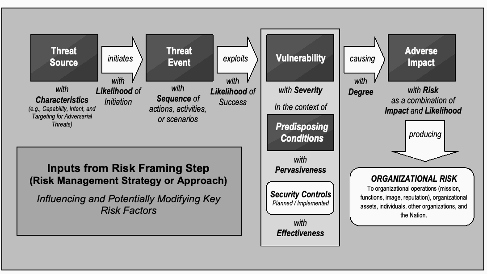

NIST SP 800-30 Rev. 1 日本語訳
英語タイトル : Guide for Conducting Risk Assessments日本語タイトル : 連邦情報システムおよび組織のリスクアセスメント実施ガイド
公開日 : 2012-09-17
原文URL : https://csrc.nist.gov/pubs/sp/800/30/r1/final
翻訳編集 : 自動生成（有志による非公式の日本語訳）, 原文取得日 : 2026-10-01, 訳文 : 822 / 822 ブロック
[要約] SP 800-30 Rev. 1 は、連邦情報システムと組織のリスクアセスメントを実施するための指針を示し、特定したリスクへの対応の決定を支援します。リスク管理プロセスにおけるアセスメントの位置づけとリスクの主要概念を述べ、リスクアセスメントの準備、実施、結果の伝達と共有、継続的な維持という手順を説明します。個々のアセスメントの厳密さや方法論、結果の形式に特定の要件はなく、組織が柔軟に適用し、より広範な組織のリスク管理プロセスに統合することを想定しています。
NIST Special Publication 800-30 Revision 1
NIST Special Publication 800-30 Revision 1
Guide for Conducting Risk Assessments
リスクアセスメント実施の手引き（Guide for Conducting Risk Assessments）
［NIST のロゴ。公的な標章のため、この非公式サイトには掲載していない。原本 PDF を参照。］
JOINT TASK FORCE TRANSFORMATION INITIATIVE
合同タスクフォース変革イニシアティブ
I N F O R M A T I O N S E C U R I T Y
情 報 セ キ ュ リ テ ィ
Computer Security Division Information Technology Laboratory National Institute of Standards and Technology Gaithersburg, MD 20899-8930
コンピュータセキュリティ部門 情報技術研究所 米国国立標準技術研究所 メリーランド州ゲイザースバーグ 20899-8930
September 2012
2012年9月
U.S. Department of Commerce Rebecca M. Blank, Acting Secretary
米国商務省 Rebecca M. Blank（長官代行）
National Institute of Standards and Technology
米国国立標準技術研究所
Patrick D. Gallagher, Under Secretary for Standards and Technology and Director
Patrick D. Gallagher、標準技術担当商務次官兼所長
Reports on Computer Systems Technology
コンピュータシステム技術に関する報告書
The Information Technology Laboratory (ITL) at the National Institute of Standards and Technology (NIST) promotes the U.S. economy and public welfare by providing technical leadership for the nation’s measurement and standards infrastructure. ITL develops tests, test methods, reference data, proof of concept implementations, and technical analyses to advance the development and productive use of information technology. ITL’s responsibilities include the development of management, administrative, technical, and physical standards and guidelines for the cost-effective security and privacy of other than national security-related information in federal information systems. The Special Publication 800-series reports on ITL’s research, guidelines, and outreach efforts in information system security, and its collaborative activities with industry, government, and academic organizations.
米国国立標準技術研究所（NIST）の情報技術研究所（ITL）は、国の計測および標準インフラに対する技術的リーダーシップを提供することにより、米国経済と公共福祉の向上を促進します。ITLは、情報技術の発展と生産的利用を促進するため、試験、試験方法、参照データ、概念実証実装、技術分析を開発します。ITLの責任には、国家安全保障関連以外の情報を扱う連邦情報システムについて、費用対効果の高いセキュリティとプライバシーを確保するための管理、運用、技術、物理的な標準およびガイドラインの策定が含まれます。Special Publication 800シリーズは、情報システムセキュリティに関するITLの研究、ガイドライン、普及活動、および産業界、政府、学術機関との共同活動を報告します。
Authority
権限
This publication has been developed by NIST to further its statutory responsibilities under the Federal Information Security Management Act (FISMA), Public Law (P.L.) 107-347. NIST is responsible for developing information security standards and guidelines, including minimum requirements for federal information systems, but such standards and guidelines shall not apply to national security systems without the express approval of appropriate federal officials exercising policy authority over such systems. This guideline is consistent with the requirements of the Office of Management and Budget (OMB) Circular A-130, Section 8b(3), Securing Agency Information Systems, as analyzed in Circular A-130, Appendix IV: Analysis of Key Sections. Supplemental information is provided in Circular A-130, Appendix III, Security of Federal Automated Information Resources.
本刊行物は、Federal Information Security Management Act（FISMA）、Public Law（P.L.）107-347に基づく法定責任を果たすため、NISTが作成しました。NISTは、連邦情報システムに関する最低要件を含む情報セキュリティ標準およびガイドラインを策定する責任を負います。ただし、国家安全保障システムについて政策権限を行使する適切な連邦政府職員の明示的な承認なしに、このような標準およびガイドラインを国家安全保障システムに適用してはなりません。本ガイドラインは、Office of Management and Budget（OMB）Circular A-130のSection 8b(3)「政府機関情報システムの保護」の要件と整合しており、その要件はCircular A-130 Appendix IV「主要条項の分析」で分析されています。補足情報はCircular A-130 Appendix III「連邦自動化情報資源のセキュリティ」に記載されています。
Nothing in this publication should be taken to contradict the standards and guidelines made mandatory and binding on federal agencies by the Secretary of Commerce under statutory authority. Nor should these guidelines be interpreted as altering or superseding the existing authorities of the Secretary of Commerce, Director of the OMB, or any other federal official. This publication may be used by nongovernmental organizations on a voluntary basis and is not subject to copyright in the United States. Attribution would, however, be appreciated by NIST.
本刊行物のいかなる内容も、法定権限に基づいて商務長官が連邦政府機関に義務付け、拘束力を持たせた標準およびガイドラインに矛盾すると解釈してはなりません。また、本ガイドラインを、商務長官、OMB長官、その他の連邦政府職員の既存の権限を変更または置換するものと解釈してはなりません。政府機関以外の組織は本刊行物を任意で使用でき、米国内では著作権の対象ではありません。ただし、NISTは出典を明記していただくことを希望します。
NIST Special Publication 800-30, 95 pages
NIST Special Publication 800-30、95ページ
(September 2012)
（2012年9月）
CODEN: NSPUE2
CODEN: NSPUE2
Certain commercial entities, equipment, or materials may be identified in this document in order to describe an experimental procedure or concept adequately. Such identification is not intended to imply recommendation or endorsement by NIST, nor is it intended to imply that the entities, materials, or equipment are necessarily the best available for the purpose.
本文書では、実験手順や概念を適切に説明するために、特定の営利団体、機器、または資材を挙げることがあります。このような記載は、NIST による推奨または支持を意味するものではなく、それらの団体、資材、または機器がその目的に必ずしも最適であることを意味するものでもありません。
There may be references in this publication to other publications currently under development by NIST in accordance with its assigned statutory responsibilities. The information in this publication, including concepts and methodologies, may be used by federal agencies even before the completion of such companion publications. Thus, until each publication is completed, current requirements, guidelines, and procedures, where they exist, remain operative. For planning and transition purposes, federal agencies may wish to closely follow the development of these new publications by NIST.
本書には、NIST が法令上割り当てられた責任に従って現在策定中の他の文書への参照が含まれている場合があります。本書の情報は、概念や方法論を含め、それらの関連文書が完成する前であっても連邦政府機関が利用してよい。したがって、各文書が完成するまでは、現行の要件、ガイドライン、および手順が存在する場合にはそれらが引き続き有効です。計画および移行のために、連邦政府機関は NIST によるこれらの新しい文書の策定状況を注視するとよい。
Organizations are encouraged to review all draft publications during public comment periods and provide feedback to NIST. All NIST publications are available at http://csrc.nist.gov/publications.
組織には、パブリックコメント期間中にすべての草案を確認し、NIST にフィードバックを提供することが推奨されます。NIST のすべての文書は http://csrc.nist.gov/publications で入手できます。
Comments on this publication may be submitted to:
本書へのコメントの提出先：
National Institute of Standards and Technology Attn: Computer Security Division, Information Technology Laboratory 100 Bureau Drive (Mail Stop 8930) Gaithersburg, MD 20899-8930 Electronic mail: sec-cert@nist.gov
National Institute of Standards and Technology Attn: Computer Security Division, Information Technology Laboratory 100 Bureau Drive (Mail Stop 8930) Gaithersburg, MD 20899-8930 電子メール：sec-cert@nist.gov
Compliance with NIST Standards and Guidelines
NIST の標準およびガイドラインへの準拠
In accordance with the provisions of FISMA,1 the Secretary of Commerce shall, on the basis of standards and guidelines developed by NIST, prescribe standards and guidelines pertaining to federal information systems. The Secretary shall make standards compulsory and binding to the extent determined necessary by the Secretary to improve the efficiency of operation or security of federal information systems. Standards prescribed shall include information security standards that provide minimum information security requirements and are otherwise necessary to improve the security of federal information and information systems.
FISMA1の規定に従い、商務長官は、NIST が策定した標準およびガイドラインに基づき、連邦情報システムに関する標準およびガイドラインを定めます。商務長官は、連邦情報システムの運用効率またはセキュリティを向上させるために必要と判断する範囲で、標準を強制力のある拘束的なものとします。定められる標準には、最低限の情報セキュリティ要件を規定し、かつそれ以外にも連邦政府の情報および情報システムのセキュリティ向上に必要な、情報セキュリティ標準が含まれます。
•Federal Information Processing Standards (FIPS) are approved by the Secretary of Commerce and issued by NIST in accordance with FISMA. FIPS are compulsory and binding for federal agencies.2 FISMA requires that federal agencies comply with these standards, and therefore, agencies may not waive their use.
•連邦情報処理標準（FIPS）は、FISMA に従い、商務長官が承認し NIST が発行します。FIPS は連邦政府機関に対して強制力があり、拘束的です。2 FISMA は連邦政府機関にこれらの標準への準拠を求めており、したがって政府機関はその適用を免除することができません。
•Special Publications (SPs) are developed and issued by NIST as recommendations and guidance documents. For other than national security programs and systems, federal agencies must follow those NIST Special Publications mandated in a Federal Information Processing Standard. FIPS 200 mandates the use of Special Publication 800-53, as amended. In addition, OMB policies (including OMB Reporting Instructions for FISMA and Agency Privacy Management) state that for other than national security programs and systems, federal agencies must follow certain specific NIST Special Publications.3
•Special Publication（SP）は、勧告およびガイダンス文書として NIST が策定・発行します。国家安全保障に関するプログラムおよびシステム以外については、連邦政府機関は連邦情報処理標準で義務付けられた NIST Special Publication に従わなければなりません。FIPS 200 は、改訂版を含め Special Publication 800-53 の使用を義務付けています。さらに、OMB の方針（OMB Reporting Instructions for FISMA and Agency Privacy Management を含む）は、国家安全保障に関するプログラムおよびシステム以外について、連邦政府機関が特定の NIST Special Publication に従わなければならないと定めています。3
•Other security-related publications, including interagency reports (NISTIRs) and ITL Bulletins, provide technical and other information about NIST's activities. These publications are mandatory only when specified by OMB.
•省庁間報告書（NISTIR）や ITL Bulletin を含むその他のセキュリティ関連文書は、NIST の活動に関する技術情報その他の情報を提供します。これらの文書は、OMB が指定した場合にのみ義務となります。
•Compliance schedules for NIST security standards and guidelines are established by OMB in policies, directives, or memoranda (e.g., annual FISMA Reporting Guidance).4
•NIST のセキュリティ標準およびガイドラインへの準拠スケジュールは、OMB が方針、指令、または覚書（例：年次 FISMA 報告ガイダンス）において定めます。4
Acknowledgements
謝辞
This publication was developed by the Joint Task Force Transformation Initiative Interagency Working Group with representatives from the Civil, Defense, and Intelligence Communities in an ongoing effort to produce a unified information security framework for the federal government. The National Institute of Standards and Technology wishes to acknowledge and thank the senior leaders from the Departments of Commerce and Defense, the Office of the Director of National Intelligence, the Committee on National Security Systems, and the members of the interagency technical working group whose dedicated efforts contributed significantly to the publication. The senior leaders, interagency working group members, and their organizational affiliations include:
本書は、連邦政府のための統一された情報セキュリティフレームワークを作成する継続的な取り組みの一環として、文民、国防、およびインテリジェンスの各コミュニティの代表者からなる合同タスクフォース変革イニシアティブ省庁間作業部会が策定しました。米国国立標準技術研究所は、商務省および国防総省、国家情報長官室、国家安全保障システム委員会の上級幹部、ならびに献身的な取り組みにより本書に大きく貢献した省庁間技術作業部会のメンバーに謝意を表します。上級幹部、省庁間作業部会のメンバー、およびその所属組織は次のとおりです。
Department of Defense
国防総省
Teresa M. Takai, DoD Chief Information Officer
Teresa M. Takai、DoD 最高情報責任者
Richard Hale, Deputy Chief Information Officer for Cybersecurity
Richard Hale、サイバーセキュリティ担当副最高情報責任者
Paul Grant, Director, Cybersecurity Policy
Paul Grant、サイバーセキュリティ政策部長
Dominic Cussatt, Deputy Director, Cybersecurity Policy
Dominic Cussatt、サイバーセキュリティ政策副部長
Kurt Eleam, Policy Advisor
Kurt Eleam、政策顧問
Office of the Director of National Intelligence
国家情報長官室
Adolpho Tarasiuk Jr., Assistant DNI and Intelligence Community Chief Information Officer
Adolpho Tarasiuk Jr.、DNI 補佐官兼インテリジェンスコミュニティ最高情報責任者
Charlene Leubecker, Deputy Intelligence Community Chief Information Officer
Charlene Leubecker、インテリジェンスコミュニティ副最高情報責任者
Catherine A. Henson, Director, Data Management
Catherine A. Henson、データ管理部長
Greg Hall, Chief, Risk Management and Information Security Programs Division
Greg Hall、リスク管理・情報セキュリティプログラム部長
National Institute of Standards and Technology
米国国立標準技術研究所
Charles H. Romine, Director, Information Technology Laboratory
Charles H. Romine、情報技術研究所長
Donna Dodson, Cybersecurity Advisor, Information Technology Laboratory
Donna Dodson、情報技術研究所サイバーセキュリティ顧問
Donna Dodson, Chief, Computer Security Division
Donna Dodson、コンピュータセキュリティ部門長
Ron Ross, FISMA Implementation Project Leader
Ron Ross、FISMA 実施プロジェクトリーダー
Committee on National Security Systems
国家安全保障システム委員会
Teresa M. Takai, Chair, CNSS
Teresa M. Takai、CNSS 議長
Richard Spires, Co-Chair, CNSS
Richard Spires、CNSS 共同議長
Dominic Cussatt, CNSS Subcommittee Co-Chair
Dominic Cussatt、CNSS 小委員会共同議長
Jeffrey Wilk, CNSS Subcommittee Co-Chair
Jeffrey Wilk、CNSS 小委員会共同議長
Joint Task Force Transformation Initiative Interagency Working Group
合同タスクフォース変革イニシアティブ省庁間作業部会
Ron Ross, NIST, JTF Leader
Ron Ross、NIST、JTF リーダー
Deborah Bodeau, The MITRE Corporation
Deborah Bodeau、The MITRE Corporation
Peter Williams, Booz Allen Hamilton
Peter Williams、Booz Allen Hamilton
Gary Stoneburner, Johns Hopkins APL
Gary Stoneburner、Johns Hopkins APL
Steve Rodrigo, Tenacity Solutions, Inc.
Steve Rodrigo、Tenacity Solutions, Inc.
Karen Quigg, The MITRE Corporation
Karen Quigg、The MITRE Corporation
Jennifer Fabius, The MITRE Corporation
Jennifer Fabius、The MITRE Corporation
Peter Gouldmann, Department of State
Peter Gouldmann、国務省
Christina Sames, TASC
Christina Sames、TASC
Kelley Dempsey, NIST
Kelley Dempsey、NIST
Arnold Johnson, NIST
Arnold Johnson、NIST
Christian Enloe, NIST
Christian Enloe、NIST
In addition to the above acknowledgments, a special note of thanks goes to Peggy Himes and Elizabeth Lennon of NIST for their superb technical editing and administrative support. The authors also gratefully acknowledge and appreciate the significant contributions from individuals and organizations in the public and private sectors, both nationally and internationally, whose thoughtful and constructive comments improved the overall quality, thoroughness, and usefulness of this publication.
上記の謝辞に加え、優れた技術編集と管理面の支援を提供した NIST の Peggy Himes 氏と Elizabeth Lennon 氏に特に感謝します。また著者らは、国内外の官民の個人および組織から寄せられた多大な貢献に深く感謝します。その思慮深く建設的なコメントにより、本書の全体的な品質、網羅性、および有用性が向上しました。
DEVELOPING COMMON INFORMATION SECURITY FOUNDATIONS
共通の情報セキュリティ基盤の構築
COLLABORATION AMONG PUBLIC AND PRIVATE SECTOR ENTITIES
官民の組織間の協力
In developing standards and guidelines required by FISMA, NIST consults with other federal agencies and offices as well as the private sector to improve information security, avoid unnecessary and costly duplication of effort, and ensure that NIST publications are complementary with the standards and guidelines employed for the protection of national security systems. In addition to its comprehensive public review and vetting process, NIST is collaborating with the Office of the Director of National Intelligence (ODNI), the Department of Defense (DoD), and the Committee on National Security Systems (CNSS) to establish a common foundation for information security across the federal government. A common foundation for information security will provide the Intelligence, Defense, and Civil sectors of the federal government and their contractors, more uniform and consistent ways to manage the risk to organizational operations and assets, individuals, other organizations, and the Nation that results from the operation and use of information systems. A common foundation for information security will also provide a strong basis for reciprocal acceptance of security authorization decisions and facilitate information sharing. NIST is also working with public and private sector entities to establish specific mappings and relationships between the security standards and guidelines developed by NIST and the International Organization for Standardization and International Electrotechnical Commission (ISO/IEC).
NIST は、FISMA が求める標準およびガイドラインの策定にあたり、情報セキュリティを向上させ、不要でコストのかかる重複作業を避け、NIST の文書が国家安全保障システムの保護に用いられる標準およびガイドラインと相互補完的であるようにするため、他の連邦政府機関・部局および民間部門と協議しています。NIST は、包括的なパブリックレビューと精査のプロセスに加え、国家情報長官室（ODNI）、国防総省（DoD）、および国家安全保障システム委員会（CNSS）と協力して、連邦政府全体で情報セキュリティの共通基盤を確立しようとしています。情報セキュリティの共通基盤は、連邦政府のインテリジェンス、国防、および文民の各部門とその請負業者に対し、情報システムの運用と使用から生じる、組織の業務と資産、個人、他の組織、および国家へのリスクを管理する、より統一的で一貫した方法を提供します。また情報セキュリティの共通基盤は、セキュリティ認可の決定を相互に受け入れるための強固な基礎となり、情報共有を促進します。NIST はさらに官民の組織と協力し、NIST が策定したセキュリティ標準およびガイドラインと、国際標準化機構および国際電気標準会議（ISO/IEC）のそれとの具体的な対応関係を確立しようとしています。
PAGE vi
PAGE vi
Table of Contents
目次
Prologue
序
“... Through the process of risk management, leaders must consider risk to U.S. interests from adversaries using cyberspace to their advantage and from our own efforts to employ the global nature of cyberspace to achieve objectives in military, intelligence, and business operations...”
「……リスク管理のプロセスを通じて、指導者は、サイバー空間を自らに有利に利用する敵対者による米国の利益へのリスクと、軍事、インテリジェンス、および業務の各運用で目的を達成するためにサイバー空間のグローバルな性質を活用しようとする我々自身の取り組みによるリスクとを考慮しなければならない……」
“... For operational plans development, the combination of threats, vulnerabilities, and impacts must be evaluated in order to identify important trends and decide where effort should be applied to eliminate or reduce threat capabilities; eliminate or reduce vulnerabilities; and assess, coordinate, and deconflict all cyberspace operations...”
「……作戦計画の策定にあたっては、重要な傾向を把握し、脅威の能力の排除または低減、脆弱性の排除または低減、ならびにすべてのサイバー空間作戦の評価、調整、および競合解消のためにどこに労力を注ぐべきかを決定するため、脅威、脆弱性、および影響の組合せを評価しなければならない……」
“... Leaders at all levels are accountable for ensuring readiness and security to the same degree as in any other domain...”
「……あらゆるレベルの指導者は、他のどの領域とも同程度に、即応性とセキュリティを確保する責任を負う……」
-- THE NATIONAL STRATEGY FOR CYBERSPACE OPERATIONS OFFICE OF THE CHAIRMAN, JOINT CHIEFS OF STAFF, U.S. DEPARTMENT OF DEFENSE
―― THE NATIONAL STRATEGY FOR CYBERSPACE OPERATIONS、米国国防総省統合参謀本部議長室
CAUTIONARY NOTES
注意事項
SCOPE AND APPLICABILITY OF RISK ASSESSMENTS
リスクアセスメントの範囲と適用可能性
•Risk assessments are a key part of effective risk management and facilitate decision making at all three tiers in the risk management hierarchy including the organization level, mission/business process level, and information system level.
•リスクアセスメントは効果的なリスク管理の重要な要素であり、リスク管理階層の 3 つの層、すなわち組織レベル、ミッション／業務プロセスレベル、および情報システムレベルのすべてにおいて意思決定を支援します。
•Because risk management is ongoing, risk assessments are conducted throughout the system development life cycle, from pre-system acquisition (i.e., material solution analysis and technology development), through system acquisition (i.e., engineering/manufacturing development and production/deployment), and on into sustainment (i.e., operations/support).
•リスク管理は継続的に行われるため、リスクアセスメントはシステム開発ライフサイクル全体を通じて実施されます。すなわち、システム取得前（すなわち資材ソリューション分析と技術開発）から、システム取得（すなわちエンジニアリング／製造開発と生産／配備）を経て、維持（すなわち運用／サポート）に至るまでです。
•There are no specific requirements with regard to: (i) the formality, rigor, or level of detail that characterizes any particular risk assessment; (ii) the methodologies, tools, and techniques used to conduct such risk assessments; or (iii) the format and content of assessment results and any associated reporting mechanisms. Organizations have maximum flexibility on how risk assessments are conducted and are encouraged to apply the guidance in this document so that the various needs of organizations can be addressed and the risk assessment activities can be integrated into broader organizational risk management processes.
•次の事項について特定の要件はありません。(i) 個々のリスクアセスメントを特徴づける形式性、厳密さ、または詳細さの程度、(ii) リスクアセスメントの実施に用いる方法論、ツール、および技法、(iii) アセスメント結果の形式と内容、および関連する報告の仕組み。組織はリスクアセスメントの実施方法について最大限の柔軟性を有しており、組織のさまざまなニーズに対応し、リスクアセスメント活動をより広範な組織のリスク管理プロセスに統合できるよう、本文書のガイダンスを適用することが推奨されます。
•Organizations are also cautioned that risk assessments are often not precise instruments of measurement and reflect: (i) the limitations of the specific assessment methodologies, tools, and techniques employed; (ii) the subjectivity, quality, and trustworthiness of the data used; (iii) the interpretation of assessment results; and (iv) the skills and expertise of those individuals or groups conducting the assessments.
•また組織は、リスクアセスメントが多くの場合精密な測定手段ではなく、次の事項を反映することに注意する必要があります。(i) 採用した個々のアセスメント方法論、ツール、および技法の限界、(ii) 使用するデータの主観性、品質、および信頼性、(iii) アセスメント結果の解釈、(iv) アセスメントを実施する個人またはグループのスキルと専門知識。
•Since cost, timeliness, and ease of use are a few of the many important factors in the application of risk assessments, organizations should attempt to reduce the level of effort for risk assessments by sharing risk-related information, whenever possible.
•コスト、適時性、および使いやすさは、リスクアセスメントの適用における多くの重要な要素の一部であるため、組織は可能な限りリスク関連情報を共有することで、リスクアセスメントに要する労力を低減するよう努めるべきです。
PAGE ix
PAGE ix
CHAPTER ONE
第1章
INTRODUCTION
はじめに
THE NEED FOR RISK ASSESSMENTS TO SUPPORT ENTERPRISE-WIDE RISK MANAGEMENT
組織全体のリスクマネジメントを支援するリスク評価の必要性
Organizations5 in the public and private sectors depend on information technology6 and information systems7 to successfully carry out their missions and business functions. Information systems can include very diverse entities ranging from office networks, financial and personnel systems to very specialized systems (e.g., industrial/process control systems, weapons systems, telecommunications systems, and environmental control systems). Information systems are subject to serious threats that can have adverse effects on organizational operations and assets, individuals, other organizations, and the Nation by exploiting both known and unknown vulnerabilities to compromise the confidentiality, integrity, or availability of the information being processed, stored, or transmitted by those systems. Threats to information systems can include purposeful attacks, environmental disruptions, human/machine errors, and structural failures, and can result in harm to the national and economic security interests of the United States. Therefore, it is imperative that leaders and managers at all levels understand their responsibilities and are held accountable for managing information security risk—that is, the risk associated with the operation and use of information systems that support the missions and business functions of their organizations.
官民の組織5は、ミッションと業務機能を遂行するために情報技術6と情報システム7に依存しています。情報システムには、オフィスネットワーク、財務システムや人事システムから、非常に特殊なシステム（例：産業用／プロセス制御システム、兵器システム、電気通信システム、環境制御システム）に至るまで、きわめて多様なものが含まれうます。情報システムは深刻な脅威にさらされています。これらの脅威は、既知および未知の脆弱性を悪用して、システムが処理、保存、または送信する情報の機密性、完全性、または可用性を損なうことにより、組織の業務と資産、個人、他の組織、および国家に悪影響を及ぼしうます。情報システムへの脅威には、意図的な攻撃、環境による中断、人為的／機械的な誤り、および構造上の障害が含まれ、米国の国家安全保障上および経済安全保障上の利益に損害をもたらしうます。したがって、あらゆるレベルの指導者と管理者が、情報セキュリティリスク、すなわち組織のミッションと業務機能を支える情報システムの運用と使用に関連するリスクを管理する自らの責任を理解し、その責任を問われることが不可欠です。
Risk assessment is one of the fundamental components of an organizational risk management process as described in NIST Special Publication 800-39. Risk assessments are used to identify, estimate, and prioritize risk to organizational operations (i.e., mission, functions, image, and reputation), organizational assets, individuals, other organizations, and the Nation, resulting from the operation and use of information systems. The purpose of risk assessments is to inform decision makers and support risk responses by identifying: (i) relevant threats to organizations or threats directed through organizations against other organizations; (ii) vulnerabilities both internal and external to organizations; (iii) impact (i.e., harm) to organizations that may occur given the potential for threats exploiting vulnerabilities; and (iv) likelihood that harm will occur. The end result is a determination of risk (i.e., typically a function of the degree of harm and likelihood of harm occurring). Risk assessments can be conducted at all three tiers in the risk management hierarchy—including Tier 1 (organization level), Tier 2 (mission/business process level), and Tier 3 (information system level). At Tiers 1 and 2, organizations use risk assessments to evaluate, for example, systemic information security-related risks associated with organizational governance and management activities, mission/business processes, enterprise architecture, or the funding of information security programs. At Tier 3, organizations use risk assessments to more effectively support the implementation of the Risk Management Framework (i.e., security categorization; security control selection, implementation, and assessment; information system and common control authorization; and security control monitoring).8
リスクアセスメントは、NIST Special Publication 800-39 に記載された組織のリスク管理プロセスの基本的な構成要素の 1 つです。リスクアセスメントは、情報システムの運用と使用から生じる、組織の業務（すなわちミッション、機能、イメージ、評判）、組織の資産、個人、他の組織、および国家へのリスクを特定し、推定し、優先順位付けするために用いられます。リスクアセスメントの目的は、次の事項を特定することにより、意思決定者に情報を提供し、リスク対応を支援することです。(i) 組織に対する関連脅威、または組織を経由して他の組織に向けられる脅威、(ii) 組織の内部および外部の脆弱性、(iii) 脅威が脆弱性を悪用する可能性がある場合に組織に生じうる影響（すなわち損害）、(iv) 損害が発生する可能性。最終的な成果はリスクの決定（すなわち、通常は損害の程度と損害発生の可能性の関数）です。リスクアセスメントは、リスク管理階層の 3 つの層すべて、すなわち層 1（組織レベル）、層 2（ミッション／業務プロセスレベル）、および層 3（情報システムレベル）で実施できます。層 1 と層 2 では、組織はリスクアセスメントを用いて、たとえば組織のガバナンスと管理活動、ミッション／業務プロセス、エンタープライズアーキテクチャ、または情報セキュリティプログラムへの資金配分に関連する、体系的な情報セキュリティ関連リスクを評価します。層 3 では、組織はリスクアセスメントを用いて、リスクマネジメントフレームワーク（すなわち、セキュリティ分類、セキュリティ管理策の選択・実装・評価、情報システムおよび共通管理策の認可、ならびにセキュリティ管理策の監視）の実施をより効果的に支援します。8
1.1 PURPOSE AND APPLICABILITY
1.1 目的と適用範囲
The purpose of Special Publication 800-30 is to provide guidance for conducting risk assessments of federal information systems and organizations, amplifying the guidance in Special Publication 800-39. Risk assessments, carried out at all three tiers in the risk management hierarchy, are part of an overall risk management process—providing senior leaders/executives with the information needed to determine appropriate courses of action in response to identified risks. In particular, this document provides guidance for carrying out each of the steps in the risk assessment process (i.e., preparing for the assessment, conducting the assessment, communicating the results of the assessment, and maintaining the assessment) and how risk assessments and other organizational risk management processes complement and inform each other. Special Publication 800-30 also provides guidance to organizations on identifying specific risk factors to monitor on an ongoing basis, so that organizations can determine whether risks have increased to unacceptable levels (i.e., exceeding organizational risk tolerance) and different courses of action should be taken.
Special Publication 800-30の目的は、Special Publication 800-39の指針を補足し、連邦情報システムおよび組織のリスク評価を実施するための指針を提供することです。リスクマネジメント階層の3つすべてのレベルで実施されるリスク評価は、全体的なリスクマネジメントプロセスの一部であり、特定されたリスクへの適切な対応方針を決定するために必要な情報を上級指導者／幹部に提供します。特に本書は、リスク評価プロセスの各手順（すなわち、評価の準備、評価の実施、評価結果の伝達、評価の維持）を実行する方法と、リスク評価およびその他の組織のリスクマネジメントプロセスが互いにどのように補完し、情報を提供し合うかについて指針を示します。Special Publication 800-30はまた、継続的に監視する具体的なリスク要因を特定する指針も組織に提供します。これにより、組織はリスクが許容できない水準（すなわち組織のリスク許容度を超える水準）まで高まったか、異なる対応方針を取るべきかを判断できます。
This publication satisfies the requirements of FISMA and meets or exceeds the information security requirements established for executive agencies9 by the Office of Management and Budget (OMB) in Circular A-130, Appendix III, Security of Federal Automated Information Resources. The guidelines in this publication are applicable to all federal information systems other than those systems designated as national security systems as defined in 44 U.S.C., Section 3542. The guidelines have been broadly developed from a technical perspective to complement similar guidelines for national security systems and may be used for such systems with the approval of appropriate federal officials exercising policy authority over such systems. State, local, and tribal governments, as well as private sector organizations are encouraged to consider using these guidelines, as appropriate.
本書は FISMA の要件を満たし、行政管理予算局（OMB）が Circular A-130, Appendix III, Security of Federal Automated Information Resources において行政機関9に対して定めた情報セキュリティ要件を満たすか、それを上回るものです。本書のガイドラインは、44 U.S.C., Section 3542 に定義される国家安全保障システムに指定されたシステムを除く、すべての連邦情報システムに適用されます。本ガイドラインは、国家安全保障システム向けの同様のガイドラインを補完するよう、技術的観点から幅広く策定されており、国家安全保障システムに対する政策権限を行使する適切な連邦政府職員の承認を得れば、それらのシステムにも使用できます。州政府、地方政府、部族政府、および民間組織は、必要に応じて本ガイドラインの使用を検討することが推奨されます。
1.2 TARGET AUDIENCE
1.2 対象読者
This publication is intended to serve a diverse group of risk management professionals including:
本刊行物は、次のような多様なリスクマネジメント専門家を対象とします。
•Individuals with oversight responsibilities for risk management (e.g., heads of agencies, chief executive officers, chief operating officers, risk executive [function]);
•リスクマネジメントの監督責任を負う個人（例：政府機関の長、最高経営責任者、最高執行責任者、リスク執行責任者［機能］）。
•Individuals with responsibilities for conducting organizational missions/business functions (e.g., mission/business owners, information owners/stewards, authorizing officials);
•組織のミッション／業務機能の遂行責任を負う個人（例：ミッション／業務の責任者、情報所有者／管理者、認可担当者）。
•Individuals with responsibilities for acquiring information technology products, services, or information systems (e.g., acquisition officials, procurement officers, contracting officers);
•情報技術製品、サービス、または情報システムの取得責任を負う個人（例：取得担当者、調達担当者、契約担当者）。
•Individuals with information system/security design, development, and implementation responsibilities (e.g., program managers, enterprise architects, information security architects, information system/security engineers, information systems integrators);
•情報システム／セキュリティの設計、開発、実装責任を負う個人（例：プログラムマネージャー、エンタープライズアーキテクト、情報セキュリティアーキテクト、情報システム／セキュリティエンジニア、情報システムインテグレーター）。
•Individuals with information security oversight, management, and operational responsibilities (e.g., chief information officers, senior information security officers,10 information security managers, information system owners, common control providers); and
•情報セキュリティの監督、管理、運用の責任を負う者（例：最高情報責任者、上級情報セキュリティ責任者10、情報セキュリティ管理者、情報システム所有者、共通管理策提供者）、および
•Individuals with information security/risk assessment and monitoring responsibilities (e.g., system evaluators, penetration testers, security control assessors, risk assessors, independent verifiers/validators, inspectors general, auditors).
•情報セキュリティ／リスク評価および監視の責任を負う個人（例：システム評価者、侵入テスト担当者、セキュリティ管理策評価者、リスク評価者、独立検証者／妥当性確認者、監察総監、監査人）。
1.3 RELATED PUBLICATIONS
1.3 関連刊行物
The risk assessment approach described in this publication is supported by a series of security standards and guidelines necessary for managing information security risk. In addition to this publication, the Special Publications developed by the Joint Task Force Transformation Initiative supporting the unified information security framework for the federal government include:
本刊行物で説明するリスク評価のアプローチは、情報セキュリティリスクの管理に必要な一連のセキュリティ標準およびガイドラインによって支えられています。本刊行物に加え、連邦政府の統一情報セキュリティ枠組みを支援するJoint Task Force Transformation Initiativeが策定したSpecial Publicationsには、次のものがあります。
•Special Publication 800-39, Managing Information Security Risk: Organization, Mission, and Information System View;11
•Special Publication 800-39, Managing Information Security Risk: Organization, Mission, and Information System View;11
•Special Publication 800-37, Guide for Applying the Risk Management Framework to Federal Information Systems: A Security Life Cycle Approach;
•Special Publication 800-37, Guide for Applying the Risk Management Framework to Federal Information Systems: A Security Life Cycle Approach;
•Special Publication 800-53, Recommended Security Controls for Federal Information Systems and Organizations; and
•Special Publication 800-53, Recommended Security Controls for Federal Information Systems and Organizations；および
•Special Publication 800-53A, Guide for Assessing the Security Controls in Federal Information Systems and Organizations: Building Effective Security Assessment Plans.
•Special Publication 800-53A, Guide for Assessing the Security Controls in Federal Information Systems and Organizations: Building Effective Security Assessment Plans.
The concepts and principles associated with the risk assessment processes and approaches contained in this publication are intended to be similar to and consistent with the processes and approaches described in International Organization for Standardization (ISO) and International Electrotechnical Commission (IEC) standards. Extending the concepts and principles of these international standards for the federal government and its contractors and promoting the reuse of risk assessment results, reduces the burden on organizations that must conform to ISO/IEC and NIST standards.
本刊行物に含まれるリスク評価プロセスおよびアプローチに関する概念と原則は、International Organization for Standardization（ISO）およびInternational Electrotechnical Commission（IEC）の標準に記載されたプロセスおよびアプローチと類似し、一貫することを意図しています。これらの国際標準の概念および原則を連邦政府ならびにその請負業者に適用し、リスク評価結果の再利用を促進することで、ISO/IEC標準とNIST標準の両方に準拠しなければならない組織の負担が軽減されます。
1.4 ORGANIZATION OF THIS SPECIAL PUBLICATION
1.4 本Special Publicationの構成
The remainder of this special publication is organized as follows:
本Special Publicationの残りの構成は次のとおりです。
•Chapter Two describes: (i) the risk management process and how risk assessments are an integral part of that process; (ii) the basic terminology used in conducting risk assessments; and (iii) how risk assessments can be applied across the organization’s risk management tiers (i.e., organization level, mission/business process level, and information system level).
•第2章では、(i) リスクマネジメントプロセスと、そのプロセスにリスク評価が不可欠な要素として含まれること、(ii) リスク評価の実施に用いる基本用語、(iii) 組織のリスクマネジメント各階層（すなわち組織レベル、ミッション／業務プロセスレベル、情報システムレベル）におけるリスク評価の適用方法を説明します。
•Chapter Three describes the process of assessing information security risk including: (i) a high-level overview of the risk assessment process; (ii) the activities necessary to prepare for a risk assessment; (iii) the activities necessary to conduct a risk assessment; (iv) the activities necessary to communicate risk assessment results and share risk-related information across the organization; and (v) the activities necessary to maintain the results of a risk assessment.
•第3章では、情報セキュリティリスクの評価プロセスを説明し、(i) リスク評価プロセスの概要、(ii) リスク評価の準備に必要な活動、(iii) リスク評価の実施に必要な活動、(iv) リスク評価結果を伝達し、組織全体でリスク関連情報を共有するために必要な活動、(v) リスク評価結果を維持するために必要な活動を扱います。
•Supporting appendices provide additional risk assessment information including: (i) general references; (ii) a glossary of terms; (iii) acronyms; (iv) threat sources; (v) threat events; (vi) vulnerabilities and predisposing conditions; (vii) likelihood of threat event occurrence; (viii) organizational impact; (ix) risk determination; (x) informing risk response; (xi) essential information for risk assessment reports; and (xii) a summary of risk assessment tasks.
•補足付録では、次のようなリスク評価に関する追加情報を示します。(i) 一般的な参考資料、(ii) 用語集、(iii) 略語、(iv) 脅威源、(v) 脅威事象、(vi) 脆弱性および素因となる条件、(vii) 脅威事象の発生可能性、(viii) 組織への影響、(ix) リスク判定、(x) リスク対応への情報提供、(xi) リスク評価報告書に必要な情報、(xii) リスク評価タスクの概要。
CHAPTER TWO
第2章
THE FUNDAMENTALS
基礎
BASIC CONCEPTS ASSOCIATED WITH RISK ASSESSMENTS
リスク評価に関する基本概念
This chapter describes the fundamental concepts associated with assessing information security risk within an organization including: (i) a high-level overview of the risk management process and the role risk assessments play in that process; (ii) the basic concepts used in conducting risk assessments; and (iii) how risk assessments can be applied across the organization’s risk management tiers.12
本章では、組織内の情報セキュリティリスク評価に関連する基本概念を説明します。内容には、(i) リスクマネジメントプロセスの概要と、そのプロセスにおけるリスク評価の役割、(ii) リスク評価の実施に用いる基本概念、(iii) 組織のリスクマネジメント各階層におけるリスク評価の適用方法が含まれます。12
2.1 RISK MANAGEMENT PROCESS
2.1 リスクマネジメントプロセス
Risk assessment is a key component of a holistic, organization-wide risk management process as defined in NIST Special Publication 800-39, Managing Information Security Risk: Organization, Mission, and Information System View. Risk management processes include: (i) framing risk; (ii) assessing risk; (iii) responding to risk; and (iv) monitoring risk. Figure 1 illustrates the four steps in the risk management process—including the risk assessment step and the information and communications flows necessary to make the process work effectively.13
NIST Special Publication 800-39, Managing Information Security Risk: Organization, Mission, and Information System Viewで定義される包括的な組織全体のリスクマネジメントプロセスにおいて、リスク評価は重要な構成要素です。リスクマネジメントプロセスには、(i) リスクの枠組み設定、(ii) リスク評価、(iii) リスク対応、(iv) リスク監視が含まれます。図1は、リスク評価の段階と、プロセスを効果的に機能させるために必要な情報およびコミュニケーションの流れを含む、リスクマネジメントプロセスの4つの手順を示します。13
ASSESS
評価
Information and
情報および
Information and
情報および
Communications Flows
コミュニケーションの流れ
Communications Flows
コミュニケーションの流れ
FRAME
枠組み設定
RESPOND
対応
MONITOR
監視
FIGURE 1: RISK ASSESSMENT WITHIN THE RISK MANAGEMENT PROCESS
図1：リスクマネジメントプロセスにおけるリスク評価
The first component of risk management addresses how organizations frame risk or establish a risk context—that is, describing the environment in which risk-based decisions are made. The purpose of the risk framing component is to produce a risk management strategy that addresses how organizations intend to assess risk, respond to risk, and monitor risk—making explicit and transparent the risk perceptions that organizations routinely use in making both investment and operational decisions. The risk management strategy establishes a foundation for managing risk and delineates the boundaries for risk-based decisions within organizations.14
リスクマネジメントの最初の構成要素では、組織がリスクの枠組みを設定する方法、すなわちリスクの状況を定める方法を扱います。これは、リスクに基づく意思決定が行われる環境を記述することです。リスク枠組み設定の目的は、組織がリスク評価、リスク対応、リスク監視をどのように行う予定かを示すリスクマネジメント戦略を作成することであり、投資上および運用上の意思決定において組織が日常的に用いるリスク認識を明示的かつ透明にします。リスクマネジメント戦略はリスク管理の基盤を確立し、組織内でのリスクに基づく意思決定の境界を定めます。14
The second component of risk management addresses how organizations assess risk within the context of the organizational risk frame. The purpose of the risk assessment component is to identify: (i) threats to organizations (i.e., operations, assets, or individuals) or threats directed through organizations against other organizations or the Nation; (ii) vulnerabilities internal and external to organizations;15 (iii) the harm (i.e., adverse impact) that may occur given the potential for threats exploiting vulnerabilities; and (iv) the likelihood that harm will occur. The end result is a determination of risk (i.e., typically a function of the degree of harm and likelihood of harm occurring).
リスクマネジメントの第2の構成要素では、組織のリスク枠組みの中で組織がリスクを評価する方法を扱います。リスク評価構成要素の目的は、次を特定することです。(i) 組織（すなわち業務、資産、個人）に対する脅威、または組織を介して他の組織や国家に向けられる脅威、(ii) 組織の内部および外部の脆弱性、15 (iii) 脅威が脆弱性を悪用する可能性を踏まえて生じ得る損害（すなわち悪影響）、(iv) 損害が発生する可能性。最終的にはリスクが判定される（通常、損害の程度と損害発生の可能性の関数）。
The third component of risk management addresses how organizations respond to risk once that risk is determined based on the results of a risk assessment. The purpose of the risk response component is to provide a consistent, organization-wide response to risk in accordance with the organizational risk frame by: (i) developing alternative courses of action for responding to risk; (ii) evaluating the alternative courses of action; (iii) determining appropriate courses of action consistent with organizational risk tolerance; and (iv) implementing risk responses based on selected courses of action.
リスクマネジメントの第3の構成要素では、リスク評価の結果に基づいてリスクが判定された後、組織がリスクに対応する方法を扱います。リスク対応構成要素の目的は、組織のリスク枠組みに従って一貫性のある組織全体のリスク対応を行うことであり、そのために、(i) リスク対応のための代替行動方針を策定する、(ii) 代替行動方針を評価する、(iii) 組織のリスク許容度に沿った適切な行動方針を決定する、(iv) 選択した行動方針に基づいてリスク対応を実施します。
The fourth component of risk management addresses how organizations monitor risk over time. The purpose of the risk monitoring component is to: (i) determine the ongoing effectiveness of risk responses (consistent with the organizational risk frame); (ii) identify risk-impacting changes to organizational information systems and the environments in which the systems operate;16 and (iii) verify that planned risk responses are implemented and information security requirements derived from and traceable to organizational missions/business functions, federal legislation, directives, regulations, policies, standards, and guidelines are satisfied.
リスクマネジメントの第4の構成要素では、組織が時間の経過に伴ってリスクを監視する方法を扱います。リスク監視構成要素の目的は、(i) リスク対応の継続的な有効性（組織のリスク枠組みに整合したもの）を判定する、(ii) 組織の情報システムおよびシステムが稼働する環境における、リスクに影響する変化を特定する、16 (iii) 計画されたリスク対応が実施され、組織のミッション／業務機能、連邦法、指令、規制、方針、標準、ガイドラインから導出され、それらに追跡可能な情報セキュリティ要件が満たされていることを検証することです。
2.2 RISK ASSESSMENT
2.2 リスク評価
This publication focuses on the risk assessment component of risk management—providing a step-by-step process for organizations on: (i) how to prepare for risk assessments; (ii) how to conduct risk assessments; (iii) how to communicate risk assessment results to key organizational personnel; and (iv) how to maintain the risk assessments over time. Risk assessments are not simply one-time activities that provide permanent and definitive information for decision makers to guide and inform responses to information security risks. Rather, organizations employ risk assessments on an ongoing basis throughout the system development life cycle and across all of the tiers in the risk management hierarchy—with the frequency of the risk assessments and the resources applied during the assessments, commensurate with the expressly defined purpose and scope of the assessments.
本刊行物はリスクマネジメントのリスク評価構成要素に焦点を当て、次の事項に関する段階的なプロセスを組織に提供します。(i) リスク評価の準備方法、(ii) リスク評価の実施方法、(iii) リスク評価結果を組織内の主要な要員に伝達する方法、(iv) リスク評価を時間の経過とともに維持する方法。リスク評価は、情報セキュリティリスクへの対応を導き、情報を提供するため、意思決定者に恒久的かつ確定的な情報を与える一度限りの活動ではありません。むしろ、組織はシステム開発ライフサイクル全体およびリスクマネジメント階層のすべての層にわたって、継続的にリスク評価を実施します。評価の頻度と投入する資源は、明確に定義された評価の目的および範囲に見合ったものとします。
Risk assessments address the potential adverse impacts to organizational operations and assets, individuals, other organizations, and the economic and national security interests of the United States, arising from the operation and use of information systems and the information processed, stored, and transmitted by those systems. Organizations conduct risk assessments to determine risks that are common to the organization’s core missions/business functions, mission/business processes, mission/business segments, common infrastructure/support services, or information systems. Risk assessments can support a wide variety of risk-based decisions and activities by organizational officials across all three tiers in the risk management hierarchy including, but not limited to, the following:
リスク評価は、情報システムおよびそれらのシステムが処理、保存、伝送する情報の運用と利用に起因する、組織の業務および資産、個人、他の組織、米国の経済上の利益および国家安全保障上の利益に対する潜在的な悪影響を扱います。組織は、組織の中核的なミッション／業務機能、ミッション／業務プロセス、ミッション／業務の各区分、共通インフラストラクチャ／サポートサービス、または情報システムに共通するリスクを判断するため、リスク評価を実施します。リスク評価は、リスクマネジメント階層の3つすべてのレベルにおいて、組織職員による幅広いリスクベースの意思決定および活動を支援できます。以下を含むが、これらに限定されません。
•Development of an information security architecture;
•情報セキュリティアーキテクチャの策定。
•Definition of interconnection requirements for information systems (including systems supporting mission/business processes and common infrastructure/support services);
•情報システム（ミッション／業務プロセスおよび共通インフラストラクチャ／サポートサービスを支援するシステムを含む）の相互接続要件の定義。
•Design of security solutions for information systems and environments of operation including selection of security controls, information technology products, suppliers/supply chain, and contractors;
•情報システムおよび運用環境のセキュリティソリューションの設計。これには、セキュリティ管理策、情報技術製品、供給業者／サプライチェーン、請負業者の選定が含まれます。
•Authorization (or denial of authorization) to operate information systems or to use security controls inherited by those systems (i.e., common controls);
•情報システムの運用、または当該システムが継承するセキュリティ管理策（すなわち共通管理策）の使用に対する認可（または認可の拒否）。
•Modification of missions/business functions and/or mission/business processes permanently, or for a specific time frame (e.g., until a newly discovered threat or vulnerability is addressed, until a compensating control is replaced);
•ミッション／業務機能および／またはミッション／業務プロセスの恒久的な変更、または特定期間に限った変更（例：新たに発見された脅威もしくは脆弱性への対処まで、代替管理策が置き換えられるまで）。
•Implementation of security solutions (e.g., whether specific information technology products or configurations for those products meet established requirements); and
•セキュリティソリューションの実装（例：特定の情報技術製品またはその製品構成が定められた要件を満たすかどうか）、および
•Operation and maintenance of security solutions (e.g., continuous monitoring strategies and programs, ongoing authorizations).
•セキュリティソリューションの運用および保守（例：継続的監視戦略およびプログラム、継続的な認可）。
Because organizational missions and business functions, supporting mission/business processes, information systems, threats, and environments of operation tend to change over time, the validity and usefulness of any risk assessment is bounded in time.
組織のミッションおよび業務機能、それらを支えるミッション／業務プロセス、情報システム、脅威、運用環境は時間の経過に伴い変化する傾向があるため、あらゆるリスク評価の妥当性と有用性には時間的な限界があります。
2.3 KEY RISK CONCEPTS
2.3 主要なリスク概念
Risk is a measure of the extent to which an entity is threatened by a potential circumstance or event, and is typically a function of: (i) the adverse impacts that would arise if the circumstance or event occurs; and (ii) the likelihood of occurrence. Information security risks are those risks that arise from the loss of confidentiality, integrity, or availability of information or information systems and reflect the potential adverse impacts to organizational operations (i.e., mission, functions, image, or reputation), organizational assets, individuals, other organizations, and the Nation. Risk assessment is the process of identifying, estimating, and prioritizing information security risks. Assessing risk requires the careful analysis of threat and vulnerability information to determine the extent to which circumstances or events could adversely impact an organization and the likelihood that such circumstances or events will occur.
リスクとは、潜在的な状況または事象によって主体が脅威にさらされる程度を示す尺度であり、通常は、(i) その状況または事象が発生した場合に生じる悪影響、(ii) 発生可能性の関数です。情報セキュリティリスクとは、情報または情報システムの機密性、完全性、可用性の喪失から生じるリスクであり、組織の業務（すなわちミッション、機能、イメージ、評判）、組織の資産、個人、他の組織、国家に対する潜在的な悪影響を反映します。リスク評価は、情報セキュリティリスクを特定、推定、優先順位付けするプロセスです。リスクの評価には、状況または事象が組織に悪影響を及ぼす程度と、それらが発生する可能性を判断するため、脅威および脆弱性に関する情報を慎重に分析する必要があります。
A risk assessment methodology typically includes: (i) a risk assessment process (as described in Chapter Three); (ii) an explicit risk model, defining key terms and assessable risk factors and the relationships among the factors; (iii) an assessment approach (e.g., quantitative, qualitative, or semi-qualitative), specifying the range of values those risk factors can assume during the risk assessment and how combinations of risk factors are identified/analyzed so that values of those factors can be functionally combined to evaluate risk; and (iv) an analysis approach (e.g., threat-oriented, asset/impact-oriented, or vulnerability-oriented), describing how combinations of risk factors are identified/analyzed to ensure adequate coverage of the problem space at a consistent level of detail. Risk assessment methodologies are defined by organizations and are a component of the risk management strategy developed during the risk framing step of the risk management process.17 Figure 2 illustrates the fundamental components in organizational risk frames and the relationships among those components.
リスク評価方法論には通常、次のものが含まれます。(i) リスク評価プロセス（第3章に記載）。(ii) 主要用語、評価可能なリスク要因、および要因間の関係を定義する明示的なリスクモデル。(iii) 評価アプローチ（例：定量的、定性的、または半定性的）。これは、リスク評価中に各リスク要因が取り得る値の範囲と、それらの要因の値を機能的に組み合わせてリスクを評価できるようにリスク要因の組み合わせを特定／分析する方法を指定します。(iv) 分析アプローチ（例：脅威指向、資産／影響指向、または脆弱性指向）。これは、一貫した詳細度で問題領域を十分に網羅するために、リスク要因の組み合わせを特定／分析する方法を記述します。リスク評価方法論は組織が定めるものであり、リスクマネジメントプロセスのリスク枠組み設定ステップで策定するリスクマネジメント戦略の構成要素です。17 図2は、組織のリスク枠組みにおける基本的な構成要素と、それらの構成要素間の関係を示します。
![FIGURE 2: RELATIONSHIP AMONG RISK FRAMING COMPONENTS. A shaded frame. At the top centre is a box "ORGANIZATIONAL RISK FRAME" with the subtitle "RISK MANAGEMENT STRATEGY OR APPROACH". To its left is a list: "Risk Assumptions", "Risk Constraints", "Priorities and Tradeoffs", "Risk Tolerance", "Uncertainty". To its right is a list: "Establishes Foundation for Risk Management", "Delineates Boundaries for Risk-Based Decisions". Two curved arrows, each labelled "DETERMINES", run from the left and right sides of the risk frame box down to a box "Risk Assessment Methodology". Below it, a rounded box with a heavy border contains four boxes: "Risk Assessment Process", "Risk Model", "Assessment Approach" and "Analysis Approach".](assets/sp800-30r1/p0016-drawing-01.png)
図2：リスク枠組み構成要素間の関係。網掛けの枠で囲んだ図である。上中央に「ORGANIZATIONAL RISK FRAME」（組織のリスク枠組み）の箱があり、副題は「RISK MANAGEMENT STRATEGY OR APPROACH」（リスクマネジメント戦略またはアプローチ）である。その左に「Risk Assumptions」（リスクの前提）、「Risk Constraints」（リスクの制約）、「Priorities and Tradeoffs」（優先事項とトレードオフ）、「Risk Tolerance」（リスク許容度）、「Uncertainty」（不確実性）の一覧がある。右に「Establishes Foundation for Risk Management」（リスクマネジメントのための基盤を確立する）、「Delineates Boundaries for Risk-Based Decisions」（リスクに基づく意思決定のための境界を定める）の一覧がある。リスク枠組みの箱の左右から、いずれも「DETERMINES」（決定する）と記された曲線の矢印が下の「Risk Assessment Methodology」（リスク評価方法論）の箱へ向かう。その下の太枠の角丸の箱に、「Risk Assessment Process」（リスク評価プロセス）、「Risk Model」（リスクモデル）、「Assessment Approach」（評価アプローチ）、「Analysis Approach」（分析アプローチ）の4つの箱が並ぶ。
FIGURE 2: RELATIONSHIP AMONG RISK FRAMING COMPONENTS
図2：リスク枠組み構成要素間の関係
Organizations can use a single risk assessment methodology or can employ multiple assessment methodologies, with the selection of a specific methodology depending on, for example: (i) the time frame for investment planning or for planning policy changes; (ii) the complexity/maturity of organizational mission/business processes (by enterprise architecture segments); (iii) the phase of the information systems in the system development life cycle; or (iv) the criticality/sensitivity18 of the information and information systems supporting the core organizational missions/business functions. By making explicit the risk model, the assessment approach, and the analysis approach employed, and requiring as part of the assessment process, a rationale for the assessed values of risk factors, organizations can increase the reproducibility and repeatability of risk assessments.19
組織は単一のリスク評価方法論を使用することも、複数の評価方法論を採用することもできます。特定の方法論の選択は、例えば、(i) 投資計画または方針変更計画の期間、(ii) 組織のミッション／業務プロセスの複雑さ／成熟度（エンタープライズアーキテクチャの区分ごと）、(iii) 情報システムのシステム開発ライフサイクルにおける段階、(iv) 組織の中核的なミッション／業務機能を支える情報および情報システムの重要度／機微性18によって決まります。使用するリスクモデル、評価アプローチ、分析アプローチを明示し、評価プロセスの一部としてリスク要因の評価値の根拠を求めることで、組織はリスク評価の再現性および反復可能性を高められます。19
2.3.1 Risk Models
2.3.1 リスクモデル
Risk models define the risk factors to be assessed and the relationships among those factors.20 Risk factors are characteristics used in risk models as inputs to determining levels of risk in risk assessments. Risk factors are also used extensively in risk communications to highlight what strongly affects the levels of risk in particular situations, circumstances, or contexts. Typical risk factors include threat, vulnerability, impact, likelihood, and predisposing condition. Risk factors can be decomposed into more detailed characteristics (e.g., threats decomposed into threat sources and threat events).21 These definitions are important for organizations to document prior to conducting risk assessments because the assessments rely upon well-defined attributes of threats, vulnerabilities, impact, and other risk factors to effectively determine risk.
リスクモデルは、評価対象とするリスク要因と、それらの要因間の関係を定義します。20リスク要因とは、リスクアセスメントにおいてリスクレベルを決定するための入力としてリスクモデルで使用される特性です。リスク要因は、特定の状況、事情、または文脈においてリスクレベルに強く影響するものを明示するために、リスクコミュニケーションでも広く用いられます。代表的なリスク要因には、脅威、脆弱性、影響、可能性、および素因となる条件があります。リスク要因は、より詳細な特性に分解できる（例：脅威を脅威源と脅威事象に分解します）。21アセスメントは、リスクを効果的に決定するために、脅威、脆弱性、影響その他のリスク要因の明確に定義された属性に依拠するため、組織がリスクアセスメントの実施前にこれらの定義を文書化しておくことは重要です。
Threats
脅威
A threat is any circumstance or event with the potential to adversely impact organizational operations and assets, individuals, other organizations, or the Nation through an information system via unauthorized access, destruction, disclosure, or modification of information, and/or denial of service.22 Threat events are caused by threat sources. A threat source is characterized as: (i) the intent and method targeted at the exploitation of a vulnerability; or (ii) a situation and method that may accidentally exploit a vulnerability. In general, types of threat sources include: (i) hostile cyber or physical attacks; (ii) human errors of omission or commission; (iii) structural failures of organization-controlled resources (e.g., hardware, software, environmental controls); and (iv) natural and man-made disasters, accidents, and failures beyond the control of the organization. Various taxonomies of threat sources have been developed.23 Some taxonomies of threat sources use the type of adverse impacts as an organizing principle. Multiple threat sources can initiate or cause the same threat event—for example, a provisioning server can be taken off-line by a denial-of-service attack, a deliberate act by a malicious system administrator, an administrative error, a hardware fault, or a power failure.
脅威とは、情報システムを介して、情報への不正アクセス、破壊、開示、もしくは改変、またはサービス妨害により、組織の業務および資産、個人、他の組織、または国家に悪影響を及ぼす可能性のあるあらゆる状況または事象です。22脅威事象は脅威源によって引き起こされます。脅威源は、(i) 脆弱性の悪用を目的とした意図と手法、または (ii) 偶発的に脆弱性を悪用しうる状況と手法、として特徴づけられます。一般に、脅威源の種類には、(i) 敵対的なサイバー攻撃または物理的攻撃、(ii) 不作為または作為による人的ミス、(iii) 組織が管理する資源（例：ハードウェア、ソフトウェア、環境制御）の構造的障害、(iv) 組織の管理が及ばない自然災害および人為的災害、事故、障害があります。脅威源の分類体系はさまざまに開発されています。23脅威源の分類体系の中には、悪影響の種類を整理の原則として用いるものもあります。複数の脅威源が同じ脅威事象を開始し、または引き起こすことがあります。たとえば、プロビジョニングサーバは、サービス妨害攻撃、悪意のあるシステム管理者による故意の行為、管理上の誤り、ハードウェア障害、または停電によってオフラインになりうます。
Risk models differ in the degree of detail and complexity with which threat events are identified. When threat events are identified with great specificity, threat scenarios can be modeled, developed, and analyzed.24 Threat events for cyber or physical attacks are characterized by the tactics, techniques, and procedures (TTPs) employed by adversaries. Understanding adversary-based threat events gives organizations insights into the capabilities associated with certain threat sources. In addition, having greater knowledge about who is carrying out the attacks gives organizations a better understanding of what adversaries desire to gain by the attacks. Knowing the intent and targeting aspects of a potential attack helps organizations narrow the set of threat events that are most relevant to consider.
リスクモデルは、脅威事象を特定する際の詳細さと複雑さの程度において異なります。脅威事象が非常に具体的に特定される場合、脅威シナリオをモデル化し、作成し、分析することができます。24サイバー攻撃または物理的攻撃の脅威事象は、敵対者が用いる戦術、技法、および手順（TTP）によって特徴づけられます。敵対者に基づく脅威事象を理解することで、組織は特定の脅威源に関連する能力についての洞察を得ます。さらに、誰が攻撃を実行しているかについての知識が深まれば、組織は敵対者が攻撃によって何を得ようとしているかをよりよく理解できます。潜在的な攻撃の意図と標的設定の側面を把握することは、組織が検討すべき最も関連性の高い脅威事象の集合を絞り込むのに役立ちます。
Threat shifting is the response of adversaries to perceived safeguards and/or countermeasures (i.e., security controls), in which adversaries change some characteristic of their intent/targeting in order to avoid and/or overcome those safeguards/countermeasures. Threat shifting can occur in one or more domains including: (i) the time domain (e.g., a delay in an attack or illegal entry to conduct additional surveillance); (ii) the target domain (e.g., selecting a different target that is not as well protected); (iii) the resource domain (e.g., adding resources to the attack in order to reduce uncertainty or overcome safeguards and/or countermeasures); or (iv) the attack planning/attack method domain (e.g., changing the attack weapon or attack path). Threat shifting is a natural consequence of a dynamic set of interactions between threat sources and types of organizational assets targeted. With more sophisticated threat sources, it also tends to default to the path of least resistance to exploit particular vulnerabilities, and the responses are not always predictable. In addition to the safeguards and/or countermeasures implemented and the impact of a successful exploit of an organizational vulnerability, another influence on threat shifting is the benefit to the attacker. That perceived benefit on the attacker side can also influence how much and when threat shifting occurs.
脅威のシフトとは、敵対者が認識した防護策および／または対抗措置（すなわちセキュリティ管理策）に対する敵対者の反応であり、それらの防護策／対抗措置を回避および／または克服するため、敵対者が自らの意図／標的化の特性を変更することです。脅威のシフトは、(i) 時間領域（例：追加監視を行うために攻撃または不法侵入を遅らせる）、(ii) 標的領域（例：十分に保護されていない別の標的を選ぶ）、(iii) 資源領域（例：不確実性を減らす、または防護策および／もしくは対抗措置を克服するために攻撃資源を追加する）、(iv) 攻撃計画／攻撃方法領域（例：攻撃兵器または攻撃経路を変更する）の1つ以上で発生します。脅威のシフトは、脅威源と標的となる組織資産の種類との間の動的な相互作用から自然に生じる結果です。より高度な脅威源では、特定の脆弱性を悪用する際に最も抵抗の少ない経路を選ぶ傾向もあり、その反応は常に予測可能とは限りません。実装された防護策および／または対抗措置と、組織の脆弱性の悪用が成功した場合の影響に加え、攻撃者にとっての利益も脅威のシフトに影響します。攻撃者側が認識する利益は、脅威のシフトの程度や発生時期にも影響し得ます。
Vulnerabilities and Predisposing Conditions
脆弱性と素因となる条件
A vulnerability is a weakness in an information system, system security procedures, internal controls, or implementation that could be exploited by a threat source.25 Most information system vulnerabilities can be associated with security controls that either have not been applied (either intentionally or unintentionally), or have been applied, but retain some weakness. However, it is also important to allow for the possibility of emergent vulnerabilities that can arise naturally over time as organizational missions/business functions evolve, environments of operation change, new technologies proliferate, and new threats emerge. In the context of such change, existing security controls may become inadequate and may need to be reassessed for effectiveness. The tendency for security controls to potentially degrade in effectiveness over time reinforces the need to maintain risk assessments during the entire system development life cycle and also the importance of continuous monitoring programs to obtain ongoing situational awareness of the organizational security posture.
脆弱性とは、情報システム、システムのセキュリティ手順、内部統制、または実装における弱点であって、脅威源によって悪用されうるものです。25情報システムの脆弱性の大半は、（意図的か否かを問わず）適用されていないセキュリティ管理策、または適用されているが何らかの弱点が残っているセキュリティ管理策に関連づけることができます。しかし、組織のミッション／業務機能の進化、運用環境の変化、新技術の普及、新たな脅威の出現に伴い、時間の経過とともに自然に生じうる新たな脆弱性の可能性も考慮に入れることが重要です。このような変化の中で、既存のセキュリティ管理策は不十分になる可能性があり、その有効性を再評価する必要が生じうます。セキュリティ管理策の有効性が時間とともに低下しうるという傾向は、システム開発ライフサイクル全体を通じてリスクアセスメントを維持する必要性を強め、また組織のセキュリティ態勢について継続的な状況認識を得るための継続的モニタリングプログラムの重要性を裏づけています。
Vulnerabilities are not identified only within information systems. Viewing information systems in a broader context, vulnerabilities can be found in organizational governance structures (e.g., the lack of effective risk management strategies and adequate risk framing, poor intra-agency communications, inconsistent decisions about relative priorities of missions/business functions, or misalignment of enterprise architecture to support mission/business activities). Vulnerabilities can also be found in external relationships (e.g., dependencies on particular energy sources, supply chains, information technologies, and telecommunications providers), mission/business processes (e.g., poorly defined processes or processes that are not risk-aware), and enterprise/information security architectures (e.g., poor architectural decisions resulting in lack of diversity or resiliency in organizational information systems).26
脆弱性は情報システムの内部だけで特定されるものではありません。情報システムをより広い文脈で捉えると、脆弱性は組織のガバナンス構造（例：効果的なリスク管理戦略や適切なリスクフレーミングの欠如、機関内コミュニケーションの不備、ミッション／業務機能の相対的優先度に関する一貫しない決定、ミッション／業務活動を支えるためのエンタープライズアーキテクチャの不整合）にも見いだされうます。脆弱性はまた、外部との関係（例：特定のエネルギー源、サプライチェーン、情報技術、および電気通信事業者への依存）、ミッション／業務プロセス（例：定義が不十分なプロセスやリスクを意識していないプロセス）、およびエンタープライズ／情報セキュリティアーキテクチャ（例：組織の情報システムにおける多様性やレジリエンスの欠如を招く不適切なアーキテクチャ上の決定）にも見いだされうます。26
In general, risks materialize as a result of a series of threat events, each of which takes advantage of one or more vulnerabilities. Organizations define threat scenarios to describe how the events caused by a threat source can contribute to or cause harm. Development of threat scenarios is analytically useful, since some vulnerabilities may not be exposed to exploitation unless and until other vulnerabilities have been exploited. Analysis that illuminates how a set of vulnerabilities, taken together, could be exploited by one or more threat events is therefore more useful than the analysis of individual vulnerabilities. In addition, a threat scenario tells a story, and hence is useful for risk communication as well as for analysis.
一般に、リスクは一連の脅威事象の結果として顕在化し、その各事象は1つ以上の脆弱性を悪用します。組織は脅威源によって引き起こされた事象がどのように損害に寄与するか、または損害を引き起こすかを説明するため、脅威シナリオを定義します。脅威シナリオの策定は分析上有用です。なぜなら、他の脆弱性が悪用されるまでは悪用にさらされない脆弱性があるからです。したがって、1つ以上の脅威事象によって一連の脆弱性がまとめてどのように悪用され得るかを明らかにする分析は、個別の脆弱性を分析するより有用です。さらに、脅威シナリオは物語を伝えるため、分析だけでなくリスクコミュニケーションにも有用です。
In addition to vulnerabilities as described above, organizations also consider predisposing conditions. A predisposing condition is a condition that exists within an organization, a mission or business process, enterprise architecture, information system, or environment of operation, which affects (i.e., increases or decreases) the likelihood that threat events, once initiated, result in adverse impacts to organizational operations and assets, individuals, other organizations, or the Nation.27 Predisposing conditions include, for example, the location of a facility in a hurricane- or flood-prone region (increasing the likelihood of exposure to hurricanes or floods) or a stand-alone information system with no external network connectivity (decreasing the likelihood of exposure to a network-based cyber attack). Vulnerabilities resulting from predisposing conditions that cannot be easily corrected could include, for example, gaps in contingency plans, use of outdated technologies, or weaknesses/deficiencies in information system backup and failover mechanisms. In all cases, these types of vulnerabilities create a predisposition toward threat events having adverse impacts on organizations. Vulnerabilities (including those attributed to predisposing conditions) are part of the overall security posture of organizational information systems and environments of operation that can affect the likelihood of occurrence of a threat event.
上記の脆弱性に加え、組織は素因となる条件も考慮します。素因となる条件とは、組織、ミッションまたは業務プロセス、エンタープライズアーキテクチャ、情報システム、または運用環境に存在し、開始された脅威事象が組織の業務および資産、個人、他の組織、または国家に悪影響をもたらす可能性を増減させる条件です。27素因となる条件の例として、ハリケーンまたは洪水が起こりやすい地域に施設があること（ハリケーンまたは洪水にさらされる可能性を高める）、あるいは外部ネットワークに接続しない独立型情報システム（ネットワーク経由のサイバー攻撃にさらされる可能性を低下させる）が挙げられます。容易に是正できない素因となる条件から生じる脆弱性には、コンティンジェンシープランの欠落、旧式技術の使用、情報システムのバックアップおよびフェイルオーバー機構の弱点／不備などが含まれます。いずれの場合も、これらの種類の脆弱性は、組織に悪影響を及ぼす脅威事象が発生しやすい状態を作り出します。素因となる条件に起因するものを含む脆弱性は、組織の情報システムおよび運用環境の全体的なセキュリティ態勢の一部であり、脅威事象の発生可能性に影響し得ます。
Likelihood
発生可能性
The likelihood of occurrence is a weighted risk factor based on an analysis of the probability that a given threat is capable of exploiting a given vulnerability (or set of vulnerabilities). The likelihood risk factor combines an estimate of the likelihood that the threat event will be initiated with an estimate of the likelihood of impact (i.e., the likelihood that the threat event results in adverse impacts). For adversarial threats, an assessment of likelihood of occurrence is typically based on: (i) adversary intent; (ii) adversary capability; and (iii) adversary targeting. For other than adversarial threat events, the likelihood of occurrence is estimated using historical evidence, empirical data, or other factors. Note that the likelihood that a threat event will be initiated or will occur is assessed with respect to a specific time frame (e.g., the next six months, the next year, or the period until a specified milestone is reached). If a threat event is almost certain to be initiated or occur in the (specified or implicit) time frame, the risk assessment may take into consideration the estimated frequency of the event. The likelihood of threat occurrence can also be based on the state of the organization (including for example, its core mission/business processes, enterprise architecture, information security architecture, information systems, and environments in which those systems operate)—taking into consideration predisposing conditions and the presence and effectiveness of deployed security controls to protect against unauthorized/undesirable behavior, detect and limit damage, and/or maintain or restore mission/business capabilities. The likelihood of impact addresses the probability (or possibility) that the threat event will result in an adverse impact, regardless of the magnitude of harm that can be expected.
発生可能性は、特定の脅威が特定の脆弱性（または脆弱性群）を悪用できる確率の分析に基づく、重み付けされたリスク要因です。発生可能性のリスク要因は、脅威事象が開始される可能性の推定と、影響が生じる可能性（すなわち脅威事象が悪影響をもたらす可能性）の推定を組み合わせます。敵対的脅威の場合、発生可能性の評価は通常、(i) 敵対者の意図、(ii) 敵対者の能力、(iii) 敵対者の標的化に基づきます。敵対的でない脅威事象については、過去の証拠、実証データ、またはその他の要因を用いて発生可能性を推定します。脅威事象が開始または発生する可能性は、特定の期間（例：今後6か月、今後1年、または指定された節目に達するまでの期間）を対象に評価する点に注意します。脅威事象が（指定された、または暗黙の）期間内にほぼ確実に開始または発生する場合、リスク評価では事象の推定頻度を考慮してもよいです。脅威の発生可能性は、組織の状態（例：中核的なミッション／業務プロセス、エンタープライズアーキテクチャ、情報セキュリティアーキテクチャ、情報システム、およびシステムが稼働する環境）に基づいて評価することもできます。この際、素因となる条件と、不正／望ましくない行動から保護し、損害を検知・制限し、および／またはミッション／業務能力を維持・回復するために導入されたセキュリティ管理策の存在と有効性を考慮します。影響の可能性は、予想される損害の大きさにかかわらず、脅威事象が悪影響をもたらす確率（または可能性）を示します。
Organizations typically employ a three-step process to determine the overall likelihood of threat events. First, organizations assess the likelihood that threat events will be initiated (for adversarial threat events) or will occur (for non-adversarial threat events). Second, organizations assess the likelihood that the threat events once initiated or occurring, will result in adverse impacts or harm to organizational operations and assets, individuals, other organizations, or the Nation. Finally, organizations assess the overall likelihood as a combination of likelihood of initiation/occurrence and likelihood of resulting in adverse impact.
組織は通常、脅威事象の全体的な発生可能性を判断するために3段階のプロセスを用います。まず、脅威事象が開始される可能性（敵対的脅威事象の場合）または発生する可能性（敵対的でない脅威事象の場合）を評価します。次に、開始または発生した脅威事象が、組織の業務および資産、個人、他の組織、または国家に悪影響または損害をもたらす可能性を評価します。最後に、開始／発生の可能性と、悪影響をもたらす可能性を組み合わせて全体的な発生可能性を評価します。
Threat-vulnerability pairing (i.e., establishing a one-to-one relationship between threats and vulnerabilities) may be undesirable when assessing likelihood at the mission/business function level, and in many cases, can be problematic even at the information system level due to the potentially large number of threats and vulnerabilities. This approach typically drives the level of detail in identifying threat events and vulnerabilities, rather than allowing organizations to make effective use of threat information and/or to identify threats at a level of detail that is meaningful. Depending on the level of detail in threat specification, a given threat event could exploit multiple vulnerabilities. In assessing likelihoods, organizations examine vulnerabilities that threat events could exploit and also the mission/business function susceptibility to events for which no security controls or viable implementations of security controls exist (e.g., due to functional dependencies, particularly external dependencies). In certain situations, the most effective way to reduce mission/business risk attributable to information security risk is to redesign the mission/business processes so there are viable work-arounds when information systems are compromised. Using the concept of threat scenarios described above, may help organizations overcome some of the limitations of threat-vulnerability pairing.
ミッション／業務機能レベルで発生可能性を評価する際、脅威と脆弱性を一対一で対応付ける脅威・脆弱性ペアリングは望ましくない場合があり、脅威と脆弱性の数が非常に多くなり得るため、多くの場合、情報システムレベルでも問題となります。このアプローチは通常、組織が脅威情報を効果的に活用したり、意味のある詳細度で脅威を特定したりすることを可能にするのではなく、脅威事象と脆弱性を特定する際の詳細度を左右してしまいます。脅威の指定の詳細度によっては、特定の脅威事象が複数の脆弱性を悪用することがあります。発生可能性の評価では、脅威事象が悪用し得る脆弱性だけでなく、セキュリティ管理策が存在しない、または実行可能なセキュリティ管理策の実装がない事象（例：機能上の依存関係、特に外部依存関係に起因する場合）に対するミッション／業務機能の影響の受けやすさも検討します。特定の状況では、情報セキュリティリスクに起因するミッション／業務リスクを低減する最も効果的な方法は、情報システムが侵害された場合に実行可能な代替手段があるよう、ミッション／業務プロセスを再設計することです。前述の脅威シナリオの概念を用いると、脅威・脆弱性ペアリングの限界の一部を克服する助けとなり得ます。
Impact
影響
The level of impact from a threat event is the magnitude of harm that can be expected to result from the consequences of unauthorized disclosure of information, unauthorized modification of information, unauthorized destruction of information, or loss of information or information system availability. Such harm can be experienced by a variety of organizational and non-organizational stakeholders including, for example, heads of agencies, mission and business owners, information owners/stewards, mission/business process owners, information system owners, or individuals/groups in the public or private sectors relying on the organization—in essence, anyone with a vested interest in the organization’s operations, assets, or individuals, including other organizations in partnership with the organization, or the Nation.28 Organizations make explicit: (i) the process used to conduct impact determinations; (ii) assumptions related to impact determinations; (iii) sources and methods for obtaining impact information; and (iv) the rationale for conclusions reached with regard to impact determinations.
脅威事象による影響の水準とは、情報の不正開示、不正変更、不正破壊、または情報もしくは情報システムの可用性喪失の結果として予想される損害の大きさです。このような損害は、例えば、政府機関の長、ミッションおよび業務の責任者、情報所有者／管理者、ミッション／業務プロセス責任者、情報システム所有者、組織に依存する公共部門または民間部門の個人／グループなど、組織内外のさまざまな利害関係者が被る可能性があります。つまり、組織の業務、資産、個人に利害を持つすべての者（組織と提携する他の組織や国家を含む）が該当します。28組織は、(i) 影響判定に用いるプロセス、(ii) 影響判定に関連する前提、(iii) 影響情報の取得元および取得方法、(iv) 影響判定に関して導いた結論の根拠を明示します。
Organizations may explicitly define how established priorities and values guide the identification of high-value assets and the potential adverse impacts to organizational stakeholders. If such information is not defined, priorities and values related to identifying targets of threat sources and associated organizational impacts can typically be derived from strategic planning and policies. For example, security categorization levels indicate the organizational impacts of compromising different types of information. Privacy Impact Assessments and criticality levels (when defined as part of contingency planning or Mission/Business Impact Analysis) indicate the adverse impacts of destruction, corruption, or loss of accountability for information resources to organizations.
組織は、確立された優先事項および価値観が、高価値資産や組織の利害関係者への潜在的な悪影響の特定をどのように導くかを明示的に定義してもよいです。このような情報が定義されていない場合、脅威源の標的および関連する組織への影響の特定に関する優先事項や価値観は、通常、戦略計画や方針から導出できます。例えば、セキュリティ分類の水準は、異なる種類の情報が侵害された場合の組織への影響を示します。プライバシー影響評価および重要度水準（コンティンジェンシー計画またはミッション／業務影響分析の一環として定義されている場合）は、情報資源の破壊、破損、または説明責任の喪失による組織への悪影響を示します。
Strategic plans and policies also assert or imply the relative priorities of immediate or near-term mission/business function accomplishment and long-term organizational viability (which can be undermined by the loss of reputation or by sanctions resulting from the compromise of sensitive information). Organizations can also consider the range of effects of threat events including the relative size of the set of resources affected, when making final impact determinations. Risk tolerance assumptions may state that threat events with an impact below a specific value do not warrant further analysis.
戦略計画および方針は、即時または短期のミッション／業務機能の達成と、長期的な組織の存続可能性との相対的優先度を明示または暗示する（機微情報の侵害による評判の低下や制裁によって、長期的な存続可能性が損なわれることがあります）。組織は最終的な影響判定を行う際、影響を受ける資源群の相対的規模など、脅威事象による影響の範囲も考慮できます。リスク許容度に関する前提として、特定の値を下回る影響の脅威事象は追加分析に値しないと定める場合があります。
Risk
リスク
Figure 3 illustrates an example of a risk model including the key risk factors discussed above and the relationship among the factors. Each of the risk factors is used in the risk assessment process in Chapter Three.
図3は、上述した主要なリスク要因と要因間の関係を含むリスクモデルの例を示します。各リスク要因は第3章のリスク評価プロセスで用いられます。

図3：主要なリスク要因間の関係を示す一般的なリスクモデル
FIGURE 3: GENERIC RISK MODEL WITH KEY RISK FACTORS
図3：主要なリスク要因を含む一般的なリスクモデル
As noted above, risk is a function of the likelihood of a threat event’s occurrence and potential adverse impact should the event occur. This definition accommodates many types of adverse impacts at all tiers in the risk management hierarchy described in Special Publication 800-39 (e.g., damage to image or reputation of the organization or financial loss at Tier 1; inability to successfully execute a specific mission/business process at Tier 2; or the resources expended in responding to an information system incident at Tier 3). It also accommodates relationships among impacts (e.g., loss of current or future mission/business effectiveness due to the loss of data confidentiality; loss of confidence in critical information due to loss of data or system integrity; or unavailability or degradation of information or information systems). This broad definition also allows risk to be represented as a single value or as a vector (i.e., multiple values), in which different types of impacts are assessed separately. For purposes of risk communication, risk is generally grouped according to the types of adverse impacts (and possibly the time frames in which those impacts are likely to be experienced).
前述のとおり、リスクは脅威事象の発生可能性と、その事象が発生した場合の潜在的な悪影響の関数です。この定義は、Special Publication 800-39で説明されているリスクマネジメント階層のすべての層における多様な種類の悪影響に対応する（例：Tier 1では組織のイメージや評判への損害または金銭的損失、Tier 2では特定のミッション／業務プロセスを適切に遂行できないこと、Tier 3では情報システムのインシデントへの対応に費やす資源）。この定義は、影響間の関係にも対応する（例：データの機密性喪失による現在または将来のミッション／業務の有効性の低下、データまたはシステムの完全性喪失による重要情報への信頼喪失、情報または情報システムの利用不能または劣化）。この広い定義では、リスクを単一の値、またはベクトル（すなわち複数の値）として表すこともできます。この場合、異なる種類の影響を個別に評価します。リスクコミュニケーションでは、通常、悪影響の種類（および場合によってはその影響が生じる可能性のある時間枠）に応じてリスクを分類します。
Aggregation
集約
Organizations may use risk aggregation to roll up several discrete or lower-level risks into a more general or higher-level risk. Organizations may also use risk aggregation to efficiently manage the scope and scale of risk assessments involving multiple information systems and multiple mission/business processes with specified relationships and dependencies among those systems and processes. Risk aggregation, conducted primarily at Tiers 1 and 2 and occasionally at Tier 3, assesses the overall risk to organizational operations, assets, and individuals given the set of discrete risks. In general, for discrete risks (e.g., the risk associated with a single information system supporting a well-defined mission/business process), the worst-case impact establishes an upper bound for the overall risk to organizational operations, assets, and individuals.29 One issue for risk aggregation is that this upper bound for risk may fail to apply. For example, it may be advantageous for organizations to assess risk at the organization level when multiple risks materialize concurrently or when the same risk materializes repeatedly over a period of time. In such situations, there is the possibility that the amount of overall risk incurred is beyond the risk capacity of the organization, and therefore the overall impact to organizational operations and assets (i.e., mission/business impact) goes beyond that which was originally assessed for each specific risk.
組織は、複数の個別リスクまたは下位レベルのリスクを、より一般的または上位レベルのリスクにまとめるため、リスク集約を用いることができます。また、指定された関係および依存関係を持つ複数の情報システムや複数のミッション／業務プロセスに関するリスク評価の範囲と規模を効率的に管理するためにも、リスク集約を用いることができます。主にTier 1およびTier 2で、場合によってはTier 3で行うリスク集約では、一連の個別リスクを踏まえて組織の業務、資産、個人に対する全体的なリスクを評価します。一般に、個別リスク（例：明確に定義されたミッション／業務プロセスを支援する単一の情報システムに関連するリスク）では、最悪の場合の影響が、組織の業務、資産、個人に対する全体的なリスクの上限となります。29リスク集約に関する問題の1つは、このリスクの上限が当てはまらない場合があることです。例えば、複数のリスクが同時に顕在化したり、同一のリスクが一定期間にわたり繰り返し顕在化したりする場合、組織レベルでリスクを評価することが有益な場合があります。このような状況では、発生する全体的なリスク量が組織のリスク許容能力（リスクキャパシティ）を超える可能性があり、その結果、組織の業務および資産に対する全体的影響（すなわちミッション／業務への影響）が、各個別リスクについて当初評価された影響を超える可能性があります。
When aggregating risk, organizations consider the relationship among various discrete risks. For example, there may be a cause and effect relationship in that if one risk materializes, another risk is more or less likely to materialize. If there is a direct or inverse relationship among discrete risks, then the risks can be coupled (in a qualitative sense) or correlated (in a quantitative sense) either in a positive or negative manner. Risk coupling or correlation (i.e., finding relationships among risks that increase or decrease the likelihood of any specific risk materializing) can be done at Tiers 1, 2, or 3.
リスクを集約する際、組織はさまざまな個別リスク間の関係を考慮します。例えば、1つのリスクが顕在化すると、別のリスクが顕在化する可能性が高くなったり低くなったりするという、原因と結果の関係がある場合があります。個別リスク間に直接または逆の関係がある場合、リスクを正または負の関係として、（定性的な意味で）結び付けるか、（定量的な意味で）相関させることができます。リスクの結合または相関（特定のリスクの顕在化可能性を高める、または低下させるリスク間の関係の特定）は、Tier 1、Tier 2、またはTier 3で実施できます。
Uncertainty
不確実性
Uncertainty is inherent in the evaluation of risk, due to such considerations as: (i) limitations on the extent to which the future will resemble the past; (ii) imperfect or incomplete knowledge of the threat (e.g., characteristics of adversaries including tactics, techniques, and procedures); (iii) undiscovered vulnerabilities in technologies or products; and (iv) unrecognized dependencies, which can lead to unforeseen impacts. Uncertainty about the value of specific risk factors can also be due to the step in the RMF or phase in the system development life cycle at which a risk assessment is performed. For example, at early phases in the system development life cycle, the presence and effectiveness of security controls may be unknown, while at later phases in the life cycle, the cost of evaluating control effectiveness may outweigh the benefits in terms of more fully informed decision making. Finally, uncertainty can be due to incomplete knowledge of the risks associated with other information systems, mission/ business processes, services, common infrastructures, and/or organizations. The degree of uncertainty in risk assessment results, due to these different reasons, can be communicated in the form of the results (e.g., by expressing results qualitatively, by providing ranges of values rather than single values for identified risks, or by using a visual representations of fuzzy regions rather than points).
リスクの評価には、次のような考慮事項に起因する不確実性が本質的に伴います。(i) 将来が過去にどの程度似るかの限界、(ii) 脅威に関する不完全または不十分な知識（例：戦術、技法、手順を含む敵対者の特性）、(iii) 技術または製品における未発見の脆弱性、(iv) 認識されていない依存関係による予見できない影響。特定のリスク要因の値に関する不確実性は、リスク評価を実施するRMFの段階またはシステム開発ライフサイクルの段階に起因する場合もあります。例えば、システム開発ライフサイクルの初期段階では、セキュリティ管理策の存在と有効性が不明な場合があります。一方、ライフサイクル後期では、より十分な情報に基づく意思決定の便益に比べて、管理策の有効性を評価するコストが上回る場合があります。最後に、他の情報システム、ミッション／業務プロセス、サービス、共通インフラストラクチャ、および／または組織に関連するリスクについての知識不足も、不確実性の原因となり得ます。これらの異なる理由によるリスク評価結果の不確実性の程度は、結果の形式で伝達できる（例：結果を定性的に表現する、特定されたリスクについて単一値ではなく値の範囲を示す、点ではなくファジー領域の視覚表現を用います）。
2.3.2 Assessment Approaches
2.3.2 評価アプローチ
Risk, and its contributing factors, can be assessed in a variety of ways, including quantitatively, qualitatively, or semi-quantitatively. Each risk assessment approach considered by organizations has advantages and disadvantages. A preferred approach (or situation-specific set of approaches) can be selected based on organizational culture and, in particular, attitudes toward the concepts of uncertainty and risk communication. Quantitative assessments typically employ a set of methods, principles, or rules for assessing risk based on the use of numbers—where the meanings and proportionality of values are maintained inside and outside the context of the assessment. This type of assessment most effectively supports cost-benefit analyses of alternative risk responses or courses of action. However, the meaning of the quantitative results may not always be clear and may require interpretation and explanation—particularly to explain the assumptions and constraints on using the results. For example, organizations may typically ask if the numbers or results obtained in the risk assessments are reliable or if the differences in the obtained values are meaningful or insignificant. Additionally, the rigor of quantification is significantly lessened when subjective determinations are buried within the quantitative assessments, or when significant uncertainty surrounds the determination of values. The benefits of quantitative assessments (in terms of the rigor, repeatability, and reproducibility of assessment results) can, in some cases, be outweighed by the costs (in terms of the expert time and effort and the possible deployment and use of tools required to make such assessments).
リスクおよびその寄与要因は、定量的、定性的、半定量的など、さまざまな方法で評価できます。組織が検討する各リスク評価アプローチには長所と短所があります。望ましいアプローチ（または状況に応じたアプローチの組み合わせ）は、組織文化、とりわけ不確実性およびリスクコミュニケーションの概念に対する姿勢に基づいて選択できます。定量的評価では通常、数値を用いてリスクを評価するための一連の方法、原則、規則を用います。この場合、値の意味および比例関係は、評価の内外の文脈において維持されます。この種の評価は、代替的なリスク対応策または行動方針の費用便益分析を最も効果的に支援します。しかし、定量的結果の意味が常に明確とは限らず、解釈や説明が必要になる場合があります。特に、結果の利用に関する前提や制約を説明する必要があります。例えば、リスク評価で得られた数値や結果が信頼できるか、得られた値の差に意味があるか、あるいは重要でないかを組織がよく問うことがあります。また、主観的な判断が定量的評価に埋め込まれている場合や、値の判定に大きな不確実性がある場合には、定量化の厳密さが大幅に損なわれます。定量的評価の便益（評価結果の厳密性、反復可能性、再現性）は、場合によっては、必要な専門家の時間と労力、ならびに評価に必要となり得るツールの導入・使用というコストによって上回られます。
In contrast to quantitative assessments, qualitative assessments typically employ a set of methods, principles, or rules for assessing risk based on nonnumerical categories or levels (e.g., very low, low, moderate, high, very high). This type of assessment supports communicating risk results to decision makers. However, the range of values in qualitative assessments is comparatively small in most cases, making the relative prioritization or comparison within the set of reported risks difficult. Additionally, unless each value is very clearly defined or is characterized by meaningful examples, different experts relying on their individual experiences could produce significantly different assessment results. The repeatability and reproducibility of qualitative assessments are increased by the annotation of assessed values (e.g., this value is high because of the following reasons) and by the use of tables or other well-defined functions to combine qualitative values.
定量的評価とは対照的に、定性的評価では通常、数値ではないカテゴリーまたは水準（例：非常に低い、低い、中程度、高い、非常に高い）に基づいてリスクを評価するための一連の方法、原則、規則を用います。この種の評価は、意思決定者へのリスク評価結果の伝達を支援します。しかし、多くの場合、定性的評価の値の範囲は比較的小さいため、報告されたリスク群内の相対的な優先順位付けや比較が難しい。さらに、各値が明確に定義されているか、意味のある例で特徴付けられていない限り、各自の経験に基づく異なる専門家が大きく異なる評価結果を出す可能性があります。評価値への注釈（例：次の理由によりこの値は高い）や、定性的な値を組み合わせる表その他の明確に定義された関数を用いることで、定性的評価の反復可能性と再現性が高まります。
Finally, semi-quantitative assessments typically employ a set of methods, principles, or rules for assessing risk that uses bins, scales, or representative numbers whose values and meanings are not maintained in other contexts. This type of assessment can provide the benefits of quantitative and qualitative assessments. The bins (e.g., 0-15, 16-35, 36-70, 71-85, 86-100) or scales (e.g., 1-10) translate easily into qualitative terms that support risk communications for decision makers (e.g., a score of 95 can be interpreted as very high), while also allowing relative comparisons between values in different bins or even within the same bin (e.g., the difference between risks scored 70 and 71 respectively is relatively insignificant, while the difference between risks scored 36 and 70 is relatively significant). The role of expert judgment in assigning values is more evident than in a purely quantitative approach. Moreover, if the scales or sets of bins provide sufficient granularity, relative prioritization among results is better supported than in a purely qualitative approach. As in a quantitative approach, rigor is significantly lessened when subjective determinations are buried within assessments, or when significant uncertainty surrounds a determination of value. As with the nonnumeric categories or levels used in a well-founded qualitative approach, each bin or range of values needs to be clearly defined and/or characterized by meaningful examples.
最後に、半定量的評価では通常、値と意味が他の文脈では維持されない区分、尺度、または代表値を用いてリスクを評価するための一連の方法、原則、規則を用います。この種の評価は、定量的評価と定性的評価の便益を提供できます。区分（例：0-15、16-35、36-70、71-85、86-100）または尺度（例：1-10）は、意思決定者へのリスクコミュニケーションを支援する定性的な用語に容易に変換できる（例：スコア95は非常に高いと解釈できます）。同時に、異なる区分間、さらには同一区分内の値同士を相対比較することもできる（例：それぞれ70と71のリスクの差は比較的小さいが、36と70のリスクの差は比較的大きい）。値の割り当てにおける専門家判断の役割は、純粋な定量的アプローチより明確です。さらに、尺度または区分の集合が十分な粒度を備える場合、純粋な定性的アプローチよりも結果間の相対的な優先順位付けを適切に支援できます。定量的アプローチと同様、主観的な判断が評価に埋め込まれている場合や、値の判定に大きな不確実性がある場合には、厳密さが大幅に損なわれます。十分な根拠に基づく定性的アプローチで用いられる数値でないカテゴリーまたは水準と同様、各区分または値の範囲は明確に定義され、および／または意味のある例によって特徴付けられる必要があります。
Independent of the type of value scale selected, assessments make explicit the temporal element of risk factors. For example, organizations can associate a specific time period with assessments of likelihood of occurrence and assessments of impact severity.
選択する値尺度の種類にかかわらず、評価ではリスク要因の時間的要素を明示します。例えば、組織は発生可能性の評価および影響の深刻度の評価に、特定の期間を関連付けることができます。
2.3.3 Analysis Approaches
2.3.3 分析アプローチ
Analysis approaches differ with respect to the orientation or starting point of the risk assessment, level of detail in the assessment, and how risks due to similar threat scenarios are treated. An analysis approach can be: (i) threat-oriented; (ii) asset/impact-oriented; or (iii) vulnerability-oriented.30 A threat-oriented approach starts with the identification of threat sources and threat events, and focuses on the development of threat scenarios; vulnerabilities are identified in the context of threats, and for adversarial threats, impacts are identified based on adversary intent. An asset/impact-oriented approach starts with the identification of impacts or consequences of concern and critical assets, possibly using the results of a mission or business impact analyses31 and identifying threat events that could lead to and/or threat sources that could seek those impacts or consequences. A vulnerability-oriented approach starts with a set of predisposing conditions or exploitable weaknesses/deficiencies in organizational information systems or the environments in which the systems operate, and identifies threat events that could exercise those vulnerabilities together with possible consequences of vulnerabilities being exercised. Each analysis approach takes into consideration the same risk factors, and thus entails the same set of risk assessment activities, albeit in different order. Differences in the starting point of the risk assessment can potentially bias the results, causing some risks not to be identified. Therefore, identification of risks from a second orientation (e.g., complementing a threat-oriented analysis approach with an asset/impact-oriented analysis approach) can improve the rigor and effectiveness of the analysis.
分析アプローチは、リスク評価の方向性または出発点、評価の詳細度、類似の脅威シナリオによるリスクの扱い方が異なります。分析アプローチには、(i) 脅威指向、(ii) 資産／影響指向、(iii) 脆弱性指向があります。30脅威指向のアプローチは脅威源と脅威事象の特定から始まり、脅威シナリオの策定に重点を置きます。脆弱性は脅威の文脈で特定し、敵対的脅威の場合は敵対者の意図に基づいて影響を特定します。資産／影響指向のアプローチは、懸念される影響または結果と重要資産の特定から始まり、ミッションまたは業務影響分析31の結果を用いる場合もあります。また、そのような影響または結果につながる可能性のある脅威事象、および／またはそのような影響または結果を狙う可能性のある脅威源を特定します。脆弱性指向のアプローチは、素因となる条件の集合、または組織の情報システムもしくはシステムが稼働する環境において悪用可能な弱点／不備から始まり、それらの脆弱性を顕在化させる可能性のある脅威事象と、脆弱性が顕在化した場合に起こり得る結果を特定します。どの分析アプローチも同じリスク要因を考慮するため、順序は異なるものの、同じ一連のリスク評価活動を伴います。リスク評価の出発点が異なると結果に偏りが生じ、一部のリスクが特定されない可能性があります。したがって、別の方向性からもリスクを特定すること（例：脅威指向の分析アプローチを資産／影響指向の分析アプローチで補完する）により、分析の厳密性と有効性を向上できます。
In addition to the orientation of the analysis approach, organizations can apply more rigorous analysis techniques (e.g., graph-based analyses) to provide an effective way to account for the many-to-many relationships between: (i) threat sources and threat events (i.e., a single threat event can be caused by multiple threat sources and a single threat source can cause multiple threat events); (ii) threat events and vulnerabilities (i.e., a single threat event can exploit multiple vulnerabilities and a single vulnerability can be exploited by multiple threat events); and (iii) threat events and impacts/assets (i.e., a single threat event can affect multiple assets or have multiple impacts, and a single asset can be affected by multiple threat events).32 Rigorous analysis approaches also provide a way to account for whether, in the time frame for which risks are assessed, a specific adverse impact could occur (or a specific asset could be harmed) at most once, or perhaps repeatedly, depending on the nature of the impacts and on how organizations (including mission/business processes or information systems) recover from such adverse impacts.
分析アプローチの方向性に加え、組織は、次の間の多対多関係を効果的に考慮するため、より厳密な分析技法（例：グラフベース分析）を適用できます。(i) 脅威源と脅威事象（すなわち、単一の脅威事象が複数の脅威源によって引き起こされ、単一の脅威源が複数の脅威事象を引き起こす場合がある）、(ii) 脅威事象と脆弱性（すなわち、単一の脅威事象が複数の脆弱性を悪用し、単一の脆弱性が複数の脅威事象によって悪用される場合がある）、(iii) 脅威事象と影響／資産（すなわち、単一の脅威事象が複数の資産に影響したり複数の影響を及ぼしたりし、単一の資産が複数の脅威事象の影響を受けたりする場合があります）。32厳密な分析アプローチはまた、リスク評価対象期間において、特定の悪影響が（または特定の資産への損害が）最大1回発生するのか、影響の性質や、組織（ミッション／業務プロセスまたは情報システムを含む）がそのような悪影響からどのように回復するかに応じて複数回発生する可能性があるのかを考慮する方法も提供します。
2.3.4 Effects of Organizational Culture on Risk Assessments
2.3.4 リスク評価に対する組織文化の影響
Organizations can differ in the risk models, assessment approaches, and analysis approaches that they prefer for a variety of reasons. For example, cultural issues33 can predispose organizations to employ risk models that assume a constant value for one or more possible risk factors, so that some factors that are present in other organizations’ models are not represented. Culture can also predispose organizations to employ risk models that require detailed analyses using quantitative assessments (e.g., nuclear safety). Alternately, organizations may prefer qualitative or semi-quantitative assessment approaches. In addition to differences among organizations, differences can also exist within organizations. For example, organizations can use coarse or high-level risk models early in the system development life cycle to select security controls, and subsequently, more detailed models to assess risk to given missions or business functions. Organizational risk frames34 determine which risk models, assessment approaches, and analysis approaches to use under varying circumstances.
組織が好むリスクモデル、アセスメントアプローチ、および分析アプローチは、さまざまな理由により組織ごとに異なりうます。たとえば、文化的な事情33により、組織は1つ以上のリスク要因について一定の値を仮定するリスクモデルを採用する傾向を持つことがあり、その場合、他の組織のモデルには存在する要因の一部が表現されません。文化によっては、組織が定量的アセスメントを用いた詳細な分析を必要とするリスクモデル（例：原子力安全）を採用する傾向を持つこともあります。あるいは、組織が定性的または半定量的なアセスメントアプローチを好む場合もあります。組織間の違いに加えて、組織内にも違いが存在しうる。たとえば、組織はシステム開発ライフサイクルの初期にはセキュリティ管理策を選択するために粗いまたは高水準のリスクモデルを用い、その後、特定のミッションまたは業務機能に対するリスクを評価するためにより詳細なモデルを用いることができます。組織のリスクフレーム34が、状況に応じてどのリスクモデル、アセスメントアプローチ、および分析アプローチを用いるかを決定します。
THE USE OF RISK MODELS
リスクモデルの使用
A single risk model (consisting of a fixed set of factors, a fixed assessment scale for each factor, and a fixed algorithm for combining factors) cannot meet the diverse needs of the organizations in the public and private sectors that rely on Special Publication 800-30. For example, while some organizations may emphasize adversarial threats and provide detailed information about such threats, other organizations may choose instead to focus on non-adversarial threats, providing greater detail for those types of threats and lesser detail for adversarial threats. Therefore, the risk models developed by organizations with different assumptions regarding threats will involve different factors as well as different levels of detail.
単一のリスクモデル（固定された要因の集合、要因ごとの固定された評価尺度、および要因を組み合わせる固定されたアルゴリズムからなるもの）では、Special Publication 800-30 に依拠する公共部門および民間部門の組織の多様なニーズを満たすことはできません。たとえば、敵対的脅威を重視し、そのような脅威について詳細な情報を提供する組織がある一方で、非敵対的脅威に焦点を当て、その種の脅威についてより詳細に、敵対的脅威についてはより簡略に扱うことを選択する組織もあります。したがって、脅威について異なる前提を置く組織が作成するリスクモデルは、異なる要因と異なる詳細度を含むことになります。
Similarly, within a single organization or community of interest, different assessment scales may be appropriate for different missions/business functions, different categories of information systems, and/or for systems at different stages in the system development life cycle. For example, during an initial risk assessment performed when an information system is first being considered, the information available about threats and vulnerabilities may be nonspecific and highly uncertain. For such risk assessments, a qualitative assessment, using only a few factors, may be appropriate. By contrast, a risk assessment informed by a security controls assessment can be far more specific, and estimates can be made with greater fidelity. For such assessments, a semi-quantitative assessment using the 0-100 value scales may be more appropriate.
同様に、単一の組織または利害共同体の中でも、ミッション／業務機能の違い、情報システムのカテゴリーの違い、および／またはシステム開発ライフサイクルの段階の違いに応じて、異なる評価尺度が適切となる場合があります。たとえば、情報システムの導入が最初に検討される段階で実施される初期のリスクアセスメントでは、脅威と脆弱性について得られる情報は具体性を欠き、不確実性が高い場合があります。そのようなリスクアセスメントには、少数の要因のみを用いる定性的アセスメントが適切な場合があります。これに対し、セキュリティ管理策のアセスメントの情報に基づくリスクアセスメントは、はるかに具体的なものとなりうるものであり、より高い精度で推定を行うことができます。そのようなアセスメントには、0～100 の値尺度を用いる半定量的アセスメントがより適切な場合があります。
The expectation set forth in Special Publications 800-39 and 800-30 is that each organization or community will define a risk model appropriate to its view of risk (i.e., formulas that reflect organizational or community views of which risk factors must be considered, which factors can be combined, which factors must be further decomposed, and how assessed values should be combined algorithmically). Special Publication 800-30 does identify risk factors that are common across a wide spectrum of risk models. In addition, by defining multiple aligned value scales, this publication provides a foundation for a consistent approach to estimating information security risk across the system development life cycle, without forcing assessments early in the life cycle to be more detailed than can be justified by available information.
Special Publication 800-39 および 800-30 が想定しているのは、各組織または共同体が、そのリスクの捉え方に適したリスクモデル（すなわち、どのリスク要因を考慮しなければならないか、どの要因を組み合わせることができるか、どの要因をさらに分解しなければならないか、評価した値をアルゴリズムによってどのように組み合わせるべきかについての組織または共同体の見解を反映した式）を定義することです。Special Publication 800-30 は、幅広いリスクモデルに共通するリスク要因を特定しています。さらに本書は、整合のとれた複数の値尺度を定義することにより、ライフサイクル初期のアセスメントに対して利用可能な情報から正当化できる以上の詳細さを強いることなく、システム開発ライフサイクル全体を通じて情報セキュリティリスクを推定するための一貫したアプローチの基礎を提供します。
2.4 APPLICATION OF RISK ASSESSMENTS
2.4 リスク評価の適用
As stated previously, risk assessments can be conducted at all three tiers in the risk management hierarchy—organization level, mission/business process level, and information system level. Figure 4 illustrates the risk management hierarchy defined in NIST Special Publication 800-39, which provides multiple risk perspectives from the strategic level to the tactical level. Traditional risk assessments generally focus at the Tier 3 level (i.e., information system level) and as a result, tend to overlook other significant risk factors that may be more appropriately assessed at the Tier 1 or Tier 2 levels (e.g., exposure of a core mission/business function to an adversarial threat based on information system interconnections).
前述のとおり、リスク評価はリスクマネジメント階層の3つすべての層、すなわち組織レベル、ミッション／業務プロセスレベル、情報システムレベルで実施できます。図4は、戦略レベルから戦術レベルまで複数のリスク視点を提供する、NIST Special Publication 800-39で定義されたリスクマネジメント階層を示します。従来のリスク評価は一般にTier 3（すなわち情報システムレベル）に重点を置くため、Tier 1またはTier 2レベルでより適切に評価される重要な他のリスク要因を見落とす傾向がある（例：情報システムの相互接続に基づく、敵対的脅威に対する中核ミッション／業務機能の曝露）。
STRATEGIC RISK
戦略的リスク
- Traceability and Transparency of
- 追跡可能性と透明性の
Risk-Based Decisions
リスクに基づく意思決定
Communications
コミュニケーション
TIER 1
TIER 1
- Feedback Loop for
- フィードバックループ（対象）
- Organization-Wide
- 組織全体
ORGANIZATION
組織
Continuous Improvement
継続的改善
Risk Awareness
リスク認識
TIER 2
TIER 2
MISSION / BUSINESS PROCESSES
ミッション／業務プロセス
TIER 3
TIER 3
INFORMATION SYSTEMS
情報システム
TACTICAL RISK
戦術的リスク
FIGURE 4: RISK MANAGEMENT HIERARCHY
図4：リスクマネジメント階層
Risk assessments support risk response decisions at the different tiers of the risk management hierarchy. At Tier 1, risk assessments can affect, for example: (i) organization-wide information security programs, policies, procedures, and guidance; (ii) the types of appropriate risk responses (i.e., risk acceptance, avoidance, mitigation, sharing, or transfer); (iii) investment decisions for information technologies/systems; (iv) procurements; (v) minimum organization-wide security controls; (vi) conformance to enterprise/security architectures; and (vii) monitoring strategies and ongoing authorizations of information systems and common controls. At Tier 2, risk assessments can affect, for example: (i) enterprise architecture/security architecture design decisions; (ii) the selection of common controls; (iii) the selection of suppliers, services, and contractors to support organizational missions/business functions; (iv) the development of risk-aware mission/business processes; and (v) the interpretation of information security policies with respect to organizational information systems and environments in which those systems operate. Finally, at Tier 3, risk assessments can affect, for example: (i) design decisions (including the selection, tailoring, and supplementation of security controls and the selection of information technology products for organizational information systems); (ii) implementation decisions (including whether specific information technology products or product configurations meet security control requirements); and (iii) operational decisions (including the requisite level of monitoring activity, the frequency of ongoing information system authorizations, and system maintenance decisions).
リスク評価は、リスクマネジメント階層の各層でリスク対応の意思決定を支援します。Tier 1では、リスク評価は例えば次に影響し得ます。(i) 組織全体の情報セキュリティプログラム、方針、手順、ガイダンス、(ii) 適切なリスク対応の種類（すなわち、リスク受容、回避、低減、共有、移転）、(iii) 情報技術／システムへの投資決定、(iv) 調達、(v) 組織全体に適用する最低限のセキュリティ管理策、(vi) エンタープライズ／セキュリティアーキテクチャへの適合、(vii) 情報システムおよび共通管理策の監視戦略と継続的な認可。Tier 2では、リスク評価は例えば次に影響し得ます。(i) エンタープライズアーキテクチャ／セキュリティアーキテクチャの設計判断、(ii) 共通管理策の選択、(iii) 組織のミッション／業務機能を支援する供給業者、サービス、請負業者の選定、(iv) リスクを考慮したミッション／業務プロセスの策定、(v) 組織の情報システムおよびそのシステムが稼働する環境に関する情報セキュリティ方針の解釈。最後に、Tier 3では、リスク評価は例えば次に影響し得ます。(i) 設計判断（情報システムのセキュリティ管理策の選択、調整、補完、および情報技術製品の選択を含む）、(ii) 実装判断（特定の情報技術製品または製品構成がセキュリティ管理策要件を満たすかどうかを含む）、(iii) 運用判断（必要な監視活動の水準、情報システム認可の継続頻度、システム保守の判断を含みます）。
Risk assessments can also inform other risk management activities across the three tiers that are not security-related. For example, at Tier 1, risk assessments can provide useful inputs to: (i) operational risk determinations (including business continuity for organizational missions and business functions); (ii) organizational risk determinations (including financial risk, compliance risk, regulatory risk, reputation risk, and cumulative acquisition risk across large-scale projects); and (iii) multiple-impact risk (including supply chain risk and risk involving partnerships). At Tier 2, risk assessments can provide the same useful inputs to operational, organizational, and multiple-impact risks, specific to mission/business processes. At Tier 3, risk assessments can inform assessments of cost, schedule, and performance risks associated with information systems, with information security experts coordinating with program managers, information system owners, and authorizing officials. This type of coordination is essential within organizations in order to eliminate silos and/or stove-piped activities that produce less than optimal or inefficient information technology and security solutions—thus affecting the ability of organizations to carry out assigned missions/business functions with maximum efficiency and cost-effectiveness.
リスク評価は、セキュリティ以外の他のリスクマネジメント活動にも、3つの階層全体で情報を提供できます。例えばTier 1では、リスク評価は次に有用な入力を提供できます。(i) 運用リスクの判定（組織のミッションおよび業務機能の事業継続を含む）、(ii) 組織リスクの判定（財務リスク、コンプライアンスリスク、規制リスク、評判リスク、大規模プロジェクト全体にわたる累積的な取得リスクを含む）、(iii) 複数影響リスク（サプライチェーンリスクおよびパートナーシップに関するリスクを含みます）。Tier 2では、リスク評価はミッション／業務プロセスに固有の運用、組織、複数影響リスクに対して同様の有用な入力を提供できます。Tier 3では、情報システムに関するコスト、スケジュール、性能リスクの評価にリスク評価が情報を提供できます。その際、情報セキュリティの専門家はプログラムマネージャー、情報システム所有者、認可担当者と調整します。この種の調整は、最適とは言えない、または非効率な情報技術およびセキュリティソリューションを生み出す縦割り／分断された活動を排除するため組織内で不可欠であり、それにより組織が割り当てられたミッション／業務機能を最大の効率性と費用対効果で遂行する能力に影響します。
It is important to note that information security risk contributes to non-security risks at each tier. Thus, the results of a risk assessment at a given tier serve as inputs to, and are aligned with, non-security risk management activities at that tier.35 In addition, the results of risk assessments at lower tiers serve as inputs to risk assessments at higher tiers. Risks can arise on different time scales (e.g., the disclosure of information about current organizational operations can compromise the effectiveness of those operations immediately, while the disclosure of strategic planning information can compromise future operational capabilities). Risk response decisions can also take effect in different time frames (e.g., changes in organizational policies or investment strategies can sometimes require years to take effect, while configuration changes in an individual system can often be implemented immediately). In general, the risk management process tends to move more slowly at Tiers 1 and 2 than at Tier 3. This is due to how organizations typically respond to risks that potentially affect widespread organizational operations and assets—where such risk responses may need to address systemic or institutional issues. However, some Tier 1 decisions (e.g., newly discovered threats or vulnerabilities requiring the implementation of an organization-wide mandate for mitigation) can involve immediate action.
情報セキュリティリスクは各階層でセキュリティ以外のリスクにも寄与する点に留意することが重要です。したがって、特定の階層におけるリスク評価結果は、その階層のセキュリティ以外のリスクマネジメント活動への入力となり、それらと整合します。35さらに、下位階層のリスク評価結果は、上位階層のリスク評価への入力となります。リスクは異なる時間尺度で生じ得る（例：現在の組織運用に関する情報の開示は、その運用の有効性を直ちに損なう可能性がある一方、戦略計画情報の開示は将来の運用能力を損なう可能性があります）。リスク対応の判断も異なる期間で効果が現れる場合がある（例：組織の方針または投資戦略の変更が効果を生むまでに数年かかる場合がある一方、個別システムの構成変更は多くの場合直ちに実施できます）。一般に、リスクマネジメントプロセスはTier 3よりTier 1およびTier 2で進行が遅い。これは、広範な組織の業務および資産に影響する可能性のあるリスクに組織が通常対応する方法によるものであり、そのような対応ではシステム全体または組織制度上の問題に取り組む必要がある場合があります。ただし、一部のTier 1の判断（例：新たに発見された脅威または脆弱性への緩和策を組織全体に義務付ける必要がある場合）では、即時の措置を伴う場合があります。
2.4.1 Risk Assessments at the Organizational Tier
2.4.1 組織階層におけるリスク評価
At Tier 1, risk assessments support organizational strategies, policies, guidance, and processes for managing risk. Risk assessments conducted at Tier 1 focus on organizational operations, assets, and individuals—comprehensive assessments across mission/business lines. For example, Tier 1 risk assessments may address: (i) the specific types of threats directed at organizations that may be different from other organizations and how those threats affect policy decisions; (ii) systemic weaknesses or deficiencies discovered in multiple organizational information systems capable of being exploited by adversaries; (iii) the potential adverse impact on organizations from the loss or compromise of organizational information (either intentionally or unintentionally); and (iv) the use of new information and computing technologies such as mobile and cloud and the potential effect on the ability of organizations to successfully carry out their missions/business operations while using those technologies. Organization-wide assessments of risk can be based solely on the assumptions, constraints, risk tolerances, priorities, and trade-offs established in the risk framing step (i.e., derived primarily from Tier 1 activities). However, more realistic and meaningful risk assessments are based on assessments conducted across multiple mission/business lines (i.e., derived primarily from Tier 2 activities). The ability of organizations to effectively use Tier 2 risk assessments as inputs to Tier 1 risk assessments is shaped by such considerations as: (i) the similarity of organizational missions/business functions and mission/business processes; and (ii) the degree of autonomy that organizational entities or subcomponents have with respect to parent organizations. In decentralized organizations or organizations with varied missions/business functions and/or environments of operation, expert analysis may be needed to normalize the results from Tier 2 risk assessments. Finally, risk assessments at Tier 1 take into consideration the identification of mission-essential functions from Continuity of Operations Plans (COOP)36 prepared by organizations when determining the contribution of Tier 2 risks. Risk assessment results at Tier 1 are communicated to organizational entities at Tier 2 and Tier 3.
Tier 1では、リスク評価はリスクを管理するための組織の戦略、方針、ガイダンス、プロセスを支援します。Tier 1で実施するリスク評価は、ミッション／業務分野全体にわたる包括的な評価として、組織の業務、資産、個人に焦点を当てます。例えば、Tier 1のリスク評価では、(i) 他の組織とは異なる可能性のある、組織に向けられた具体的な脅威の種類と、それらの脅威が方針決定に与える影響、(ii) 複数の組織情報システムで発見され、敵対者に悪用される可能性がある全体的な弱点または欠陥、(iii) 組織情報の喪失または侵害（意図的または意図せず）による組織への潜在的な悪影響、(iv) モバイルおよびクラウドなどの新しい情報・コンピューティング技術の使用と、それらの技術を利用しながら組織がミッション／業務運用を適切に遂行する能力への潜在的影響を扱う場合があります。組織全体のリスク評価は、リスク枠組み設定段階で定めた前提、制約、リスク許容度、優先事項、トレードオフ（すなわち主にTier 1の活動から導出したもの）のみに基づいて実施できます。しかし、より現実的で意味のあるリスク評価は、複数のミッション／業務分野にわたり実施した評価（すなわち主にTier 2の活動から導出したもの）に基づきます。Tier 2のリスク評価をTier 1のリスク評価への入力として効果的に用いる組織の能力は、(i) 組織のミッション／業務機能およびミッション／業務プロセスの類似性、(ii) 組織主体または下位構成要素が親組織に対して持つ自律性の程度などの考慮事項によって左右されます。分権化された組織、またはミッション／業務機能および／または運用環境が多様な組織では、Tier 2のリスク評価結果を標準化するために専門家による分析が必要となる場合があります。最後に、Tier 1のリスク評価では、Tier 2のリスクの寄与を判断する際、組織が作成したContinuity of Operations Plans（COOP）36からミッション必須機能を特定することを考慮します。Tier 1のリスク評価結果はTier 2およびTier 3の組織主体に伝達されます。
2.4.2 Risk Assessments at the Mission/Business Process Tier
2.4.2 ミッション／業務プロセス階層におけるリスク評価
At Tier 2, risk assessments support the determination of mission/business process protection and resiliency requirements, and the allocation of those requirements to the enterprise architecture as part of mission/business segments (that support mission/business processes). This allocation is accomplished through an information security architecture embedded within the enterprise architecture. Tier 2 risk assessments also inform and guide decisions on whether, how, and when to use information systems for specific mission/business processes, in particular for alternative mission/business processing in the face of compromised information systems. Risk management and associated risk assessment activities at Tier 2 are closely aligned with the development of Business Continuity Plans (BCPs). Tier 2 risk assessments focus on mission/business segments, which typically include multiple information systems, with varying degrees of criticality and/or sensitivity with regard to core organizational missions/business functions.37 Risk assessments at Tier 2 can also focus on information security architecture as a critical component of enterprise architecture to help organizations select common controls inherited by organizational information systems at Tier 3. Risk assessment results produced at Tier 2 are communicated to and shared with organizational entities at Tier 3 to help inform and guide the allocation of security controls to information systems and environments in which those systems operate. Tier 2 risk assessments also provide assessments of the security and risk posture of organizational mission/business processes, which inform assessments of organizational risks at Tier 1. Thus, risk assessment results at Tier 2 are routinely communicated to organizational entities at Tier 1 and Tier 3.
Tier 2では、リスク評価はミッション／業務プロセスの保護およびレジリエンス要件の決定と、ミッション／業務プロセスを支えるミッション／業務セグメントの一部として、それらの要件をエンタープライズアーキテクチャに割り当てることを支援します。この割り当ては、エンタープライズアーキテクチャに組み込まれた情報セキュリティアーキテクチャを通じて行われます。Tier 2のリスク評価は、特定のミッション／業務プロセスに情報システムを使用するかどうか、どのように、いつ使用するか、とりわけ情報システムが侵害された場合の代替ミッション／業務処理に関する意思決定にも情報を提供し、これを導きます。Tier 2のリスクマネジメントおよび関連するリスク評価活動は、事業継続計画（BCP）の策定と密接に連携します。Tier 2のリスク評価はミッション／業務セグメントに焦点を当てます。これらには通常、複数の情報システムが含まれ、中核となる組織のミッション／業務機能に関する重要度および／または機微性はさまざまです。37 Tier 2のリスク評価は、組織がTier 3の組織情報システムに継承される共通管理策を選択できるよう支援するため、エンタープライズアーキテクチャの重要な構成要素として情報セキュリティアーキテクチャに焦点を当てることもできます。Tier 2で得られたリスク評価結果は、情報システムおよびそれらが運用される環境へのセキュリティ管理策の割り当てに情報を提供し、これを導くため、Tier 3の組織エンティティに伝達され共有されます。Tier 2のリスク評価は、組織のミッション／業務プロセスのセキュリティ態勢およびリスク態勢も評価し、Tier 1における組織リスク評価に情報を提供します。したがって、Tier 2のリスク評価結果は、Tier 1およびTier 3の組織エンティティに日常的に伝達されます。
2.4.3 Risk Assessments at the Information System Tier
2.4.3 情報システム階層におけるリスク評価
The Tier 2 context and the system development life cycle determine the purpose and define the scope of risk assessment activities at Tier 3. While initial risk assessments (i.e., risk assessments performed for the first time, rather than updating prior risk assessments) can be performed at any phase in the system development life cycle, ideally these assessments should be performed in the Initiation phase.38 In the Initiation phase, risk assessments evaluate the anticipated vulnerabilities and predisposing conditions affecting the confidentiality, integrity, and availability of information systems in the context of the planned environments of operation. Such assessments inform risk response, enabling information system owners/program managers, together with mission/business owners to make the final decisions about the security controls necessary based on the security categorization and the environment of operation. Risk assessments are also conducted at later phases in the system development life cycle, updating risk assessment results from earlier phases. These risk assessment results for as-built or as-deployed information systems typically include descriptions of vulnerabilities in the systems, an assessment of the risks associated with each vulnerability (thereby updating the assessment of vulnerability severity), and corrective actions that can be taken to mitigate the risks. The risk assessment results also include an assessment of the overall risk to the organization and the information contained in the information systems by operating the systems as evaluated. Risk assessment results at Tier 3 are communicated to organizational entities at Tier 1 and Tier 2.
ティア 2 の文脈とシステム開発ライフサイクルが、ティア 3 におけるリスクアセスメント活動の目的を決定し、その範囲を定義します。初期のリスクアセスメント（すなわち、過去のリスクアセスメントを更新するのではなく、初めて実施するリスクアセスメント）はシステム開発ライフサイクルのどのフェーズでも実施できるが、理想的には開始フェーズで実施すべきです。38開始フェーズでは、リスクアセスメントは、計画された運用環境の文脈において、情報システムの機密性、完全性、および可用性に影響する想定される脆弱性と素因となる条件を評価します。このようなアセスメントはリスク対応に情報を提供し、情報システム所有者／プログラム管理者がミッション／業務所有者とともに、セキュリティ分類と運用環境に基づいて必要なセキュリティ管理策について最終決定を下すことを可能にします。リスクアセスメントはシステム開発ライフサイクルの後のフェーズでも実施され、前のフェーズのリスクアセスメント結果を更新します。構築済みまたは配備済みの情報システムに対するこれらのリスクアセスメント結果には、通常、システムの脆弱性の記述、各脆弱性に関連するリスクの評価（これにより脆弱性の深刻度の評価が更新される）、およびリスクを軽減するために講じることのできる是正措置が含まれます。リスクアセスメント結果には、評価されたとおりにシステムを運用することによって組織および情報システムに含まれる情報に生じる全体的なリスクの評価も含まれます。ティア 3 におけるリスクアセスメント結果は、ティア 1 およびティア 2 の組織の構成単位に伝達されます。
Risk assessment activities can be integrated with the steps in the Risk Management Framework (RMF), as defined in NIST Special Publication 800-37. The RMF, in its system development life cycle approach, operates primarily at Tier 3 with some application at Tiers 1 and 2, for example, in the selection of common controls. Risk assessments can be tailored to each step in the RMF as reflected in the purpose and scope of the assessments described in Section 3.1. Risk assessments can also help determine the type of security assessments conducted during various phases of the system development life cycle, the frequency of such assessments, the level of rigor applied during the assessments, the assessment methods used, and the types/number of objects assessed. The benefit of risk assessments conducted as part of the RMF can be realized from both initial assessments and from updated assessments, as described below.
リスク評価活動は、NIST Special Publication 800-37で定義されるリスクマネジメントフレームワーク（RMF）の各ステップに統合できます。システム開発ライフサイクルに基づくRMFは、主にTier 3で運用されるが、例えば共通管理策の選択など、Tier 1およびTier 2でも一部適用されます。リスク評価は、Section 3.1に記載された評価の目的と範囲を反映して、RMFの各ステップに合わせて調整できます。また、リスク評価は、システム開発ライフサイクルの各段階で実施するセキュリティ評価の種類、その頻度、評価に適用する厳密さのレベル、使用する評価方法、評価対象となるオブジェクトの種類および数を決定するのにも役立ちます。以下に述べるように、RMFの一部として実施するリスク評価の利点は、初回評価と更新評価の双方から得られます。
RMF Step 1 – Categorize
RMF ステップ 1 – 分類
Organizations can use initial risk assessments to make security categorization decisions consistent with the risk management strategy provided by the risk executive (function) and as a preparatory step to security control selection. Conducting initial risk assessments brings together the available information on threat sources, threat events, vulnerabilities, and predisposing conditions—thus enabling organizations to use such information to categorize information and information systems based on known and potential threats to and vulnerabilities in organizational information systems and environments in which those systems operate.39 Security categorization decisions inform the selection of initial baseline security controls. Baseline security controls serve as the starting point for organizational tailoring and supplementation activities described in the RMF Select step.
組織は、リスクエグゼクティブ（機能）が示すリスク管理戦略と整合するセキュリティ分類の決定を行うために、またセキュリティ管理策の選択に向けた準備段階として、初期のリスクアセスメントを利用できます。初期のリスクアセスメントを実施することで、脅威源、脅威事象、脆弱性、および素因となる条件に関する利用可能な情報が集約されます。これにより組織は、組織の情報システムおよびそのシステムが運用される環境に対する既知および潜在的な脅威と、それらにおける脆弱性に基づいて、情報および情報システムを分類するためにその情報を利用できます。39セキュリティ分類の決定は、初期のベースラインセキュリティ管理策の選択に情報を提供します。ベースラインセキュリティ管理策は、RMF の選択ステップで述べる組織によるテーラリングおよび補完の活動の出発点となります。
RMF Step 2 – Select
RMF ステップ 2 – 選択
Organizations can use risk assessments to inform and guide the selection of security controls for organizational information systems and environments of operation. After the initial security control baseline is selected based on the security categorization process, the risk assessment results help organizations: (i) apply appropriate tailoring guidance to adjust the controls based on specific mission/business requirements, assumptions, constraints, priorities, trade-offs, or other organization-defined conditions; and (ii) supplement the controls based on specific and credible threat information.40 Threat data from risk assessments provide critical information on adversary capabilities, intent, and targeting that may affect the decisions by organizations regarding the selection of additional security controls including the associated costs and benefits. Organizations also consider risk assessment results when selecting common controls (typically a Tier 1 and Tier 2 activity). Risk is introduced if the implementation of a common control results in a single point of failure because the control provides a security capability potentially inherited by multiple information systems. As risk assessments are updated and refined, organizations use the results to modify current security control selections based on the most recent threat and vulnerability information available.
組織は、組織の情報システムおよび運用環境に対するセキュリティ管理策の選択に情報を提供し、その指針とするためにリスクアセスメントを利用できます。セキュリティ分類のプロセスに基づいて初期のセキュリティ管理策ベースラインが選択された後、リスクアセスメント結果は組織が次のことを行うのに役立ちます。(i) 特定のミッション／業務要件、前提、制約、優先順位、トレードオフ、またはその他の組織が定義した条件に基づいて管理策を調整するために、適切なテーラリングガイダンスを適用すること、および (ii) 具体的で信頼できる脅威情報に基づいて管理策を補完すること。40リスクアセスメントから得られる脅威データは、敵対者の能力、意図、および標的設定に関する重要な情報を提供し、それらは関連するコストと便益を含め、追加のセキュリティ管理策の選択に関する組織の決定に影響しうる。組織は、共通管理策（通常はティア 1 およびティア 2 の活動）を選択する際にもリスクアセスメント結果を考慮します。共通管理策は複数の情報システムが継承しうるセキュリティ機能を提供するため、共通管理策の実装が単一障害点をもたらす場合にはリスクが生じます。リスクアセスメントが更新され精緻化されるにつれて、組織はその結果を用いて、入手可能な最新の脅威および脆弱性の情報に基づき、現在のセキュリティ管理策の選択を修正します。
RMF Step 3 – Implement
RMF ステップ 3 – 実装
Organizations can use risk assessment results to identify alternative implementations of selected security controls (e.g., considering vulnerabilities inherent in one security control implementation versus another). Some information technology products, system components, or architectural configurations may be more susceptible to certain types of threat sources; these susceptibilities are subsequently addressed during security control development and implementation. In addition, the strength of security mechanisms selected for implementation can take into consideration the threat data from risk assessments. Individual configuration settings for information technology products and system components can eliminate vulnerabilities identified during the analysis of threat events. Risk assessment results also help inform decisions regarding the cost, benefit, and risk trade-offs in using one type of technology versus another or how security controls are effectively implemented in particular operational environments (e.g., when compensating controls must be used due to the unavailability of certain technologies). As risk assessments are updated and refined, organizations use the results to help determine if current security control implementations remain effective given changes to the threat space.
組織は、選択したセキュリティ管理策の代替的な実装を特定するために、リスクアセスメント結果を利用できる（例：あるセキュリティ管理策の実装と別の実装とで内在する脆弱性を比較検討します）。一部の情報技術製品、システムコンポーネント、またはアーキテクチャ構成は、特定の種類の脅威源の影響をより受けやすい場合があります。こうした影響の受けやすさには、その後のセキュリティ管理策の開発と実装の段階で対処します。さらに、実装のために選択するセキュリティメカニズムの強度については、リスクアセスメントから得られる脅威データを考慮に入れることができます。情報技術製品およびシステムコンポーネントの個々の構成設定によって、脅威事象の分析中に特定された脆弱性を除去できます。リスクアセスメント結果はまた、ある種類の技術を別の種類の技術に対して用いる場合のコスト、便益、およびリスクのトレードオフに関する決定や、特定の運用環境においてセキュリティ管理策をどのように効果的に実装するか（例：特定の技術が利用できないために代替管理策を用いなければならない場合）に関する決定にも情報を提供します。リスクアセスメントが更新され精緻化されるにつれて、組織はその結果を用いて、脅威空間の変化を踏まえても現在のセキュリティ管理策の実装が引き続き有効であるかどうかの判断に役立てる。
RMF Step 4 – Assess
RMF ステップ 4 – 評価
Organizations can use the results from security control assessments to inform risk assessments. Security control assessments (documented in security assessment reports) identify vulnerabilities in organizational information systems and the environments in which those systems operate. Partial or complete failure of deployed security controls or the absence of planned controls represents potential vulnerabilities that can be exploited by threat sources. Organizations use the results from risk assessments to help determine the severity of such vulnerabilities which in turn, can guide and inform organizational risk responses (e.g., prioritizing risk response activities, establishing milestones for corrective actions).
組織は、セキュリティ管理策のアセスメントの結果をリスクアセスメントへの情報として利用できます。セキュリティ管理策のアセスメント（セキュリティアセスメント報告書に文書化される）は、組織の情報システムおよびそのシステムが運用される環境における脆弱性を特定します。配備されたセキュリティ管理策の部分的もしくは完全な機能不全、または計画された管理策の欠如は、脅威源によって悪用されうる潜在的な脆弱性となります。組織は、リスクアセスメントの結果を用いてそのような脆弱性の深刻度の判断に役立てる。その判断は、組織のリスク対応（例：リスク対応活動の優先順位付け、是正措置のマイルストーンの設定）の指針となり、情報を提供します。
RMF Step 5 – Authorize
RMF ステップ 5 – 認可
Organizations can use risk assessment results to provide risk-related information to authorizing officials. The risk responses carried out by organizations based on the risk assessments result in a known security posture of organizational information systems and environments of operation. Risk assessment results provide essential information to enable authorizing officials to make risk-based decisions on whether to operate those systems in the current security posture or take actions to provide additional security controls, thereby further reducing risk to organizational operations and assets, individuals, other organizations, or the Nation.
組織は、認可責任者にリスク関連情報を提供するためにリスクアセスメント結果を利用できます。リスクアセスメントに基づいて組織が実施したリスク対応の結果、組織の情報システムおよび運用環境のセキュリティ態勢が把握された状態になります。リスクアセスメント結果は、認可責任者が、現在のセキュリティ態勢のままシステムを運用するか、追加のセキュリティ管理策を講じる措置をとり、それによって組織の業務および資産、個人、他の組織、または国家に対するリスクをさらに低減するかについて、リスクに基づく決定を下すために不可欠な情報を提供します。
RMF Step 6 – Monitor
RMF ステップ 6 – 監視
Organizations can update risk assessments on an ongoing basis using security-related information from organizational continuous monitoring processes.41 Continuous monitoring processes evaluate: (i) the effectiveness of security controls; (ii) changes to information systems and environments of operation; and (iii) compliance to federal legislation, regulations, directives, policies, standards, and guidance. As risk assessments are updated and refined, organizations use the results to update the risk management strategy, thereby incorporating lessons learned into risk management processes, improving responses to risk, and building a solid foundation of threat and vulnerability information tailored to organizational missions/business functions.
組織は、組織の継続的監視プロセスから得られるセキュリティ関連情報を用いて、リスクアセスメントを継続的に更新できます。41継続的監視プロセスは、(i) セキュリティ管理策の有効性、(ii) 情報システムおよび運用環境の変化、(iii) 連邦の法律、規則、指令、ポリシー、標準、ガイダンスへの準拠を評価します。リスクアセスメントが更新・改良されるにつれ、組織はその結果を用いてリスク管理戦略を更新します。これにより、得られた教訓をリスク管理プロセスに取り込み、リスクへの対応を改善し、組織のミッション／業務機能に合わせた脅威と脆弱性の情報の確かな基盤を築きます。
2.4.4 Risk Communications and Information Sharing
2.4.4 リスクコミュニケーションおよび情報共有
The risk assessment process entails ongoing communications and information sharing among stakeholders to ensure that: (i) the inputs to such assessments are as accurate as possible; (ii) intermediate assessment results can be used, for example, to support risk assessments at other tiers; and (iii) the results are meaningful and useful inputs to the risk response step in the risk management process. The manner and form in which risks are communicated are an expression of organizational culture as well as legal, regulatory, and contractual constraints. To be effective, communication of information security risks and other risk-related information produced during the risk assessment is consistent with other forms of risk communication within organizations. To maximize the benefit of risk assessments, organizations should establish policies, procedures, and implementing mechanisms to ensure that the information produced during such assessments is effectively communicated and shared across all three risk management tiers.42 To reinforce the importance of risk communication and information sharing within organizations, the input tables in Appendices D, E, F, G, H, and I (i.e., threat sources, threat events, vulnerabilities, predisposing conditions, likelihood, impact, and risk) and the recommended elements of a risk assessment report (Appendix K) provide recommendations for risk communication/sharing among the tiers.
リスクアセスメントプロセスには、ステークホルダー間の継続的なコミュニケーションと情報共有が伴います。その目的は、(i) アセスメントへの入力を可能な限り正確にすること、(ii) 中間的なアセスメント結果を、たとえば他の階層におけるリスクアセスメントの支援に利用できるようにすること、(iii) 結果が、リスク管理プロセスのリスク対応ステップにとって意味のある有用な入力となるようにすることです。リスクを伝達する方法と形式は、組織文化の表れであると同時に、法的、規制上、契約上の制約の表れでもあります。効果的であるためには、リスクアセスメントの過程で作成される情報セキュリティリスクその他のリスク関連情報の伝達は、組織内の他の形態のリスクコミュニケーションと整合しています。リスクアセスメントの便益を最大化するために、組織は、アセスメントで作成された情報が3つのリスク管理階層すべてにわたって効果的に伝達・共有されるよう、ポリシー、手順、および実装メカニズムを確立すべきです。42組織内のリスクコミュニケーションと情報共有の重要性を強調するため、付録D、E、F、G、H、Iの入力表（すなわち、脅威源、脅威事象、脆弱性、素因となる条件、可能性、影響、リスク）およびリスクアセスメント報告書の推奨要素（付録K）は、階層間のリスクコミュニケーション／共有に関する推奨事項を示しています。
TARGETED RISK ASSESSMENTS
対象を絞ったリスクアセスメント
Organizations can use targeted risk assessments, in which the scope is narrowly defined, to produce answers to specific questions (e.g., what is the risk associated with relying on a given technology, how should prior assessments of risk be revised based on incidents that have occurred, what new risks can be identified based on knowledge about a newly discovered threat or vulnerability) or to inform specific decisions (e.g., which risks should be managed at Tier 1 rather than Tier 2 or 3). Organizations may consider assessing risk at Tier 1 and Tier 2 arising from a set of common threats and vulnerabilities applicable to a wide range of organizational information systems. Assessing risk at Tiers 1 and 2 allows organizations to reduce the number of threats and vulnerabilities considered at the individual information system level and develop common risk responses for such organization-wide risks. This approach can support the common control selection process for organizations and increase the efficiency and cost-effectiveness of risk assessments across the organization.
組織は、範囲を狭く定義した対象を絞ったリスクアセスメントを用いて、特定の問いに答えを出したり（例：ある技術に依存することに伴うリスクは何か、発生したインシデントに基づいて過去のリスクアセスメントをどう見直すべきか、新たに発見された脅威または脆弱性に関する知見に基づいてどのような新しいリスクを特定できるか）、特定の意思決定に情報を提供したり（例：どのリスクを階層2や階層3ではなく階層1で管理すべきか）できます。組織は、広範な組織の情報システムに当てはまる共通の脅威と脆弱性の集合から生じるリスクを、階層1および階層2でアセスメントすることを検討してもよいです。階層1および2でリスクをアセスメントすることにより、組織は個々の情報システムのレベルで考慮する脅威と脆弱性の数を減らし、このような組織全体のリスクに対する共通のリスク対応を策定できます。このアプローチは、組織の共通管理策の選定プロセスを支援し、組織全体でのリスクアセスメントの効率と費用対効果を高めることができます。
With respect to all three tiers in the risk management hierarchy, there are no specific requirements with regard to: (i) the formality, rigor, or level of detail that characterizes any particular risk assessment; (ii) the methodologies, tools, and techniques used to conduct such risk assessments; or (iii) the format and content of assessment results and any associated reporting mechanisms. Organizations have maximum flexibility on how risk assessments are conducted, where such assessments are applied, and how the results will be used. Organizations are encouraged to use the guidance in a manner that most effectively and cost-effectively provides the information necessary to senior leaders/executives to facilitate informed risk management decisions.
リスク管理階層の3つの階層すべてについて、次の事項に関する具体的な要件はありません。(i) 個々のリスクアセスメントを特徴づける形式性、厳密さ、詳細さのレベル、(ii) リスクアセスメントの実施に用いる方法論、ツール、手法、(iii) アセスメント結果の形式と内容、および関連する報告メカニズム。組織は、リスクアセスメントをどのように実施するか、どこに適用するか、結果をどのように利用するかについて、最大限の柔軟性を有します。組織には、十分な情報に基づくリスク管理の意思決定を促すために必要な情報を、最も効果的かつ費用対効果の高い形で上級指導者／経営幹部に提供するように、本ガイダンスを利用することが推奨されます。
CHAPTER THREE
第3章
THE PROCESS
プロセス
CONDUCTING RISK ASSESSMENTS WITHIN ORGANIZATIONS
組織内でのリスク評価の実施
This chapter describes the process of assessing information security risk including: (i) a high-level overview of the risk assessment process; (ii) the activities necessary to prepare for risk assessments; (iii) the activities necessary to conduct effective risk assessments; (iv) the activities necessary to communicate the assessment results and share risk-related information; and (v) the activities necessary to maintain the results of risk assessments on an ongoing basis. The risk assessment process43 is composed of four steps: (i) prepare for the assessment; (ii) conduct the assessment; (iii) communicate assessment results; and (iv) maintain the assessment.44 Each step is divided into a set of tasks. For each task, supplemental guidance provides additional information for organizations conducting risk assessments. Risk tables and exemplary assessment scales are listed in appropriate tasks and cross-referenced to additional, more detailed information in the supporting appendices. Figure 5 illustrates the basic steps in the risk assessment process and highlights the specific tasks for conducting the assessment.
本章では、情報セキュリティリスク評価プロセスについて説明します。これには、(i) リスク評価プロセスの概要、(ii) リスク評価の準備に必要な活動、(iii) 有効なリスク評価の実施に必要な活動、(iv) 評価結果を伝達しリスク関連情報を共有するために必要な活動、(v) リスク評価結果を継続的に維持するために必要な活動が含まれます。リスク評価プロセス43は、(i) 評価の準備、(ii) 評価の実施、(iii) 評価結果の伝達、(iv) 評価の維持という4つのステップで構成されます。44各ステップは一連のタスクに分かれています。各タスクには、リスク評価を実施する組織向けの追加情報を示す補足ガイダンスがあります。リスク表および評価尺度の例は該当するタスクに記載され、裏付けとなる附属書のさらに詳細な情報が相互参照されます。図5は、リスク評価プロセスの基本ステップを示し、評価を実施するための具体的なタスクを強調しています。
Step 1: Prepare for Assessment Derived from Organizational Risk Frame
ステップ1：評価の準備 組織のリスク枠組みに由来
Step 2: Conduct Assessment Expanded Task View
ステップ2：評価の実施 タスクの詳細図
Identify Threat Sources and Events
脅威源および脅威事象を特定する
Identify Vulnerabilities and Predisposing Conditions
脆弱性および素因となる条件を特定する
Determine Likelihood of Occurrence
発生可能性を決定する
Determine Magnitude of Impact
影響の大きさを決定する
Determine Risk
リスクを決定する
FIGURE 5: RISK ASSESSMENT PROCESS
図5：リスク評価プロセス
3.1 PREPARING FOR THE RISK ASSESSMENT
3.1 リスク評価の準備
The first step in the risk assessment process is to prepare for the assessment. The objective of this step is to establish a context for the risk assessment. This context is established and informed by the results from the risk framing step of the risk management process. Risk framing identifies, for example, organizational information regarding policies and requirements for conducting risk assessments, specific assessment methodologies to be employed, procedures for selecting risk factors to be considered, scope of the assessments, rigor of analyses, degree of formality, and requirements that facilitate consistent and repeatable risk determinations across the organization. Organizations use the risk management strategy to the extent practicable to obtain information to prepare for the risk assessment. Preparing for a risk assessment includes the following tasks:
リスク評価プロセスの最初のステップは、評価の準備です。このステップの目的は、リスク評価のコンテキストを確立することです。このコンテキストは、リスクマネジメントプロセスのリスク枠組み設定ステップの結果に基づいて確立され、それらの結果から情報を得ます。リスク枠組み設定では、例えば、リスク評価実施の方針と要件、採用する具体的な評価方法論、考慮するリスク要因の選択手順、評価の範囲、分析の厳密さ、形式性の程度、ならびに組織全体で一貫性と再現性のあるリスク判定を可能にする要件に関する組織情報を特定します。組織は、実行可能な範囲でリスクマネジメント戦略を用いて、リスク評価の準備に必要な情報を得ます。リスク評価の準備には次のタスクが含まれます。
•Identify the purpose of the assessment;
•評価の目的を特定します。
•Identify the scope of the assessment;
•評価の範囲を特定します。
•Identify the assumptions and constraints associated with the assessment;
•評価に関連する前提および制約を特定します。
•Identify the sources of information to be used as inputs to the assessment; and
•評価の入力として使用する情報源を特定します。
•Identify the risk model and analytic approaches (i.e., assessment and analysis approaches) to be employed during the assessment.
•評価中に採用するリスクモデルおよび分析アプローチ（すなわち、評価および分析のアプローチ）を特定します。
STEP 1: PREPARE FOR THE ASSESSMENT
ステップ1：評価の準備
IDENTIFY PURPOSE
TASK 1-1: Identify the purpose of the risk assessment in terms of the information that the assessment is intended to produce and the decisions the assessment is intended to support.
Supplemental Guidance: The purpose of the risk assessment is explicitly stated in sufficient detail to ensure that the assessment produces the appropriate information and supports the intended decisions. Organizations can provide guidance on how to capture and present information produced during the risk assessment (e.g., using a defined organizational template). Appendix K provides an exemplary template for a risk assessment report or the preferred vehicle for risk communication. At Tier 3, risk assessments support: (i) authorization-related decisions throughout the system development life cycle; (ii) reciprocity, particularly for reuse of assessment information; (iii) risk management activities at Tier 2; and (iv) programmatic risk management activities throughout the system development life cycle. At Tier 2, risk assessments enable organizations to: (i) understand dependencies and ways in which risks are accepted, rejected, shared, transferred, or mitigated among information systems that support organizational mission/business processes; (ii) support architectural and operational decisions for organizational risk responses (e.g., reducing dependencies, limiting connectivity, enhancing or focusing monitoring, and enhancing information/system resiliency); (iii) identify trends, so that proactive risk response strategies and courses of action for mission/business processes can be defined; and (iv) support reciprocity, particularly to enable information sharing. At Tier 1, risk assessments: (i) support the risk executive (function); and (ii) serve as a key input to the risk management strategy. In addition to these common purposes, risk assessments may have a very specific purpose, to answer a specific question (e.g., What are the risk implications of a newly discovered vulnerability or class of vulnerabilities, allowing new connectivity, outsourcing a specific function, or adopting a new technology?). Risk assessment results from all tiers can be used by organizations to inform the acquisition process by helping to ensure information security requirements are clearly specified.
The purpose of the risk assessment is influenced by whether the assessment is: (i) an initial assessment; or (ii) a subsequent assessment initiated from the risk response or monitoring steps in the risk management process. For initial assessments, the purpose can include, for example: (i) establishing a baseline assessment of risk; or (ii) identifying threats and vulnerabilities, impacts to organizational operations and assets, individuals, other organizations, and the Nation, and other risk factors to be tracked over time as part of risk monitoring. For a reassessment initiated from the risk response step, the purpose can include, for example, providing a comparative analysis of alternative risk responses or answering a specific question (see discussion of targeted risk assessments above). Alternatively, for a reassessment initiated from the risk monitoring step, the purpose can include, for example, updating the risk assessment based on: (i) ongoing determinations of the effectiveness of security controls in organizational information systems or environments of operation; (ii) changes to information systems or environments of operation (e.g., changes to hardware, firmware, software; changes to system-specific, hybrid, or common controls; changes to mission/business processes, common infrastructure and support services, threats, vulnerabilities, or facilities); and (iii) results from compliance verification activities. Reassessments can also be initiated by organizations due to incidents that have occurred (e.g., cyber attacks compromising organizational information or information systems).
目的の特定
タスク1-1：リスク評価が作成しようとする情報および支援しようとする意思決定の観点から、リスク評価の目的を特定します。
補足ガイダンス：リスク評価の目的は、評価が適切な情報を作成し、意図した意思決定を支援することを確実にするため、十分に詳細かつ明示的に記述します。組織は、リスク評価中に作成される情報の記録および提示の方法についてガイダンスを提供できる（例：組織で定めたテンプレートの使用）。Appendix Kは、リスク評価報告書または望ましいリスクコミュニケーション手段のテンプレート例を示します。Tier 3では、リスク評価は次を支援します。(i) システム開発ライフサイクル全体を通じた認可関連の意思決定。(ii) 特に評価情報の再利用に関する相互承認。(iii) Tier 2におけるリスクマネジメント活動。(iv) システム開発ライフサイクル全体を通じたプログラム上のリスクマネジメント活動。Tier 2では、リスク評価により組織は次を行えます。(i) 組織のミッション／業務プロセスを支える情報システム間の依存関係と、それらの間でリスクが受容、拒否、共有、移転、または軽減される方法を理解します。(ii) 組織のリスク対応に関するアーキテクチャ上および運用上の意思決定を支援する（例：依存関係の削減、接続性の制限、監視の強化または重点化、情報／システムのレジリエンス向上）。(iii) 傾向を特定し、ミッション／業務プロセスに対する積極的なリスク対応戦略および行動方針を定義できるようにします。(iv) 特に情報共有を可能にするための相互承認を支援します。Tier 1では、リスク評価は次を行います。(i) リスクエグゼクティブ（機能）を支援します。(ii) リスクマネジメント戦略への主要な入力となります。これらの共通の目的に加えて、リスク評価は、特定の問いに答えるという非常に限定的な目的を持つ場合がある（例：新たに発見された脆弱性または脆弱性の種類、新たな接続の許可、特定機能の外部委託、または新技術の採用がもたらすリスク上の影響は何か）。すべての階層のリスク評価結果は、情報セキュリティ要件が明確に規定されることを確実にする助けとなることで、組織が調達プロセスに情報を提供するために使用できます。
リスク評価の目的は、その評価が(i) 初回評価であるか、(ii) リスクマネジメントプロセスのリスク対応ステップまたは監視ステップから開始された後続の評価であるかによって左右されます。初回評価の目的には、例えば次のものが含まれ得ます。(i) リスクのベースライン評価を確立すること。(ii) 脅威および脆弱性、組織の業務および資産、個人、他の組織、ならびに国家への影響、その他リスク監視の一環として経時的に追跡すべきリスク要因を特定すること。リスク対応ステップから開始された再評価の目的には、例えば、代替的なリスク対応の比較分析を提供すること、または特定の問いに答えることが含まれ得る（上記の対象を絞ったリスク評価の説明を参照してください）。一方、リスク監視ステップから開始された再評価の目的には、例えば、次に基づいてリスク評価を更新することが含まれ得ます。(i) 組織の情報システムまたは運用環境におけるセキュリティ管理策の有効性に関する継続的な判定。(ii) 情報システムまたは運用環境の変更（例：ハードウェア、ファームウェア、ソフトウェアの変更、システム固有管理策、ハイブリッド管理策、または共通管理策の変更、ミッション／業務プロセス、共通インフラストラクチャおよびサポートサービス、脅威、脆弱性、または施設の変更）。(iii) 準拠性検証活動の結果。再評価は、発生したインシデント（例：組織の情報または情報システムを侵害するサイバー攻撃）を受けて組織が開始することもできます。
IDENTIFY SCOPE
範囲の特定
TASK 1-2: Identify the scope of the risk assessment in terms of organizational applicability, time frame supported, and architectural/technology considerations.
タスク1-2：組織上の適用範囲、対象とする期間、およびアーキテクチャ／技術上の考慮事項の観点から、リスクアセスメントの範囲を特定します。
Supplemental Guidance: The scope of the risk assessment determines what will be considered in the assessment. Risk assessment scope affects the range of information available to make risk-based decisions and is determined by the organizational official requesting the assessment and the risk management strategy. Establishing the scope of the risk assessment helps organizations to determine: (i) what tiers are addressed in the assessment; (ii) what parts of organizations are affected by the assessment and how they are affected; (iii) what decisions the assessment results support; (iv) how long assessment results are relevant; and (v) what influences the need to update the assessment. Establishing the scope of the risk assessment helps to determine the form and content of the risk assessment report, as well as the information to be shared as a result of conducting the assessment. At Tier 3, the scope of a risk assessment can depend on the authorization boundary for the information system. Appendix K provides an example of the type of information that may be included in a risk assessment report or the preferred vehicle for risk communication.
補足ガイダンス：リスクアセスメントの範囲は、アセスメントで何を考慮するかを決定します。リスクアセスメントの範囲は、リスクに基づく意思決定に利用できる情報の幅に影響し、アセスメントを要請する組織の責任者とリスク管理戦略によって決定されます。リスクアセスメントの範囲を確立することは、組織が次の事項を決定するのに役立ちます。(i) アセスメントでどの階層を扱うか、(ii) 組織のどの部分がアセスメントの影響を受け、どのように影響を受けるか、(iii) アセスメント結果がどの意思決定を支援するか、(iv) アセスメント結果がどのくらいの期間有効であるか、(v) 何がアセスメントの更新の必要性に影響しますか。リスクアセスメントの範囲を確立することは、リスクアセスメント報告書の形式と内容、およびアセスメントの実施の結果として共有する情報を決定するのにも役立ちます。階層3では、リスクアセスメントの範囲は情報システムの認可境界に依存しうる。付録Kは、リスクアセスメント報告書またはリスクコミュニケーションの望ましい手段に含めることができる情報の種類の例を示しています。
Organizational Applicability
組織上の適用範囲
Organizational applicability describes which parts of the organization or suborganizations are affected by the risk assessment and the risk-based decisions resulting from the assessment (including the parts of the organization or suborganizations responsible for implementing the activities and tasks related to the decisions). For example, the risk assessment can inform decisions regarding information systems supporting a particular organizational mission/business function or mission/business process. This can include decisions regarding the selection, tailoring, or supplementation of security controls for specific information systems or the selection of common controls. Alternatively, the risk assessment can inform decisions regarding a set of closely related missions/business functions or mission/business processes. The scope of the risk assessment can include not only the missions/business functions, mission/business processes, common infrastructure, or shared services on which the organization currently depends, but also those which the organization might use under specific operational conditions.
組織上の適用範囲とは、組織または下位組織のどの部分が、リスクアセスメントおよびアセスメントの結果として行われるリスクに基づく意思決定の影響を受けるか（意思決定に関連する活動とタスクの実施に責任を負う組織または下位組織の部分を含む）を示すものです。たとえば、リスクアセスメントは、特定の組織のミッション／業務機能またはミッション／業務プロセスを支える情報システムに関する意思決定に情報を提供できます。これには、特定の情報システムに対するセキュリティ管理策の選定、テーラリング、補強に関する意思決定や、共通管理策の選定に関する意思決定が含まれうます。あるいは、リスクアセスメントは、密接に関連する一連のミッション／業務機能またはミッション／業務プロセスに関する意思決定に情報を提供することもできます。リスクアセスメントの範囲には、組織が現在依存しているミッション／業務機能、ミッション／業務プロセス、共通インフラストラクチャ、共有サービスだけでなく、特定の運用条件の下で組織が利用する可能性のあるものも含めることができます。
Effectiveness Time Frame
有効期間
Organizations determine how long the results of particular risk assessments can be used to legitimately inform risk-based decisions. The time frame is usually related to the purpose of the assessment. For example, a risk assessment to inform Tier 1 policy-related decisions needs to be relevant for an extended period of time since the governance process for policy changes can be time-consuming in many organizations. A risk assessment conducted to inform a Tier 3 decision on the use of a compensating security control for an information system may be relevant only until the next release of the information technology product providing the required security capability. Organizations determine the useful life of risk assessment results and under what conditions the current assessment results become ineffective or irrelevant. Risk monitoring can be used to help determine the effectiveness of time frames for risk assessments. In addition to risk assessment results, organizations also consider the currency/timeliness (i.e., latency or age) of all types of information/data used in assessing risk. This is of particular concern in information reuse and evaluating the validity of assessment results.
組織は、特定のリスクアセスメントの結果を、リスクに基づく意思決定の正当な根拠としてどのくらいの期間利用できるかを決定します。この期間は通常、アセスメントの目的に関係します。たとえば、階層1のポリシー関連の意思決定に情報を提供するリスクアセスメントは、多くの組織ではポリシー変更のガバナンスプロセスに時間がかかりうるため、長期間にわたって有効である必要があります。情報システムに代替セキュリティ管理策を用いるかどうかという階層3の意思決定に情報を提供するために実施するリスクアセスメントは、必要なセキュリティ機能を提供する情報技術製品の次のリリースまでしか有効でない場合があります。組織は、リスクアセスメント結果の有効期間と、現在のアセスメント結果がどのような条件下で無効または無関係になるかを決定します。リスク監視は、リスクアセスメントの期間の有効性を判断するのに役立てることができます。組織は、リスクアセスメント結果に加え、リスクのアセスメントに用いるあらゆる種類の情報／データの鮮度／適時性（すなわち、遅延または経過時間）も考慮します。これは、情報の再利用やアセスメント結果の妥当性の評価において特に懸念される点です。
Architectural/Technology Considerations
アーキテクチャ／技術上の考慮事項
Organizations use architectural and technology considerations to clarify the scope of the risk assessment. For example, at Tier 3, the scope of the risk assessment can be an organizational information system in its environment of operations. This entails placing the information system in its architectural context, so that vulnerabilities in inherited controls can be taken into consideration. Alternately, the scope of the assessment can be limited solely to the information system, without consideration of inherited vulnerabilities. At Tier 2, the scope of the risk assessment can be defined in terms of the mission/business segment architecture (e.g., including all systems, services, and infrastructures that support a specific mission/function). For a targeted risk assessment at any tier, the specific question to be answered can restrict the scope to a specific technology.
組織は、アーキテクチャおよび技術上の考慮事項を用いて、リスクアセスメントの範囲を明確にします。たとえば、階層3では、リスクアセスメントの範囲を、運用環境の中にある組織の情報システムとすることができます。これには、継承した管理策の脆弱性を考慮できるように、情報システムをそのアーキテクチャ上の文脈に位置づけることが伴います。あるいは、継承した脆弱性を考慮せずに、アセスメントの範囲を情報システムのみに限定することもできます。階層2では、リスクアセスメントの範囲を、ミッション／業務セグメントのアーキテクチャ（例：特定のミッション／機能を支えるすべてのシステム、サービス、インフラストラクチャを含む）の観点から定義できます。いずれの階層であっても、対象を絞ったリスクアセスメントでは、答えるべき具体的な問いによって範囲を特定の技術に限定できます。
IDENTIFY ASSUMPTIONS AND CONSTRAINTS
TASK 1-3: Identify the specific assumptions and constraints under which the risk assessment is conducted.
Supplemental Guidance: As part of the risk framing step in the risk management process, organizations make explicit the specific assumptions, constraints, risk tolerance, and priorities/trade-offs used within organizations to make investment and operational decisions. This information guides and informs organizational risk assessments. When an organizational risk management strategy cannot be cited, risk assessments identify and document assumptions and constraints. Assumptions and constraints identified by organizations during the risk framing step and included as part of the organizational risk management strategy need not be repeated in each individual risk assessment. By making assumptions and constraints explicit, there is greater clarity in the risk model selected for the risk assessment, increased reproducibility/repeatability of assessment results, and an increased opportunity for reciprocity among organizations. Organizations identify assumptions in key areas relevant to the risk assessment including, for example: (i) threat sources; (ii) threat events; (iii) vulnerabilities and predisposing conditions; (iv) potential impacts; (v) assessment and analysis approaches; and (vi) which missions/business functions are primary. Organizations also identify constraints in key areas relevant to the risk assessment including, for example: (i) resources available for the assessment; (ii) skills and expertise required for the assessment; and (iii) operational considerations related to mission/business activities. For example, organizational assumptions about how threats and impacts should be assessed can range from using worst-case projections to using best-case projections or anything in between those endpoints. Finally, organizations consider the uncertainty with regard to assumptions made or other information used in the risk assessment. Uncertainty in assumptions can affect organizational risk tolerance. For example, assumptions based on a lack of specific or credible information may reduce an organization’s risk tolerance because of the uncertainty influencing the assumptions. The following sections provide some representative examples of areas where assumptions/constraints for risk assessments may be identified.
Threat Sources
Organizations determine which types of threat sources are to be considered during risk assessments. Organizations make explicit the process used to identify threats and any assumptions related to the threat identification process. If such information is identified during the risk framing step and included as part of the organizational risk management strategy, the information need not be repeated in each individual risk assessment. Risk assessments can address all types of threat sources, a single broad threat source (e.g., adversarial), or a specific threat source (e.g., trusted insider). Table D-2 provides a sample taxonomy of threat sources that can be considered by organizations in identifying assumptions for risk assessments. Organizational assumptions about threat sources to consider inform Task 2-1.
Threat Events
Organizations determine which type of threat events are to be considered during risk assessments and the level of detail needed to describe such events. Descriptions of threat events can be expressed in highly general terms (e.g., phishing, distributed denial-of-service), in more descriptive terms using tactics, techniques, and procedures, or in highly specific terms (e.g., the names of specific information systems, technologies, organizations, roles, or locations). In addition, organizations consider: (i) what representative set of threat events can serve as a starting point for the identification of the specific threat events in the risk assessment; and (ii) what degree of confirmation is needed for threat events to be considered relevant for purposes of the risk assessment. For example, organizations may consider only those threat events that have been observed (either internally or by organizations that are peers/partners) or all possible threat events. Table E-2 and Table E-3 provide representative examples of adversarial and non-adversarial threat events at a level of detail that can be used for risk assessments at all tiers. Greater detail can be found in multiple sources (e.g., Common Attack Pattern Enumeration and Classification [CAPEC]). Organizational assumptions about threat events to consider and level of detail, inform Task 2-2.
Vulnerabilities and Predisposing Conditions
Organizations determine the types of vulnerabilities that are to be considered during risk assessments and the level of detail provided in the vulnerability descriptions. Organizations make explicit the process used to identify vulnerabilities and any assumptions related to the vulnerability identification process. If such information is identified during the risk framing step and included as part of the organizational risk management strategy, the information need not be repeated in each individual risk assessment. Vulnerabilities can be associated with organizational information systems (e.g., hardware, software, firmware, internal controls, and security procedures) or the environments in which those systems operate (e.g., organizational governance, external relationships, mission/business processes, enterprise architectures, information security architectures). Organizations also determine the types of predisposing conditions that are to be considered during risk assessments including, for example, architectures and technologies employed, environments of operation, and personnel. Table F-4 provides representative examples of such predisposing conditions. Organizational assumptions about vulnerabilities and predisposing conditions to consider and level of detail, inform Task 2-3.
Likelihood
Organizations make explicit the process used to conduct likelihood determinations and any assumptions related to the likelihood determination process. If such information is identified during the risk framing step and included as part of the organizational risk management strategy, the information need not be repeated in each individual risk assessment. Organizational assumptions about how to determine likelihood inform Task 2-4.
Impacts
Organizations determine potential adverse impacts in terms of organizational operations (i.e., missions, functions, image, and reputation), organizational assets, individuals, other organizations, and the Nation. Organizations make explicit the process used to conduct impact determinations and any assumptions related to the impact determination process. If such information is identified during the risk framing step and included as part of the organizational risk management strategy, the information need not be repeated in each individual risk assessment. Organizations address impacts at a level of detail that includes, for example, specific mission/business processes or information resources (e.g., information, personnel, equipment, funds, and information technology). Organizations may include information from Business Impact Analyses with regard to providing impact information for risk assessments. Table H-2 provides representative examples of types of impacts (i.e., harm) that can be considered by organizations. Organizational assumptions about how to determine impacts and at what level of detail, inform Task 2-5.
Risk Tolerance and Uncertainty
Organizations determine the levels and types of risk that are acceptable. Risk tolerance is determined as part of the organizational risk management strategy to ensure consistency across the organization. Organizations also provide guidance on how to identify reasons for uncertainty when risk factors are assessed, since uncertainty in one or more factors will propagate to the resulting evaluation of level of risk, and how to compensate for incomplete, imperfect, or assumption-dependent estimates. Consideration of uncertainty is especially important when organizations consider advanced persistent threats (APT) since assessments of the likelihood of threat event occurrence can have a great degree of uncertainty. To compensate, organizations can take a variety of approaches to determine likelihood, ranging from assuming the worst-case likelihood (certain to happen sometime in the foreseeable future) to assuming that if an event has not been observed, it is unlikely to happen. Organizations also determine what levels of risk (combination of likelihood and impact) indicate that no further analysis of any risk factors is needed.
Analytic Approach
Risk assessments include both assessment approaches (i.e., quantitative, qualitative, semi-quantitative) and analysis approaches (i.e., threat-oriented, asset/impact-oriented, vulnerability-oriented). Together, the assessment and analysis approaches form the analytic approach for the risk assessment. Organizations determine the level of detail and in what form, threats are analyzed including the level of granularity to describe threat events or threat scenarios. Different analysis approaches can lead to different levels of detail in characterizing adverse events for which likelihoods are determined. For example, an adverse event could be characterized in several ways (with increasing levels of detail): (i) a threat event (for which the likelihood is determined by taking the maximum overall threat sources); (ii) a pairing of a threat event and a threat source; or (iii) a detailed threat scenario/attack tree. In general, organizations can be expected to require more detail for highly critical missions/business functions, common infrastructures, or shared services on which multiple missions or business functions depend (as common points of failure), and information systems with high criticality or sensitivity. Mission/business owners may amplify this guidance for risk hot spots (information systems, services, or critical infrastructure components of particular concern) in mission/business segments.
前提および制約の特定
タスク1-3：リスク評価を実施する際の具体的な前提および制約を特定します。
補足ガイダンス：リスクマネジメントプロセスのリスク枠組み設定ステップの一環として、組織は、投資および運用上の意思決定を行うために組織内で用いる具体的な前提、制約、リスク許容度、および優先事項／トレードオフを明示します。この情報は、組織のリスク評価を導き、それに情報を提供します。組織のリスクマネジメント戦略を参照できない場合は、リスク評価において前提および制約を特定し、文書化します。リスク枠組み設定ステップで組織が特定し、組織のリスクマネジメント戦略の一部として含めた前提および制約は、個々のリスク評価で繰り返す必要はありません。前提および制約を明示することで、リスク評価のために選択したリスクモデルがより明確になり、評価結果の再現性／反復可能性が高まり、組織間の相互承認の機会が増えます。組織は、リスク評価に関連する主要分野における前提を特定します。これには例えば次のものが含まれます。(i) 脅威源。(ii) 脅威事象。(iii) 脆弱性および素因となる条件。(iv) 潜在的な影響。(v) 評価アプローチおよび分析アプローチ。(vi) どのミッション／業務機能が主要なものですか。組織はまた、リスク評価に関連する主要分野における制約を特定します。これには例えば次のものが含まれます。(i) 評価に利用できるリソース。(ii) 評価に必要なスキルおよび専門知識。(iii) ミッション／業務活動に関連する運用上の考慮事項。例えば、脅威および影響をどのように評価すべきかに関する組織の前提は、最悪ケースの予測を用いるものから最良ケースの予測を用いるもの、またはその両端の間の任意のものまであり得ます。最後に、組織は、設定した前提またはリスク評価で使用するその他の情報に関する不確実性を考慮します。前提の不確実性は、組織のリスク許容度に影響し得ます。例えば、具体的な情報または信頼できる情報の不足に基づく前提は、その前提に影響する不確実性のために、組織のリスク許容度を低下させる可能性があります。以下の各節では、リスク評価の前提／制約を特定し得る分野の代表例をいくつか示します。
脅威源
組織は、リスク評価で考慮する脅威源の種類を決定します。組織は、脅威の特定に用いるプロセスと、脅威特定プロセスに関するあらゆる前提を明示します。そのような情報がリスク枠組み設定ステップで特定され、組織のリスクマネジメント戦略の一部として含まれている場合、その情報を個々のリスク評価で繰り返す必要はありません。リスク評価は、あらゆる種類の脅威源、広範な単一の脅威源（例：敵対的なもの）、または特定の脅威源（例：信頼された内部関係者）を対象にできます。表D-2は、リスク評価の前提を特定する際に組織が考慮できる脅威源の分類体系の例を示します。考慮する脅威源に関する組織の前提は、タスク2-1に情報を提供します。
脅威事象
組織は、リスク評価で考慮する脅威事象の種類と、そのような事象を記述するのに必要な詳細度を決定します。脅威事象の記述は、非常に一般的な用語（例：フィッシング、分散型サービス拒否）でも、戦術、技法、および手順を用いたより記述的な用語でも、非常に具体的な用語（例：特定の情報システム、技術、組織、役割、または場所の名称）でも表現できます。さらに、組織は次を考慮します。(i) リスク評価において具体的な脅威事象を特定する際の出発点となり得る代表的な脅威事象の集合は何か。(ii) 脅威事象をリスク評価の目的に関連するとみなすために、どの程度の確認が必要か。例えば、組織は、（組織内部で、または同業組織／パートナー組織によって）観測された脅威事象のみを考慮することも、考えられるすべての脅威事象を考慮することもできます。表E-2および表E-3は、すべての階層のリスク評価に使用できる詳細度で、敵対的および非敵対的な脅威事象の代表例を示します。より詳細な情報は複数の情報源（例：Common Attack Pattern Enumeration and Classification [CAPEC]）にあります。考慮する脅威事象および詳細度に関する組織の前提は、タスク2-2に情報を提供します。
脆弱性および素因となる条件
組織は、リスク評価で考慮する脆弱性の種類と、脆弱性の記述に含める詳細度を決定します。組織は、脆弱性の特定に用いるプロセスと、脆弱性特定プロセスに関するあらゆる前提を明示します。そのような情報がリスク枠組み設定ステップで特定され、組織のリスクマネジメント戦略の一部として含まれている場合、その情報を個々のリスク評価で繰り返す必要はありません。脆弱性は、組織の情報システム（例：ハードウェア、ソフトウェア、ファームウェア、内部管理策、およびセキュリティ手順）、またはそれらのシステムが運用される環境（例：組織ガバナンス、外部関係、ミッション／業務プロセス、エンタープライズアーキテクチャ、情報セキュリティアーキテクチャ）に関連づけることができます。組織はまた、リスク評価で考慮する素因となる条件の種類を決定します。これには例えば、採用するアーキテクチャおよび技術、運用環境、ならびに人員が含まれます。表F-4は、そのような素因となる条件の代表例を示します。考慮する脆弱性および素因となる条件ならびに詳細度に関する組織の前提は、タスク2-3に情報を提供します。
発生可能性
組織は、発生可能性の判定に用いるプロセスと、発生可能性判定プロセスに関するあらゆる前提を明示します。そのような情報がリスク枠組み設定ステップで特定され、組織のリスクマネジメント戦略の一部として含まれている場合、その情報を個々のリスク評価で繰り返す必要はありません。発生可能性の判定方法に関する組織の前提は、タスク2-4に情報を提供します。
影響
組織は、組織の業務（すなわち、ミッション、機能、イメージ、および評判）、組織の資産、個人、他の組織、ならびに国家の観点から、潜在的な悪影響を判定します。組織は、影響の判定に用いるプロセスと、影響判定プロセスに関するあらゆる前提を明示します。そのような情報がリスク枠組み設定ステップで特定され、組織のリスクマネジメント戦略の一部として含まれている場合、その情報を個々のリスク評価で繰り返す必要はありません。組織は、例えば特定のミッション／業務プロセスまたは情報資源（例：情報、人員、機器、資金、および情報技術）を含む詳細度で影響を扱います。組織は、リスク評価に影響情報を提供することに関して、事業影響分析の情報を含めることができます。表H-2は、組織が考慮できる影響（すなわち、損害）の種類の代表例を示します。影響の判定方法および詳細度に関する組織の前提は、タスク2-5に情報を提供します。
リスク許容度および不確実性
組織は、許容可能なリスクのレベルおよび種類を決定します。リスク許容度は、組織全体での一貫性を確保するため、組織のリスクマネジメント戦略の一部として決定されます。組織はまた、リスク要因を評価する際に不確実性の理由をどのように特定するか（1つ以上の要因の不確実性は、結果として得られるリスクレベルの評価に波及するためである）、および不完全な推定、不正確な推定、または前提に依存する推定をどのように補うかについてガイダンスを提供します。不確実性の考慮は、組織が高度で持続的な脅威（APT）を考慮する場合に特に重要です。脅威事象の発生可能性の評価には大きな不確実性が伴い得るためです。これを補うため、組織は発生可能性を判定するためにさまざまなアプローチを採ることができます。その範囲は、最悪ケースの発生可能性（予見可能な将来のいずれかの時点で確実に発生する）を仮定するものから、事象が観測されていなければ発生しそうにないと仮定するものにまで及びます。組織はまた、どのレベルのリスク（発生可能性と影響の組み合わせ）であれば、いずれのリスク要因についてもそれ以上の分析が不要であることを示すのかを決定します。
分析的アプローチ
リスク評価には、評価アプローチ（すなわち、定量的、定性的、半定量的）と分析アプローチ（すなわち、脅威指向、資産／影響指向、脆弱性指向）の両方が含まれます。評価アプローチと分析アプローチを合わせたものが、リスク評価の分析的アプローチを構成します。組織は、脅威をどの詳細度で、どのような形式で分析するかを決定します。これには、脅威事象または脅威シナリオを記述する粒度が含まれます。分析アプローチが異なれば、発生可能性を判定する対象となる有害事象を特徴づける際の詳細度も異なり得ます。例えば、有害事象は（詳細度が高くなる順に）次のいくつかの方法で特徴づけることができます。(i) 脅威事象（その発生可能性は、すべての脅威源にわたる最大値をとることで判定します）。(ii) 脅威事象と脅威源の組。(iii) 詳細な脅威シナリオ／攻撃ツリー。一般に、組織は、重要度の高いミッション／業務機能、複数のミッションまたは業務機能が依存する共通インフラストラクチャまたは共有サービス（共通の障害点となるため）、および重要度または機微性の高い情報システムについて、より詳細な内容を必要とすると考えられます。ミッション／業務所有者は、ミッション／業務セグメントにおけるリスクのホットスポット（特に懸念される情報システム、サービス、または重要インフラストラクチャの構成要素）について、このガイダンスを補強してもよいです。
IDENTIFY INFORMATION SOURCES
TASK 1-4: Identify the sources of descriptive, threat, vulnerability, and impact information to be used in the risk assessment.
Supplemental Guidance: Descriptive information enables organizations to be able to determine the relevance of threat and vulnerability information. At Tier 1, descriptive information can include, for example, the type of risk management and information security governance structures in place within organizations and how the organization identifies and prioritizes critical missions/business functions. At Tier 2, descriptive information can include, for example, information about: (i) organizational mission/business processes, functional management processes, and information flows; (ii) enterprise architecture, information security architecture, and the technical/process flow architectures of the systems, common infrastructures, and shared services that fall within the scope of the risk assessment; and (iii) the external environments in which organizations operate including, for example, the relationships and dependencies with external providers. Such information is typically found in architectural documentation (particularly documentation of high-level operational views), business continuity plans, and risk assessment reports for organizational information systems, common infrastructures, and shared services that fall within the scope of the risk assessment. At Tier 3, descriptive information can include, for example, information about: (i) the design of and technologies used in organizational information systems; (ii) the environment in which the systems operate; (iii) connectivity to and dependency on other information systems; and (iv) dependencies on common infrastructures or shared services. Such information is found in system documentation, contingency plans, and risk assessment reports for other information systems, infrastructures, and services.
Sources of information as described in Tables D-1, E-1, F-1, H-1, and I-1 can be either internal or external to organizations. Internal sources of information that can provide insights into both threats and vulnerabilities can include, for example, risk assessment reports, incident reports, security logs, trouble tickets, and monitoring results. Note that internally, information from risk assessment reports at one tier can serve as input to risk assessments at other tiers. Mission/business owners are encouraged to identify not only common infrastructure and/or support services they depend on, but also those they might use under specific operational circumstances. External sources of threat information can include cross-community organizations (e.g., US Computer Emergency Readiness Team [US-CERT], sector partners (e.g., Defense Industrial Base [DIB] using the DoD-Defense Industrial Base Collaborative Information Sharing Environment [DCISE], Information Sharing and Analysis Centers [ISACs] for critical infrastructure sectors), research and nongovernmental organizations (e.g. Carnegie Mellon University, Software Engineering Institute-CERT), and security service providers). Organizations using external sources, consider the timeliness, specificity, and relevance of threat information. Similar to sources of threat information, sources of vulnerability information can also be either internal or external to organizations (see Table F-1). Internal sources can include, for example, vulnerability assessment reports. External sources of vulnerability information are similar to the sources identified above for threat information. As described in Table F-1, information about predisposing conditions can be found in a variety of sources including, for example, descriptions of information systems, environments of operation, shared services, common infrastructures, and enterprise architecture. As described in Table H-1, sources of impact information can include, for example, mission/business impact analyses, information system component inventories, and security categorizations. Security categorization constitutes a determination of the potential impacts should certain events occur which jeopardize the information and information systems needed by the organization to accomplish its assigned missions, protect its assets, fulfill its legal responsibilities, maintain its day-to-day functions, and protect individuals. Security categories are to be used in conjunction with vulnerability and threat information in assessing the risk to organizational operations and assets, individuals, other organizations, and the Nation. Security categories constitute an initial summary of impact in terms of failures to meet the security objectives of confidentiality, integrity, and availability, and are informed by the types of harm presented in Table H-2.
情報源の特定
タスク1-4：リスク評価で使用する、記述情報、脅威情報、脆弱性情報、および影響情報の情報源を特定します。
補足ガイダンス：記述情報により、組織は脅威情報および脆弱性情報の関連性を判断できるようになります。Tier 1では、記述情報には、例えば、組織内に設けられているリスクマネジメントおよび情報セキュリティのガバナンス構造の種類、ならびに組織が重要なミッション／業務機能を特定し優先順位を付ける方法を含めることができます。Tier 2では、記述情報には、例えば、次に関する情報を含めることができます。(i) 組織のミッション／業務プロセス、機能別の管理プロセス、情報フロー、(ii) エンタープライズアーキテクチャ、情報セキュリティアーキテクチャ、ならびにリスク評価の範囲に含まれるシステム、共通インフラストラクチャ、共有サービスの技術／プロセスフローのアーキテクチャ、(iii) 組織が活動する外部環境（例えば、外部プロバイダーとの関係および外部プロバイダーへの依存を含みます）。このような情報は通常、アーキテクチャ文書（特に高レベルの運用ビューの文書）、事業継続計画、ならびにリスク評価の範囲に含まれる組織の情報システム、共通インフラストラクチャ、共有サービスのリスク評価報告書に記載されています。Tier 3では、記述情報には、例えば、次に関する情報を含めることができます。(i) 組織の情報システムの設計およびそこで使用されている技術、(ii) システムが運用される環境、(iii) 他の情報システムとの接続性および他の情報システムへの依存、(iv) 共通インフラストラクチャまたは共有サービスへの依存。このような情報は、システム文書、緊急時対応計画、ならびに他の情報システム、インフラストラクチャ、サービスのリスク評価報告書に記載されています。
表D-1、E-1、F-1、H-1、I-1に記載した情報源は、組織の内部にも外部にもあり得ます。脅威と脆弱性の両方について知見を与え得る内部の情報源には、例えば、リスク評価報告書、インシデント報告書、セキュリティログ、トラブルチケット、監視結果を含めることができます。内部では、ある階層のリスク評価報告書の情報が、他の階層のリスク評価への入力となり得ることに留意します。ミッション／業務所有者は、自らが依存している共通インフラストラクチャおよび／またはサポートサービスだけでなく、特定の運用状況下で使用する可能性のあるものも特定することが推奨されます。外部の脅威情報源には、コミュニティ横断型組織（例：US Computer Emergency Readiness Team [US-CERT]、セクターのパートナー（例：DoD-Defense Industrial Base Collaborative Information Sharing Environment [DCISE]を利用するDefense Industrial Base [DIB]、重要インフラストラクチャセクターのInformation Sharing and Analysis Centers [ISACs]）、研究機関および非政府組織（例：Carnegie Mellon University、Software Engineering Institute-CERT）、セキュリティサービスプロバイダー）を含めることができます。外部の情報源を使用する組織は、脅威情報の適時性、具体性、関連性を考慮します。脅威情報源と同様に、脆弱性情報源も組織の内部にも外部にもあり得る（表F-1を参照してください）。内部の情報源には、例えば、脆弱性評価報告書を含めることができます。外部の脆弱性情報源は、脅威情報について上で特定した情報源と同様です。表F-1に記載のとおり、素因となる条件に関する情報は、例えば、情報システム、運用環境、共有サービス、共通インフラストラクチャ、エンタープライズアーキテクチャの記述を含む、さまざまな情報源から得られます。表H-1に記載のとおり、影響情報の情報源には、例えば、ミッション／業務影響分析、情報システム構成要素のインベントリ、セキュリティ分類を含めることができます。セキュリティ分類は、組織が割り当てられたミッションを遂行し、資産を保護し、法的責任を果たし、日常機能を維持し、個人を保護するために必要とする情報および情報システムを危険にさらす特定の事象が発生した場合の、潜在的な影響を判定するものです。セキュリティカテゴリは、組織の業務および資産、個人、他の組織、国家に対するリスクを評価する際に、脆弱性情報および脅威情報と併せて使用します。セキュリティカテゴリは、機密性、完全性、可用性というセキュリティ目的を達成できないことの観点から影響を最初に要約したものであり、表H-2に示す損害の種類を踏まえています。
IDENTIFY RISK MODEL AND ANALYTIC APPROACH
リスクモデルと分析アプローチの特定
TASK 1-5: Identify the risk model and analytic approach to be used in the risk assessment.
タスク1-5：リスクアセスメントで用いるリスクモデルと分析アプローチを特定します。
Supplemental Guidance: Organizations define one or more risk models for use in conducting risk assessments (see Section 2.3.1) and identify which model is to be used for the risk assessment. To facilitate reciprocity of assessment results, organization-specific risk models include, or can be translated into, the risk factors (i.e., threat, vulnerability, impact, likelihood, and predisposing condition) defined in the appendices. Organizations also identify the specific analytic approach to be used for the risk assessment including the assessment approach (i.e., quantitative, qualitative, semi-quantitative) and the analysis approach (i.e., threat-oriented, asset/impact-oriented, vulnerability-oriented). For each assessable risk factor, the appendices include three assessment scales (one qualitative and two semi-quantitative scales) with correspondingly different representations. Organizations typically define (or select and tailor from the appendices) the assessment scales to be used in their risk assessments, annotating with organizationally-meaningful examples for specific values and defining break points between bins for semi-quantitative approaches. In addition, mission/business owners can provide further annotations with mission/business-specific examples. Organizations can identify different assessment scales to be used in different circumstances. For example, for low-impact information systems, organizations could use qualitative values, while for moderate- and high-impact systems, the most granular semi-quantitative values (0-100) could be used. As discussed in Special Publication 800-39, Task 1-1, Risk Assumptions, organizations vary in the relative weights applied to risk factors. Therefore, this guideline does not specify algorithms for combining semi-quantitative values. Organization-specific risk models include algorithms (e.g., formulas, tables, rules) for combining risk factors. If an organization-specific risk model is not provided in the risk management strategy as part of the risk framing step, then part of this task is to specify the algorithms for combining values. Algorithms for combining risk factors reflect organizational risk tolerance (see the supplemental guidance to Task 2-4 for examples). Organization-specific risk models are refined as part of preparation for a risk assessment by: (i) identifying the risk model and the rationale for using it (when multiple organization-specific risk models are provided); (ii) providing additional examples for values of risk factors; and (iii) identifying any assessment-specific algorithms (e.g., algorithms specific to the use of an attack graph analysis technique). In the absence of pre-existing organization-specific risk models or analytic approaches defined in the organizational risk management strategy, the risk model and analytic approaches to be used in the risk assessment are defined and documented in this task.
補足ガイダンス：組織は、リスクアセスメントの実施に用いる1つ以上のリスクモデルを定義し（2.3.1項を参照）、当該リスクアセスメントでどのモデルを用いるかを特定します。アセスメント結果の相互受け入れを促すため、組織固有のリスクモデルは、付録で定義するリスク要因（すなわち、脅威、脆弱性、影響、可能性、素因となる条件）を含むか、それらに変換できます。組織はまた、リスクアセスメントに用いる具体的な分析アプローチを特定します。これには、アセスメントアプローチ（すなわち、定量的、定性的、半定量的）と分析アプローチ（すなわち、脅威指向、資産／影響指向、脆弱性指向）が含まれます。アセスメント可能な各リスク要因について、付録には3つのアセスメント尺度（定性的尺度1つと半定量的尺度2つ）が、それぞれ異なる表現とともに示されています。組織は通常、リスクアセスメントで用いるアセスメント尺度を定義し（または付録から選択してテーラリングし）、特定の値について組織にとって意味のある例を注記し、半定量的アプローチについては区分間の境界点を定義します。さらに、ミッション／業務の所有者は、ミッション／業務に固有の例による注記を追加できます。組織は、状況に応じて異なるアセスメント尺度を用いるよう特定できます。たとえば、影響度が低の情報システムには定性的な値を用い、影響度が中および高のシステムには最も細かい半定量的な値（0～100）を用いることができます。Special Publication 800-39のタスク1-1「リスクの前提」で論じているとおり、リスク要因に適用する相対的な重みは組織によって異なります。そのため、本ガイドラインは半定量的な値を組み合わせるアルゴリズムを規定しません。組織固有のリスクモデルには、リスク要因を組み合わせるアルゴリズム（例：計算式、表、規則）が含まれます。リスクフレーミングのステップの一部としてリスク管理戦略の中で組織固有のリスクモデルが提供されていない場合は、値を組み合わせるアルゴリズムを規定することが本タスクの一部となります。リスク要因を組み合わせるアルゴリズムは、組織のリスク許容度を反映する（例については、タスク2-4の補足ガイダンスを参照してください）。組織固有のリスクモデルは、リスクアセスメントの準備の一環として、次の方法で改良されます。(i) リスクモデルとそれを用いる根拠を特定する（組織固有のリスクモデルが複数提供されている場合）、(ii) リスク要因の値の例を追加する、(iii) アセスメントに固有のアルゴリズム（例：攻撃グラフ分析手法の使用に固有のアルゴリズム）を特定します。組織のリスク管理戦略において、既存の組織固有のリスクモデルまたは分析アプローチが定義されていない場合は、リスクアセスメントで用いるリスクモデルと分析アプローチを本タスクで定義し、文書化します。
Summary of Key Activities – Preparing for Risk Assessments
主要な活動の要約 – リスクアセスメントの準備
•Identify the purpose of the risk assessment.
•リスクアセスメントの目的を特定します。
•Identify the scope of the risk assessment.
•リスクアセスメントの範囲を特定します。
•Identify the assumptions and constraints under which the risk assessment is conducted.
•リスクアセスメントを実施する際の前提と制約を特定します。
•Identify sources of threat, vulnerability, and impact information to be used in the risk assessment (see Tables D-1, E-1, F-1, H-1, and I-1 as tailored by the organization).
•リスクアセスメントで用いる脅威、脆弱性、影響の情報の情報源を特定する（組織がテーラリングした表D-1、E-1、F-1、H-1、I-1を参照してください）。
•Define or refine the risk model, assessment approach, and analysis approach to be used in the risk assessment.
•リスクアセスメントで用いるリスクモデル、アセスメントアプローチ、分析アプローチを定義または改良します。
3.2 CONDUCTING THE RISK ASSESSMENT
3.2 リスク評価の実施
The second step in the risk assessment process is to conduct the assessment. The objective of this step is to produce a list of information security risks that can be prioritized by risk level and used to inform risk response decisions. To accomplish this objective, organizations analyze threats and vulnerabilities, impacts and likelihood, and the uncertainty associated with the risk assessment process. This step also includes the gathering of essential information as a part of each task and is conducted in accordance with the assessment context established in the Prepare step of the risk assessment process. The expectation for risk assessments is to adequately cover the entire threat space in accordance with the specific definitions, guidance, and direction established during the Prepare step. However, in practice, adequate coverage within available resources may dictate generalizing threat sources, threat events, and vulnerabilities to ensure full coverage and assessing specific, detailed sources, events, and vulnerabilities only as necessary to accomplish risk assessment objectives. Conducting risk assessments includes the following specific tasks:
リスク評価プロセスの2番目のステップは、評価を実施することです。このステップの目的は、リスクレベルによって優先順位付けでき、リスク対応の意思決定に情報を提供するために使用できる情報セキュリティリスクの一覧を作成することです。この目的を達成するため、組織は脅威と脆弱性、影響と発生可能性、およびリスク評価プロセスに伴う不確実性を分析します。このステップでは、各タスクの一部として不可欠な情報を収集し、リスク評価プロセスの「準備」ステップで確立した評価コンテキストに従って実施します。リスク評価では、「準備」ステップで確立した具体的な定義、ガイダンス、指示に従って、脅威空間全体を十分に網羅することが期待されます。ただし実際には、利用可能なリソースの範囲内で十分な網羅性を確保するため、すべてを網羅できるよう脅威源、脅威事象、脆弱性を一般化し、リスク評価の目的達成に必要な場合にのみ、具体的かつ詳細な情報源、事象、脆弱性を評価することがあります。リスク評価の実施には次の具体的タスクが含まれます。
•Identify threat sources that are relevant to organizations;
•組織に関連する脅威源を特定します。
•Identify threat events that could be produced by those sources;
•それらの脅威源によって引き起こされ得る脅威事象を特定します。
•Identify vulnerabilities within organizations that could be exploited by threat sources through specific threat events and the predisposing conditions that could affect successful exploitation;
•特定の脅威事象を通じて脅威源に悪用される可能性がある組織内の脆弱性と、悪用の成功に影響し得る素因となる条件を特定します。
•Determine the likelihood that the identified threat sources would initiate specific threat events and the likelihood that the threat events would be successful;
•特定された脅威源が特定の脅威事象を開始する発生可能性、およびその脅威事象が成功する発生可能性を決定します。
•Determine the adverse impacts to organizational operations and assets, individuals, other organizations, and the Nation resulting from the exploitation of vulnerabilities by threat sources (through specific threat events); and
•脅威源が特定の脅威事象を通じて脆弱性を悪用した結果、組織の業務および資産、個人、他の組織、国家に生じる悪影響を決定します。
•Determine information security risks as a combination of likelihood of threat exploitation of vulnerabilities and the impact of such exploitation, including any uncertainties associated with the risk determinations.
•脅威による脆弱性悪用の発生可能性と、その悪用の影響の組み合わせとして情報セキュリティリスクを決定し、リスク判定に伴う不確実性も含めます。
The specific tasks are presented in a sequential manner for clarity. However, in practice, some iteration among the tasks is both necessary and expected.45 Depending on the purpose of the risk assessment, organizations may find reordering the tasks advantageous.46 Whatever adjustments organizations make to the tasks described below, risk assessments should meet the stated purpose, scope, assumptions, and constraints established by the organizations initiating the assessments. To assist organizations in executing the individual tasks in the risk assessment process, a set of templates is provided in Appendices D through I. These appendices provide useful information for organizations in assessing risk and can also be used to record assessment results produced during essential calculations and analyses. The templates are exemplary and can be tailored by organizations in accordance with specific organizational mission/business requirements. The use of the templates is not required in order to conduct risk assessments.
具体的なタスクは明確さのため順序立てて示しています。しかし実際には、タスク間の反復が必要であり、想定されています。45リスク評価の目的に応じて、組織はタスクの順序を変更することが有利だと判断する場合があります。46組織が以下に記載するタスクにどのような調整を加える場合でも、リスク評価は、評価を開始した組織が定めた目的、範囲、前提、制約を満たすべきです。リスク評価プロセスの各タスクを組織が実行しやすくするため、附属書DからIにテンプレートを示します。これらの附属書はリスク評価に役立つ情報を提供し、不可欠な計算および分析の過程で得られた評価結果の記録にも使用できます。テンプレートは例示であり、組織固有のミッション／業務要件に従って組織が調整できます。リスク評価の実施にテンプレートの使用は必須ではありません。
STEP 2: CONDUCT THE ASSESSMENT
ステップ2：評価の実施
IDENTIFY THREAT SOURCES
脅威源の特定
TASK 2-1: Identify and characterize threat sources of concern, including capability, intent, and targeting characteristics for adversarial threats and range of effects for non-adversarial threats.
タスク2-1：懸念される脅威源を特定し、その特性を明らかにします。これには、敵対的脅威については能力、意図、標的化の特性が、非敵対的脅威については影響の範囲が含まれます。
Supplemental Guidance: Organizations identify threat sources of concern and determine the characteristics associated with those threat sources. For adversarial threat sources, assess the capabilities, intentions, and targeting associated with the threat sources. For non-adversarial threat sources, assess the potential range of effects from the threat sources. The risk management strategy and the results of the Prepare step provide organizational direction and guidance for conducting threat source identification and characterization including, for example: (i) sources for obtaining threat information; (ii) threat sources to consider (by type/name); (iii) threat taxonomy to be used; and (iv) the process for identifying which threat sources are of concern for the risk assessment. As identified in Task 1-3, organizations make explicit any assumptions concerning threat sources including decisions regarding the identification of threat sources when specific and credible threat information is unavailable. Organizations can also view adversarial threat sources from a broad-based perspective, considering the time such threat sources may have to exploit identified organizational vulnerabilities, the scale of the attack, and the potential use of multiple attack vectors. The identification and characterization of Advanced Persistent Threats (APTs) can involve considerable uncertainty. Organizations annotate such threat sources with appropriate rationale and references (and providing classifications as necessary).
補足ガイダンス：組織は、懸念される脅威源を特定し、それらの脅威源に関連する特性を判断します。敵対的脅威源については、脅威源に関連する能力、意図、標的化をアセスメントします。非敵対的脅威源については、脅威源から生じうる影響の範囲をアセスメントします。リスク管理戦略と準備ステップの結果は、脅威源の特定と特性の明確化を実施するための組織としての方向性とガイダンスを提供します。これには、たとえば次のものが含まれます。(i) 脅威情報を入手するための情報源、(ii) 考慮すべき脅威源（種類／名称別）、(iii) 用いる脅威分類体系、(iv) どの脅威源がリスクアセスメントにおいて懸念されるかを特定するプロセス。タスク1-3で特定したとおり、組織は、具体的で信頼できる脅威情報が得られない場合の脅威源の特定に関する決定を含め、脅威源に関するあらゆる前提を明示します。組織はまた、敵対的脅威源を幅広い観点から捉え、そうした脅威源が組織の特定された脆弱性を悪用するために持ちうる時間、攻撃の規模、複数の攻撃ベクトルが用いられる可能性を考慮することもできます。高度で持続的な脅威（APT）の特定と特性の明確化には、相当の不確実性が伴いうます。組織は、そのような脅威源に適切な根拠と参考資料を注記する（必要に応じて秘密区分を付します）。
Appendix D provides a set of exemplary tables for use in identifying threat sources:
付録Dは、脅威源の特定に用いる例示的な表一式を示しています。
•Table D-1 provides a set of exemplary inputs to the threat source identification task;
•表D-1は、脅威源識別タスクへの入力例を示す；
•Table D-2 provides an exemplary taxonomy that can be used to identify and characterize threat sources;
•表D-2は、脅威源の識別および特徴付けに使用できる分類体系の例を示す；
•Tables D-3, D-4, and D-5 provide exemplary assessment scales to assess the risk factors (i.e., characteristics) of adversarial threat sources with regard to capability, intent, and targeting;
•表D-3、表D-4および表D-5は、敵対的脅威源のリスク要因（すなわち特性）を、能力、意図および標的選定の観点から評価するための評価尺度の例を示す；
•Table D-6 provides an exemplary assessment scale for assessing the ranges of effects from threat events initiated by non-adversarial threat sources; and
•表D-6は、非敵対的脅威源が開始する脅威事象による影響の範囲を評価するための評価尺度の例を示す；および
•Tables D-7 and D-8 provide templates for summarizing and documenting the results of threat source identification and characterization.
•表D-7および表D-8は、脅威源の識別および特徴付けの結果を要約し、文書化するためのテンプレートを示します。
If a particular type of threat source is outside the scope of the risk assessment or not relevant to the organization, the information in Tables D-7 and D-8 can be truncated accordingly. The information produced in Task 2-1 provides threat source inputs to the risk tables in Appendix I.
特定の種類の脅威源がリスクアセスメントの範囲外である場合、または組織に関連しない場合、表D-7および表D-8の情報はそれに応じて省略できます。タスク2-1で得られる情報は、付録Iのリスク表に脅威源に関する入力を提供します。
Summary of Key Activities – Task 2-1
主要な活動の要約 – タスク2-1
•Identify threat source inputs (see Table D-1, as tailored by the organization).
•脅威源の入力を特定する（組織がテーラリングした表D-1を参照してください）。
•Identify threat sources (see Table D-2, as tailored by the organization).
•脅威源を特定する（組織がテーラリングした表D-2を参照してください）。
•Determine if threat sources are relevant to the organization and in scope (see Table D-1, as tailored by the organization).
•脅威源が組織に関連し、範囲内にあるかどうかを判断する（組織がテーラリングした表D-1を参照してください）。
•Create or update the assessment of threat sources (see Table D-7 for adversarial threat sources and Table D-8 for non-adversarial threat sources, as tailored by the organization).
•脅威源のアセスメントを作成または更新する（組織がテーラリングした、敵対的脅威源については表D-7、非敵対的脅威源については表D-8を参照してください）。
•For relevant adversarial threat sources:
•関連する敵対的脅威源について：
•Assess adversary capability (see Table D-3, as tailored by the organization).
•敵対者の能力をアセスメントする（組織がテーラリングした表D-3を参照してください）。
•Assess adversary intent (see Table D-4, as tailored by the organization).
•敵対者の意図をアセスメントする（組織がテーラリングした表D-4を参照してください）。
•Assess adversary targeting (see Table D-5, as tailored by the organization).
•敵対者の標的化をアセスメントする（組織がテーラリングした表D-5を参照してください）。
•For relevant non-adversarial threat sources:
•関連する非敵対的脅威源について：
•Assess the range of effects from threat sources (see Table D-6, as tailored by the organization).
•脅威源から生じる影響の範囲をアセスメントする（組織がテーラリングした表D-6を参照してください）。
IDENTIFY THREAT EVENTS TASK 2-2: Identify potential threat events, relevance of the events, and the threat sources that could initiate the events. Supplemental Guidance: Threat events are characterized by the threat sources that could initiate the events, and for adversarial events, the TTPs used to carry out attacks. Organizations define these threat events with sufficient detail to accomplish the purpose of the risk assessment. At Tier 1, threat events that could affect the organizational level are of particular interest. At Tier 2, threat events that cross or span information system boundaries, exploit functional dependencies or connectivity among systems, or affect mission/business owners, are of particular interest. At Tier 3, threat events that can be described in terms of specific information systems, technologies, or environments of operation are of particular interest. Multiple threat sources can initiate a single threat event. Conversely, a single threat source can potentially initiate any of multiple threat events. Therefore, there can be a many-to-many relationship among threat events and threat sources that can potentially increase the complexity of the risk assessment. To enable effective use and communication of risk assessment results, organizations tailor the general descriptions of threat events in Tables E-2 and E-3 to identify how each event could potentially harm organizational operations (including mission, functions, image, or reputation) and assets, individuals, other organizations, or the Nation. For each threat event identified, organizations determine the relevance of the event. Table E-4 provides a range of values for relevance of threat events. The values selected by organizations have a direct linkage to organizational risk tolerance. The more risk averse, the greater the range of values considered. Organizations accepting greater risk or having a greater risk tolerance are more likely to require substantive evidence before giving serious consideration to threat events. If a threat event is deemed to be irrelevant, no further consideration is given. For relevant threat events, organizations identify all potential threat sources that could initiate the events. For use in Task 2-4, organizations can identify each pairing of threat source and threat event separately since the likelihood of threat initiation and success could be different for each pairing. Alternatively, organizations can identify the set of all possible threat sources that could potentially initiate a threat event. Appendix E provides a set of exemplary tables for use in identifying threat events:
脅威事象の識別 タスク2-2：潜在的な脅威事象、その事象の関連性、および事象を開始し得る脅威源を特定します。補足ガイダンス：脅威事象は、事象を開始し得る脅威源によって特徴付けられ、敵対的事象については、攻撃の実行に用いられるTTPsによっても特徴付けられます。組織は、リスクアセスメントの目的を達成するのに十分な詳細さでこれらの脅威事象を定義します。第1層では、組織レベルに影響を与え得る脅威事象が特に重要となります。第2層では、情報システムの境界を横断する、システム間の機能的依存関係や接続性を悪用する、またはミッション／ビジネスの責任者に影響を与える脅威事象が特に重要となります。第3層では、特定の情報システム、技術または運用環境に関して記述できる脅威事象が特に重要となります。複数の脅威源が単一の脅威事象を開始することがあります。反対に、単一の脅威源が複数の脅威事象のいずれかを開始する可能性があります。したがって、脅威事象と脅威源の間には多対多の関係が存在し、リスクアセスメントの複雑さが増す可能性があります。リスクアセスメントの結果を効果的に利用し、伝達するため、組織は表E-2および表E-3にある脅威事象の一般的な記述を調整し、各事象が組織の運用（ミッション、機能、イメージまたは評判を含む）および資産、個人、他の組織または国家にどのような損害を与え得るかを特定します。特定した各脅威事象について、組織はその事象の関連性を判断します。表E-4は、脅威事象の関連性を示す値の範囲を提示します。組織が選択する値は、組織のリスク許容度に直接結び付いています。リスク回避の傾向が強いほど、検討対象となる値の範囲は広くなります。より大きなリスクを受け入れる、またはリスク許容度が高い組織は、脅威事象を真剣に検討する前に、実質的な証拠を求める傾向が強い。脅威事象が関連しないと判断された場合、それ以上検討しません。関連する脅威事象については、組織は事象を開始し得るすべての脅威源を特定します。タスク2-4で使用するため、脅威源と脅威事象の各組合せについて、開始の可能性および成功の可能性が組合せごとに異なり得るため、組織は各組合せを個別に識別できます。あるいは、組織は、脅威事象を開始し得るすべての可能な脅威源の集合を識別できます。付録Eには、脅威事象の識別に使用するための表の例がある：
•Table E-1 provides a set of exemplary inputs to the threat event identification task;
•表E-1は、脅威事象識別タスクへの入力例を示す；
•Table E-2 provides representative examples of adversarial threat events expressed as TTPs;
•表E-2は、TTPsとして表現した敵対的脅威事象の代表例を示す；
•Table E-3 provides representative examples of non-adversarial threat events;
•表E-3は、非敵対的脅威事象の代表例を示す；
•Table E-4 provides exemplary values for the relevance of threat events to organizations; and
•表E-4は、脅威事象が組織に関連する度合いを示す値の例を提示する；および
•Table E-5 provides a template for summarizing and documenting the results of threat event identification.
•表E-5は、脅威事象の識別結果を要約し、文書化するためのテンプレートを示します。
The information produced in Task 2-2 provides threat event inputs to the risk tables in Appendix I.
タスク2-2で得られる情報は、付録Iのリスク表に脅威事象に関する入力を提供します。
Summary of Key Activities – Task 2-2
主要活動の概要 – タスク2-2
•Identify threat event inputs (see Table E-1, as tailored by the organization).
•脅威事象に関する入力を特定する（組織に合わせて調整した表E-1を参照してください）。
•Identify threat events (see Table E-2 for adversarial threat events and Table E-3 for non-adversarial threat events, as tailored by the organization); create or update Table E-5.
•脅威事象を特定する（組織に合わせて調整した、敵対的脅威事象については表E-2、非敵対的脅威事象については表E-3を参照してください）。表E-5を作成または更新します。
•Identify threat sources that could initiate the threat events (see Table D-7 and Table D-8, as tailored by the organization); update Table E-5.
•脅威事象を開始し得る脅威源を特定する（組織に合わせて調整した表D-7および表D-8を参照してください）。表E-5を更新します。
•Assess the relevance of threat events to the organization (see Table E-4, as tailored by the organization); update Table E-5.
•脅威事象が組織に関連する度合いを評価する（組織に合わせて調整した表E-4を参照してください）。表E-5を更新します。
•Update Columns 1-6 in Table I-5 for adversarial risk (see Table E-5 and Table D-7); or update Columns 1-4 in Table I-7 for non-adversarial risk (see Table E-5 and Table D-8).
•敵対的リスクについては表I-5の列1-6を更新する（表E-5および表D-7を参照してください）。または、非敵対的リスクについては表I-7の列1-4を更新する（表E-5および表D-8を参照してください）。
IDENTIFY VULNERABILITIES AND PREDISPOSING CONDITIONS TASK 2-3: Identify vulnerabilities and predisposing conditions that affect the likelihood that threat events of concern result in adverse impacts. Supplemental Guidance: The primary purpose of vulnerability assessments is to understand the nature and degree to which organizations, mission/business processes, and information systems are vulnerable to threat sources identified in Task 2-1 and the threat events identified in Task 2-2 that can be initiated by those threat sources. Vulnerabilities at Tier 1 can be pervasive across organizations and can have wide-ranging adverse impacts if exploited by threat events. For example, organizational failure to consider supply chain activities can result in organizations acquiring subverted components that adversaries could exploit to disrupt organizational missions/business functions or to obtain sensitive organizational information. Vulnerabilities at Tier 2 can be described in terms of organizational mission/business processes, enterprise architecture, the use of multiple information systems, or common infrastructures/shared services. At Tier 2, vulnerabilities typically cross or span information system boundaries. Vulnerabilities at Tier 3 can be described in terms of the information technologies employed within organizational information systems, the environments in which those systems operate, and/or the lack of or weaknesses in system-specific security controls. There is potentially a many-to-many relationship between threat events and vulnerabilities. Multiple threat events can exploit a single vulnerability, and conversely, multiple vulnerabilities can be exploited by a single threat event. The severity of a vulnerability is an assessment of the relative importance of mitigating such a vulnerability. Initially, the extent to which mitigation is unplanned can serve as a surrogate for vulnerability severity. Once the risks associated with a particular vulnerability have been assessed, the impact severity and exposure of the vulnerability given the security controls implemented and other vulnerabilities can be taken into consideration in assessing vulnerability severity. Assessments of vulnerability severity support risk response. Vulnerabilities can be identified at varying degrees of granularity and specificity. The level of detail provided in any particular vulnerability assessment is consistent with the purpose of the risk assessment and the type of inputs needed to support follow-on likelihood and impact determinations. Due to the ever-increasing size and complexity of organizations, mission/business processes, and the information systems supporting those processes, the number of vulnerabilities tends to be large and can increase the overall complexity of the analysis. Therefore, organizations have the option of using the vulnerability identification task to understand the general nature of the vulnerabilities (including scope, number, and type) relevant to the assessment (see Task 1-3) and performing a cataloging of specific vulnerabilities as necessary to do so. Organizations determine which vulnerabilities are relevant to which threat events in order to reduce the space of potential risks to be assessed. In addition to identifying vulnerabilities, organizations also identify any predisposing conditions which may affect susceptibility to certain vulnerabilities. Predisposing conditions that exist within organizations (including mission/business processes, information systems, and environments of operation) can contribute to (i.e., increase or decrease) the likelihood that one or more threat events, once initiated by threat sources, result in adverse impacts to organizational operations, organizational assets, individuals, other organizations, or the Nation. Organizations determine which predisposing conditions are relevant to which threat events in order to reduce the space of potential risks to be assessed. Organizations assess the pervasiveness of predisposing conditions to support determination of the tier(s) at which risk response could be most effective. Appendix F provides a set of exemplary tables for use in identifying vulnerabilities and predisposing conditions:
脆弱性および素因条件の識別 タスク2-3：検討対象の脅威事象が悪影響をもたらす可能性に影響する脆弱性および素因条件を特定します。補足ガイダンス：脆弱性評価の主な目的は、タスク2-1で特定した脅威源、およびその脅威源によって開始され得るタスク2-2で特定した脅威事象に対し、組織、ミッション／ビジネスプロセス、情報システムがどのような性質と程度で脆弱であるかを理解することです。第1層の脆弱性は組織全体に広く存在することがあり、脅威事象に悪用された場合、広範な悪影響をもたらす可能性があります。例えば、組織がサプライチェーン活動を考慮しないと、改ざんされたコンポーネントを取得することになり、敵対者がそれを悪用して組織のミッション／ビジネス機能を妨害したり、機微な組織情報を入手したりする可能性があります。第2層の脆弱性は、組織のミッション／ビジネスプロセス、エンタープライズアーキテクチャ、複数の情報システムの利用、または共通インフラストラクチャ／共有サービスの観点から記述できます。第2層では、脆弱性は通常、情報システムの境界を横断します。第3層の脆弱性は、組織の情報システム内で採用される情報技術、それらのシステムが稼働する環境、および／またはシステム固有のセキュリティ管理策の欠如や弱点の観点から記述できます。脅威事象と脆弱性の間には、多対多の関係が存在する可能性があります。複数の脅威事象が単一の脆弱性を悪用することがあり、逆に、単一の脅威事象が複数の脆弱性を悪用することもあります。脆弱性の深刻度とは、その脆弱性を緩和する相対的重要性の評価です。当初は、緩和策がどの程度計画されていないかを、脆弱性の深刻度を示す代替指標として用いることができます。特定の脆弱性に関連するリスクを評価した後は、実装済みのセキュリティ管理策およびその他の脆弱性を踏まえた当該脆弱性の影響の深刻度と露出度を、深刻度評価で考慮できます。脆弱性の深刻度評価はリスク対応を支援します。脆弱性は、粒度や具体性の異なるレベルで特定できます。個々の脆弱性評価に示す詳細度は、リスクアセスメントの目的、および後続の可能性と影響度の判定を支援するために必要な入力の種類に整合します。組織、ミッション／ビジネスプロセス、およびそれらを支える情報システムの規模と複雑さが増大し続けているため、脆弱性の数は多くなる傾向があり、分析全体の複雑さを増す可能性があります。そのため組織は、評価に関係する脆弱性の一般的な性質（範囲、数、種類を含む）を理解するために脆弱性識別タスクを用い（タスク1-3を参照）、必要に応じて個別の脆弱性を一覧化する方法を選択できます。組織は、評価対象となる潜在的リスクの範囲を絞るため、どの脆弱性がどの脅威事象に関連するかを判断します。脆弱性の特定に加えて、組織は特定の脆弱性に対する感受性に影響する可能性のある素因条件も特定します。組織内（ミッション／ビジネスプロセス、情報システム、運用環境を含む）に存在する素因条件は、脅威源によって開始された一つ以上の脅威事象が、組織の運用、組織の資産、個人、他の組織または国家に悪影響をもたらす可能性を高めたり低めたりする要因となり得ます。組織は、評価対象となる潜在的リスクの範囲を絞るため、どの素因条件がどの脅威事象に関連するかを判断します。組織は、リスク対応が最も効果的となり得る層を判断するため、素因条件の広がりを評価します。付録Fには、脆弱性および素因条件の識別に使用するための表の例が示されている：
•Table F-1 provides a set of exemplary inputs to the vulnerability and predisposing condition identification task;
•表F-1は、脆弱性および素因条件の識別タスクへの入力例を示す；
•Table F-2 provides an exemplary assessment scale for assessing the severity of identified vulnerabilities;
•表F-2は、特定された脆弱性の深刻度を評価するための評価尺度の例を示す；
•Table F-3 provides a template for summarizing/documenting the results of vulnerability identification;
•表F-3は、脆弱性識別の結果を要約／文書化するためのテンプレートを示す；
•Table F-4 provides an exemplary taxonomy that can be used to identify and characterize predisposing conditions;
•表F-4は、素因条件の識別および特徴付けに使用できる分類体系の例を示す；
•Table F-5 provides an exemplary assessment scale for assessing the pervasiveness of predisposing conditions; and
•表F-5は、素因条件の広がりを評価するための評価尺度の例を示す；および
•Table F-6 provides a template for summarizing/documenting the results of identifying predisposing conditions.
•表F-6は、素因条件の識別結果を要約／文書化するためのテンプレートを示します。
The information produced in Task 2-3 provides vulnerability and predisposing condition inputs to the risk tables in Appendix I.
タスク2-3で得られる情報は、付録Iのリスク表に脆弱性および素因条件に関する入力を提供します。
Summary of Key Activities – Task 2-3
主要活動の概要 – タスク2-3
•Identify vulnerability and predisposing condition inputs (see Table F-1, as tailored by the organization).
•脆弱性および素因条件に関する入力を特定する（組織に合わせて調整した表F-1を参照してください）。
•Identify vulnerabilities using organization-defined information sources; create or update Table F-3.
•組織が定めた情報源を用いて脆弱性を特定し、表F-3を作成または更新します。
•Assess the severity of identified vulnerabilities (see Table F-2, as tailored by the organization); update Table F-3.
•特定された脆弱性の深刻度を評価する（組織に合わせて調整した表F-2を参照してください）。表F-3を更新します。
•Identify predisposing conditions (see Table F-4, as tailored by the organization); create or update Table F-6.
•素因条件を特定する（組織に合わせて調整した表F-4を参照してください）。表F-6を作成または更新します。
•Assess the pervasiveness of predisposing conditions (see Table F-5, as tailored by the organization); update Table F-6.
•素因条件の広がりを評価する（組織に合わせて調整した表F-5を参照してください）。表F-6を更新します。
•Update Column 8 in Table I-5 for adversarial risk; or update Column 6 in Table I-7 for non-adversarial risk (see Table F-3 and Table F-6).
•敵対的リスクについては、列8を更新する（表I-5）。または、非敵対的リスクについては、列6を更新する（表I-7）（表F-3および表F-6を参照してください）。
•Update Column 9 in Table I-5 for adversarial risk; or update Column 7 in Table I-7 for non-adversarial risk (see Table F-2 and Table F-5).
•敵対的リスクについては、列9を更新する（表I-5）。または、非敵対的リスクについては、列7を更新する（表I-7）（表F-2および表F-5を参照してください）。
DETERMINE LIKELIHOOD TASK 2-4: Determine the likelihood that threat events of concern result in adverse impacts, considering: (i) the characteristics of the threat sources that could initiate the events; (ii) the vulnerabilities/predisposing conditions identified; and (iii) the organizational susceptibility reflecting the safeguards/countermeasures planned or implemented to impede such events. Supplemental Guidance: Organizations employ a three-step process to determine the overall likelihood of threat events. First, organizations assess the likelihood that threat events will be initiated (for adversarial threat events) or will occur (for non-adversarial threat events). Second, organizations assess the likelihood that threat events once initiated or occurring, will result in adverse impacts to organizational operations and assets, individuals, other organizations, or the Nation. Finally, organizations assess the overall likelihood as a combination of likelihood of initiation/occurrence and likelihood of resulting in adverse impact. Organizations assess the likelihood of threat event initiation by taking into consideration the characteristics of the threat sources of concern including capability, intent, and targeting (see Task 2-1 and Appendix D). If threat events require more capability than adversaries possess (and adversaries are cognizant of this fact), then the adversaries are not expected to initiate the events. If adversaries do not expect to achieve intended objectives by executing threat events, then the adversaries are not expected to initiate the events. And finally, if adversaries are not actively targeting specific organizations or their missions/business functions, adversaries are not expected to initiate threat events. Organizations use the assessment scale in Table G-2 and provide a rationale for the assessment allowing explicit consideration of deterrence and threat shifting. Organizations can assess the likelihood of threat event occurrence (non-adversarial) using Table G-3 and provide a similar rationale for the assessment. Organizations assess the likelihood that threat events result in adverse impacts by taking into consideration the set of identified vulnerabilities and predisposing conditions (see Task 2-3 and Appendix F). For threat events initiated by adversaries, organizations consider characteristics of associated threat sources. For non-adversarial threat events, organizations take into account the anticipated severity and duration of the event (as included in the description of the event). Organizations use the assessment scale in Table G-4 and provide a rationale for the assessment allowing explicit consideration as stated above. Threat events for which no vulnerabilities or predisposing conditions are identified, have a very low likelihood of resulting in adverse impacts. Such threat events can be highlighted and moved to the end of the table (or to a separate table), so that they can be tracked for consideration in follow-on risk assessments. However, no further consideration during the current assessment is warranted.
可能性の判断 タスク2-4：次の点を考慮して、検討対象の脅威事象が悪影響をもたらす可能性を判断する：(i) 事象を開始し得る脅威源の特性、(ii) 特定された脆弱性／素因条件、(iii) そのような事象を阻止するために計画または実装された保護措置／対抗措置を反映する組織の被影響性。補足ガイダンス：組織は、脅威事象の全体的な可能性を判断するため、三段階のプロセスを用います。まず、脅威事象が開始される可能性（敵対的脅威事象の場合）または発生する可能性（非敵対的脅威事象の場合）を評価します。次に、開始または発生した脅威事象が、組織の運用および資産、個人、他の組織または国家に悪影響をもたらす可能性を評価します。最後に、開始／発生の可能性と悪影響をもたらす可能性を組み合わせて、全体的な可能性を評価します。組織は、懸念対象の脅威源の特性（能力、意図、標的選定を含む）を考慮して、脅威事象が開始される可能性を評価する（タスク2-1および付録Dを参照してください）。脅威事象の実行に敵対者が保有する以上の能力が必要であり（かつ敵対者がその事実を認識している）場合、敵対者がその事象を開始することは想定されません。敵対者が脅威事象を実行しても意図する目的を達成できないと考える場合、敵対者がその事象を開始することは想定されません。最後に、敵対者が特定の組織またはそのミッション／ビジネス機能を積極的に標的としていない場合、敵対者が脅威事象を開始することは想定されません。組織は表G-2の評価尺度を用い、抑止および脅威源による標的変更を明示的に考慮できるよう、評価の根拠を示します。組織は表G-3を用いて非敵対的脅威事象の発生可能性を評価し、同様に評価の根拠を示すことができます。組織は、特定された脆弱性および素因条件を考慮して、脅威事象が悪影響をもたらす可能性を評価する（タスク2-3および付録Fを参照してください）。敵対者が開始する脅威事象について、組織は関連する脅威源の特性を考慮します。非敵対的脅威事象について、組織は事象の予想される深刻度および継続時間（事象の記述に含まれる）を考慮します。組織は表G-4の評価尺度を用い、上述の事項を明示的に考慮した評価根拠を示します。脆弱性または素因条件が特定されていない脅威事象は、悪影響をもたらす可能性が非常に低い。そのような脅威事象は、後続のリスクアセスメントでの検討に備えて追跡できるよう、表の末尾（または別表）に移動して強調表示できます。ただし、現行の評価ではそれ以上検討する必要はありません。
The overall likelihood of a threat event is a combination of: (i) the likelihood that the event will occur (e.g., due to human error or natural disaster) or be initiated by an adversary; and (ii) the likelihood that the initiation/occurrence will result in adverse impacts. Organizations assess the overall likelihood of threat events by using inputs from Tables G-2, G-3, and G-4. Any specific algorithm or rule for combining the determined likelihood values depends on: (i) general organizational attitudes toward risk, including overall risk tolerance and tolerance for uncertainty; (ii) specific tolerances toward uncertainty in different risk factors; and (iii) organizational weighting of risk factors. For example, organizations could use any of the following rules (or could define a different rule): (i) use the maximum of the two likelihood values; (ii) use the minimum of the two likelihood values; (iii) consider likelihood of initiation/occurrence only, assuming that if threat events are initiated or occur, the events will result in adverse impacts; (iv) consider likelihood of impact only, assuming that if threat events could result in adverse impacts, adversaries will initiate the events; or (v) take a weighted average of the two likelihood values. Organizations make explicit the rules used. Appendix G provides a set of exemplary tables for use in determining likelihood of threat events:
脅威事象の全体的な可能性は、(i) 事象が発生する（例えば、人的誤りまたは自然災害による）か、敵対者によって開始される可能性、および (ii) その開始／発生が悪影響をもたらす可能性を組み合わせたものです。組織は表G-2、表G-3および表G-4からの入力を用いて、脅威事象の全体的な可能性を評価します。判断した可能性の値を組み合わせる具体的なアルゴリズムまたは規則は、(i) リスクに対する組織全般の姿勢（全体的なリスク許容度および不確実性に対する許容度を含む）、(ii) 異なるリスク要因に対する不確実性の具体的な許容度、(iii) リスク要因に対する組織の重み付けに依存します。例えば、組織は次のいずれかの規則を用いることができる（または別の規則を定めることができる）：(i) 二つの可能性の値のうち大きい方を用いる、(ii) 二つの可能性の値のうち小さい方を用いる、(iii) 脅威事象が開始または発生すれば悪影響をもたらすと仮定し、開始／発生の可能性のみを考慮する、(iv) 脅威事象が悪影響をもたらし得るなら敵対者が事象を開始すると仮定し、影響の可能性のみを考慮する、または (v) 二つの可能性の値の加重平均を用います。組織は、使用する規則を明示します。付録Gには、脅威事象の可能性を判断するために使用する表の例が示されている：
•Table G-1 provides a set of exemplary inputs to the likelihood determination task;
•表G-1は、可能性判定タスクへの入力例を示す；
•Table G-2 provides an exemplary assessment scale for assessing the likelihood of initiation for adversarial threat events;
•表G-2は、敵対的脅威事象の開始可能性を評価するための評価尺度の例を示す；
•Table G-3 provides an exemplary assessment scale for assessing the likelihood of non-adversarial threat events occurring;
•表G-3は、非敵対的脅威事象の発生可能性を評価するための評価尺度の例を示す；
•Table G-4 provides an exemplary assessment scale for assessing the likelihood of threat events having adverse impacts if the events are initiated (adversarial) or occur (non-adversarial); and
•表G-4は、開始された（敵対的）または発生した（非敵対的）脅威事象が悪影響をもたらす可能性を評価するための評価尺度の例を示す；および
•Table G-5 provides an exemplary assessment scale for assessing the overall likelihood of threat events (i.e., a combination of the likelihood of initiation/occurrence and the likelihood of impact).
•表G-5は、脅威事象の全体的な可能性（すなわち、開始／発生の可能性と影響の可能性の組合せ）を評価するための評価尺度の例を示します。
The information produced in Task 2-4 provides threat event likelihood inputs to the risk tables in Appendix I.
タスク2-4で得られる情報は、付録Iのリスク表に脅威事象の可能性に関する入力を提供します。
Summary of Key Activities – Task 2-4
主要活動の概要 – タスク2-4
•Identify likelihood determination inputs (see Table G-1, as tailored by the organization).
•可能性の判定に必要な入力を特定する（組織に合わせて調整した表G-1を参照してください）。
•Identify likelihood determination factors using organization-defined information sources (e.g., threat source characteristics, vulnerabilities, predisposing conditions).
•組織が定めた情報源（例：脅威源の特性、脆弱性、素因条件）を用いて、可能性の判定要因を特定します。
•Assess the likelihood of threat event initiation for adversarial threats and the likelihood of threat event occurrence for non-adversarial threats (see Table G-2 and Table G-3, as tailored by the organization).
•敵対的脅威については脅威事象の開始可能性を、非敵対的脅威については脅威事象の発生可能性を評価する（組織に合わせて調整した表G-2および表G-3を参照してください）。
•Assess the likelihood of threat events resulting in adverse impacts, given likelihood of initiation or occurrence (see Table G-4, as tailored by the organization).
•開始または発生の可能性を踏まえ、脅威事象が悪影響をもたらす可能性を評価する（組織に合わせて調整した表G-4を参照してください）。
•Assess the overall likelihood of threat event initiation/occurrence and likelihood of threat events resulting in adverse impacts (see Table G-5, as tailored by the organization).
•脅威事象の開始／発生の全体的な可能性、および脅威事象が悪影響をもたらす可能性を評価する（組織に合わせて調整した表G-5を参照してください）。
•Update Columns 7, 10, and 11 in Table I-5 for adversarial risk (see Table G-2, Table G-4, and Table G-5); or update Columns 5, 8, and 9 in Table I-7 for non-adversarial risk (see Table G-3, Table G-4, and Table G-5).
•敵対的リスクについては、列7、10、11を（表I-5で）更新する（表G-2、表G-4および表G-5を参照してください）。または、非敵対的リスクについては、列5、8、9を（表I-7で）更新する（表G-3、表G-4および表G-5を参照してください）。
DETERMINE IMPACT
TASK 2-5: Determine the adverse impacts from threat events of concern considering: (i) the characteristics of the threat sources that could initiate the events; (ii) the vulnerabilities/predisposing conditions identified; and (iii) the susceptibility reflecting the safeguards/countermeasures planned or implemented to impede such events.
Supplemental Guidance: Organizations describe adverse impacts in terms of the potential harm caused to organizational operations and assets, individuals, other organizations, or the Nation. Where the threat event occurs and whether the effects of the event are contained or spread, influences the severity of the impact. Assessing impact can involve identifying assets or potential targets of threat sources, including information resources (e.g., information, data repositories, information systems, applications, information technologies, communications links), people, and physical resources (e.g., buildings, power supplies), which could be affected by threat events. Organizational impacts are defined and prioritized at Tiers 1 and 2, and communicated to Tier 3 as part of risk framing. At Tier 3, impacts are associated with information system capabilities (e.g., processing, display, communications, storage, and retrieval) and resources (e.g., databases, services, components) that could be compromised.
Appendix H provides a set of exemplary tables for use in determining adverse impacts:
影響の判定
タスク2-5：次を考慮して、懸念される脅威事象による悪影響を判定します。(i) その事象を開始し得る脅威源の特性。(ii) 特定された脆弱性／素因となる条件。(iii) そのような事象を妨げるために計画または実装された保護措置／対抗策を反映した、影響の受けやすさ。
補足ガイダンス：組織は、組織の業務および資産、個人、他の組織、または国家に生じ得る損害の観点から悪影響を記述します。脅威事象がどこで発生するか、および事象の影響が封じ込められるか拡散するかは、影響の深刻度を左右します。影響の評価には、脅威事象の影響を受け得る資産、または脅威源の潜在的な標的を特定することが含まれ得ます。これには、情報資源（例：情報、データリポジトリ、情報システム、アプリケーション、情報技術、通信リンク）、人、および物理的資源（例：建物、電源設備）が含まれます。組織への影響は、Tier 1およびTier 2で定義および優先順位付けされ、リスク枠組み設定の一環としてTier 3に伝達されます。Tier 3では、影響は、侵害され得る情報システムの能力（例：処理、表示、通信、保存、および検索）および資源（例：データベース、サービス、コンポーネント）に関連づけられます。
Appendix Hは、悪影響の判定に使用するための表の例一式を示します。
•Table H-1 provides a set of exemplary inputs to the impact determination task;
•表H-1は、影響判定タスクへの入力例を示す；
•Table H-2 provides representative examples of adverse impacts to organizations focusing on harm to organizational operations and assets, individuals, other organizations, and the Nation;
•表H-2は、組織の運用および資産、個人、他の組織ならびに国家への損害に焦点を当てた、組織に対する悪影響の代表例を示す；
•Table H-3 provides an exemplary assessment scale for assessing the impact of threat events; and
•表H-3は、脅威事象の影響を評価するための評価尺度の例を示す；および
•Table H-4 provides a template for summarizing/documenting adverse impacts.
•表H-4は、悪影響を要約／文書化するためのテンプレートを示します。
The information produced in Task 2-5 provides adverse impact inputs to the risk tables in Appendix I.
タスク2-5で得られる情報は、付録Iのリスク表に悪影響に関する入力を提供します。
Summary of Key Activities – Task 2-5
主要活動の概要 – タスク2-5
•Identify impact determination inputs (see Table H-1 as tailored by the organization).
•影響判定に必要な入力を特定する（組織に合わせて調整した表H-1を参照してください）。
•Identify impact determination factors using organization-defined information sources.
•組織が定めた情報源を用いて、影響判定要因を特定します。
•Identify adverse impacts and affected assets (see Table H-2, as tailored by the organization); create or update Table H-4.
•悪影響および影響を受ける資産を特定する（組織に合わせて調整した表H-2を参照してください）。表H-4を作成または更新します。
•Assess the maximum impact associated with the affected assets (see Table H-3, as tailored by the organization); update Table H-4.
•影響を受ける資産に関連する最大の影響度を評価する（組織に合わせて調整した表H-3を参照してください）。表H-4を更新します。
•Update Column 12 in Table I-5 for adversarial risk; or update Column 10 in Table I-7 for non-adversarial risk.
•敵対的リスクについては、列12を（表I-5で）更新します。または、非敵対的リスクについては、列10を（表I-7で）更新します。
DETERMINE RISK TASK 2-6: Determine the risk to the organization from threat events of concern considering: (i) the impact that would result from the events; and (ii) the likelihood of the events occurring. Supplemental Guidance: Organizations assess the risks from threat events as a combination of likelihood and impact. The level of risk associated with identified threat events represents a determination of the degree to which organizations are threatened by such events. Organizations make explicit the uncertainty in the risk determinations, including, for example, organizational assumptions and subjective judgments/decisions. Organizations can order the list of threat events of concern by the level of risk determined during the risk assessment—with the greatest attention going to high-risk events. Organizations can further prioritize risks at the same level or with similar scores (see Appendix J). Each risk corresponds to a specific threat event with a level of impact if that event occurs. In general, the risk level is typically not higher than the impact level, and likelihood can serve to reduce risk below that impact level. However, when addressing organization-wide risk management issues with a large number of missions/business functions, mission/business processes, and supporting information systems, impact as an upper bound on risk may not hold. For example, when multiple risks materialize, even if each risk is at the moderate level, the set of those moderate-level risks could aggregate to a higher level of risk for organizations. To address situations where harm occurs multiple times, organizations can define a threat event as multiple occurrences of harm and an impact level associated with the cumulative degree of harm. During the execution of Tasks 2-1 through 2-5, organizations capture key information related to uncertainties in risk assessments. These uncertainties arise from sources such as missing information, subjective determinations, and assumptions made. The effectiveness of risk assessment results is in part determined by the ability of decision makers to be able to determine the continued applicability of assumptions made as part of the assessment. Information related to uncertainty is compiled and presented in a manner that readily supports informed risk management decisions. Appendix I provides a set of exemplary tables for use in determining risk:
リスクの判定 タスク2-6：次の点を考慮して、検討対象の脅威事象による組織へのリスクを判定する：(i) 事象によって生じる影響、および (ii) 事象が発生する可能性。補足ガイダンス：組織は、可能性と影響度を組み合わせて脅威事象のリスクを評価します。特定された脅威事象に関連するリスクのレベルは、組織がその事象によってどの程度脅かされているかを判定したものです。組織は、リスク判定における不確実性（例：組織が置く仮定、主観的な判断／決定）を明示します。組織は、リスクアセスメントで判定したリスクレベルに従って、検討対象の脅威事象の一覧を並べ替えることができます。最もリスクの高い事象を特に重視します。組織は、同じレベルまたは類似するスコアのリスクについて、さらに優先順位を付けることができる（付録Jを参照してください）。各リスクは、発生した場合に一定の影響度を伴う特定の脅威事象に対応します。一般に、リスクレベルは通常、影響度を上回らず、可能性によってリスクをその影響度より低く評価できます。ただし、多数のミッション／ビジネス機能、ミッション／ビジネスプロセス、およびそれらを支える情報システムを含む組織全体のリスクマネジメント上の問題に対処する場合、影響度をリスクの上限とする考え方が成り立たないことがあります。例えば、複数のリスクが顕在化すると、個々のリスクが中程度であっても、それらのリスク全体が組織にとってより高いリスクレベルに集約される可能性があります。危害が複数回発生する状況に対処するため、組織は、脅威事象を危害の複数回の発生として定義し、累積した危害の程度に対応する影響レベルを定めることができます。タスク2-1からタスク2-5の実行中、組織はリスクアセスメントにおける不確実性に関する主要情報を記録します。こうした不確実性は、情報の欠落、主観的な判定、置かれた仮定などに起因します。リスクアセスメント結果の有効性は、評価の一部として置かれた仮定が引き続き適用可能かどうかを意思決定者が判断できる能力によって、部分的に決まります。不確実性に関する情報は、十分な情報に基づくリスクマネジメント上の意思決定を容易に支援できる形で取りまとめ、提示します。付録Iには、リスク判定に使用する表の例が示されている：
•Table I-1 provides a set of exemplary inputs to the risk and uncertainty determination task;
•表I-1は、リスクおよび不確実性の判定タスクへの入力例を示す；
•Tables I-2 and I-3 provide exemplary assessment scales for assessing levels of risk;
•表I-2および表I-3は、リスクレベルを評価するための評価尺度の例を示す；
•Tables I-4 and I-6 provide descriptions of column headings for key data elements used in risk determinations for adversarial and non-adversarial threat events, respectively; and
•表I-4および表I-6は、それぞれ敵対的および非敵対的脅威事象のリスク判定に用いる主要データ要素について、列見出しの説明を示す；および
•Tables I-5 and I-7 provide templates for summarizing/documenting key data elements used in risk determinations for adversarial and non-adversarial threat events, respectively.
•表I-5および表I-7は、それぞれ敵対的および非敵対的脅威事象のリスク判定に用いる主要データ要素を要約／文書化するためのテンプレートを示します。
The information produced in Task 2-6 provides risk inputs to the risk tables in Appendix I.
タスク2-6で得られる情報は、付録Iのリスク表にリスクに関する入力を提供します。
Summary of Key Activities – Task 2-6
主要活動の概要 – タスク2-6
•Identify risk and uncertainty determination inputs (see Table I-1, as tailored by the organization).
•リスクおよび不確実性の判定に必要な入力を特定する（組織に合わせて調整した表I-1を参照してください）。
•Determine risk (see Table I-2 and Table I-3, as tailored by the organization); update Column 13 in Table I-5 for adversarial risk and Column 11 in Table I-7 for non-adversarial risk.
•リスクを判定する（組織に合わせて調整した表I-2および表I-3を参照してください）。敵対的リスクについては、列13を（表I-5で）、非敵対的リスクについては列11を（表I-7で）更新します。
3.3 COMMUNICATING AND SHARING RISK ASSESSMENT INFORMATION
3.3 リスクアセスメント情報の伝達および共有
The third step in the risk assessment process is to communicate the assessment results and share risk-related information.47 The objective of this step is to ensure that decision makers across the organization have the appropriate risk-related information needed to inform and guide risk decisions. Communicating and sharing information consists of the following specific tasks:
リスクアセスメントプロセスの第三段階は、評価結果を伝達し、リスク関連情報を共有することです。47この段階の目的は、組織全体の意思決定者が、リスクに関する意思決定に情報を提供し、その判断を導くために必要な適切なリスク関連情報を確実に得られるようにすることです。情報の伝達および共有には、次の具体的なタスクが含まれる：
•Communicate the risk assessment results; and
•リスクアセスメントの結果を伝達する；および
•Share information developed in the execution of the risk assessment, to support other risk management activities.
•他のリスクマネジメント活動を支援するため、リスクアセスメントの実行中に作成した情報を共有します。
STEP 3: COMMUNICATE AND SHARE RISK ASSESSMENT RESULTS
ステップ3：リスクアセスメントの結果を伝達し、共有する
COMMUNICATE RISK ASSESSMENT RESULTS TASK 3-1: Communicate risk assessment results to organizational decision makers to support risk responses. Supplemental Guidance: Organizations can communicate risk assessment results in a variety of ways (e.g., executive briefings, risk assessment reports, dashboards). Such risk communications can be formal or informal with the content and format determined by organizations initiating and conducting the assessments. Organizations provide guidance on specific risk communication and reporting requirements, included as part of preparing for the risk assessment (if not provided in the risk management strategy as part of the risk framing task). Organizations prioritize risks at the same level or with similar scores (see Appendix J). Appendix K provides an example of type of information that may be included in a risk assessment report or the preferred vehicle for risk communication.
リスクアセスメント結果の伝達 タスク3-1：リスク対応を支援するため、リスクアセスメントの結果を組織の意思決定者に伝達します。補足ガイダンス：組織は、リスクアセスメントの結果をさまざまな方法（例：幹部向け説明会、リスクアセスメント報告書、ダッシュボード）で伝達できます。このようなリスクコミュニケーションは公式にも非公式にも行うことができ、その内容と形式は、評価を開始し実施する組織が決定します。組織は、個別のリスクコミュニケーションおよび報告要件に関する指針を提示します。その指針はリスクアセスメントの準備の一部に含める（リスク枠組み設定タスクの一部としてリスクマネジメント戦略に既に示されていない場合）。組織は、同じレベルまたは類似するスコアのリスクについて優先順位を付ける（付録Jを参照してください）。付録Kには、リスクアセスメント報告書または優先するリスクコミュニケーション手段に含める情報の種類の例が示されています。
SHARE RISK-RELATED INFORMATION TASK 3-2: Share risk-related information produced during the risk assessment with appropriate organizational personnel. Supplemental Guidance: Organizations share source information and intermediate results and provide guidance on sharing risk-related information. Information sharing occurs primarily within organizations, via reports and briefings, and by updating risk-related data repositories with supporting evidence for the risk assessment results. Information sharing is also supported by documenting the sources of information, analytical processes, and intermediate results (e.g., the completed tables in Appendices D-I), so that risk assessments can be easily maintained. Information sharing may also occur with other organizations.
リスク関連情報の共有 タスク3-2：リスクアセスメント中に作成されたリスク関連情報を、適切な組織要員と共有します。補足ガイダンス：組織は、情報源となる情報および中間結果を共有し、リスク関連情報の共有に関する指針を提示します。情報共有は主に組織内で行われ、報告書や説明会を介するほか、リスクアセスメント結果を裏付ける証拠を用いてリスク関連データリポジトリを更新することによって行われます。情報源、分析プロセス、中間結果（例：付録D～Iの記入済みの表）を文書化することも情報共有を支援し、それによってリスクアセスメントを容易に維持できます。情報共有は他の組織との間で行われる場合もあります。
Summary of Key Activities – Communicating and Sharing Information
情報の伝達および共有に関する主要活動の概要
•Determine the appropriate method (e.g., executive briefing, risk assessment report, or dashboard) to communicate risk assessment results.
•リスクアセスメント結果を伝達するための適切な方法（例：幹部向け説明会、リスクアセスメント報告書、ダッシュボード）を決定します。
•Communicate risk assessment results to designated organizational stakeholders.
•指定された組織のステークホルダーにリスクアセスメントの結果を伝達します。
•Share the risk assessment results and supporting evidence in accordance with organizational policies and guidance.
•組織の方針および指針に従って、リスクアセスメントの結果と裏付けとなる証拠を共有します。
3.4 MAINTAINING THE RISK ASSESSMENT
3.4 リスクアセスメントの維持
The fourth step in the risk assessment process is to maintain the assessment. The objective of this step is to keep current, the specific knowledge of the risk organizations incur. The results of risk assessments inform risk management decisions and guide risk responses. To support the ongoing review of risk management decisions (e.g., acquisition decisions, authorization decisions for information systems and common controls, connection decisions), organizations maintain risk assessments to incorporate any changes detected through risk monitoring.48 Risk monitoring provides organizations with the means to, on an ongoing basis: (i) determine the effectiveness of risk responses; (ii) identify risk-impacting changes to organizational information systems and the environments in which those systems operate;49 and (iii) verify compliance.50 Maintaining risk assessments includes the following specific tasks:
リスクアセスメントプロセスの第四段階は、評価を維持することです。この段階の目的は、組織が負っているリスクに関する具体的な知識を最新の状態に保つことです。リスクアセスメントの結果は、リスクマネジメント上の意思決定に情報を提供し、リスク対応を導きます。リスクマネジメント上の意思決定（例：調達に関する決定、情報システムおよび共通管理策の認可に関する決定、接続に関する決定）の継続的な見直しを支援するため、組織はリスクアセスメントを維持し、リスクモニタリングを通じて検出された変更を取り込む。48リスクモニタリングは、組織に継続的に次のことを行う手段を提供する：(i) リスク対応の有効性を判断する、(ii) 組織の情報システムおよびそれらのシステムが稼働する環境における、リスクに影響する変化を特定する；49および (iii) コンプライアンスを検証します。50リスクアセスメントの維持には、次の具体的なタスクが含まれる：
•Monitor risk factors identified in risk assessments on an ongoing basis and understanding subsequent changes to those factors; and
•リスクアセスメントで特定したリスク要因を継続的に監視し、それらの要因にその後生じる変化を把握する；および
•Update the components of risk assessments reflecting the monitoring activities carried out by organizations.
•組織が実施したモニタリング活動を反映するよう、リスクアセスメントの各構成要素を更新します。
STEP 4: MAINTAIN THE ASSESSMENT
ステップ4：評価を維持する
MONITOR RISK FACTORS TASK 4-1: Conduct ongoing monitoring of the risk factors that contribute to changes in risk to organizational operations and assets, individuals, other organizations, or the Nation. Supplemental Guidance: Organizations monitor risk factors of importance on an ongoing basis to ensure that the information needed to make credible, risk-based decisions continues to be available over time. Monitoring risk factors (e.g., threat sources and threat events, vulnerabilities and predisposing conditions, capabilities and intent of adversaries, targeting of organizational operations, assets, or individuals) can provide critical information on changing conditions that could potentially affect the ability of organizations to conduct core missions and business functions. Information derived from the ongoing monitoring of risk factors can be used to refresh risk assessments at whatever frequency deemed appropriate. Organizations can also attempt to capture changes in the effectiveness of risk response measures in order to maintain the currency of risk assessments. The objective is to maintain an ongoing situational awareness of the organizational governance structures and activities, mission/business processes, information systems, and environments of operation, and thereby all of the risk factors that may affect the risk being incurred by organizations. Therefore, in applying the risk assessment context or risk frame (i.e., scope, purpose, assumptions, constraints, risk tolerances, priorities, and trade-offs), organizations consider the part risk factors play in the risk response plan executed. For example, it is expected to be quite common for the security posture of information systems (that is, the risk factors measured within those systems) to reflect only a part of the organizational risk response, with response actions at the organization level or mission/business process level providing a significant portion of that response. In such situations, monitoring only the security posture of information systems would likely not provide sufficient information to determine the overall risk being incurred by organizations. Highly capable, well-resourced, and purpose-driven threat sources can be expected to defeat commonly available protection mechanisms (e.g., by bypassing or tampering with such mechanisms). Thus, process-level risk response measures such as reengineering mission/business processes, wise use of information technology, or the use of alternate execution processes, in the event of compromised information systems, can be major elements of organizational risk response plans.
リスク要因のモニタリング タスク4-1：組織の運用および資産、個人、他の組織または国家に対するリスクの変化につながるリスク要因を継続的に監視します。補足ガイダンス：組織は、信頼性のあるリスクに基づく意思決定に必要な情報を継続的に利用できるよう、重要なリスク要因を継続的に監視します。リスク要因（例：脅威源および脅威事象、脆弱性および素因条件、敵対者の能力および意図、組織の運用、資産または個人に対する標的選定）を監視することで、中核的なミッションおよびビジネス機能を組織が遂行する能力に影響し得る状況の変化に関する重要な情報を得られる場合があります。リスク要因の継続的な監視から得られる情報は、適切と判断される任意の頻度でリスクアセスメントを更新するために利用できます。組織は、リスクアセスメントを最新の状態に保つため、リスク対応策の有効性の変化を把握することもできます。目的は、組織のガバナンス構造および活動、ミッション／ビジネスプロセス、情報システム、運用環境、ひいては組織が負うリスクに影響し得るすべてのリスク要因について、継続的な状況認識を維持することです。したがって、リスクアセスメントのコンテキストまたはリスク枠組み（すなわち、範囲、目的、仮定、制約、リスク許容度、優先順位、トレードオフ）を適用する際、組織は、実行されるリスク対応計画においてリスク要因が果たす役割を考慮します。例えば、情報システムのセキュリティ態勢（すなわち、当該システム内で測定されるリスク要因）が組織のリスク対応の一部のみを反映し、組織レベルまたはミッション／ビジネスプロセスレベルの対応措置がその対応の重要な部分を担うことは、よくあると予想されます。このような場合、情報システムのセキュリティ態勢のみを監視しても、組織が全体として負っているリスクを判断するのに十分な情報は得られない可能性が高い。能力が高く、十分な資源を有し、明確な目的を持つ脅威源は、一般に利用可能な保護メカニズムを（例：迂回または改ざんによって）無効化できると予想されます。したがって、ミッション／ビジネスプロセスの再設計、情報技術の賢明な利用、または情報システムが侵害された場合に代替の実行プロセスを用いることなど、プロセスレベルのリスク対応策は、組織のリスク対応計画の主要な要素となり得ます。
UPDATE RISK ASSESSMENT TASK 4-2: Update existing risk assessment using the results from ongoing monitoring of risk factors. Supplemental Guidance: Organizations determine the frequency and the circumstances under which risk assessments are updated. Such determinations can include, for example, the current level of risk to and/or the importance of, core organizational missions/business functions. If significant changes (as defined by organizational policies, direction, or guidance) have occurred since the risk assessment was conducted, organizations can revisit the purpose, scope, assumptions, and constraints of the assessment to determine whether all tasks in the risk assessment process need to be repeated. Otherwise, the updates constitute subsequent risk assessments, identifying and assessing only how selected risk factors have changed, for example: (i) the identification of new threat events, vulnerabilities, predisposing conditions, undesirable consequences and/or affected assets; and (ii) the assessments of threat source characteristics (e.g., capability, intent, targeting, range of effects), likelihoods, and impacts. Organizations communicate the results of subsequent risk assessments to entities across all risk management tiers to ensure that responsible organizational officials have access to critical information needed to make ongoing risk-based decisions.
リスクアセスメントの更新 タスク4-2：リスク要因の継続的なモニタリング結果を用いて、既存のリスクアセスメントを更新します。補足ガイダンス：組織は、リスクアセスメントを更新する頻度および状況を決定します。例えば、その決定には、中核となる組織のミッション／ビジネス機能に対する現在のリスクレベルおよび／またはその重要性を含めることができます。リスクアセスメントの実施後に、重大な変更（組織の方針、指示または指針で定義）が発生した場合、組織は評価の目的、範囲、仮定および制約を再検討し、リスクアセスメントプロセスのすべてのタスクを再度実施する必要があるかを判断できます。そうでない場合、更新は後続のリスクアセスメントとなり、例えば、選択したリスク要因のうちどれがどのように変化したかだけを特定し評価する：(i) 新たな脅威事象、脆弱性、素因条件、望ましくない結果、および／または影響を受ける資産の特定；ならびに (ii) 脅威源の特性（例：能力、意図、標的選定、影響の範囲）、可能性および影響度の評価。組織は、責任を負う組織職員が継続的なリスクに基づく意思決定に必要な重要情報へアクセスできるよう、後続のリスクアセスメントの結果をすべてのリスクマネジメント階層にわたる組織主体に伝達します。
Summary of Key Activities – Maintaining Risk Assessments
リスクアセスメントの維持に関する主要活動の概要
•Identify key risk factors that have been identified for ongoing monitoring.
•継続的モニタリング対象として特定された主要リスク要因を確認します。
•Identify the frequency of risk factor monitoring activities and the circumstances under which the risk assessment needs to be updated.
•リスク要因のモニタリング活動の頻度、およびリスクアセスメントを更新する必要が生じる状況を特定します。
•Reconfirm the purpose, scope, and assumptions of the risk assessment.
•リスクアセスメントの目的、範囲および仮定を再確認します。
•Conduct the appropriate risk assessment tasks, as needed.
•必要に応じて、適切なリスクアセスメントタスクを実施します。
•Communicate the subsequent risk assessment results to specified organizational personnel.
•後続のリスクアセスメントの結果を、指定された組織要員に伝達します。
APPENDIX A
付録A
REFERENCES
参考文献
LAWS, POLICIES, DIRECTIVES, INSTRUCTIONS, STANDARDS, AND GUIDELINES
法律、方針、指令、指示、規格およびガイドライン
法令
1.E-Government Act [includes FISMA] (P.L. 107-347), December 2002.
1.E-Government Act [includes FISMA] (P.L. 107-347)、2002年12月。
2.Federal Information Security Management Act (P.L. 107-347, Title III), December 2002.
2.Federal Information Security Management Act (P.L. 107-347, Title III)、2002年12月。
方針、指令、指示
1.Office of Management and Budget, Circular A-130, Appendix III, Transmittal Memorandum #4, Management of Federal Information Resources, November 2000.
1.米国行政管理予算局、通達A-130、付録III、送付覚書#4『連邦情報資源の管理』、2000年11月。
2.Committee on National Security Systems Instruction (CNSSI) No. 4009, National Information Assurance (IA) Glossary, April 2010.
2.Committee on National Security Systems Instruction (CNSSI) No. 4009, National Information Assurance (IA) Glossary、2010年4月。
3.Committee on National Security Systems Instruction (CNSSI) No. 1253, Security Categorization and Control Selection for National Security Systems, March 2012.
3.国家安全保障システム委員会指示（CNSSI）第1253号『国家安全保障システムのセキュリティ分類および管理策選択』、2012年3月。
4.Department of Homeland Security Federal Continuity Directive 2 (FCD 2), Federal Executive Branch Mission Essential Function and Primary Mission Essential Function Identification and Submission Process, February 2008.
4.国土安全保障省連邦継続性指令2（FCD 2）『連邦行政府のミッション必須機能および主要ミッション必須機能の識別・提出プロセス』、2008年2月。
規格
1.National Institute of Standards and Technology Federal Information Processing Standards Publication 199, Standards for Security Categorization of Federal Information and Information Systems, February 2004.
1.米国国立標準技術研究所 連邦情報処理標準刊行物199『連邦情報および情報システムのセキュリティ分類に関する規格』、2004年2月。
2.National Institute of Standards and Technology Federal Information Processing Standards Publication 200, Minimum Security Requirements for Federal Information and Information Systems, March 2006.
2.米国国立標準技術研究所 連邦情報処理標準刊行物200『連邦情報および情報システムの最低限のセキュリティ要件』、2006年3月。
3.ISO/IEC 31000:2009, Risk management – Principles and guidelines.
3.ISO/IEC 31000:2009, Risk management – Principles and guidelines。
4.ISO/IEC 30101:2009, Risk management – Risk assessment techniques.
4.ISO/IEC 30101:2009、リスクマネジメント – リスクアセスメント技法。
5.ISO/IEC Guide 73, Risk management – Vocabulary.
5.ISO/IEC Guide 73、リスクマネジメント – 用語。
6.ISO/IEC 27005:2011, Information technology – Security techniques – Information security risk management.
6.ISO/IEC 27005:2011、情報技術 – セキュリティ技法 – 情報セキュリティリスクマネジメント。
ガイドライン
1.National Institute of Standards and Technology Special Publication 800-18, Revision 1, Guide for Developing Security Plans for Federal Information Systems, February 2006.
1.National Institute of Standards and Technology Special Publication 800-18, Revision 1, Guide for Developing Security Plans for Federal Information Systems、2006年2月。
2.National Institute of Standards and Technology Special Publication 800-34, Revision 1, Contingency Planning Guide for Federal Information Systems, May 2010.
2.米国国立標準技術研究所 特別刊行物800-34、改訂1『連邦情報システムの緊急時対応計画ガイド』、2010年5月。
3.National Institute of Standards and Technology Special Publication 800-37, Revision 1, Guide for Applying the Risk Management Framework to Federal Information Systems: A Security Life Cycle Approach, February 2010.
3.米国国立標準技術研究所 特別刊行物800-37、改訂1『連邦情報システムへのリスクマネジメントフレームワークの適用ガイド：セキュリティライフサイクルのアプローチ』、2010年2月。
•4. National Institute of Standards and Technology Special Publication 800-39, Managing Information Security Risk: Organization, Mission, and Information System View, March 2011.
•4. National Institute of Standards and Technology Special Publication 800-39, Managing Information Security Risk: Organization, Mission, and Information System View, March 2011.
5.National Institute of Standards and Technology Special Publication 800-53, Revision 3, Recommended Security Controls for Federal Information Systems and Organizations, August 2009.
5.米国国立標準技術研究所 特別刊行物800-53、改訂3『連邦情報システムおよび組織の推奨セキュリティ管理策』、2009年8月。
6.National Institute of Standards and Technology Special Publication 800-53A, Revision 1, Guide for Assessing the Security Controls in Federal Information Systems and Organizations: Building Effective Security Assessment Plans, June 2010.
6.National Institute of Standards and Technology Special Publication 800-53A, Revision 1, Guide for Assessing the Security Controls in Federal Information Systems and Organizations: Building Effective Security Assessment Plans、2010年6月。
7.National Institute of Standards and Technology Special Publication 800-59, Guideline for Identifying an Information System as a National Security System, August 2003.
7.National Institute of Standards and Technology Special Publication 800-59, Guideline for Identifying an Information System as a National Security System、2003年8月。
8.National Institute of Standards and Technology Special Publication 800-60, Revision 1, Guide for Mapping Types of Information and Information Systems to Security Categories, August 2008.
8.米国国立標準技術研究所 特別刊行物800-60、改訂1『情報および情報システムの種類をセキュリティカテゴリに対応付けるためのガイド』、2008年8月。
9.National Institute of Standards and Technology Special Publication 800-64, Revision 2, Security Considerations in the System Development Life Cycle, October 2008.
9.米国国立標準技術研究所 特別刊行物800-64、改訂2『システム開発ライフサイクルにおけるセキュリティ上の考慮事項』、2008年10月。
10.National Institute of Standards and Technology Special Publication 800-65, Integrating IT Security into the Capital Planning and Investment Control Process, January 2005.
10.National Institute of Standards and Technology Special Publication 800-65, Integrating IT Security into the Capital Planning and Investment Control Process、2005年1月。
11.National Institute of Standards and Technology Special Publication 800-70, Revision 2, National Checklist Program for IT Products--Guidelines for Checklist Users and Developers, February 2011.
11.National Institute of Standards and Technology Special Publication 800-70, Revision 2, National Checklist Program for IT Products--Guidelines for Checklist Users and Developers、2011年2月。
12.National Institute of Standards and Technology Special Publication 800-117, Version 1.0, Guide to Adopting and Using the Security Content Automation Protocol (SCAP), July 2010.
12.米国国立標準技術研究所 特別刊行物800-117、バージョン1.0『セキュリティコンテンツ自動化プロトコル（SCAP）の採用と使用に関するガイド』、2010年7月。
13.National Institute of Standards and Technology Special Publication 800-126, The Technical Specification for the Security Content Automation Protocol (SCAP): SCAP Version 1.0, November 2009.
13.米国国立標準技術研究所 特別刊行物800-126『セキュリティコンテンツ自動化プロトコル（SCAP）の技術仕様：SCAPバージョン1.0』、2009年11月。
14.National Institute of Standards and Technology Special Publication 800-137, Information Security Continuous Monitoring for Federal Information Systems and Organizations, September 2011.
14.National Institute of Standards and Technology Special Publication 800-137, Information Security Continuous Monitoring for Federal Information Systems and Organizations、2011年9月。
APPENDIX B
付録B
GLOSSARY
用語集
COMMON TERMS AND DEFINITIONS
共通用語および定義
This appendix provides definitions for security terminology used within Special Publication 800-30. The terms in the glossary are consistent with the terms used in the suite of FISMA-related security standards and guidelines developed by NIST. Unless otherwise stated, all terms used in this publication are also consistent with the definitions contained in the CNSSI No. 4009, National Information Assurance (IA) Glossary.
本付録は、Special Publication 800-30で用いるセキュリティ用語の定義を示します。用語集の用語は、NISTが策定したFISMA関連のセキュリティ標準およびガイドライン群で用いられる用語と整合しています。特に明記しない限り、本書で用いるすべての用語は、CNSSI No. 4009, National Information Assurance (IA) Glossaryに含まれる定義とも整合しています。
Adequate Security [OMB Circular A-130, Appendix III] — Security commensurate with the risk and magnitude of harm resulting from the loss, misuse, or unauthorized access to or modification of information.
Adequate Security [OMB Circular A-130, Appendix III] — 情報の損失、悪用、または情報への不正アクセスや不正な改変から生じる危害のリスクと大きさに見合ったセキュリティ（適切なセキュリティ）。
Advanced Persistent Threat [NIST SP 800-39] — An adversary with sophisticated levels of expertise and significant resources, allowing it through the use of multiple different attack vectors (e.g., cyber, physical, and deception), to generate opportunities to achieve its objectives which are typically to establish and extend its presence within the information technology infrastructure of organizations for purposes of continually exfiltrating information and/or to undermine or impede critical aspects of a mission, program, or organization, or place itself in a position to do so in the future; moreover, the advanced persistent threat pursues its objectives repeatedly over an extended period of time, adapting to a defender’s efforts to resist it, and with determination to maintain the level of interaction needed to execute its objectives.
Advanced Persistent Threat [NIST SP 800-39] — 高度な専門知識と豊富な資源を有する敵対者であり、複数の異なる攻撃ベクトル（例：サイバー、物理、欺瞞）を用いることにより、その目的を達成する機会を生み出すことができます。その目的は通常、情報を継続的に窃取する目的で組織の情報技術インフラストラクチャ内に足場を確立・拡大すること、ミッション、プログラム、または組織の重要な側面を損なう、もしくは妨げること、または将来そうできる立場に身を置くことです。さらに、高度で持続的な脅威（APT）は、長期間にわたって繰り返し目的を追求し、防御側の抵抗の試みに適応し、目的の遂行に必要な程度の関与を維持する強い意志を持ちます。
Adversary [DHS Risk Lexicon] — Individual, group, organization, or government that conducts or has the intent to conduct detrimental activities.
Adversary [DHS Risk Lexicon] — 有害な活動を行う、または行う意図を有する個人、集団、組織、または政府（敵対者）。
Agency — See Executive Agency.
Agency — Executive Agencyを参照してください。
Analysis Approach — The approach used to define the orientation or starting point of the risk assessment, the level of detail in the assessment, and how risks due to similar threat scenarios are treated.
Analysis Approach — リスクアセスメントの方向性または出発点、アセスメントの詳細さのレベル、および類似の脅威シナリオに起因するリスクの扱い方を定めるために用いるアプローチ（分析アプローチ）。
Assessment — See Security Control Assessment or Risk Assessment.
Assessment — Security Control AssessmentまたはRisk Assessmentを参照してください。
Assessment Approach — The approach used to assess risk and its contributing risk factors, including quantitatively, qualitatively, or semi-quantitatively.
Assessment Approach — リスクとその寄与要因であるリスク要因をアセスメントするために用いるアプローチ（アセスメントアプローチ）。定量的、定性的、または半定量的な方法を含みます。
Assessor — See Security Control Assessor or Risk Assessor.
Assessor — Security Control AssessorまたはRisk Assessorを参照してください。
Attack [CNSSI No. 4009] — Any kind of malicious activity that attempts to collect, disrupt, deny, degrade, or destroy information system resources or the information itself.
Attack [CNSSI No. 4009] — 情報システムの資源または情報そのものの収集、妨害、拒否、劣化、または破壊を試みるあらゆる種類の悪意ある活動（攻撃）。
Authentication [FIPS 200] — Verifying the identity of a user, process, or device, often as a prerequisite to allowing access to resources in an information system.
Authentication [FIPS 200] — ユーザ、プロセス、またはデバイスの識別情報を検証すること（認証）。多くの場合、情報システム内の資源へのアクセスを許可するための前提条件となります。
Authenticity [CNSSI No. 4009] — The property of being genuine and being able to be verified and trusted; confidence in the validity of a transmission, a message, or message originator. See Authentication.
Authenticity [CNSSI No. 4009] — 真正であり、検証可能かつ信頼可能であるという特性。伝送、メッセージ、またはメッセージ発信者の正当性に対する確信。Authentication を参照してください。
Authorization (to operate) [CNSSI No. 4009] — The official management decision given by a senior organizational official to authorize operation of an information system and to explicitly accept the risk to organizational operations (including mission, functions, image, or reputation), organizational assets, individuals, other organizations, and the Nation based on the implementation of an agreed-upon set of security controls.
Authorization (to operate) [CNSSI No. 4009] — 合意されたセキュリティ管理策一式の実装に基づき、情報システムの運用を認可し、組織の業務（ミッション、機能、イメージ、評判を含む）、組織の資産、個人、他組織、および国家に対するリスクを明示的に受容するために、組織の上級職員が下す正式な経営判断。
Authorization Boundary [CNSSI No. 4009] — All components of an information system to be authorized for operation by an authorizing official and excludes separately authorized systems, to which the information system is connected.
Authorization Boundary [CNSSI No. 4009] — 認可権限者が運用を認可する情報システムのすべての構成要素。当該情報システムが接続している、別途認可されたシステムは含みません。
Authorizing Official [CNSSI No. 4009] — Senior (federal) official or executive with the authority to formally assume responsibility for operating an information system at an acceptable level of risk to organizational operations (including mission, functions, image, or reputation), organizational assets, individuals, other organizations, and the Nation.
Authorizing Official [CNSSI No. 4009] — 組織の業務（ミッション、機能、イメージ、評判を含む）、組織の資産、個人、他組織、および国家に対するリスクが許容可能な水準で情報システムを運用することについて、正式に責任を負う権限を有する（連邦政府の）上級職員または幹部。
Availability [44 U.S.C., Sec. 3542] — Ensuring timely and reliable access to and use of information.
Availability [44 U.S.C., Sec. 3542] — 情報へのタイムリーかつ確実なアクセスおよび情報の利用を確保すること。
Chief Information Officer [PL 104-106, Sec. 5125(b)] — Agency official responsible for:
Chief Information Officer [PL 104-106, Sec. 5125(b)] — 以下の責任を負う政府機関の職員：
•(i) Providing advice and other assistance to the head of the executive agency and other senior management personnel of the agency to ensure that information technology is acquired and information resources are managed in a manner that is consistent with laws, Executive Orders, directives, policies, regulations, and priorities established by the head of the agency;
•(i) 情報技術が取得され、情報資源が、法律、大統領令、指令、方針、規則、および政府機関の長が定めた優先事項に整合する形で管理されることを確保するため、行政機関の長および当該機関のその他の上級管理要員に助言その他の支援を提供すること。
•(ii) Developing, maintaining, and facilitating the implementation of a sound and integrated information technology architecture for the agency; and
•(ii) 当該機関のための健全で統合された情報技術アーキテクチャを開発および維持し、その実装を促進すること。および
•(iii) Promoting the effective and efficient design and operation of all major information resources management processes for the agency, including improvements to work processes of the agency.
•(iii) 当該機関の業務プロセスの改善を含め、当該機関のすべての主要な情報資源管理プロセスの効果的かつ効率的な設計と運用を推進すること。
Chief Information Security Officer — See Senior Agency Information Security Officer.
Chief Information Security Officer — Senior Agency Information Security Officer を参照してください。
Common Control [NIST SP 800-37] — A security control that is inherited by one or more organizational information systems. See Security Control Inheritance.
Common Control [NIST SP 800-37] — 1つ以上の組織の情報システムに継承されるセキュリティ管理策。Security Control Inheritance を参照してください。
Common Control Provider [CNSSI No. 4009] — An organizational official responsible for the development, implementation, assessment, and monitoring of common controls (i.e., security controls inherited by information systems).
Common Control Provider [CNSSI No. 4009] — 共通管理策（すなわち、情報システムに継承されるセキュリティ管理策）の開発、実装、アセスメント、および監視に責任を負う組織の職員。
Compensating Security Control [CNSSI No. 4009] — A management, operational, and/or technical control (i.e., safeguard or countermeasure) employed by an organization in lieu of a recommended security control in the low, moderate, or high baselines that provides equivalent or comparable protection for an information system.
Compensating Security Control [CNSSI No. 4009] — 低・中・高のベースラインで推奨されるセキュリティ管理策の代わりに組織が採用する、マネジメント、運用、および／または技術的管理策（すなわち、保護手段または対抗手段）であり、情報システムに対して同等または同程度の保護を提供するもの。
Confidentiality [44 U.S.C., Sec. 3542] — Preserving authorized restrictions on information access and disclosure, including means for protecting personal privacy and proprietary information.
Confidentiality [44 U.S.C., Sec. 3542] — 情報へのアクセスおよび開示について認可された制限を維持すること。個人のプライバシーおよび専有情報を保護する手段を含みます。
Course of Action [NIST SP 800-39] — A time-phased or situation-dependent combination of risk response measures. See Risk Response.
Course of Action [NIST SP 800-39] — リスク対応措置を時間段階的または状況に応じて組み合わせたもの。Risk Response を参照してください。
Critical Infrastructure — System and assets, whether physical or virtual, so vital to the United States that the incapacity or destruction of such systems and assets would have a debilitating impact on security, national economic security, national public health or safety, or any combination of those matters.
Critical Infrastructure — 物理的か仮想的かを問わず、米国にとって極めて重要であるため、その機能停止または破壊が、セキュリティ、国家の経済安全保障、国家の公衆衛生もしくは安全、またはこれらの任意の組合せに壊滅的な影響を及ぼすシステムおよび資産。
Critical Infrastructure Sectors [HSPD-7] — Information technology; telecommunications; chemical; transportation systems, including mass transit, aviation, maritime, ground/surface, and rail and pipeline systems; emergency services; and postal and shipping.
Critical Infrastructure Sectors [HSPD-7] — 情報技術、電気通信、化学、輸送システム（大量輸送、航空、海上、陸上／地上、鉄道、パイプラインシステムを含む）、緊急サービス、ならびに郵便および配送。
Criticality [NIST SP 800-60] — A measure of the degree to which an organization depends on the information or information system for the success of a mission or of a business function.
Criticality [NIST SP 800-60] — ミッションまたは業務機能の成功のために、組織が情報または情報システムにどの程度依存しているかを示す尺度。
Cyber Attack [CNSSI No. 4009] — An attack, via cyberspace, targeting an enterprise’s use of cyberspace for the purpose of disrupting, disabling, destroying, or maliciously controlling a computing environment/infrastructure; or destroying the integrity of the data or stealing controlled information.
Cyber Attack [CNSSI No. 4009] — サイバー空間を経由した攻撃であって、コンピューティング環境／インフラストラクチャを妨害、無効化、破壊、もしくは悪意をもって制御すること、またはデータの完全性を破壊すること、もしくは管理対象情報を窃取することを目的として、企業のサイバー空間の利用を標的とするもの。
Cyber Security [CNSSI No. 4009] — The ability to protect or defend the use of cyberspace from cyber attacks.
Cyber Security [CNSSI No. 4009] — サイバー攻撃からサイバー空間の利用を保護または防御する能力。
Cyberspace [CNSSI No. 4009] — A global domain within the information environment consisting of the interdependent network of information systems infrastructures including the Internet, telecommunications networks, computer systems, and embedded processors and controllers.
Cyberspace [CNSSI No. 4009] — 情報環境内のグローバルな領域であり、インターネット、電気通信ネットワーク、コンピュータシステム、ならびに組込みプロセッサおよびコントローラを含む、相互依存する情報システム基盤のネットワークから構成されるもの。
Defense-in-Breadth [CNSSI No. 4009] — A planned, systematic set of multidisciplinary activities that seek to identify, manage, and reduce risk of exploitable vulnerabilities at every stage of the system, network, or subcomponent life cycle (system, network, or product design and development; manufacturing; packaging; assembly; system integration; distribution; operations; maintenance; and retirement).
Defense-in-Breadth [CNSSI No. 4009] — システム、ネットワーク、またはサブコンポーネントのライフサイクルの各段階（システム、ネットワーク、または製品の設計・開発、製造、梱包、組立て、システム統合、流通、運用、保守、および廃止）で、悪用可能な脆弱性のリスクを特定、管理、低減しようとする、計画的かつ体系的な、複数分野にわたる一連の活動。
Defense-in-Depth [CNSSI No. 4009] — Information security strategy integrating people, technology, and operations capabilities to establish variable barriers across multiple layers and missions of the organization.
Defense-in-Depth [CNSSI No. 4009] — 人、技術、および運用の能力を統合し、組織の複数の層とミッションにわたって多様な防壁を設ける、情報セキュリティ戦略。
Enterprise [CNSSI No. 4009] — An organization with a defined mission/goal and a defined boundary, using information systems to execute that mission, and with responsibility for managing its own risks and performance. An enterprise may consist of all or some of the following business aspects: acquisition, program management, financial management (e.g., budgets), human resources, security, and information systems, information and mission management. See Organization.
Enterprise [CNSSI No. 4009] — 明確なミッション／目標と境界を持ち、そのミッションの遂行に情報システムを使用し、自らのリスクと業績を管理する責任を負う組織。エンタープライズは、取得、プログラム管理、財務管理（例：予算）、人的資源、セキュリティ、情報システム、情報管理およびミッション管理という業務側面のすべて、または一部から構成される場合があります。Organizationを参照してください。
Enterprise Architecture [CNSSI No. 4009] — The description of an enterprise’s entire set of information systems: how they are configured, how they are integrated, how they interface to the external environment at the enterprise’s boundary, how they are operated to support the enterprise mission, and how they contribute to the enterprise’s overall security posture.
Enterprise Architecture [CNSSI No. 4009] — エンタープライズの情報システム全体の記述。システムの構成、統合、エンタープライズの境界における外部環境との接続、エンタープライズのミッションを支援するための運用、およびエンタープライズ全体のセキュリティ態勢への寄与を記述します。
Environment of Operation — The physical, technical, and organizational setting in which an information system operates, including but not limited to: missions/business functions; mission/business processes; threat space; vulnerabilities; enterprise and information security architectures; personnel; facilities; supply chain relationships; information technologies; organizational governance and culture; acquisition and procurement processes; organizational policies and procedures; organizational assumptions, constraints, risk tolerance, and priorities/trade-offs).
Environment of Operation — 情報システムが動作する物理的、技術的、および組織的な環境。これには、ミッション／業務機能、ミッション／業務プロセス、脅威の範囲、脆弱性、エンタープライズアーキテクチャと情報セキュリティアーキテクチャ、人員、施設、サプライチェーンの関係、情報技術、組織のガバナンスと文化、取得と調達のプロセス、組織の方針と手順、組織の前提、制約、リスク許容度、および優先順位／トレードオフが含まれるが、これらに限定されません。
Executive Agency [41 U.S.C., Sec. 403] — An executive department specified in 5 U.S.C., Sec. 101; a military department specified in 5 U.S.C., Sec. 102; an independent establishment as defined in 5 U.S.C., Sec. 104(1); and a wholly owned Government corporation fully subject to the provisions of 31 U.S.C., Chapter 91.
Executive Agency [41 U.S.C., Sec. 403] — 5 U.S.C., Sec. 101に規定する行政省、5 U.S.C., Sec. 102に規定する軍事省、5 U.S.C., Sec. 104(1)に定義する独立機関、および31 U.S.C., Chapter 91の規定が全面的に適用される政府が全額出資する法人。
Fault Tree Analysis — A top-down, deductive failure analysis in which an undesired state of a system (top event) is analyzed using Boolean logic to combine a series of lower-level events.
Fault Tree Analysis — トップダウン型の演繹的な故障解析であり、システムの望ましくない状態（頂上事象）を、ブール論理を用いて一連の下位事象を組み合わせることにより解析するもの。
An analytical approach whereby an undesired state of a system is specified and the system is then analyzed in the context of its environment of operation to find all realistic ways in which the undesired event (top event) can occur.
システムの望ましくない状態を特定したうえで、そのシステムを運用環境の文脈において解析し、望ましくない事象（頂上事象）が発生しうる現実的な経路をすべて見つけ出す分析手法。
Federal Agency — See Executive Agency.
Federal Agency — Executive Agency を参照してください。
Federal Information System [40 U.S.C., Sec. 11331] — An information system used or operated by an executive agency, by a contractor of an executive agency, or by another organization on behalf of an executive agency.
Federal Information System [40 U.S.C., Sec. 11331] — 行政機関、行政機関の請負業者、または行政機関に代わって他の組織が使用または運用する情報システム。
Hybrid Security Control [NIST SP 800-53] — A security control that is implemented in an information system in part as a common control and in part as a system-specific control. See Common Control and System-Specific Security Control.
Hybrid Security Control [NIST SP 800-53] — 情報システムにおいて、一部は共通管理策として、一部はシステム固有の管理策として実装されるセキュリティ管理策。Common Control および System-Specific Security Control を参照してください。
Impact Level [CNSSI No. 4009] — The magnitude of harm that can be expected to result from the consequences of unauthorized disclosure of information, unauthorized modification of information, unauthorized destruction of information, or loss of information or information system availability.
Impact Level [CNSSI No. 4009] — 情報の認可されていない開示、情報の認可されていない改変、情報の認可されていない破壊、または情報もしくは情報システムの可用性の喪失の結果として生じると予想される損害の大きさ。
Impact Value [CNSSI No. 1253] — The assessed potential impact resulting from a compromise of the confidentiality, integrity, or availability of an information type, expressed as a value of low, moderate, or high.
Impact Value [CNSSI No. 1253] — ある情報タイプの機密性、完全性、または可用性の侵害から生じる潜在的影響を評価したものであり、低、中、高のいずれかの値で表されます。
Industrial Control System [NIST SP 800-39] — An information system used to control industrial processes such as manufacturing, product handling, production, and distribution. Industrial control systems include supervisory control and data acquisition systems used to control geographically dispersed assets, as well as distributed control systems and smaller control systems using programmable logic controllers to control localized processes.
Industrial Control System [NIST SP 800-39] — 製造、製品の取扱い、生産、流通などの産業プロセスを制御するために使用される情報システム。産業制御システムには、地理的に分散した資産を制御するために使用される監視制御・データ収集システムのほか、分散制御システムや、局所的なプロセスを制御するためにプログラマブルロジックコントローラを使用する小規模な制御システムが含まれます。
Information [CNSSI No. 4009] — Any communication or representation of knowledge such as facts, data, or opinions in any medium or form, including textual, numerical, graphic, cartographic, narrative, or audiovisual.
Information [CNSSI No. 4009] — 事実、データ、意見などの知識の伝達または表現であって、テキスト、数値、図形、地図、叙述、視聴覚を含め、あらゆる媒体または形式によるもの。
[FIPS 199] — An instance of an information type.
[FIPS 199] — 情報タイプの一つの実例。
Information Owner [CNSSI No. 4009] — Official with statutory or operational authority for specified information and responsibility for establishing the controls for its generation, classification, collection, processing, dissemination, and disposal. See Information Steward.
Information Owner [CNSSI No. 4009] — 特定の情報について法令上または運用上の権限を有し、その生成、分類、収集、処理、配布、および廃棄に関する管理策を確立する責任を負う職員。Information Steward を参照してください。
Information Resources [44 U.S.C., Sec. 3502] — Information and related resources, such as personnel, equipment, funds, and information technology.
Information Resources [44 U.S.C., Sec. 3502] — 情報、ならびに人員、設備、資金、情報技術などの関連資源。
Information Security [44 U.S.C., Sec. 3542] — The protection of information and information systems from unauthorized access, use, disclosure, disruption, modification, or destruction in order to provide confidentiality, integrity, and availability.
Information Security [44 U.S.C., Sec. 3542] — 機密性、完全性、および可用性を提供するために、情報および情報システムを、認可されていないアクセス、使用、開示、妨害、改変、または破壊から保護すること。
Information Security Architecture [NIST SP 800-39] — A description of the structure and behavior for an enterprise’s security processes, information security systems, personnel and organizational sub-units, showing their alignment with the enterprise’s mission and strategic plans.
Information Security Architecture [NIST SP 800-39] — 企業のセキュリティプロセス、情報セキュリティシステム、人員、および組織の下位単位の構造と振る舞いを記述したものであり、それらが企業のミッションおよび戦略計画とどのように整合しているかを示すもの。
Information Security Program Plan [NIST SP 800-53] — Formal document that provides an overview of the security requirements for an organization-wide information security program and describes the program management controls and common controls in place or planned for meeting those requirements.
Information Security Program Plan [NIST SP 800-53] — 組織全体の情報セキュリティプログラムに対するセキュリティ要件の概要を示し、それらの要件を満たすために実施済みまたは計画中のプログラム管理の管理策および共通管理策を記述する正式な文書。
Information Security Risk — The risk to organizational operations (including mission, functions, image, reputation), organizational assets, individuals, other organizations, and the Nation due to the potential for unauthorized access, use, disclosure, disruption, modification, or destruction of information and/or information systems. See Risk.
Information Security Risk — 情報および／または情報システムへの認可されていないアクセス、使用、開示、妨害、改変、または破壊の可能性に起因する、組織の業務（ミッション、機能、イメージ、評判を含む）、組織の資産、個人、他組織、および国家に対するリスク。Risk を参照してください。
Information Steward [CNSSI No. 4009] — An agency official with statutory or operational authority for specified information and responsibility for establishing the controls for its generation, collection, processing, dissemination, and disposal.
Information Steward [CNSSI No. 4009] — 特定の情報について法令上または運用上の権限を有し、その生成、収集、処理、配布、および廃棄に関する管理策を確立する責任を負う政府機関の職員。
Information System [44 U.S.C., Sec. 3502] — A discrete set of information resources organized for the collection, processing, maintenance, use, sharing, dissemination, or disposition of information.
Information System [44 U.S.C., Sec. 3502] — 情報の収集、処理、維持、使用、共有、配布、または処分のために編成された、個別の情報資源の集合。
Information System Boundary — See Authorization Boundary.
Information System Boundary — Authorization Boundary を参照してください。
Information System Owner (or Program Manager) — Official responsible for the overall procurement, development, integration, modification, or operation and maintenance of an information system.
Information System Owner (or Program Manager) — 情報システムの調達、開発、統合、改変、または運用および保守の全体に責任を負う職員。
Information System Resilience — The ability of an information system to continue to operate while under attack, even if in a degraded or debilitated state, and to rapidly recover operational capabilities for essential functions after a successful attack.
Information System Resilience — 情報システムが、攻撃を受けている間も、たとえ機能が低下した状態または弱体化した状態であっても運用を継続し、攻撃が成功した後には不可欠な機能の運用能力を迅速に回復する能力。
Information System Security Officer — Individual assigned responsibility by the senior agency information security officer, authorizing official, management official, or information system owner for maintaining the appropriate operational security posture for an information system or program.
Information System Security Officer — 情報システムまたはプログラムについて適切な運用上のセキュリティ態勢を維持する責任を、上級政府機関情報セキュリティ責任者、認可権限者、管理職員、または情報システムオーナーから割り当てられた個人。
Information System-Related Security Risk — Risk that arises through the loss of confidentiality, integrity, or availability of information or information systems considering impacts to organizational operations and assets, individuals, other organizations, and the Nation. A subset of Information Security Risk. See Risk.
Information System-Related Security Risk — 組織の業務および資産、個人、他組織、ならびに国家への影響を考慮した場合に、情報または情報システムの機密性、完全性、または可用性の喪失を通じて生じるリスク。Information Security Risk の部分集合です。Risk を参照してください。
Information Technology [40 U.S.C., Sec. 1401] — Any equipment or interconnected system or subsystem of equipment that is used in the automatic acquisition, storage, manipulation, management, movement, control, display, switching, interchange, transmission, or reception of data or information by the executive agency. For purposes of the preceding sentence, equipment is used by an executive agency if the equipment is used by the executive agency directly or is used by a contractor under a contract with the executive agency which: (i) requires the use of such equipment; or (ii) requires the use, to a significant extent, of such equipment in the performance of a service or the furnishing of a product. The term information technology includes computers, ancillary equipment, software, firmware, and similar procedures, services (including support services), and related resources.
Information Technology [40 U.S.C., Sec. 1401] — 行政機関によるデータまたは情報の自動的な取得、保管、操作、管理、移動、制御、表示、交換、相互交換、送信、または受信に使用される、あらゆる設備、または設備の相互接続されたシステムもしくはサブシステム。前文の適用上、設備が行政機関によって使用されるとは、当該設備が行政機関によって直接使用される場合、または行政機関との契約に基づき請負業者によって使用される場合であって、当該契約が (i) 当該設備の使用を要求するとき、もしくは (ii) サービスの実施もしくは製品の提供において当該設備を相当程度使用することを要求するときをいいます。情報技術という用語には、コンピュータ、付属設備、ソフトウェア、ファームウェアおよび類似の手順、サービス（サポートサービスを含む）、ならびに関連資源が含まれます。
Information Type [FIPS 199] — A specific category of information (e.g., privacy, medical, proprietary, financial, investigative, contractor sensitive, security management) defined by an organization or in some instances, by a specific law, Executive Order, directive, policy, or regulation.
Information Type [FIPS 199] — 組織によって、または場合によっては特定の法律、大統領令、指令、方針、もしくは規則によって定義される、特定の情報の区分（例：プライバシー、医療、専有、財務、調査、請負業者機微、セキュリティ管理）。
Integrity [44 U.S.C., Sec. 3542] — Guarding against improper information modification or destruction, and includes ensuring information non-repudiation and authenticity.
Integrity [44 U.S.C., Sec. 3542] — 情報の不適切な改変または破壊から防護することであり、情報の否認防止および真正性を確保することを含みます。
Likelihood of Occurrence [CNSSI No. 4009, adapted] — A weighted factor based on a subjective analysis of the probability that a given threat is capable of exploiting a given vulnerability or a set of vulnerabilities.
Likelihood of Occurrence [CNSSI No. 4009, adapted] — ある脅威が、ある脆弱性または一連の脆弱性を悪用しうる確率の主観的分析に基づく、重み付けされた要因。
Management Controls [FIPS 200] — The security controls (i.e., safeguards or countermeasures) for an information system that focus on the management of risk and the management of information system security.
Management Controls [FIPS 200] — 情報システムに対するセキュリティ管理策（すなわち、保護手段または対抗手段）のうち、リスクの管理および情報システムのセキュリティの管理に焦点を当てたもの。
Mission/Business Segment — Elements of organizations describing mission areas, common/shared business services, and organization-wide services. Mission/business segments can be identified with one or more information systems which collectively support a mission/business process.
Mission/Business Segment — ミッション領域、共通／共有の業務サービス、および組織全体のサービスを記述する組織の要素。ミッション／業務セグメントは、ミッション／業務プロセスを集合的に支える1つ以上の情報システムと対応付けることができます。
National Security System [44 U.S.C., Sec. 3542] — Any information system (including any telecommunications system) used or operated by an agency or by a contractor of an agency, or other organization on behalf of an agency (i) the function, operation, or use of which involves intelligence activities; involves cryptologic activities related to national security; involves command and control of military forces; involves equipment that is an integral part of a weapon or weapons system; or is critical to the direct fulfillment of military or intelligence missions (excluding a system that is to be used for routine administrative and business applications, for example, payroll, finance, logistics, and personnel management applications); or (ii) is protected at all times by procedures established for information that have been specifically authorized under criteria established by an Executive Order or an Act of Congress to be kept classified in the interest of national defense or foreign policy.
National Security System [44 U.S.C., Sec. 3542] — 機関、その機関の契約業者、またはその機関に代わるその他の組織が使用または運用する情報システム（電気通信システムを含む）のうち、次のいずれかに該当するもの。(i) その機能、運用、または使用が、諜報活動、国家安全保障に関わる暗号活動、軍の指揮統制、兵器または兵器システムに不可欠な装置に関わるか、軍事または諜報ミッションの直接的な遂行に不可欠であるもの（ただし、給与、財務、兵站、人事管理のアプリケーションなど、日常的な行政・業務アプリケーションに使用されるシステムを除きます）。または、(ii) 国防または外交政策の利益のために機密として保持することが、大統領令または議会制定法によって定められた基準に基づいて明示的に認められた情報について定められた手順により、常時保護されるもの。
Operational Controls [FIPS 200] — The security controls (i.e., safeguards or countermeasures) for an information system that are primarily implemented and executed by people (as opposed to systems).
Operational Controls [FIPS 200] — 主にシステムではなく人によって実装・実行される、情報システムのセキュリティ管理策（すなわち、保護措置または対策）。
Organization [FIPS 200, Adapted] — An entity of any size, complexity, or positioning within an organizational structure (e.g., a federal agency or, as appropriate, any of its operational elements). See Enterprise.
Organization [FIPS 200, Adapted] — 規模、複雑さ、組織構造内の位置付けを問わない主体（例：連邦機関、または必要に応じてその運用要素のいずれか）。Enterpriseを参照してください。
Plan of Action and Milestones [OMB Memorandum 02-01] — A document that identifies tasks needing to be accomplished. It details resources required to accomplish the elements of the plan, any milestones in meeting the tasks, and scheduled completion dates for the milestones.
Plan of Action and Milestones [OMB Memorandum 02-01] — 達成すべき作業を特定する文書。計画の各要素の達成に必要な資源、作業の達成に向けた各マイルストーン、およびマイルストーンの完了予定日を詳述します。
Predisposing Condition — A condition that exists within an organization, a mission/business process, enterprise architecture, or information system including its environment of operation, which contributes to (i.e., increases or decreases) the likelihood that one or more threat events, once initiated, will result in undesirable consequences or adverse impact to organizational operations and assets, individuals, other organizations, or the Nation.
Predisposing Condition — 組織、ミッション／業務プロセス、エンタープライズアーキテクチャ、または運用環境を含む情報システム内に存在する条件であり、1つ以上の脅威事象が開始された後に、組織の業務と資産、個人、他の組織、または国家にとって望ましくない結果や悪影響をもたらす可能性に寄与する（すなわち、増大または減少させる）もの。
Qualitative Assessment [DHS Risk Lexicon] — Use of a set of methods, principles, or rules for assessing risk based on nonnumerical categories or levels.
Qualitative Assessment [DHS Risk Lexicon] — 数値以外の分類または段階に基づいてリスクを評価する、一連の方法、原則、または規則の使用。
Quantitative Assessment [DHS Risk Lexicon] — Use of a set of methods, principles, or rules for assessing risks based on the use of numbers where the meanings and proportionality of values are maintained inside and outside the context of the assessment.
Quantitative Assessment [DHS Risk Lexicon] — 評価の文脈の内外で値の意味と比例関係を維持した数値の使用に基づき、リスクを評価する、一連の方法、原則、または規則の使用。
Repeatability — The ability to repeat an assessment in the future, in a manner that is consistent with, and hence comparable to, prior assessments.
Repeatability — 過去の評価と一貫し、したがって比較可能な方法で、将来に評価を繰り返す能力。
Reproducibility — The ability of different experts to produce the same results from the same data.
Reproducibility — 異なる専門家が同じデータから同じ結果を導き出せること。
Residual Risk [CNSSI No. 4009] — Portion of risk remaining after security measures have been applied.
Residual Risk [CNSSI No. 4009] — セキュリティ対策を適用した後に残るリスクの部分。
Risk [CNSSI No. 4009] — A measure of the extent to which an entity is threatened by a potential circumstance or event, and typically a function of: (i) the adverse impacts that would arise if the circumstance or event occurs; and (ii) the likelihood of occurrence. See Information System-Related Security Risk.
Risk [CNSSI No. 4009] — ある主体が潜在的な状況または事象によって脅かされる程度の尺度であり、一般に次の関数である：(i) 当該状況または事象が発生した場合に生じる悪影響、および (ii) 発生の可能性。Information System-Related Security Risk を参照してください。
Risk Assessment [NIST SP 800-39] — The process of identifying, estimating, and prioritizing risks to organizational operations (including mission, functions, image, reputation), organizational assets, individuals, other organizations, and the Nation, resulting from the operation of an information system. Part of risk management, incorporates threat and vulnerability analyses, and considers mitigations provided by security controls planned or in place. Synonymous with risk analysis.
Risk Assessment [NIST SP 800-39] — 情報システムの運用から生じる、組織の業務（ミッション、機能、イメージ、評判を含む）、組織の資産、個人、他組織、および国家に対するリスクを特定、推定し、優先順位を付けるプロセス。リスク管理の一部であり、脅威分析および脆弱性分析を取り入れ、計画中または実施済みのセキュリティ管理策による緩和を考慮します。リスク分析と同義です。
Risk Assessment Methodology — A risk assessment process, together with a risk model, assessment approach, and analysis approach.
Risk Assessment Methodology — リスクアセスメントのプロセスに、リスクモデル、アセスメントアプローチ、および分析アプローチを組み合わせたもの。
Risk Assessment Report — The report which contains the results of performing a risk assessment or the formal output from the process of assessing risk.
Risk Assessment Report — リスクアセスメントの実施結果を記載した報告書、またはリスクを評価するプロセスの正式な成果物。
Risk Assessor — The individual, group, or organization responsible for conducting a risk assessment.
Risk Assessor — リスクアセスメントの実施に責任を負う個人、グループ、または組織。
Risk Executive (Function) [CNSSI No. 4009] — An individual or group within an organization that helps to ensure that: (i) security risk-related considerations for individual information systems, to include the authorization decisions for those systems, are viewed from an organization-wide perspective with regard to the overall strategic goals and objectives of the organization in carrying out its missions and business functions; and (ii) managing risk from individual information systems is consistent across the organization, reflects organizational risk tolerance, and is considered along with other organizational risks affecting mission/business success.
Risk Executive (Function) [CNSSI No. 4009] — 組織内の個人またはグループであって、次のことを確保する役割を担うもの：(i) 個々の情報システムに関するセキュリティリスク関連の考慮事項（当該システムの認可の判断を含む）が、組織がミッションおよび業務機能を遂行するうえでの全体的な戦略目標および目的に照らして、組織全体の観点から検討されること、ならびに (ii) 個々の情報システムに起因するリスクの管理が組織全体で一貫し、組織のリスク許容度を反映し、ミッション／業務の成功に影響する他の組織リスクとあわせて考慮されること。
Risk Factor — A characteristic used in a risk model as an input to determining the level of risk in a risk assessment.
Risk Factor — リスクアセスメントにおいてリスクのレベルを判定するための入力として、リスクモデルで使用される特性。
Risk Management [NIST SP 800-39] [CNSSI No. 4009, adapted] — The program and supporting processes to manage information security risk to organizational operations (including mission, functions, image, reputation), organizational assets, individuals, other organizations, and the Nation, and includes: (i) establishing the context for risk-related activities; (ii) assessing risk; (iii) responding to risk once determined; and (iv) monitoring risk over time.
Risk Management [NIST SP 800-39] [CNSSI No. 4009, adapted] — 組織の業務（ミッション、機能、イメージ、評判を含む）、組織の資産、個人、他組織、および国家に対する情報セキュリティリスクを管理するためのプログラムおよびそれを支えるプロセスであり、次を含む：(i) リスク関連活動の前提状況を確立すること、(ii) リスクを評価すること、(iii) 判定されたリスクに対応すること、および (iv) リスクを継続的に監視すること。
Risk Mitigation [CNSSI No. 4009] — Prioritizing, evaluating, and implementing the appropriate risk-reducing controls/countermeasures recommended from the risk management process. A subset of Risk Response.
Risk Mitigation [CNSSI No. 4009] — リスク管理プロセスから推奨される、リスクを低減する適切な管理策／対抗手段に優先順位を付け、評価し、実装すること。Risk Response の部分集合です。
Risk Model — A key component of a risk assessment methodology (in addition to assessment approach and analysis approach) that defines key terms and assessable risk factors.
Risk Model — リスクアセスメント手法の主要な構成要素の一つ（アセスメントアプローチおよび分析アプローチとあわせて）であり、主要な用語と評価可能なリスク要因を定義するもの。
Risk Monitoring [NIST SP 800-39] — Maintaining ongoing awareness of an organization’s risk environment, risk management program, and associated activities to support risk decisions.
Risk Monitoring [NIST SP 800-39] — リスクに関する意思決定を支援するため、組織のリスク環境、リスク管理プログラム、および関連活動を継続的に把握し続けること。
Risk Response [NIST SP 800-39] — Accepting, avoiding, mitigating, sharing, or transferring risk to organizational operations (i.e., mission, functions, image, or reputation), organizational assets, individuals, other organizations, or the Nation. See Course of Action.
Risk Response [NIST SP 800-39] — 組織の業務（すなわち、ミッション、機能、イメージ、または評判）、組織の資産、個人、他組織、または国家に対するリスクを受容、回避、緩和、共有、または移転すること。Course of Action を参照してください。
Risk Response Measure [NIST SP 800-39] — A specific action taken to respond to an identified risk.
Risk Response Measure [NIST SP 800-39] — 特定されたリスクに対応するために講じる具体的な措置。
Root Cause Analysis — A principle-based, systems approach for the identification of underlying causes associated with a particular set of risks.
Root Cause Analysis — 特定のリスク群に関連する根本原因を特定するための、原則に基づくシステム的アプローチ。
Security Authorization (to Operate) — See Authorization (to operate).
Security Authorization (to Operate) — Authorization (to operate) を参照してください。
Security Categorization — The process of determining the security category for information or an information system. Security categorization methodologies are described in CNSSI No.1253 for national security systems and in FIPS 199 for other than national security systems.
Security Categorization — 情報または情報システムのセキュリティ区分を決定するプロセス。セキュリティ区分の手法は、国家安全保障システムについては CNSSI No.1253 に、国家安全保障システム以外については FIPS 199 に記述されています。
Security Control Assessment [NIST SP 800-39] [CNSSI No. 4009, Adapted] — The testing and/or evaluation of the management, operational, and technical security controls to determine the extent to which the controls are implemented correctly, operating as intended, and producing the desired outcome with respect to meeting the security requirements for an information system or organization.
Security Control Assessment [NIST SP 800-39] [CNSSI No. 4009, Adapted] — 管理策が正しく実装され、意図したとおりに運用され、情報システムまたは組織のセキュリティ要件を満たすうえで所期の成果を生み出している程度を判定するために、マネジメント、運用、および技術的セキュリティ管理策をテストおよび／または評価すること。
Security Control Assessor — The individual, group, or organization responsible for conducting a security control assessment.
Security Control Assessor — セキュリティ管理策アセスメントの実施に責任を負う個人、グループ、または組織。
Security Control Baseline [CNSSI No. 4009] — The set of minimum security controls defined for a low-impact, moderate-impact, or high-impact information system.
Security Control Baseline [CNSSI No. 4009] — 低影響、中影響、または高影響の情報システムに対して定義された最小限のセキュリティ管理策の集合。
[CNSSI No. 1253] — A set of information security controls that has been established through information security strategic planning activities to address one or more specified security categorizations; this set of security controls is intended to be the initial security control set selected for a specific system once that system’s security categorization is determined.
[CNSSI No. 1253] — 1つ以上の特定のセキュリティ区分に対処するため、情報セキュリティの戦略計画活動を通じて確立された情報セキュリティ管理策の集合。このセキュリティ管理策の集合は、特定のシステムのセキュリティ区分が決定された時点で、そのシステムに対して最初に選択されるセキュリティ管理策の集合となることを意図しています。
Security Control Enhancement [NIST SP 800-39, adapted] — Statement of security capability to: (i) build in additional, but related, functionality to a basic security control; and/or (ii) increase the strength of a basic control.
Security Control Enhancement [NIST SP 800-39, adapted] — 次のためのセキュリティ機能の記述：(i) 基本セキュリティ管理策に、追加的ではあるが関連する機能を組み込むこと、および／または (ii) 基本管理策の強度を高めること。
Security Control Inheritance [CNSSI No. 4009] — A situation in which an information system or application receives protection from security controls (or portions of security controls) that are developed, implemented, assessed, authorized, and monitored by entities other than those responsible for the system or application; entities either internal or external to the organization where the system or application resides. See Common Control.
Security Control Inheritance [CNSSI No. 4009] — 情報システムまたはアプリケーションが、当該システムまたはアプリケーションに責任を負う主体以外の主体によって開発、実装、評価、認可、および監視されるセキュリティ管理策（またはセキュリティ管理策の一部）から保護を受ける状況。これらの主体は、当該システムまたはアプリケーションが存在する組織の内部または外部のいずれでもありうます。Common Control を参照してください。
Security Controls [FIPS 199, CNSSI No. 4009] — The management, operational, and technical controls (i.e., safeguards or countermeasures) prescribed for an information system to protect the confidentiality, integrity, and availability of the system and its information.
Security Controls [FIPS 199, CNSSI No. 4009] — 情報システムとその情報の機密性、完全性及び可用性を保護するために、当該システムに対して規定される管理的、運用的及び技術的な管理策（すなわち、保護手段又は対策）。
Security Impact Analysis [NIST SP 800-37] — The analysis conducted by an organizational official to determine the extent to which changes to the information system have affected the security state of the system.
Security Impact Analysis [NIST SP 800-37] — 情報システムへの変更がシステムのセキュリティ状態にどの程度影響を及ぼしたかを判断するために、組織の責任者が実施する分析。
Security Objective [FIPS 199] — Confidentiality, integrity, or availability.
Security Objective [FIPS 199] — 機密性、完全性、または可用性。
[FIPS 199]
[FIPS 199]
Security Plan [NIST SP 800-18] — Formal document that provides an overview of the security requirements for an information system or an information security program and describes the security controls in place or planned for meeting those requirements. See System Security Plan or Information Security Program Plan.
Security Plan [NIST SP 800-18] — 情報システム又は情報セキュリティプログラムのセキュリティ要件の概要を示し、それらの要件を満たすために実装済み又は計画中のセキュリティ管理策を記述する正式文書。System Security Plan 又は Information Security Program Plan を参照してください。
Security Policy [CNSSI No. 4009] — A set of criteria for the provision of security services.
Security Policy [CNSSI No. 4009] — セキュリティサービスの提供に関する一連の基準。
Security Posture [CNSSI No. 4009] — The security status of an enterprise’s networks, information, and systems based on information assurance resources (e.g., people, hardware, software, policies) and capabilities in place to manage the defense of the enterprise and to react as the situation changes.
Security Posture [CNSSI No. 4009] — 企業の防御を管理し、状況の変化に対応するために備えている情報保証のリソース（例：人員、ハードウェア、ソフトウェア、ポリシー）及び能力に基づく、企業のネットワーク、情報及びシステムのセキュリティ状態。
Security Requirements [FIPS 200] — Requirements levied on an information system that are derived from applicable laws, Executive Orders, directives, policies, standards, instructions, regulations, procedures, or organizational mission/business case needs to ensure the confidentiality, integrity, and availability of the information being processed, stored, or transmitted.
Security Requirements [FIPS 200] — 処理、保存又は伝送される情報の機密性、完全性及び可用性を確保するために、適用される法律、大統領令、指令、ポリシー、標準、指示、規則、手順、又は組織のミッション／ビジネス上の必要性から導出され、情報システムに課される要件。
Semi-Quantitative Assessment [Department of Homeland Security (DHS) Risk Lexicon] — Use of a set of methods, principles, or rules for assessing risk based on bins, scales, or representative numbers whose values and meanings are not maintained in other contexts.
Semi-Quantitative Assessment [Department of Homeland Security (DHS) Risk Lexicon] — ビン、尺度、又は代表的な数値に基づいてリスクを評価するための一連の方法、原則又は規則を用いること。ただし、その値と意味は他の文脈では維持されません。
Senior Agency Information Security Officer [44 U.S.C., Sec. 3544] — Official responsible for carrying out the Chief Information Officer responsibilities under FISMA and serving as the Chief Information Officer’s primary liaison to the agency’s authorizing officials, information system owners, and information system security officers. [Note: Organizations subordinate to federal agencies may use the term Senior Information Security Officer or Chief Information Security Officer to denote individuals filling positions with similar responsibilities to Senior Agency Information Security Officers.]
Senior Agency Information Security Officer [44 U.S.C., Sec. 3544] — FISMA に基づく最高情報責任者（Chief Information Officer）の責務を遂行し、当該機関の認可権限者、情報システム所有者及び情報システムセキュリティ責任者に対する最高情報責任者の主たる連絡窓口を務める責任者。［注：連邦機関の下位組織は、Senior Agency Information Security Officer と同様の責務を担う職位にある個人を表すために、Senior Information Security Officer 又は Chief Information Security Officer という用語を用いることがあります。］
Senior Information Security Officer — See Senior Agency Information Security Officer.
Senior Information Security Officer — Senior Agency Information Security Officer を参照してください。
Officer
担当官
Sensitivity [NIST SP 800-60] — A measure of the importance assigned to information by its owner, for the purpose of denoting its need for protection.
Sensitivity [NIST SP 800-60] — 情報の保護の必要性を示す目的で、その所有者が情報に割り当てる重要度の尺度。
Subsystem [NIST SP 800-39] — A major subdivision or component of an information system consisting of information, information technology, and personnel that performs one or more specific functions.
Subsystem [NIST SP 800-39] — 情報、情報技術及び人員から成り、一つ以上の特定の機能を果たす、情報システムの主要な下位区分又は構成要素。
Supplementation (Security Controls) [NIST SP 800-39] — The process of adding security controls or control enhancements to a security control baseline from NIST Special Publication 800-53 or CNSSI No. 1253 in order to adequately meet the organization’s risk management needs.
Supplementation (Security Controls) [NIST SP 800-39] — 組織のリスク管理上の必要性を十分に満たすために、NIST Special Publication 800-53 又は CNSSI No. 1253 のセキュリティ管理策ベースラインにセキュリティ管理策又は管理策強化を追加するプロセス。
System — See Information System.
System — Information System を参照してください。
System Security Plan [NIST SP 800-18] — Formal document that provides an overview of the security requirements for an information system and describes the security controls in place or planned for meeting those requirements.
System Security Plan [NIST SP 800-18] — 情報システムのセキュリティ要件の概要を示し、それらの要件を満たすために実装済み又は計画中のセキュリティ管理策を記述する正式文書。
System-Specific Security Control [NIST SP 800-37] — A security control for an information system that has not been designated as a common control or the portion of a hybrid control that is to be implemented within an information system.
System-Specific Security Control [NIST SP 800-37] — 共通管理策として指定されていない情報システムのセキュリティ管理策、又はハイブリッド管理策のうち情報システム内で実装される部分。
Tailoring [NIST SP 800-53, CNSSI No. 4009] — The process by which a security control baseline is modified based on: (i) the application of scoping guidance; (ii) the specification of compensating security controls, if needed; and (iii) the specification of organization-defined parameters in the security controls via explicit assignment and selection statements.
Tailoring [NIST SP 800-53, CNSSI No. 4009] — セキュリティ管理策ベースラインを、(i) スコーピングガイダンスの適用、(ii) 必要に応じた代替セキュリティ管理策の指定、(iii) 明示的な割当て文及び選択文によるセキュリティ管理策内の組織定義パラメータの指定、に基づいて修正するプロセス。
Tailored Security Control Baseline [NIST SP 800-39] — A set of security controls resulting from the application of tailoring guidance to the security control baseline. See Tailoring.
Tailored Security Control Baseline [NIST SP 800-39] — セキュリティ管理策ベースラインにテーラリングガイダンスを適用した結果として得られる一連のセキュリティ管理策。Tailoring を参照してください。
Technical Controls [FIPS 200] — Security controls (i.e., safeguards or countermeasures) for an information system that are primarily implemented and executed by the information system through mechanisms contained in the hardware, software, or firmware components of the system.
Technical Controls [FIPS 200] — 主として、システムのハードウェア、ソフトウェア又はファームウェアの構成要素に含まれるメカニズムを通じて情報システムにより実装・実行される、情報システムのセキュリティ管理策（すなわち、保護手段又は対策）。
Threat [CNSSI No.4009] — Any circumstance or event with the potential to adversely impact organizational operations (including mission, functions, image, or reputation), organizational assets, individuals, other organizations, or the Nation through an information system via unauthorized access, destruction, disclosure, or modification of information, and/or denial of service.
Threat [CNSSI No.4009] — 情報の不正なアクセス、破壊、開示若しくは改変、及び／又はサービス妨害により、情報システムを介して、組織の業務（ミッション、機能、イメージ又は評判を含む）、組織の資産、個人、他の組織又は国家に悪影響を及ぼす可能性のあるあらゆる状況又は事象。
Threat Assessment [CNSSI No. 4009] — Process of formally evaluating the degree of threat to an information system or enterprise and describing the nature of the threat.
Threat Assessment [CNSSI No. 4009] — 情報システム又は企業に対する脅威の程度を正式に評価し、脅威の性質を記述するプロセス。
Threat Event — An event or situation that has the potential for causing undesirable consequences or impact.
Threat Event — 望ましくない結果又は影響を引き起こす可能性のある事象又は状況。
Threat Scenario — A set of discrete threat events, associated with a specific threat source or multiple threat sources, partially ordered in time. Synonym for Threat Campaign.
Threat Scenario — 特定の脅威源又は複数の脅威源に関連付けられ、時間的に半順序付けられた一連の個別の脅威事象。Threat Campaign の同義語。
Threat Shifting — Response from adversaries to perceived safeguards and/or countermeasures (i.e., security controls), in which the adversaries change some characteristic of their intent to do harm in order to avoid and/or overcome those safeguards/countermeasures.
Threat Shifting — 認識した保護手段及び／又は対策（すなわち、セキュリティ管理策）に対する敵対者の反応であって、敵対者がそれらの保護手段／対策を回避及び／又は克服するために、危害を加える意図の何らかの特性を変えるもの。
Threat Source [CNSSI No. 4009] — The intent and method targeted at the intentional exploitation of a vulnerability or a situation and method that may accidentally exploit a vulnerability.
Threat Source [CNSSI No. 4009] — 脆弱性の意図的な悪用を目的とする意図及び方法、又は脆弱性を偶発的に悪用し得る状況及び方法。
Vulnerability [CNSSI No. 4009] — Weakness in an information system, system security procedures, internal controls, or implementation that could be exploited by a threat source.
Vulnerability [CNSSI No. 4009] — 脅威源により悪用される可能性のある、情報システム、システムセキュリティ手順、内部統制又は実装における弱点。
Vulnerability Assessment [CNSSI No. 4009] — Systematic examination of an information system or product to determine the adequacy of security measures, identify security deficiencies, provide data from which to predict the effectiveness of proposed security measures, and confirm the adequacy of such measures after implementation.
Vulnerability Assessment [CNSSI No. 4009] — セキュリティ対策の妥当性を判断し、セキュリティ上の欠陥を特定し、提案されたセキュリティ対策の有効性を予測するためのデータを提供し、実装後にその対策の妥当性を確認するために、情報システム又は製品を体系的に調べること。
APPENDIX C
付録C
ACRONYMS
略語
COMMON ABBREVIATIONS
一般的な略語
APT Advanced Persistent Threat BCP Business Continuity Plan
APT 高度で持続的な脅威 BCP 事業継続計画
BIA — Business Impact Analysis
BIA — ビジネス影響分析（Business Impact Analysis）
CNSS — Committee on National Security Systems
CNSS — 国家安全保障システム委員会（Committee on National Security Systems）
COOP Continuity of Operations DoD Department of Defense DHS Department of Homeland Security DNI Director of National Intelligence
COOP 業務継続 DoD 国防総省 DHS 国土安全保障省 DNI 国家情報長官
EA — Enterprise Architecture
EA — エンタープライズアーキテクチャ（Enterprise Architecture）
FIPS — Federal Information Processing Standards
FIPS — 連邦情報処理標準（Federal Information Processing Standards）
FISMA — Federal Information Security Management Act
FISMA — 連邦情報セキュリティマネジメント法（Federal Information Security Management Act）
ICS — Industrial Control System
ICS — 産業用制御システム（Industrial Control System）
IEC — International Electrotechnical Commission
IEC — 国際電気標準会議（International Electrotechnical Commission）
ISO — International Organization for Standardization
ISO — 国際標準化機構（International Organization for Standardization）
IT — Information Technology
IT — 情報技術（Information Technology）
JTF — Joint Task Force
JTF — 合同タスクフォース（Joint Task Force）
NIST National Institute of Standards and Technology NOFORN Not Releasable to Foreign Nationals ODNI Office of the Director of National Intelligence OMB Office of Management and Budget RAR Risk Assessment Report RMF Risk Management Framework SCAP Security Content Automation Protocol
NIST 米国国立標準技術研究所 NOFORN 外国人への開示禁止 ODNI 国家情報長官室 OMB 行政管理予算局 RAR リスク評価報告書 RMF リスク管理フレームワーク SCAP セキュリティ・コンテンツ自動化プロトコル
SP — Special Publication
SP — 特別刊行物（Special Publication）
TTP — Tactic Technique Procedure
TTP — 戦術・技術・手順（Tactic Technique Procedure）
U.S.C. United States Code
U.S.C. 米国法典
APPENDIX D
付録 D
THREAT SOURCES
脅威源
TAXONOMY OF THREATS SOURCES CAPABLE OF INITIATING THREAT EVENTS
脅威事象を引き起こし得る脅威源の分類
This appendix provides: (i) a description of potentially useful inputs to the threat source identification task; (ii) an exemplary taxonomy of threat sources by type, description, and risk factors (i.e., characteristics) used to assess the likelihood and/or impact of such threat sources initiating threat events; (iii) an exemplary set of tailorable assessment scales for assessing those risk factors; and (iv) templates for summarizing and documenting the results of the threat source identification Task 2-1. The taxonomy and assessment scales in this appendix can be used by organizations as a starting point with appropriate tailoring to adjust for organization-specific conditions. Tables D-7 and D-8, outputs from Task 2-1, provide relevant inputs to the risk tables in Appendix I.
本付録では、(i) 脅威源の特定タスクに有用となり得るインプットの説明、(ii) 種類、説明、及びそうした脅威源が脅威事象を引き起こす可能性及び／又は影響を評価するために用いるリスク要因（すなわち、特性）による脅威源の分類の例、(iii) それらのリスク要因を評価するためのテーラリング可能な評価尺度の例、(iv) 脅威源の特定タスク 2-1 の結果を要約・文書化するためのテンプレート、を示します。組織は、本付録の分類及び評価尺度を出発点として用い、組織固有の条件に合わせて適切にテーラリングすることができます。タスク 2-1 のアウトプットである表 D-7 及び表 D-8 は、付録 I のリスク表に関連するインプットを提供します。
TABLE D-1: INPUTS – THREAT SOURCE IDENTIFICATION
表 D-1：入力 – 脅威源の特定
| Description | Provided To | ||
|---|---|---|---|
| Tier 1 | Tier 2 | Tier 3 | |
| From Tier 1: (Organization level) - Sources of threat information deemed to be credible (e.g., open source and/or classified threat reports, previous risk/threat assessments). (Section 3.1, Task 1-4) - Threat source information and guidance specific to Tier 1 (e.g., threats related to organizational governance, core missions/business functions, management/operational policies, procedures, and structures, external mission/business relationships). - Taxonomy of threat sources, annotated by the organization, if necessary. (Table D-2) - Characterization of adversarial and non-adversarial threat sources. - Assessment scales for assessing adversary capability, intent, and targeting, annotated by the organization, if necessary. (Table D-3, Table D-4, Table D-5) - Assessment scale for assessing the range of effects, annotated by the organization, if necessary. (Table D-6) - Threat sources identified in previous risk assessments, if appropriate. | No | Yes | Yes if not provided by Tier 2 |
| From Tier 2: (Mission/business process level) - Threat source information and guidance specific to Tier 2 (e.g., threats related to mission/business processes, EA segments, common infrastructure, support services, common controls, and external dependencies). - Mission/business process-specific characterization of adversarial and non-adversarial threat sources. | Yes via RAR | Yes via peer sharing | Yes |
| From Tier 3: (Information system level) - Threat source information and guidance specific to Tier 3 (e.g., threats related to information systems, information technologies, information system components, applications, networks, environments of operation). - Information system-specific characterization of adversarial and non-adversarial threat sources. | Yes via RAR | Yes via RAR | Yes via peer sharing |
| 説明 | 提供先 | ||
|---|---|---|---|
| Tier 1 | Tier 2 | Tier 3 | |
| Tier 1 から：（組織レベル） - 信頼できると判断された脅威情報の情報源（例：公開情報および／または機密扱いの脅威報告書、過去のリスク／脅威アセスメント）。（セクション 3.1、タスク 1-4） - Tier 1 固有の脅威源情報とガイダンス（例：組織ガバナンス、中核的なミッション／業務機能、管理／運用方針、手順、構造、外部のミッション／業務関係に関連する脅威）。 - 必要に応じて組織が注釈を付した脅威源の分類体系。（表 D-2） - 敵対的および非敵対的な脅威源の特性評価。 - 必要に応じて組織が注釈を付した、敵対者の能力、意図、標的化を評価するための評価尺度。（表 D-3、表 D-4、表 D-5） - 必要に応じて組織が注釈を付した、影響の範囲を評価するための評価尺度。（表 D-6） - 適切な場合、過去のリスクアセスメントで特定された脅威源。 | いいえ | はい | はい Tier 2 から提供されない場合 |
| Tier 2 から：（ミッション／業務プロセスレベル） - Tier 2 固有の脅威源情報とガイダンス（例：ミッション／業務プロセス、EA セグメント、共通インフラ、サポートサービス、共通管理策、外部依存関係に関連する脅威）。 - ミッション／業務プロセス固有の、敵対的および非敵対的な脅威源の特性評価。 | はい（RAR 経由） | はい（ピア間共有経由） | はい |
| Tier 3 から：（情報システムレベル） - Tier 3 固有の脅威源情報とガイダンス（例：情報システム、情報技術、情報システム構成要素、アプリケーション、ネットワーク、運用環境に関連する脅威）。 - 情報システム固有の、敵対的および非敵対的な脅威源の特性評価。 | はい（RAR 経由） | はい（RAR 経由） | はい（ピア間共有経由） |
TABLE D-2: TAXONOMY OF THREAT SOURCES
表 D-2：脅威源の分類
| Type of Threat Source | Description | Characteristics |
|---|---|---|
| ADVERSARIAL - Individual - Outsider - Insider - Trusted Insider - Privileged Insider - Group - Ad hoc - Established - Organization - Competitor - Supplier - Partner - Customer - Nation-State | Individuals, groups, organizations, or states that seek to exploit the organization’s dependence on cyber resources (i.e., information in electronic form, information and communications technologies, and the communications and information-handling capabilities provided by those technologies). | Capability, Intent, Targeting |
| ACCIDENTAL - User - Privileged User/Administrator | Erroneous actions taken by individuals in the course of executing their everyday responsibilities. | Range of effects |
| STRUCTURAL - Information Technology (IT) Equipment - Storage - Processing - Communications - Display - Sensor - Controller - Environmental Controls - Temperature/Humidity Controls - Power Supply - Software - Operating System - Networking - General-Purpose Application - Mission-Specific Application | Failures of equipment, environmental controls, or software due to aging, resource depletion, or other circumstances which exceed expected operating parameters. | Range of effects |
| ENVIRONMENTAL - Natural or man-made disaster - Fire - Flood/Tsunami - Windstorm/Tornado - Hurricane - Earthquake - Bombing - Overrun - Unusual Natural Event (e.g., sunspots) - Infrastructure Failure/Outage - Telecommunications - Electrical Power | Natural disasters and failures of critical infrastructures on which the organization depends, but which are outside the control of the organization. Note: Natural and man-made disasters can also be characterized in terms of their severity and/or duration. However, because the threat source and the threat event are strongly identified, severity and duration can be included in the description of the threat event (e.g., Category 5 hurricane causes extensive damage to the facilities housing mission-critical systems, making those systems unavailable for three weeks). | Range of effects |
| 脅威源の種類 | 説明 | 特性 |
|---|---|---|
| 敵対的 - 個人 - 外部者 - 内部者 - 信頼できる内部者 - 特権を持つ内部者 - 集団 - 臨時 - 確立された - 組織 - 競合相手 - 供給者 - パートナー - 顧客 - 国家 | 組織のサイバー資源（すなわち、電子形式の情報、情報通信技術、およびそれらの技術が提供する通信・情報処理能力）への依存を悪用しようとする個人、集団、組織または国家。 | 能力、意図、標的化 |
| 偶発的 - 利用者 - 特権ユーザー／管理者 | 個人が日常の責務を遂行する過程で行う誤った行為。 | 影響の範囲 |
| 構造的 - 情報技術（IT）機器 - ストレージ - 処理 - 通信 - 表示 - センサー - コントローラー - 環境制御 - 温度／湿度制御 - 電源 - ソフトウェア - オペレーティングシステム - ネットワーク - 汎用アプリケーション - ミッション固有のアプリケーション | 老朽化、資源の枯渇、その他の想定動作パラメーターを超える状況による、機器、環境制御またはソフトウェアの故障。 | 影響の範囲 |
| 環境的 - 自然災害または人為災害 - 火災 - 洪水／津波 - 暴風／竜巻 - ハリケーン - 地震 - 爆撃 - 制圧 - 異常な自然現象（例：太陽黒点） - インフラ障害／停止 - 電気通信 - 電力 | 自然災害と、組織が依存しているが組織の管理外にある重要インフラの障害。 注：自然災害および人為災害は、深刻度および／または継続時間で特徴付けることもできます。ただし、脅威源と脅威事象が強く結び付いているため、深刻度と継続時間は脅威事象の説明に含めることができる（例：カテゴリー 5 のハリケーンが、ミッション重要システムを収容する施設に甚大な損害を与え、それらのシステムを 3 週間利用不能にします）。 | 影響の範囲 |
TABLE D-3: ASSESSMENT SCALE – CHARACTERISTICS OF ADVERSARY CAPABILITY
表 D-3：評価尺度 – 敵対者の能力の特性
| Qualitative Values | Semi-Quantitative Values | Description | |
|---|---|---|---|
| Very High | 96-100 | 10 | The adversary has a very sophisticated level of expertise, is well-resourced, and can generate opportunities to support multiple successful, continuous, and coordinated attacks. |
| High | 80-95 | 8 | The adversary has a sophisticated level of expertise, with significant resources and opportunities to support multiple successful coordinated attacks. |
| Moderate | 21-79 | 5 | The adversary has moderate resources, expertise, and opportunities to support multiple successful attacks. |
| Low | 5-20 | 2 | The adversary has limited resources, expertise, and opportunities to support a successful attack. |
| Very Low | 0-4 | 0 | The adversary has very limited resources, expertise, and opportunities to support a successful attack. |
| 定性的な値 | 半定量的な値 | 説明 | |
|---|---|---|---|
| 非常に高い | 96-100 | 10 | 敵対者は非常に高度な専門知識と潤沢な資源を有し、複数の継続的かつ連携した攻撃を継続して成功させる機会を生み出せます。 |
| 高い | 80-95 | 8 | 敵対者は高度な専門知識を有し、複数の連携した攻撃の成功を支える相当な資源と機会を持ちます。 |
| 中程度 | 21-79 | 5 | 敵対者は、複数の攻撃を成功させるための中程度の資源、専門知識および機会を持ちます。 |
| 低い | 5-20 | 2 | 敵対者は、攻撃を成功させるための資源、専門知識および機会が限られています。 |
| 非常に低い | 0-4 | 0 | 敵対者は、攻撃を成功させるための資源、専門知識および機会が非常に限られています。 |
TABLE D-4: ASSESSMENT SCALE – CHARACTERISTICS OF ADVERSARY INTENT
表 D-4：評価尺度 – 敵対者の意図の特性
| Qualitative Values | Semi-Quantitative Values | Description | |
|---|---|---|---|
| Very High | 96-100 | 10 | The adversary seeks to undermine, severely impede, or destroy a core mission or business function, program, or enterprise by exploiting a presence in the organization’s information systems or infrastructure. The adversary is concerned about disclosure of tradecraft only to the extent that it would impede its ability to complete stated goals. |
| High | 80-95 | 8 | The adversary seeks to undermine/impede critical aspects of a core mission or business function, program, or enterprise, or place itself in a position to do so in the future, by maintaining a presence in the organization’s information systems or infrastructure. The adversary is very concerned about minimizing attack detection/disclosure of tradecraft, particularly while preparing for future attacks. |
| Moderate | 21-79 | 5 | The adversary seeks to obtain or modify specific critical or sensitive information or usurp/disrupt the organization’s cyber resources by establishing a foothold in the organization’s information systems or infrastructure. The adversary is concerned about minimizing attack detection/disclosure of tradecraft, particularly when carrying out attacks over long time periods. The adversary is willing to impede aspects of the organization’s missions/business functions to achieve these ends. |
| Low | 5-20 | 2 | The adversary actively seeks to obtain critical or sensitive information or to usurp/disrupt the organization’s cyber resources, and does so without concern about attack detection/disclosure of tradecraft. |
| Very Low | 0-4 | 0 | The adversary seeks to usurp, disrupt, or deface the organization’s cyber resources, and does so without concern about attack detection/disclosure of tradecraft. |
| 定性的な値 | 半定量的な値 | 説明 | |
|---|---|---|---|
| 非常に高い | 96-100 | 10 | 敵対者は、組織の情報システムまたはインフラ内に足掛かりを得てそれを悪用し、中核的なミッションまたは業務機能、プログラム、あるいはエンタープライズを弱体化し、重大に妨害し、または破壊しようとします。敵対者が手口の開示を懸念するのは、それが明示された目標の達成を妨げる場合に限られます。 |
| 高い | 80-95 | 8 | 敵対者は、組織の情報システムまたはインフラ内で存在を維持することで、中核的なミッションまたは業務機能、プログラム、あるいはエンタープライズの重要な側面を弱体化／妨害しようとし、または将来そうできる立場に身を置こうとします。敵対者は、特に将来の攻撃を準備している間、攻撃の検知／手口の開示を最小限に抑えることを非常に重視します。 |
| 中程度 | 21-79 | 5 | 敵対者は、組織の情報システムまたはインフラ内に足場を築くことで、特定の重要情報または特定の機微情報を取得もしくは改変し、あるいは組織のサイバー資源を奪取／妨害しようとします。敵対者は、特に長期間にわたって攻撃を実行する際、攻撃の検知／手口の開示を最小限に抑えることを重視します。敵対者は、これらの目的を達成するため、組織のミッション／業務機能の一部を妨害することもいといません。 |
| 低い | 5-20 | 2 | 敵対者は、重要情報または機微情報の取得、あるいは組織のサイバー資源の奪取／妨害を積極的に試み、その際、攻撃の検知／手口の開示を気にかけません。 |
| 非常に低い | 0-4 | 0 | 敵対者は、組織のサイバー資源の奪取、妨害または改ざんを試み、その際、攻撃の検知／手口の開示を気にかけません。 |
TABLE D-5: ASSESSMENT SCALE – CHARACTERISTICS OF ADVERSARY TARGETING
表 D-5：評価尺度 – 敵対者の標的選定の特性
| Qualitative Values | Semi-Quantitative Values | Description | |
|---|---|---|---|
| Very High | 96-100 | 10 | The adversary analyzes information obtained via reconnaissance and attacks to target persistently a specific organization, enterprise, program, mission or business function, focusing on specific high-value or mission-critical information, resources, supply flows, or functions; specific employees or positions; supporting infrastructure providers/suppliers; or partnering organizations. |
| High | 80-95 | 8 | The adversary analyzes information obtained via reconnaissance to target persistently a specific organization, enterprise, program, mission or business function, focusing on specific high-value or mission-critical information, resources, supply flows, or functions, specific employees supporting those functions, or key positions. |
| Moderate | 21-79 | 5 | The adversary analyzes publicly available information to target persistently specific high-value organizations (and key positions, such as Chief Information Officer), programs, or information. |
| Low | 5-20 | 2 | The adversary uses publicly available information to target a class of high-value organizations or information, and seeks targets of opportunity within that class. |
| Very Low | 0-4 | 0 | The adversary may or may not target any specific organizations or classes of organizations. |
| 定性的な値 | 半定量的な値 | 説明 | |
|---|---|---|---|
| 非常に高い | 96-100 | 10 | 敵対者は、偵察や攻撃を通じて得た情報を分析し、特定の組織、エンタープライズ、プログラム、ミッションまたは業務機能を持続的に標的とします。その際、特定の高価値またはミッション重要な情報、資源、供給の流れ、機能、特定の従業員や役職、支援するインフラの提供者／供給者、あるいは提携組織に焦点を当てます。 |
| 高い | 80-95 | 8 | 敵対者は、偵察を通じて得た情報を分析し、特定の組織、エンタープライズ、プログラム、ミッションまたは業務機能を持続的に標的とします。その際、特定の高価値またはミッション重要な情報、資源、供給の流れ、機能、それらの機能を支える特定の従業員、あるいは主要な役職に焦点を当てます。 |
| 中程度 | 21-79 | 5 | 敵対者は、公開されている情報を分析し、特定の高価値な組織（および最高情報責任者などの主要な役職）、プログラム、または情報を持続的に標的とします。 |
| 低い | 5-20 | 2 | 敵対者は、公開されている情報を用いて、高価値な組織または情報の一群を標的とし、その一群の中で機会的な標的を探します。 |
| 非常に低い | 0-4 | 0 | 敵対者が特定の組織または組織の一群を標的とする場合も、しない場合もあります。 |
TABLE D-6: ASSESSMENT SCALE – RANGE OF EFFECTS FOR NON-ADVERSARIAL THREAT SOURCES
表 D-6：評価尺度 – 非敵対的脅威源の影響範囲
| Qualitative Values | Semi-Quantitative Values | Description | |
|---|---|---|---|
| Very High | 96-100 | 10 | The effects of the error, accident, or act of nature are sweeping, involving almost all of the cyber resources of the [Tier 3: information systems; Tier 2: mission/business processes or EA segments, common infrastructure, or support services; Tier 1: organization/governance structure]. |
| High | 80-95 | 8 | The effects of the error, accident, or act of nature are extensive, involving most of the cyber resources of the [Tier 3: information systems; Tier 2: mission/business processes or EA segments, common infrastructure, or support services; Tier 1: organization/governance structure], including many critical resources. |
| Moderate | 21-79 | 5 | The effects of the error, accident, or act of nature are wide-ranging, involving a significant portion of the cyber resources of the [Tier 3: information systems; Tier 2: mission/business processes or EA segments, common infrastructure, or support services; Tier 1: organization/governance structure], including some critical resources. |
| Low | 5-20 | 2 | The effects of the error, accident, or act of nature are limited, involving some of the cyber resources of the [Tier 3: information systems; Tier 2: mission/business processes or EA segments, common infrastructure, or support services; Tier 1: organization/governance structure], but involving no critical resources. |
| Very Low | 0-4 | 0 | The effects of the error, accident, or act of nature are minimal, involving few if any of the cyber resources of the [Tier 3: information systems; Tier 2: mission/business processes or EA segments, common infrastructure, or support services; Tier 1: organization/governance structure], and involving no critical resources. |
| 定性的な値 | 半定量的な値 | 説明 | |
|---|---|---|---|
| 非常に高い | 96-100 | 10 | 誤り、事故または自然現象の影響は広範に及び、[Tier 3：情報システム；Tier 2：ミッション／業務プロセスまたは EA セグメント、共通インフラ、サポートサービス；Tier 1：組織／ガバナンス構造]のサイバー資源のほぼすべてに関わります。 |
| 高い | 80-95 | 8 | 誤り、事故または自然現象の影響は大規模であり、[Tier 3：情報システム；Tier 2：ミッション／業務プロセスまたは EA セグメント、共通インフラ、サポートサービス；Tier 1：組織／ガバナンス構造]のサイバー資源の大部分に関わり、多くの重要資源を含みます。 |
| 中程度 | 21-79 | 5 | 誤り、事故または自然現象の影響は広い範囲に及び、[Tier 3：情報システム；Tier 2：ミッション／業務プロセスまたは EA セグメント、共通インフラ、サポートサービス；Tier 1：組織／ガバナンス構造]のサイバー資源のかなりの部分に関わり、一部の重要資源を含みます。 |
| 低い | 5-20 | 2 | 誤り、事故または自然現象の影響は限定的であり、[Tier 3：情報システム；Tier 2：ミッション／業務プロセスまたは EA セグメント、共通インフラ、サポートサービス；Tier 1：組織／ガバナンス構造]のサイバー資源の一部に関わるが、重要資源は含みません。 |
| 非常に低い | 0-4 | 0 | 誤り、事故または自然現象の影響は最小限であり、[Tier 3：情報システム；Tier 2：ミッション／業務プロセスまたは EA セグメント、共通インフラ、サポートサービス；Tier 1：組織／ガバナンス構造]のサイバー資源にはほとんど、あるいはまったく関わらず、重要資源も含みません。 |
TABLE D-7: TEMPLATE – IDENTIFICATION OF ADVERSARIAL THREAT SOURCES
表 D-7：テンプレート – 敵対的脅威源の特定
| Identifier | Threat Source Source of Information | In Scope | Capability | Intent | Targeting |
|---|---|---|---|---|---|
| Organization-defined | Table D-2 and Task 1-4 or Organization-defined | Yes / No | Table D-3 or Organization-defined | Table D-4 or Organization-defined | Table D-5 or Organization-defined |
| 識別子 | 脅威源 情報源 | 対象範囲内 | 能力 | 意図 | 標的化 |
|---|---|---|---|---|---|
| 組織定義 | 表 D-2 およびタスク 1-4、または組織定義 | はい／いいえ | 表 D-3 または組織定義 | 表 D-4 または組織定義 | 表 D-5 または組織定義 |
TABLE D-8: TEMPLATE – IDENTIFICATION OF NON-ADVERSARIAL THREAT SOURCES
表 D-8：テンプレート – 非敵対的脅威源の特定
| Identifier | Threat Source Source of Information | In Scope | Range of Effects |
|---|---|---|---|
| Organization-defined | Table D-2 and Task 1-4 or Organization-defined | Yes / No | Table D-6 or Organization-defined |
| 識別子 | 脅威源 情報源 | 対象範囲内 | 影響の範囲 |
|---|---|---|---|
| 組織が定義したもの | 表 D-2 とタスク 1-4、または組織が定義したもの | はい／いいえ | 表 D-6 または組織が定義したもの |
APPENDIX E
付録 E
THREAT EVENTS
脅威事象
REPRESENTATIVE THREAT EVENTS INITIATED BY THREAT SOURCES
脅威源によって開始される代表的な脅威事象
This appendix provides: (i) a description of potentially useful inputs to the threat event identification task; (ii) representative examples of adversarial threat events expressed as tactics, techniques, and procedures (TTPs) and non-adversarial threat events; (iii) an exemplary assessment scale for the relevance of those threat events; and (iv) templates for summarizing and documenting the results of the threat identification Task 2-2. Organizations can eliminate certain threat events from further consideration if no adversary with the necessary capability has been identified.51 Organizations can also modify the threat events provided to describe specific TTPs with sufficient detail52 and at the appropriate classification level.53 Organizations can use the representative threat events and predicated/expected values for the relevance of those events as a starting point with tailoring to adjust for any organization-specific conditions. Table E-5, an output from Task 2-2, provides relevant inputs to the risk tables in Appendix I.
本付録では、(i) 脅威事象の特定タスクに有用となり得るインプットの説明、(ii) 戦術・技術・手順（TTP）として表現した敵対的脅威事象及び非敵対的脅威事象の代表例、(iii) それらの脅威事象の関連性を評価するための評価尺度の例、(iv) 脅威の特定タスク 2-2 の結果を要約・文書化するためのテンプレート、を示します。組織は、必要な能力を持つ敵対者が特定されていない場合、特定の脅威事象をそれ以降の検討から除外することができます。51また組織は、示された脅威事象を修正し、特定の TTP を十分な詳細さ52で、かつ適切な機密区分レベル53で記述することもできます。組織は、代表的な脅威事象とその関連性の想定値／予想値を出発点として用い、組織固有の条件に合わせてテーラリングすることができます。タスク 2-2 のアウトプットである表 E-5 は、付録 I のリスク表に関連するインプットを提供します。
TABLE E-1: INPUTS – THREAT EVENT IDENTIFICATION
表 E-1：入力 – 脅威事象の特定
| Description | Provided To | ||
|---|---|---|---|
| Tier 1 | Tier 2 | Tier 3 | |
| From Tier 1: (Organization level) - Sources of threat information deemed to be credible (e.g., open source and/or classified threat reports, previous risk/threat assessments. (Section 3.1, Task 1-4.) - Threat event information and guidance specific to Tier 1 (e.g., threats related to organizational governance, core missions/business functions, external mission/business relationships, management/operational policies, procedures, and structures). - Exemplary adversarial threat events, annotated by the organization, if necessary. (Table E-2) - Exemplary non-adversarial threat events, annotated by the organization, if necessary. (Table E-3) - Assessment scale for assessing the relevance of threat events, annotated by the organization, if necessary. (Table E-4) - Threat events identified in previous risk assessments, if appropriate. | No | Yes | Yes If not provided by Tier 2 |
| From Tier 2: (Mission/business process level) - Threat event information and guidance specific to Tier 2 (e.g., threats related to mission/business processes, EA segments, common infrastructure, support services, common controls, and external dependencies). - Mission/business process-specific characterization of adversarial and non-adversarial threat events. | Yes Via RAR | Yes Via Peer Sharing | Yes |
| From Tier 3: (Information system level) - Threat event information and guidance specific to Tier 3 (e.g., threats related to information systems, information technologies, information system components, applications, networks, environments of operation). - Information system-specific characterization of adversarial and non-adversarial threat events. - Incident reports. | Yes Via RAR | Yes Via RAR | Yes Via Peer Sharing |
| 説明 | 提供先 | ||
|---|---|---|---|
| Tier 1 | Tier 2 | Tier 3 | |
| Tier 1 から：（組織レベル） - 信頼できると判断された脅威情報源（例：公開情報や機密扱いの脅威報告書、過去のリスク／脅威アセスメント）。（セクション 3.1、タスク 1-4。） - Tier 1 固有の脅威事象情報とガイダンス（例：組織ガバナンス、中核的なミッション／業務機能、外部のミッション／業務関係、管理／運用方針、手順、構造に関連する脅威）。 - 必要に応じて組織が注釈を付した、敵対的脅威事象の例。（表 E-2） - 必要に応じて組織が注釈を付した、非敵対的脅威事象の例。（表 E-3） - 必要に応じて組織が注釈を付した、脅威事象の関連性を評価するための評価尺度。（表 E-4） - 適切な場合、過去のリスクアセスメントで特定された脅威事象。 | いいえ | はい | はい Tier 2 から提供されない場合 |
| Tier 2 から：（ミッション／業務プロセスレベル） - Tier 2 固有の脅威事象情報とガイダンス（例：ミッション／業務プロセス、EA セグメント、共通インフラ、サポートサービス、共通管理策、外部依存関係に関連する脅威）。 - ミッション／業務プロセス固有の、敵対的および非敵対的な脅威事象の特性評価。 | はい RAR 経由 | はい ピア間共有経由 | はい |
| Tier 3 から：（情報システムレベル） - Tier 3 固有の脅威事象情報とガイダンス（例：情報システム、情報技術、情報システム構成要素、アプリケーション、ネットワーク、運用環境に関連する脅威）。 - 情報システム固有の、敵対的および非敵対的な脅威事象の特性評価。 - インシデント報告書。 | はい RAR 経由 | はい RAR 経由 | はい ピア間共有経由 |
TABLE E-2: REPRESENTATIVE EXAMPLES – ADVERSARIAL THREAT EVENTS
表 E-2：代表例 – 敵対的脅威事象
| Threat Events (Characterized by TTPs) | Description |
|---|---|
| Perform reconnaissance and gather information. | |
| Perform perimeter network reconnaissance/scanning. | Adversary uses commercial or free software to scan organizational perimeters to obtain a better understanding of the information technology infrastructure and improve the ability to launch successful attacks. |
| Perform network sniffing of exposed networks. | Adversary with access to exposed wired or wireless data channels used to transmit information, uses network sniffing to identify components, resources, and protections. |
| Gather information using open source discovery of organizational information. | Adversary mines publically accessible information to gather information about organizational information systems, business processes, users or personnel, or external relationships that the adversary can subsequently employ in support of an attack. |
| Perform reconnaissance and surveillance of targeted organizations. | Adversary uses various means (e.g., scanning, physical observation) over time to examine and assess organizations and ascertain points of vulnerability. |
| Perform malware-directed internal reconnaissance. | Adversary uses malware installed inside the organizational perimeter to identify targets of opportunity. Because the scanning, probing, or observation does not cross the perimeter, it is not detected by externally placed intrusion detection systems. |
| Craft or create attack tools. | |
| Craft phishing attacks. | Adversary counterfeits communications from a legitimate/trustworthy source to acquire sensitive information such as usernames, passwords, or SSNs. Typical attacks occur via email, instant messaging, or comparable means; commonly directing users to websites that appear to be legitimate sites, while actually stealing the entered information. |
| Craft spear phishing attacks. | Adversary employs phishing attacks targeted at high value targets (e.g., senior leaders/executives). |
| Craft attacks specifically based on deployed information technology environment. | Adversary develops attacks (e.g., crafts targeted malware) that take advantage of adversary knowledge of the organizational information technology environment. |
| Create counterfeit/spoof website. | Adversary creates duplicates of legitimate websites; when users visit a counterfeit site, the site can gather information or download malware. |
| Craft counterfeit certificates. | Adversary counterfeits or compromises a certificate authority, so that malware or connections will appear legitimate. |
| Create and operate false front organizations to inject malicious components into the supply chain. | Adversary creates false front organizations with the appearance of legitimate suppliers in the critical life-cycle path that then inject corrupted/malicious information system components into the organizational supply chain. |
| Deliver/insert/install malicious capabilities. | |
| Deliver known malware to internal organizational information systems (e.g., virus via email). | Adversary uses common delivery mechanisms (e.g., email) to install/insert known malware (e. g., malware whose existence is known) into organizational information systems. |
| Deliver modified malware to internal organizational information systems. | Adversary uses more sophisticated delivery mechanisms than email (e.g., web traffic, instant messaging, FTP) to deliver malware and possibly modifications of known malware to gain access to internal organizational information systems. |
| Deliver targeted malware for control of internal systems and exfiltration of data. | Adversary installs malware that is specifically designed to take control of internal organizational information systems, identify sensitive information, exfiltrate the information back to adversary, and conceal these actions. |
| Deliver malware by providing removable media. | Adversary places removable media (e.g., flash drives) containing malware in locations external to organizational physical perimeters but where employees are likely to find the media (e.g., facilities parking lots, exhibits at conferences attended by employees) and use it on organizational information systems. |
| 脅威事象（TTP で特徴付け） | 説明 |
|---|---|
| 偵察を行い、情報を収集します。 | |
| ネットワーク境界の偵察／スキャンを行います。 | 敵対者は、商用または無料のソフトウェアを使用して組織の境界をスキャンし、情報技術インフラストラクチャへの理解を深め、攻撃を成功させる能力を高めます。 |
| 外部に公開されたネットワークでネットワークスニッフィングを行います。 | 情報の伝送に使用される、外部に公開された有線または無線のデータチャネルにアクセスできる敵対者が、ネットワークスニッフィングを使って構成要素、資源、保護策を特定します。 |
| 組織情報のオープンソース探索により情報を収集します。 | 敵対者は、一般に公開されている情報を掘り起こし、組織の情報システム、業務プロセス、利用者または職員、あるいは敵対者が後に攻撃の支援に利用できる外部関係についての情報を収集します。 |
| 標的とする組織に対する偵察と監視を行います。 | 敵対者は、さまざまな手段（例：スキャン、物理的な観察）を時間をかけて用い、組織を調査・評価して脆弱な箇所を突き止めます。 |
| マルウェアによる内部偵察を行います。 | 敵対者は、組織の境界内にインストールしたマルウェアを使って、機会的な標的を特定します。スキャン、探査、観察が境界を越えないため、外部に設置された侵入検知システムでは検知されません。 |
| 攻撃ツールを作成または作り込みます。 | |
| フィッシング攻撃を作り込みます。 | 敵対者は、正当な／信頼できる情報源からの通信を偽造し、ユーザー名、パスワード、SSN などの機微情報を取得します。典型的な攻撃は電子メール、インスタントメッセージまたは同等の手段で行われ、通常、利用者を正規のサイトに見えるウェブサイトへ誘導して、入力された情報を実際には盗み取ります。 |
| スピアフィッシング攻撃を作り込みます。 | 敵対者は、高価値の標的（例：上級指導者／幹部）を狙ったフィッシング攻撃を用います。 |
| 配備された情報技術環境に特化した攻撃を作り込みます。 | 敵対者は、組織の情報技術環境に関する自らの知識を利用する攻撃（例：標的型マルウェアの作り込み）を開発します。 |
| 偽造／なりすましウェブサイトを作成します。 | 敵対者は正規ウェブサイトの複製を作成します。利用者が偽サイトを訪れると、そのサイトは情報を収集したり、マルウェアをダウンロードさせたりできます。 |
| 偽造証明書を作り込みます。 | 敵対者は認証局を偽造または侵害し、マルウェアや接続が正規のものに見えるようにします。 |
| 偽装組織を設立・運営して、サプライチェーンに悪意ある構成要素を注入します。 | 敵対者は、重要なライフサイクル経路にある正規の供給業者を装った偽装組織を作り、その組織が、改ざんされた／悪意ある情報システム構成要素を組織のサプライチェーンに注入します。 |
| 悪意ある能力を配布／挿入／インストールします。 | |
| 既知のマルウェアを組織内部の情報システムに配布する（例：電子メール経由のウイルス）。 | 敵対者は、一般的な配布手段（例：電子メール）を使って、既知のマルウェア（例：存在が知られているマルウェア）を組織の情報システムにインストール／挿入します。 |
| 改変したマルウェアを組織内部の情報システムに配布します。 | 敵対者は、電子メールより高度な配布手段（例：ウェブトラフィック、インスタントメッセージ、FTP）を使ってマルウェアを配布し、場合によっては既知のマルウェアを改変して、組織内部の情報システムへのアクセスを得ます。 |
| 内部システムの制御とデータの持ち出しを行う標的型マルウェアを配布します。 | 敵対者は、組織内部の情報システムを制御し、機微情報を特定し、その情報を敵対者へ持ち出し、これらの行為を隠蔽するよう特別に設計されたマルウェアをインストールします。 |
| リムーバブルメディアを提供してマルウェアを配布します。 | 敵対者は、マルウェアを含むリムーバブルメディア（例：フラッシュドライブ）を、組織の物理的境界の外でありながら従業員が見つけそうな場所（例：施設の駐車場、従業員が参加する会議の展示会場）に置き、従業員に組織の情報システムで使用させる。 |
| Threat Events (Characterized by TTPs) | Description |
|---|---|
| Insert untargeted malware into downloadable software and/or into commercial information technology products. | Adversary corrupts or inserts malware into common freeware, shareware or commercial information technology products. Adversary is not targeting specific organizations, simply looking for entry points into internal organizational information systems. Note that this is particularly a concern for mobile applications. |
| Insert targeted malware into organizational information systems and information system components. | Adversary inserts malware into organizational information systems and information system components (e.g., commercial information technology products), specifically targeted to the hardware, software, and firmware used by organizations (based on knowledge gained via reconnaissance). |
| Insert specialized malware into organizational information systems based on system configurations. | Adversary inserts specialized, non-detectable, malware into organizational information systems based on system configurations, specifically targeting critical information system components based on reconnaissance and placement within organizational information systems. |
| Insert counterfeit or tampered hardware into the supply chain. | Adversary intercepts hardware from legitimate suppliers. Adversary modifies the hardware or replaces it with faulty or otherwise modified hardware. |
| Insert tampered critical components into organizational systems. | Adversary replaces, though supply chain, subverted insider, or some combination thereof, critical information system components with modified or corrupted components. |
| Install general-purpose sniffers on organization-controlled information systems or networks. | Adversary installs sniffing software onto internal organizational information systems or networks. |
| Install persistent and targeted sniffers on organizational information systems and networks. | Adversary places within internal organizational information systems or networks software designed to (over a continuous period of time) collect (sniff) network traffic. |
| Insert malicious scanning devices (e.g., wireless sniffers) inside facilities. | Adversary uses postal service or other commercial delivery services to deliver to organizational mailrooms a device that is able to scan wireless communications accessible from within the mailrooms and then wirelessly transmit information back to adversary. |
| Insert subverted individuals into organizations. | Adversary places individuals within organizations who are willing and able to carry out actions to cause harm to organizational missions/business functions. |
| Insert subverted individuals into privileged positions in organizations. | Adversary places individuals in privileged positions within organizations who are willing and able to carry out actions to cause harm to organizational missions/business functions. Adversary may target privileged functions to gain access to sensitive information (e.g., user accounts, system files, etc.) and may leverage access to one privileged capability to get to another capability. |
| Exploit and compromise. | |
| Exploit physical access of authorized staff to gain access to organizational facilities. | Adversary follows (“tailgates”) authorized individuals into secure/controlled locations with the goal of gaining access to facilities, circumventing physical security checks. |
| Exploit poorly configured or unauthorized information systems exposed to the Internet. | Adversary gains access through the Internet to information systems that are not authorized for Internet connectivity or that do not meet organizational configuration requirements. |
| Exploit split tunneling. | Adversary takes advantage of external organizational or personal information systems (e.g., laptop computers at remote locations) that are simultaneously connected securely to organizational information systems or networks and to nonsecure remote connections. |
| Exploit multi-tenancy in a cloud environment. | Adversary, with processes running in an organizationally-used cloud environment, takes advantage of multi-tenancy to observe behavior of organizational processes, acquire organizational information, or interfere with the timely or correct functioning of organizational processes. |
| Exploit known vulnerabilities in mobile systems (e.g., laptops, PDAs, smart phones). | Adversary takes advantage of fact that transportable information systems are outside physical protection of organizations and logical protection of corporate firewalls, and compromises the systems based on known vulnerabilities to gather information from those systems. |
| Exploit recently discovered vulnerabilities. | Adversary exploits recently discovered vulnerabilities in organizational information systems in an attempt to compromise the systems before mitigation measures are available or in place. |
| 脅威事象（TTP で特徴付け） | 説明 |
|---|---|
| ダウンロード可能なソフトウェアや市販の情報技術製品に、標的を限定しないマルウェアを挿入します。 | 敵対者は、一般的なフリーウェア、シェアウェアまたは市販の情報技術製品にマルウェアを混入または挿入します。敵対者は特定の組織を標的にしているわけではなく、組織内部の情報システムへの侵入口を探しているにすぎません。これは特にモバイルアプリケーションで懸念される点です。 |
| 組織の情報システムおよび情報システム構成要素に標的型マルウェアを挿入します。 | 敵対者は、（偵察で得た知識に基づき）組織が使用するハードウェア、ソフトウェアおよびファームウェアを特に標的として、組織の情報システムおよび情報システム構成要素（例：市販の情報技術製品）にマルウェアを挿入します。 |
| システム構成に基づいて、組織の情報システムに特化型マルウェアを挿入します。 | 敵対者は、偵察と組織の情報システム内での配置に基づいて重要な情報システム構成要素を特に標的として、システム構成に基づく検知不能な特化型マルウェアを組織の情報システムに挿入します。 |
| サプライチェーンに偽造品または改ざんされたハードウェアを挿入します。 | 敵対者は、正規の供給業者から出荷されるハードウェアを途中で傍受します。敵対者はそのハードウェアを改変し、または欠陥のある、あるいは何らかの形で改変されたハードウェアと入れ替えます。 |
| 組織のシステムに改ざんされた重要構成要素を挿入します。 | 敵対者は、サプライチェーン、取り込まれた内部者、またはその組み合わせを通じて、重要な情報システム構成要素を改変または破損した構成要素と入れ替えます。 |
| 組織が管理する情報システムまたはネットワークに汎用スニッファーをインストールします。 | 敵対者は、組織内部の情報システムまたはネットワークにスニッフィングソフトウェアをインストールします。 |
| 組織の情報システムおよびネットワークに、持続的で標的を絞ったスニッファーをインストールします。 | 敵対者は、（継続的な期間にわたって）ネットワークトラフィックを収集（スニッフィング）するよう設計されたソフトウェアを、組織内部の情報システムまたはネットワーク内に設置します。 |
| 施設内に悪意あるスキャン装置（例：無線スニッファー）を挿入します。 | 敵対者は、郵便サービスまたはその他の商用配送サービスを使って、メールルームから到達可能な無線通信をスキャンし、その情報を無線で敵対者へ送り返せる装置を、組織のメールルームに届けます。 |
| 組織に取り込まれた個人を送り込みます。 | 敵対者は、組織のミッション／業務機能に損害を与える行為を実行する意思と能力を持つ個人を、組織内に配置します。 |
| 組織内の特権的な地位に、取り込まれた個人を送り込みます。 | 敵対者は、組織のミッション／業務機能に損害を与える行為を実行する意思と能力を持つ個人を、組織内の特権的な地位に配置します。敵対者は、機微情報（例：ユーザーアカウント、システムファイルなど）へアクセスするために特権機能を標的とし、ある特権機能へのアクセスを足がかりに別の機能に到達することがあります。 |
| 悪用および侵害を行います。 | |
| 権限を持つ職員の物理的アクセスを悪用して、組織の施設に侵入します。 | 敵対者は、物理的なセキュリティチェックを回避して施設に侵入することを目的に、権限を持つ個人に続いて（「共連れ」で）セキュアな／管理された場所に入ります。 |
| インターネットに公開された、構成が不十分な、または許可されていない情報システムを悪用します。 | 敵対者は、インターネットへの接続が許可されていない、または組織の構成要件を満たしていない情報システムに、インターネット経由でアクセスします。 |
| スプリットトンネリングを悪用します。 | 敵対者は、組織の情報システムまたはネットワークへのセキュアな接続と、セキュアでないリモート接続に同時に接続されている、外部の組織または個人の情報システム（例：遠隔地のノートパソコン）を利用します。 |
| クラウド環境のマルチテナンシーを悪用します。 | 組織が利用するクラウド環境内でプロセスを実行している敵対者が、マルチテナンシーを利用して、組織のプロセスの挙動を観察し、組織の情報を取得し、または組織のプロセスの適時の、あるいは正しい機能を妨害します。 |
| モバイルシステム（例：ノートパソコン、PDA、スマートフォン）の既知の脆弱性を悪用します。 | 敵対者は、持ち運び可能な情報システムが組織の物理的保護および企業ファイアウォールによる論理的保護の外にあるという事実を利用し、既知の脆弱性に基づいてそれらのシステムを侵害して、そこから情報を収集します。 |
| 新たに発見された脆弱性を悪用します。 | 敵対者は、緩和措置が利用可能になる、または実施される前にシステムを侵害しようとして、組織の情報システムで新たに発見された脆弱性を悪用します。 |
| Threat Events (Characterized by TTPs) | Description |
|---|---|
| Exploit vulnerabilities on internal organizational information systems. | Adversary searches for known vulnerabilities in organizational internal information systems and exploits those vulnerabilities. |
| Exploit vulnerabilities using zero-day attacks. | Adversary employs attacks that exploit as yet unpublicized vulnerabilities. Zero-day attacks are based on adversary insight into the information systems and applications used by organizations as well as adversary reconnaissance of organizations. |
| Exploit vulnerabilities in information systems timed with organizational mission/business operations tempo. | Adversary launches attacks on organizations in a time and manner consistent with organizational needs to conduct mission/business operations. |
| Exploit insecure or incomplete data deletion in multi-tenant environment. | Adversary obtains unauthorized information due to insecure or incomplete data deletion in a multi-tenant environment (e.g., in a cloud computing environment). |
| Violate isolation in multi-tenant environment. | Adversary circumvents or defeats isolation mechanisms in a multi-tenant environment (e.g., in a cloud computing environment) to observe, corrupt, or deny service to hosted services and information/data. |
| Compromise critical information systems via physical access. | Adversary obtains physical access to organizational information systems and makes modifications. |
| Compromise information systems or devices used externally and reintroduced into the enterprise. | Adversary installs malware on information systems or devices while the systems/devices are external to organizations for purposes of subsequently infecting organizations when reconnected. |
| Compromise software of organizational critical information systems. | Adversary inserts malware or otherwise corrupts critical internal organizational information systems. |
| Compromise organizational information systems to facilitate exfiltration of data/information. | Adversary implants malware into internal organizational information systems, where the malware over time can identify and then exfiltrate valuable information. |
| Compromise mission-critical information. | Adversary compromises the integrity of mission-critical information, thus preventing or impeding ability of organizations to which information is supplied, from carrying out operations. |
| Compromise design, manufacture, and/or distribution of information system components (including hardware, software, and firmware). | Adversary compromises the design, manufacture, and/or distribution of critical information system components at selected suppliers. |
| Conduct an attack (i.e., direct/coordinate attack tools or activities). | |
| Conduct communications interception attacks. | Adversary takes advantage of communications that are either unencrypted or use weak encryption (e.g., encryption containing publically known flaws), targets those communications, and gains access to transmitted information and channels. |
| Conduct wireless jamming attacks. | Adversary takes measures to interfere with wireless communications so as to impede or prevent communications from reaching intended recipients. |
| Conduct attacks using unauthorized ports, protocols and services. | Adversary conducts attacks using ports, protocols, and services for ingress and egress that are not authorized for use by organizations. |
| Conduct attacks leveraging traffic/data movement allowed across perimeter. | Adversary makes use of permitted information flows (e.g., email communication, removable storage) to compromise internal information systems, which allows adversary to obtain and exfiltrate sensitive information through perimeters. |
| Conduct simple Denial of Service (DoS) attack. | Adversary attempts to make an Internet-accessible resource unavailable to intended users, or prevent the resource from functioning efficiently or at all, temporarily or indefinitely. |
| Conduct Distributed Denial of Service (DDoS) attacks. | Adversary uses multiple compromised information systems to attack a single target, thereby causing denial of service for users of the targeted information systems. |
| Conduct targeted Denial of Service (DoS) attacks. | Adversary targets DoS attacks to critical information systems, components, or supporting infrastructures, based on adversary knowledge of dependencies. |
| Conduct physical attacks on organizational facilities. | Adversary conducts a physical attack on organizational facilities (e.g., sets a fire). |
| Conduct physical attacks on infrastructures supporting organizational facilities. | Adversary conducts a physical attack on one or more infrastructures supporting organizational facilities (e.g., breaks a water main, cuts a power line). |
| Conduct cyber-physical attacks on organizational facilities. | Adversary conducts a cyber-physical attack on organizational facilities (e.g., remotely changes HVAC settings). |
| 脅威事象（TTP で特徴付け） | 説明 |
|---|---|
| 組織内部の情報システムの脆弱性を悪用します。 | 敵対者は、組織内部の情報システムにある既知の脆弱性を探し、それらの脆弱性を悪用します。 |
| ゼロデイ攻撃を用いて脆弱性を悪用します。 | 敵対者は、まだ公表されていない脆弱性を悪用する攻撃を用います。ゼロデイ攻撃は、組織が使用する情報システムやアプリケーションに対する敵対者の洞察と、組織に対する敵対者の偵察に基づきます。 |
| 組織のミッション／業務運用のテンポに合わせて、情報システムの脆弱性を悪用します。 | 敵対者は、ミッション／業務運用を遂行する組織の必要性に合致する時期と方法で、組織に対する攻撃を仕掛けます。 |
| マルチテナント環境における安全でない、または不完全なデータ削除を悪用します。 | 敵対者は、マルチテナント環境（例：クラウドコンピューティング環境）における安全でない、または不完全なデータ削除により、許可されていない情報を入手します。 |
| マルチテナント環境における分離を侵害します。 | 敵対者は、マルチテナント環境（例：クラウドコンピューティング環境）の分離機構を回避または破って、ホストされているサービスや情報／データを観察し、破壊し、またはサービスを拒否します。 |
| 物理的アクセスにより重要な情報システムを侵害します。 | 敵対者は、組織の情報システムに物理的にアクセスして改変を加えます。 |
| 外部で使用され、企業に再び持ち込まれる情報システムまたはデバイスを侵害します。 | 敵対者は、情報システムまたはデバイスが組織の外部にある間にマルウェアをインストールし、再接続された際に組織に感染させることを目的とします。 |
| 組織の重要な情報システムのソフトウェアを侵害します。 | 敵対者は、組織内部の重要な情報システムにマルウェアを挿入し、またはそれらを何らかの形で改ざんします。 |
| データ／情報の持ち出しを容易にするために、組織の情報システムを侵害します。 | 敵対者は、組織内部の情報システムにマルウェアを埋め込み、そのマルウェアが時間をかけて価値ある情報を特定し、持ち出します。 |
| ミッション重要情報を侵害します。 | 敵対者は、ミッション重要情報の完全性を侵害し、その情報が提供される組織の業務遂行能力を妨げ、または阻害します。 |
| 情報システム構成要素（ハードウェア、ソフトウェア、ファームウェアを含む）の設計、製造および／または流通を侵害します。 | 敵対者は、選定した供給業者における重要な情報システム構成要素の設計、製造および／または流通を侵害します。 |
| 攻撃を実行する（すなわち、攻撃ツールまたは攻撃活動を指揮／調整します）。 | |
| 通信傍受攻撃を実行します。 | 敵対者は、暗号化されていない、または弱い暗号化（例：公に知られている欠陥を含む暗号化）を使用している通信を利用し、それらの通信を標的として、送信される情報およびチャネルへのアクセスを得ます。 |
| 無線ジャミング攻撃を実行します。 | 敵対者は、無線通信に干渉する措置を講じて、通信が意図した受信者に届くことを妨害または阻止します。 |
| 許可されていないポート、プロトコルおよびサービスを使用した攻撃を実行します。 | 敵対者は、組織が使用を許可していない、受信および送信用のポート、プロトコルおよびサービスを使用して攻撃を実行します。 |
| 境界を越えて許可されているトラフィック／データの移動を利用した攻撃を実行します。 | 敵対者は、許可された情報フロー（例：電子メール通信、リムーバブルストレージ）を利用して内部の情報システムを侵害し、それにより、境界を越えて機微情報を入手して持ち出します。 |
| 単純なサービス拒否（DoS）攻撃を実行します。 | 敵対者は、インターネットからアクセス可能な資源を意図した利用者が利用できない状態にし、または、その資源が効率的に、あるいはまったく機能しないようにすることを、一時的にまたは無期限に試みます。 |
| 分散型サービス拒否（DDoS）攻撃を実行します。 | 敵対者は、侵害した複数の情報システムを使って単一の標的を攻撃し、標的となった情報システムの利用者に対するサービス拒否を引き起こします。 |
| 標的型サービス拒否（DoS）攻撃を実行します。 | 敵対者は、依存関係に関する敵対者の知識に基づいて、重要な情報システム、構成要素または支援インフラストラクチャを標的としたDoS攻撃を行います。 |
| 組織の施設に対する物理的攻撃を実行します。 | 敵対者は、組織の施設に対して物理的攻撃（例：放火）を行います。 |
| 組織の施設を支えるインフラストラクチャに対する物理的攻撃を実行します。 | 敵対者は、組織の施設を支える1つ以上のインフラストラクチャに対して物理的攻撃（例：水道本管の破壊、送電線の切断）を行います。 |
| 組織の施設に対するサイバーフィジカル攻撃を実行します。 | 敵対者は、組織の施設に対してサイバーフィジカル攻撃（例：HVAC設定の遠隔変更）を行います。 |
| Threat Events (Characterized by TTPs) | Description |
|---|---|
| Conduct data scavenging attacks in a cloud environment. | Adversary obtains data used and then deleted by organizational processes running in a cloud environment. |
| Conduct brute force login attempts/password guessing attacks. | Adversary attempts to gain access to organizational information systems by random or systematic guessing of passwords, possibly supported by password cracking utilities. |
| Conduct nontargeted zero-day attacks. | Adversary employs attacks that exploit as yet unpublicized vulnerabilities. Attacks are not based on any adversary insights into specific vulnerabilities of organizations. |
| Conduct externally-based session hijacking. | Adversary takes control of (hijacks) already established, legitimate information system sessions between organizations and external entities (e.g., users connecting from off-site locations). |
| Conduct internally-based session hijacking. | Adversary places an entity within organizations in order to gain access to organizational information systems or networks for the express purpose of taking control (hijacking) an already established, legitimate session either between organizations and external entities (e.g., users connecting from remote locations) or between two locations within internal networks. |
| Conduct externally-based network traffic modification (man in the middle) attacks. | Adversary, operating outside organizational systems, intercepts/eavesdrops on sessions between organizational and external systems. Adversary then relays messages between organizational and external systems, making them believe that they are talking directly to each other over a private connection, when in fact the entire communication is controlled by the adversary. Such attacks are of particular concern for organizational use of community, hybrid, and public clouds. |
| Conduct internally-based network traffic modification (man in the middle) attacks. | Adversary operating within the organizational infrastructure intercepts and corrupts data sessions. |
| Conduct outsider-based social engineering to obtain information. | Externally placed adversary takes actions (e.g., using email, phone) with the intent of persuading or otherwise tricking individuals within organizations into revealing critical/sensitive information (e.g., personally identifiable information). |
| Conduct insider-based social engineering to obtain information. | Internally placed adversary takes actions (e.g., using email, phone) so that individuals within organizations reveal critical/sensitive information (e.g., mission information). |
| Conduct attacks targeting and compromising personal devices of critical employees. | Adversary targets key organizational employees by placing malware on their personally owned information systems and devices (e.g., laptop/notebook computers, personal digital assistants, smart phones). The intent is to take advantage of any instances where employees use personal information systems or devices to handle critical/sensitive information. |
| Conduct supply chain attacks targeting and exploiting critical hardware, software, or firmware. | Adversary targets and compromises the operation of software (e.g., through malware injections), firmware, and hardware that performs critical functions for organizations. This is largely accomplished as supply chain attacks on both commercial off-the-shelf and custom information systems and components. |
| Achieve results (i.e., cause adverse impacts, obtain information) | |
| Obtain sensitive information through network sniffing of external networks. | Adversary with access to exposed wired or wireless data channels that organizations (or organizational personnel) use to transmit information (e.g., kiosks, public wireless networks) intercepts communications. |
| Obtain sensitive information via exfiltration. | Adversary directs malware on organizational systems to locate and surreptitiously transmit sensitive information. |
| Cause degradation or denial of attacker-selected services or capabilities. | Adversary directs malware on organizational systems to impair the correct and timely support of organizational mission/business functions. |
| Cause deterioration/ | Adversary destroys or causes deterioration of critical information system components to impede or eliminate organizational ability to carry out missions or business functions. Detection of this action is not a concern. |
| Cause integrity loss by creating, deleting, and/or modifying data on publicly accessible information systems (e.g., web defacement). | Adversary vandalizes, or otherwise makes unauthorized changes to, organizational websites or data on websites. |
| Cause integrity loss by polluting or corrupting critical data. | Adversary implants corrupted and incorrect data in critical data, resulting in suboptimal actions or loss of confidence in organizational data/services. |
| 脅威事象（TTP で特徴付け） | 説明 |
|---|---|
| クラウド環境でデータスカベンジング攻撃を実行します。 | 敵対者は、クラウド環境で実行されている組織のプロセスが使用した後に削除されたデータを入手します。 |
| ブルートフォースによるログイン試行／パスワード推測攻撃を実行します。 | 敵対者は、パスワード解読ユーティリティの支援を受ける場合もあるが、パスワードを無作為にまたは体系的に推測することで、組織の情報システムへのアクセスを試みます。 |
| 標的を限定しないゼロデイ攻撃を実行します。 | 敵対者は、まだ公表されていない脆弱性を悪用する攻撃を用います。この攻撃は、組織の特定の脆弱性に対する敵対者の洞察には基づいていません。 |
| 外部からのセッションハイジャックを実行します。 | 敵対者は、組織と外部のエンティティ（例：組織外の場所から接続する利用者）との間にすでに確立されている正当な情報システムセッションの制御を奪う（ハイジャックします）。 |
| 内部からのセッションハイジャックを実行します。 | 敵対者は、組織と外部のエンティティ（例：遠隔地から接続する利用者）との間、または内部ネットワーク内の2つの場所の間にすでに確立されている正当なセッションの制御を奪う（ハイジャックする）ことを明確な目的として、組織の情報システムまたはネットワークにアクセスするために、組織内にエンティティを配置します。 |
| 外部からのネットワークトラフィック改変（中間者）攻撃を実行します。 | 組織のシステムの外部で活動する敵対者が、組織のシステムと外部システムとの間のセッションを傍受／盗聴します。敵対者はその後、両者の間でメッセージを中継し、実際には通信全体が敵対者に制御されているにもかかわらず、プライベートな接続で直接やり取りしていると両者に思い込ませる。このような攻撃は、組織がコミュニティクラウド、ハイブリッドクラウド、パブリッククラウドを利用する場合に特に懸念されます。 |
| 内部からのネットワークトラフィック改変（中間者）攻撃を実行します。 | 組織のインフラストラクチャ内で活動する敵対者が、データセッションを傍受し、改ざんします。 |
| 外部者によるソーシャルエンジニアリングで情報を入手します。 | 外部に身を置く敵対者が、組織内の個人を説得し、あるいは欺いて、重要／機微な情報（例：個人を特定できる情報）を明らかにさせる意図で行動（例：電子メールや電話の利用）します。 |
| 内部者によるソーシャルエンジニアリングで情報を入手します。 | 内部に身を置く敵対者が、組織内の個人に重要／機微な情報（例：ミッション情報）を明らかにさせるために行動（例：電子メールや電話の利用）します。 |
| 重要な従業員の個人デバイスを標的とし侵害する攻撃を実行します。 | 敵対者は、組織の主要な従業員が個人所有する情報システムやデバイス（例：ノートパソコン、携帯情報端末、スマートフォン）にマルウェアを仕込むことで、その従業員を標的とします。その意図は、従業員が重要／機微な情報を扱うために個人の情報システムやデバイスを使用するあらゆる機会を利用することにあります。 |
| 重要なハードウェア、ソフトウェアまたはファームウェアを標的とし悪用するサプライチェーン攻撃を実行します。 | 敵対者は、組織にとって重要な機能を果たすソフトウェア（例：マルウェアの注入による）、ファームウェアおよびハードウェアを標的とし、その運用を侵害します。これは主に、市販の汎用製品およびカスタムの情報システムや構成要素の双方に対するサプライチェーン攻撃として実現されます。 |
| 成果を達成する（すなわち、悪影響を引き起こす、情報を入手する） | |
| 外部ネットワークのネットワークスニッフィングにより機微情報を入手します。 | 組織（または組織の要員）が情報の送信に使用する、外部に公開された有線または無線のデータチャネル（例：キオスク、公衆無線ネットワーク）にアクセスできる敵対者が、通信を傍受します。 |
| 持ち出し（エクスフィルトレーション）により機微情報を入手します。 | 敵対者は、組織のシステム上のマルウェアに指示して、機微情報を探し出し、ひそかに送信させる。 |
| 攻撃者が選択したサービスまたは機能の劣化または拒否を引き起こします。 | 敵対者は、組織のシステム上のマルウェアに指示して、組織のミッション／業務機能に対する正確で適時の支援を損なわせる。 |
| 重要な情報システム構成要素および機能の劣化／破壊を引き起こします。 | 敵対者は、組織がミッションまたは業務機能を遂行する能力を阻害または排除するために、重要な情報システム構成要素を破壊し、または劣化させる。この行為の検知は懸念事項ではありません。 |
| 公開アクセス可能な情報システム上のデータの作成、削除および／または改変により、完全性の喪失を引き起こす（例：ウェブサイトの改ざん）。 | 敵対者は、組織のウェブサイトまたはウェブサイト上のデータを荒らし、あるいはその他の許可されていない変更を加えます。 |
| 重要データの汚染または破損により、完全性の喪失を引き起こします。 | 敵対者は、重要データに破損した誤ったデータを埋め込み、その結果、最適でない行動や、組織のデータ／サービスへの信頼の喪失を招きます。 |
| Threat Events (Characterized by TTPs) | Description |
|---|---|
| Cause integrity loss by injecting false but believable data into organizational information systems. | Adversary injects false but believable data into organizational information systems, resulting in suboptimal actions or loss of confidence in organizational data/services. |
| Cause disclosure of critical and/or sensitive information by authorized users. | Adversary induces (e.g., via social engineering) authorized users to inadvertently expose, disclose, or mishandle critical/sensitive information. |
| Cause unauthorized disclosure and/or unavailability by spilling sensitive information. | Adversary contaminates organizational information systems (including devices and networks) by causing them to handle information of a classification/ |
| Obtain information by externally located interception of wireless network traffic. | Adversary intercepts organizational communications over wireless networks. Examples include targeting public wireless access or hotel networking connections, and drive-by subversion of home or organizational wireless routers. |
| Obtain unauthorized access. | Adversary with authorized access to organizational information systems, gains access to resources that exceeds authorization. |
| Obtain sensitive data/information from publicly accessible information systems. | Adversary scans or mines information on publically accessible servers and web pages of organizations with the intent of finding sensitive information. |
| Obtain information by opportunistically stealing or scavenging information systems/components. | Adversary steals information systems or components (e. g., laptop computers or data storage media) that are left unattended outside of the physical perimeters of organizations, or scavenges discarded components. |
| Maintain a presence or set of capabilities. | |
| Obfuscate adversary actions. | Adversary takes actions to inhibit the effectiveness of the intrusion detection systems or auditing capabilities within organizations. |
| Adapt cyber attacks based on detailed surveillance. | Adversary adapts behavior in response to surveillance and organizational security measures. |
| Coordinate a campaign. | |
| Coordinate a campaign of multi-staged attacks (e.g., hopping). | Adversary moves the source of malicious commands or actions from one compromised information system to another, making analysis difficult. |
| Coordinate a campaign that combines internal and external attacks across multiple information systems and information technologies. | Adversary combines attacks that require both physical presence within organizational facilities and cyber methods to achieve success. Physical attack steps may be as simple as convincing maintenance personnel to leave doors or cabinets open. |
| Coordinate campaigns across multiple organizations to acquire specific information or achieve desired outcome. | Adversary does not limit planning to the targeting of one organization. Adversary observes multiple organizations to acquire necessary information on targets of interest. |
| Coordinate a campaign that spreads attacks across organizational systems from existing presence. | Adversary uses existing presence within organizational systems to extend the adversary’s span of control to other organizational systems including organizational infrastructure. Adversary thus is in position to further undermine organizational ability to carry out missions/business functions. |
| Coordinate a campaign of continuous, adaptive, and changing cyber attacks based on detailed surveillance. | Adversary attacks continually change in response to surveillance and organizational security measures. |
| Coordinate cyber attacks using external (outsider), internal (insider), and supply chain (supplier) attack vectors. | Adversary employs continuous, coordinated attacks, potentially using all three attack vectors for the purpose of impeding organizational operations. |
| 脅威事象（TTP で特徴付け） | 説明 |
|---|---|
| 組織の情報システムに偽りだがもっともらしいデータを注入して、完全性の喪失を引き起こします。 | 敵対者は、偽りだがもっともらしいデータを組織の情報システムに注入し、その結果、最適でない行動や、組織のデータ／サービスへの信頼の喪失を招きます。 |
| 権限を持つ利用者による重要および／または機微な情報の開示を引き起こします。 | 敵対者は、権限を持つ利用者を（例：ソーシャルエンジニアリングにより）誘導して、重要／機微な情報を不注意に露出、開示させ、または不適切に取り扱わせる。 |
| 機微情報の流出（スピル）により、許可されていない開示および／または利用不能を引き起こします。 | 敵対者は、組織の情報システム（デバイスやネットワークを含む）に、取り扱いを許可されていない機密区分／機微度の情報を取り扱わせて汚染します。その情報は、そのような情報へのアクセスを許可されていない個人に露出し、スピルの調査と緩和が行われている間、当該の情報システム、デバイスまたはネットワークは利用不能となります。 |
| 外部からの無線ネットワークトラフィックの傍受により情報を入手します。 | 敵対者は、無線ネットワーク上の組織の通信を傍受します。例として、公衆無線アクセスやホテルのネットワーク接続を標的とすること、また家庭や組織の無線ルーターを通じたドライブバイ型の侵害が挙げられます。 |
| 許可されていないアクセスを獲得します。 | 組織の情報システムへのアクセス権限を持つ敵対者が、権限を超える資源へのアクセスを得ます。 |
| 公開アクセス可能な情報システムから機微なデータ／情報を入手します。 | 敵対者は、機微情報を見つける意図で、組織の公開アクセス可能なサーバーやウェブページ上の情報をスキャンまたは掘り起こします。 |
| 情報システム／構成要素を機会的に盗むまたは漁ることにより情報を入手します。 | 敵対者は、組織の物理的境界の外に置かれた無人の情報システムや構成要素（例：ノートパソコンやデータ記憶媒体）を盗み、または廃棄された構成要素を漁ります。 |
| 足場または一連の能力を維持します。 | |
| 敵対者の行動を隠蔽します。 | 敵対者は、組織内の侵入検知システムや監査機能の有効性を阻害する行動を取ります。 |
| 詳細な監視に基づいてサイバー攻撃を適応させる。 | 敵対者は、監視や組織のセキュリティ対策に応じて行動を適応させる。 |
| キャンペーンを調整します。 | |
| 多段階攻撃（例：ホッピング）のキャンペーンを調整します。 | 敵対者は、悪意あるコマンドまたは行動の発信元を、侵害した情報システムから別の情報システムへと移し、分析を困難にします。 |
| 複数の情報システムおよび情報技術にまたがる内部攻撃と外部攻撃を組み合わせたキャンペーンを調整します。 | 敵対者は、成功するために、組織の施設内での物理的な存在とサイバー手法の両方を必要とする攻撃を組み合わせます。物理的な攻撃の段階は、保守要員を説得して扉やキャビネットを開けたままにさせる程度に単純な場合もあります。 |
| 特定の情報を取得し、または望ましい結果を達成するために、複数の組織にまたがるキャンペーンを調整します。 | 敵対者は、計画を1つの組織の標的化に限定しません。敵対者は、関心のある標的に関する必要な情報を取得するため、複数の組織を観察します。 |
| 既存の足場から組織のシステム全体に攻撃を拡大するキャンペーンを調整します。 | 敵対者は、組織のシステム内にすでにある足場を利用して、自らの支配範囲を、組織のインフラストラクチャを含む他の組織のシステムへ拡大します。これにより敵対者は、組織がミッション／業務機能を遂行する能力をさらに弱体化させる立場に立ちます。 |
| 詳細な監視に基づく、継続的で適応的かつ変化し続けるサイバー攻撃のキャンペーンを調整します。 | 敵対者の攻撃は、監視や組織のセキュリティ対策に応じて絶えず変化します。 |
| 外部（部外者）、内部（内部者）、サプライチェーン（供給者）の攻撃ベクトルを用いてサイバー攻撃を調整します。 | 敵対者は、組織の運用を妨げる目的で、3つの攻撃ベクトルを用いる可能性もある、継続的かつ連携した攻撃を行います。 |
TABLE E-3: REPRESENTATIVE EXAMPLES – NON-ADVERSARIAL THREAT EVENTS
表 E-3：代表例 – 非敵対的脅威事象
| Threat Event | Description |
|---|---|
| Spill sensitive information | Authorized user erroneously contaminates a device, information system, or network by placing on it or sending to it information of a classification/ |
| Mishandling of critical and/or sensitive information by authorized users | Authorized privileged user inadvertently exposes critical/sensitive information. |
| Incorrect privilege settings | Authorized privileged user or administrator erroneously assigns a user exceptional privileges or sets privilege requirements on a resource too low. |
| Communications contention | Degraded communications performance due to contention. |
| Unreadable display | Display unreadable due to aging equipment. |
| Earthquake at primary facility | Earthquake of organization-defined magnitude at primary facility makes facility inoperable. |
| Fire at primary facility | Fire (not due to adversarial activity) at primary facility makes facility inoperable. |
| Fire at backup facility | Fire (not due to adversarial activity) at backup facility makes facility inoperable or destroys backups of software, configurations, data, and/or logs. |
| Flood at primary facility | Flood (not due to adversarial activity) at primary facility makes facility inoperable. |
| Flood at backup facility | Flood (not due to adversarial activity) at backup facility makes facility inoperable or destroys backups of software, configurations, data, and/or logs. |
| Hurricane at primary facility | Hurricane of organization-defined strength at primary facility makes facility inoperable. |
| Hurricane at backup facility | Hurricane of organization-defined strength at backup facility makes facility inoperable or destroys backups of software, configurations, data, and/or logs. |
| Resource depletion | Degraded processing performance due to resource depletion. |
| Introduction of vulnerabilities into software products | Due to inherent weaknesses in programming languages and software development environments, errors and vulnerabilities are introduced into commonly used software products. |
| Disk error | Corrupted storage due to a disk error. |
| Pervasive disk error | Multiple disk errors due to aging of a set of devices all acquired at the same time, from the same supplier. |
| Windstorm/tornado at primary facility | Windstorm/tornado of organization-defined strength at primary facility makes facility inoperable. |
| Windstorm/tornado at backup facility | Windstorm/tornado of organization-defined strength at backup facility makes facility inoperable or destroys backups of software, configurations, data, and/or logs. |
| 脅威事象 | 説明 |
|---|---|
| 機微情報の流出（スピル） | 権限を持つ利用者が、取り扱いを許可されていない機密区分／機微度の情報をデバイス、情報システムまたはネットワークに置き、あるいは送信して、誤って汚染します。その情報は許可されていない個人がアクセスできる状態に露出し、その結果、スピルの調査と緩和が行われている間、当該のデバイス、システムまたはネットワークは利用不能となります。 |
| 権限を持つ利用者による重要および／または機微な情報の不適切な取り扱い | 権限を持つ特権ユーザーが、重要／機微な情報を不注意に露出させる。 |
| 誤った特権設定 | 権限を持つ特権ユーザーまたは管理者が、利用者に例外的な特権を誤って割り当て、または資源に対する特権要件を低すぎる値に設定します。 |
| 通信の競合 | 競合による通信性能の低下。 |
| 判読不能な表示 | 機器の老朽化による表示の判読不能。 |
| 主要施設での地震 | 主要施設で組織が定義した規模の地震が発生し、施設が運用不能になります。 |
| 主要施設での火災 | 主要施設での火災（敵対的活動によらないもの）により、施設が運用不能になります。 |
| バックアップ施設での火災 | バックアップ施設での火災（敵対的活動によらないもの）により、施設が運用不能になる、またはソフトウェア、構成、データおよび／またはログのバックアップが破壊されます。 |
| 主要施設での洪水 | 主要施設での洪水（敵対的活動によらないもの）により、施設が運用不能になります。 |
| バックアップ施設での洪水 | バックアップ施設での洪水（敵対的活動によらないもの）により、施設が運用不能になる、またはソフトウェア、構成、データおよび／またはログのバックアップが破壊されます。 |
| 主要施設でのハリケーン | 主要施設で組織が定義した強さのハリケーンが発生し、施設が運用不能になります。 |
| バックアップ施設でのハリケーン | バックアップ施設で組織が定義した強さのハリケーンが発生し、施設が運用不能になる、またはソフトウェア、構成、データおよび／またはログのバックアップが破壊されます。 |
| 資源の枯渇 | 資源の枯渇による処理性能の低下。 |
| ソフトウェア製品への脆弱性の混入 | プログラミング言語やソフトウェア開発環境に固有の弱点により、広く使用されているソフトウェア製品に誤りや脆弱性が混入します。 |
| ディスクエラー | ディスクエラーによる記憶領域の破損。 |
| 広範なディスクエラー | 同じ供給業者から同時に調達した一連のデバイスの老朽化による、複数のディスクエラー。 |
| 主要施設での暴風／竜巻 | 主要施設で組織が定義した強さの暴風／竜巻が発生し、施設が運用不能になります。 |
| バックアップ施設での暴風／竜巻 | バックアップ施設で組織が定義した強さの暴風／竜巻が発生し、施設が運用不能になる、またはソフトウェア、構成、データおよび／またはログのバックアップが破壊されます。 |
TABLE E-4: RELEVANCE OF THREAT EVENTS
表 E-4：脅威事象の関連性
| Value | Description |
|---|---|
| Confirmed | The threat event or TTP has been seen by the organization. |
| Expected | The threat event or TTP has been seen by the organization’s peers or partners. |
| Anticipated | The threat event or TTP has been reported by a trusted source. |
| Predicted | The threat event or TTP has been predicted by a trusted source. |
| Possible | The threat event or TTP has been described by a somewhat credible source. |
| N/A | The threat event or TTP is not currently applicable. For example, a threat event or TTP could assume specific technologies, architectures, or processes that are not present in the organization, mission/business process, EA segment, or information system; or predisposing conditions that are not present (e.g., location in a flood plain). Alternately, if the organization is using detailed or specific threat information, a threat event or TTP could be deemed inapplicable because information indicates that no adversary is expected to initiate the threat event or use the TTP. |
| 値 | 説明 |
|---|---|
| 確認済み | 脅威事象または TTP は組織で確認されています。 |
| 予期される | 脅威事象または TTP は組織の同業者またはパートナーで確認されています。 |
| 予想される | 脅威事象または TTP は信頼できる情報源から報告されています。 |
| 予測される | 脅威事象または TTP は信頼できる情報源により予測されています。 |
| 可能性あり | 脅威事象または TTP は、ある程度信頼できる情報源により説明されています。 |
| N/A | 脅威事象または TTP は現時点では該当しません。たとえば、脅威事象または TTP が、組織、ミッション／業務プロセス、EA セグメントまたは情報システムに存在しない特定の技術、アーキテクチャまたはプロセスを前提としている場合や、存在しない素因となる条件（例：洪水氾濫原に位置していること）を前提としている場合です。あるいは、組織が詳細または特定の脅威情報を使用している場合は、その脅威事象を開始する、または TTP を使用する敵対者は想定されないことを情報が示しているため、脅威事象または TTP が該当しないと判断されることもあります。 |
TABLE E-5: TEMPLATE – IDENTIFICATION OF THREAT EVENTS
表 E-5：テンプレート－脅威事象の特定
| Identifier | Threat Event Source of Information | Threat Source | Relevance |
|---|---|---|---|
| Organization-defined | Table E-2, Table E-3, Task 1-4 or Organization-defined | Table D-7, Table D-8 or Organization-defined | Table E-4 or Organization-defined |
| 識別子 | 脅威事象の情報源 | 脅威源 | 関連性 |
|---|---|---|---|
| 組織が定義したもの | 表 E-2、表 E-3、タスク 1-4、または組織が定義したもの | 表 D-7、表 D-8 または組織が定義したもの | 表 E-4 または組織が定義したもの |
APPENDIX F
付録 F
VULNERABILITIES AND PREDISPOSING CONDITIONS
脆弱性および素因となる条件
RISK FACTORS AFFECTING THE LIKELIHOOD OF SUCCESSFUL THREAT EXPLOITATION
脅威悪用の成功可能性に影響するリスク要因
This appendix provides: (i) a description of potentially useful inputs to the vulnerability and predisposing condition identification task; (ii) an exemplary taxonomy of predisposing conditions; (iii) exemplary assessment scales for assessing the severity of vulnerabilities and the pervasiveness of predisposing conditions; and (iv) a set of templates for summarizing and documenting the results of the vulnerability and predisposing condition identification task. The taxonomy and assessment scales in this appendix can be used by organizations as a starting point with appropriate tailoring to adjust for any organization-specific conditions. Tables F-3 and F-6, outputs from Task 2-3, provide relevant inputs to the risk tables in Appendix I.
本付録では、(i) 脆弱性及び素因となる条件の特定タスクに有用となり得るインプットの説明、(ii) 素因となる条件の分類の例、(iii) 脆弱性の深刻度及び素因となる条件の広がりを評価するための評価尺度の例、(iv) 脆弱性及び素因となる条件の特定タスクの結果を要約・文書化するための一連のテンプレート、を示します。組織は、本付録の分類及び評価尺度を出発点として用い、組織固有の条件に合わせて適切にテーラリングすることができます。タスク 2-3 のアウトプットである表 F-3 及び表 F-6 は、付録 I のリスク表に関連するインプットを提供します。
TABLE F-1: INPUTS – VULNERABILITIES AND PREDISPOSING CONDITIONS
表 F-1：入力－脆弱性および素因条件
| Description | Provided To | ||
|---|---|---|---|
| Tier 1 | Tier 2 | Tier 3 | |
| From Tier 1 (Organization level) - Sources of vulnerability information deemed to be credible (e.g., open source and/or classified vulnerabilities, previous risk/vulnerability assessments, Mission and/or Business Impact Analyses). (Section 3.1, Task 1-4.) - Vulnerability information and guidance specific to Tier 1 (e.g., vulnerabilities related to organizational governance, core missions/business functions, management/operational policies, procedures, and structures, external mission/business relationships). - Taxonomy of predisposing conditions, annotated by the organization, if necessary. (Table F-4) - Characterization of vulnerabilities and predisposing conditions. - Assessment scale for assessing the severity of vulnerabilities, annotated by the organization, if necessary. (Table F-2) - Assessment scale for assessing the pervasiveness of predisposing conditions, annotated by the organization, if necessary. (Table F-5) - Business Continuity Plan, Continuity of Operations Plan for the organization, if such plans are defined for the entire organization. | No | Yes | Yes If not provided by Tier 2 |
| From Tier 2: (Mission/business process level) - Vulnerability information and guidance specific to Tier 2 (e.g., vulnerabilities related to organizational mission/business processes, EA segments, common infrastructure, support services, common controls, and external dependencies). - Business Continuity Plans, Continuity of Operations Plans for mission/business processes, if such plans are defined for individual processes or business units. | Yes Via RAR | Yes Via Peer Sharing | Yes |
| From Tier 3: (Information system level) - Vulnerability information and guidance specific to Tier 3 (e.g., vulnerabilities related to information systems, information technologies, information system components, applications, networks, environments of operation). - Security assessment reports (i.e., deficiencies in assessed controls identified as vulnerabilities). - Results of monitoring activities (e.g., automated and nonautomated data feeds). - Vulnerability assessments, Red Team reports, or other reports from analyses of information systems, subsystems, information technology products, devices, networks, or applications. - Contingency Plans, Disaster Recovery Plans, Incident Reports. - Vendor/manufacturer vulnerability reports. | Yes Via RAR | Yes Via RAR | Yes Via Peer Sharing |
| 説明 | 提供先 | ||
|---|---|---|---|
| Tier 1 | Tier 2 | Tier 3 | |
| Tier 1 から（組織レベル） - 信頼できると判断された脆弱性情報の情報源（例：公開情報および／または機密情報に含まれる脆弱性、過去のリスク／脆弱性アセスメント、ミッションおよび／または業務影響分析）。（セクション 3.1、タスク 1-4。） - Tier 1 固有の脆弱性情報とガイダンス（例：組織ガバナンス、中核的なミッション／業務機能、管理／運用方針、手順、構造、外部のミッション／業務関係に関連する脆弱性）。 - 必要に応じて組織が注釈を付した、素因となる条件の分類体系。（表 F-4） - 脆弱性および素因となる条件の特性評価。 - 必要に応じて組織が注釈を付した、脆弱性の深刻度を評価するための評価尺度。（表 F-2） - 必要に応じて組織が注釈を付した、素因となる条件の広がりを評価するための評価尺度。（表 F-5） - 組織全体について定められている場合は、組織の事業継続計画、運用継続計画。 | いいえ | はい | はい Tier 2 から提供されない場合 |
| Tier 2 から：（ミッション／業務プロセスレベル） - Tier 2 固有の脆弱性情報とガイダンス（例：組織のミッション／業務プロセス、EA セグメント、共通インフラ、サポートサービス、共通管理策、外部依存関係に関連する脆弱性）。 - 個々のプロセスまたは事業部門について定められている場合は、ミッション／業務プロセスの事業継続計画、運用継続計画。 | はい RAR 経由 | はい ピア間共有経由 | はい |
| Tier 3 から：（情報システムレベル） - Tier 3 固有の脆弱性情報とガイダンス（例：情報システム、情報技術、情報システム構成要素、アプリケーション、ネットワーク、運用環境に関連する脆弱性）。 - セキュリティ評価報告書（すなわち、脆弱性として特定された、評価済み管理策の不備）。 - モニタリング活動の結果（例：自動化および非自動化のデータフィード）。 - 情報システム、サブシステム、情報技術製品、デバイス、ネットワークまたはアプリケーションの分析による、脆弱性評価、レッドチーム報告書、またはその他の報告書。 - 緊急時対応計画、災害復旧計画、インシデント報告書。 - ベンダー／製造業者の脆弱性報告書。 | はい RAR 経由 | はい RAR 経由 | はい ピア間共有経由 |
TABLE F-2: ASSESSMENT SCALE – VULNERABILITY SEVERITY
表 F-2：評価尺度 – 脆弱性の深刻度
| Qualitative Values | Semi-Quantitative Values | Description | |
|---|---|---|---|
| Very High | 96-100 | 10 | The vulnerability is exposed and exploitable, and its exploitation could result in severe impacts. Relevant security control or other remediation is not implemented and not planned; or no security measure can be identified to remediate the vulnerability. |
| High | 80-95 | 8 | The vulnerability is of high concern, based on the exposure of the vulnerability and ease of exploitation and/or on the severity of impacts that could result from its exploitation. Relevant security control or other remediation is planned but not implemented; compensating controls are in place and at least minimally effective. |
| Moderate | 21-79 | 5 | The vulnerability is of moderate concern, based on the exposure of the vulnerability and ease of exploitation and/or on the severity of impacts that could result from its exploitation. Relevant security control or other remediation is partially implemented and somewhat effective. |
| Low | 5-20 | 2 | The vulnerability is of minor concern, but effectiveness of remediation could be improved. Relevant security control or other remediation is fully implemented and somewhat effective. |
| Very Low | 0-4 | 0 | The vulnerability is not of concern. Relevant security control or other remediation is fully implemented, assessed, and effective. |
| 定性的な値 | 半定量的な値 | 説明 | |
|---|---|---|---|
| 非常に高い | 96-100 | 10 | 脆弱性は露出しており悪用可能であり、その悪用は深刻な影響をもたらす可能性があります。 関連するセキュリティ管理策またはその他の是正措置は、実装されておらず、計画もされていません。あるいは、その脆弱性を是正するセキュリティ対策を特定できません。 |
| 高い | 80-95 | 8 | 脆弱性の露出の程度と悪用の容易さ、および／またはその悪用がもたらし得る影響の深刻度に基づき、脆弱性は大きな懸念事項です。 関連するセキュリティ管理策またはその他の是正措置は計画されているが実装されていません。代替管理策が講じられており、少なくとも最低限は有効です。 |
| 中程度 | 21-79 | 5 | 脆弱性の露出の程度と悪用の容易さ、および／またはその悪用がもたらし得る影響の深刻度に基づき、脆弱性は中程度の懸念事項です。 関連するセキュリティ管理策またはその他の是正措置は部分的に実装されており、ある程度有効です。 |
| 低い | 5-20 | 2 | 脆弱性は軽微な懸念事項であるが、是正措置の有効性は改善の余地があります。 関連するセキュリティ管理策またはその他の是正措置は完全に実装されており、ある程度有効です。 |
| 非常に低い | 0-4 | 0 | 脆弱性は懸念事項ではありません。 関連するセキュリティ管理策またはその他の是正措置は完全に実装され、評価され、有効です。 |
TABLE F-3: TEMPLATE – IDENTIFICATION OF VULNERABILITIES
表 F-3：テンプレート－脆弱性の特定
| Identifier | Vulnerability Source of Information | Vulnerability Severity |
|---|---|---|
| Organization-defined | Task 2-3, Task 1-4 or Organization-defined | Table F-2 or Organization-defined |
| 識別子 | 脆弱性情報の情報源 | 脆弱性の深刻度 |
|---|---|---|
| 組織が定義したもの | タスク 2-3、タスク 1-4、または組織が定義したもの | 表 F-2 または組織が定義したもの |
TABLE F-4: TAXONOMY OF PREDISPOSING CONDITIONS
表F-4：素因となる条件の分類
| Type of Predisposing Condition | Description |
|---|---|
| INFORMATION-RELATED - Classified National Security Information - Compartments - Controlled Unclassified Information - Personally Identifiable Information - Special Access Programs - Agreement-Determined - NOFORN - Proprietary | Needs to handle information (as it is created, transmitted, stored, processed, and/or displayed) in a specific manner, due to its sensitivity (or lack of sensitivity), legal or regulatory requirements, and/or contractual or other organizational agreements. |
| TECHNICAL - Architectural - Compliance with technical standards - Use of specific products or product lines - Solutions for and/or approaches to user-based collaboration and information sharing - Allocation of specific security functionality to common controls - Functional - Networked multiuser - Single-user - Stand-alone / nonnetworked - Restricted functionality (e.g., communications, sensors, embedded controllers) | Needs to use technologies in specific ways. |
| OPERATIONAL / ENVIRONMENTAL - Mobility - Fixed-site (specify location) - Semi-mobile - Land-based, Airborne, Sea-based, Space-based - Mobile (e.g., handheld device) - Population with physical and/or logical access to components of the information system, mission/business process, EA segment - Size of population - Clearance/vetting of population | Ability to rely upon physical, procedural, and personnel controls provided by the operational environment. |
| 素因となる条件の種類 | 説明 |
|---|---|
| 情報関連 - 機密指定された国家安全保障情報 - コンパートメント - 管理対象非機密情報 - 個人を特定できる情報 - 特別アクセスプログラム - 合意で決定されるもの - NOFORN - 専有情報 | 機微性（または機微性の欠如）、法令・規制要件、および／または契約その他の組織間合意のために、情報を（作成、送信、保存、処理および／または表示する際に）特定の方法で取り扱う必要があること。 |
| 技術的 - アーキテクチャ的 - 技術標準への準拠 - 特定の製品または製品系列の使用 - 利用者間の協業と情報共有のためのソリューションおよび／またはアプローチ - 共通管理策への特定のセキュリティ機能の割り当て - 機能的 - ネットワーク接続されたマルチユーザー - シングルユーザー - スタンドアロン／ネットワーク非接続 - 機能が制限されたもの（例：通信、センサー、組み込みコントローラー） | 技術を特定の方法で使用する必要があること。 |
| 運用的／環境的 - 可動性 - 固定サイト（場所を指定） - 準可動 - 陸上、空中、海上、宇宙配備型 - 可動（例：携帯機器） - 情報システム、ミッション／業務プロセス、EA セグメントの構成要素に物理的および／または論理的にアクセスできる集団 - 集団の規模 - 集団のクリアランス／審査 | 運用環境が提供する物理的管理策、手続き的管理策および要員管理策に依拠できること。 |
TABLE F-5: ASSESSMENT SCALE – PERVASIVENESS OF PREDISPOSING CONDITIONS
表 F-5：評価尺度－素因となる条件の広がり
| Qualitative Values | Semi-Quantitative Values | Description | |
|---|---|---|---|
| Very High | 96-100 | 10 | Applies to all organizational missions/business functions (Tier 1), mission/business processes (Tier 2), or information systems (Tier 3). |
| High | 80-95 | 8 | Applies to most organizational missions/business functions (Tier 1), mission/business processes (Tier 2), or information systems (Tier 3). |
| Moderate | 21-79 | 5 | Applies to many organizational missions/business functions (Tier 1), mission/business processes (Tier 2), or information systems (Tier 3). |
| Low | 5-20 | 2 | Applies to some organizational missions/business functions (Tier 1), mission/business processes (Tier 2), or information systems (Tier 3). |
| Very Low | 0-4 | 0 | Applies to few organizational missions/business functions (Tier 1), mission/business processes (Tier 2), or information systems (Tier 3). |
| 定性的な値 | 半定量的な値 | 説明 | |
|---|---|---|---|
| 非常に高い | 96-100 | 10 | 組織のすべてのミッション／業務機能（Tier 1）、ミッション／業務プロセス（Tier 2）、または情報システム（Tier 3）に適用されます。 |
| 高い | 80-95 | 8 | 組織のほとんどのミッション／業務機能（Tier 1）、ミッション／業務プロセス（Tier 2）、または情報システム（Tier 3）に適用されます。 |
| 中程度 | 21-79 | 5 | 組織の多くのミッション／業務機能（Tier 1）、ミッション／業務プロセス（Tier 2）、または情報システム（Tier 3）に適用されます。 |
| 低い | 5-20 | 2 | 組織の一部のミッション／業務機能（Tier 1）、ミッション／業務プロセス（Tier 2）、または情報システム（Tier 3）に適用されます。 |
| 非常に低い | 0-4 | 0 | 組織のごく少数のミッション／業務機能（Tier 1）、ミッション／業務プロセス（Tier 2）、または情報システム（Tier 3）に適用されます。 |
TABLE F-6: TEMPLATE – IDENTIFICATION OF PREDISPOSING CONDITIONS
表F-6：テンプレート – 素因となる条件の特定
| Identifier | Predisposing Condition Source of Information | Pervasiveness of Condition |
|---|---|---|
| Organization-defined | Table F-4, Task 1-4 or Organization-defined | Table F-5 or Organization-defined |
| 識別子 | 素因となる条件の情報源 | 条件の広がり |
|---|---|---|
| 組織が定義したもの | 表 F-4、タスク 1-4、または組織が定義したもの | 表 F-5 または組織が定義したもの |
APPENDIX G
付録 G
LIKELIHOOD OF OCCURRENCE
発生可能性
DETERMINING THE LIKELIHOOD OF THREAT EVENTS CAUSING ADVERSE IMPACTS
悪影響を引き起こす脅威事象の発生可能性の決定
This appendix provides: (i) a description of potentially useful inputs to the likelihood55 determination task; and (ii) exemplary assessment scales for assessing the likelihood of threat event initiation/occurrence, the likelihood of threat events resulting in adverse impacts, and the overall likelihood of threat events being initiated or occurring and doing damage to organizational operations, assets, or individuals. The assessment scales in this appendix can be used by organizations as a starting point with appropriate tailoring to adjust for any organization-specific conditions. Tables G-2, G-3, G-4, and G-5, outputs from Task 2-4, provide relevant inputs to the risk tables in Appendix I.
本付録は、(i) 発生可能性55の判定タスクへの有用な入力となりうるものの説明、および (ii) 脅威事象の開始・発生の可能性、脅威事象が悪影響をもたらす可能性、ならびに脅威事象が開始または発生して組織の業務、資産、または個人に損害を与える総合的な可能性を評価するための評価尺度の例を示します。本付録の評価尺度は、組織固有の条件に合わせて適切にテーラリングしたうえで、組織が出発点として利用できます。タスク2-4の出力である表G-2、G-3、G-4、G-5は、付録Iのリスク表への関連する入力となります。
TABLE G-1: INPUTS – DETERMINATION OF LIKELIHOOD
表 G-1：入力－発生可能性の決定
| Description | Provided To | ||
|---|---|---|---|
| Tier 1 | Tier 2 | Tier 3 | |
| From Tier 1 (Organization level) - Likelihood information and guidance specific to Tier 1 (e.g., likelihood information related to organizational governance, core missions/business functions, management/operational policies, procedures, and structures, external mission/business relationships). - Guidance on organization-wide levels of likelihood needing no further consideration. - Assessment scale for assessing the likelihood of threat event initiation (adversarial threat events), annotated by the organization, if necessary. (Table G-2) - Assessment scale for assessing the likelihood of threat event occurrence (non-adversarial threat events), annotated by the organization, if necessary. (Table G-3) - Assessment scale for assessing the likelihood of threat events resulting in adverse impacts, annotated by the organization, if necessary. (Table G-4) - Assessment scale for assessing the overall likelihood of threat events being initiated or occurring and resulting in adverse impacts, annotated by the organization, if necessary. (Table G-5) | No | Yes | Yes If not provided by Tier 2 |
| From Tier 2: (Mission/business process level) - Likelihood information and guidance specific to Tier 2 (e.g., likelihood information related to mission/business processes, EA segments, common infrastructure, support services, common controls, and external dependencies). | Yes Via RAR | Yes Via Peer Sharing | Yes |
| From Tier 3: (Information system level) - Likelihood information and guidance specific to Tier 3 (e.g., likelihood information related to information systems, information technologies, information system components, applications, networks, environments of operation). - Historical data on successful and unsuccessful cyber attacks; attack detection rates. - Security assessment reports (i.e., deficiencies in assessed controls identified as vulnerabilities). - Results of monitoring activities (e.g., automated and nonautomated data feeds). - Vulnerability assessments, Red Team reports, or other reports from analyses of information systems, subsystems, information technology products, devices, networks, or applications. - Contingency Plans, Disaster Recovery Plans, Incident Reports. - Vendor/manufacturer vulnerability reports. | Yes Via RAR | Yes Via RAR | Yes Via Peer Sharing |
| 説明 | 提供先 | ||
|---|---|---|---|
| Tier 1 | Tier 2 | Tier 3 | |
| Tier 1 から（組織レベル） - Tier 1 固有の可能性に関する情報とガイダンス（例：組織ガバナンス、中核的なミッション／業務機能、管理／運用方針、手順、構造、外部のミッション／業務関係に関連する可能性情報）。 - それ以上の検討を要しない、組織全体の可能性レベルに関するガイダンス。 - 必要に応じて組織が注釈を付した、脅威事象の開始の可能性（敵対的脅威事象）を評価するための評価尺度。（表 G-2） - 必要に応じて組織が注釈を付した、脅威事象の発生の可能性（非敵対的脅威事象）を評価するための評価尺度。（表 G-3） - 必要に応じて組織が注釈を付した、脅威事象が悪影響をもたらす可能性を評価するための評価尺度。（表 G-4） - 必要に応じて組織が注釈を付した、脅威事象が開始または発生し、悪影響をもたらす全体的な可能性を評価するための評価尺度。（表 G-5） | いいえ | はい | はい Tier 2 から提供されない場合 |
| Tier 2 から：（ミッション／業務プロセスレベル） - Tier 2 固有の可能性に関する情報とガイダンス（例：ミッション／業務プロセス、EA セグメント、共通インフラ、サポートサービス、共通管理策、外部依存関係に関連する可能性情報）。 | はい RAR 経由 | はい ピア間共有経由 | はい |
| Tier 3 から：（情報システムレベル） - Tier 3 固有の可能性に関する情報とガイダンス（例：情報システム、情報技術、情報システム構成要素、アプリケーション、ネットワーク、運用環境に関連する可能性情報）。 - 成功したサイバー攻撃と失敗したサイバー攻撃に関する過去のデータ、攻撃検知率。 - セキュリティ評価報告書（すなわち、脆弱性として特定された、評価済み管理策の不備）。 - モニタリング活動の結果（例：自動化および非自動化のデータフィード）。 - 情報システム、サブシステム、情報技術製品、デバイス、ネットワークまたはアプリケーションの分析による、脆弱性評価、レッドチーム報告書、またはその他の報告書。 - 緊急時対応計画、災害復旧計画、インシデント報告書。 - ベンダー／製造業者の脆弱性報告書。 | はい RAR 経由 | はい RAR 経由 | はい ピア間共有経由 |
TABLE G-2: ASSESSMENT SCALE – LIKELIHOOD OF THREAT EVENT INITIATION (ADVERSARIAL)
表 G-2：評価尺度－脅威事象開始の発生可能性（敵対的）
| Qualitative Values | Semi-Quantitative Values | Description | |
|---|---|---|---|
| Very High | 96-100 | 10 | Adversary is almost certain to initiate the threat event. |
| High | 80-95 | 8 | Adversary is highly likely to initiate the threat event. |
| Moderate | 21-79 | 5 | Adversary is somewhat likely to initiate the treat event. |
| Low | 5-20 | 2 | Adversary is unlikely to initiate the threat event. |
| Very Low | 0-4 | 0 | Adversary is highly unlikely to initiate the threat event. |
| 定性的な値 | 半定量的な値 | 説明 | |
|---|---|---|---|
| 非常に高い | 96-100 | 10 | 敵対者は脅威事象をほぼ確実に開始します。 |
| 高い | 80-95 | 8 | 敵対者は脅威事象を開始する可能性が非常に高い。 |
| 中程度 | 21-79 | 5 | 敵対者は脅威事象を開始する可能性がある程度あります。 |
| 低い | 5-20 | 2 | 敵対者が脅威事象を開始する可能性は低い。 |
| 非常に低い | 0-4 | 0 | 敵対者が脅威事象を開始する可能性は非常に低い。 |
TABLE G-3: ASSESSMENT SCALE – LIKELIHOOD OF THREAT EVENT OCCURRENCE (NON-ADVERSARIAL)
表 G-3：評価尺度－脅威事象発生の発生可能性（非敵対的）
| Qualitative Values | Semi-Quantitative Values | Description | |
|---|---|---|---|
| Very High | 96-100 | 10 | Error, accident, or act of nature is almost certain to occur; or occurs more than 100 times a year. |
| High | 80-95 | 8 | Error, accident, or act of nature is highly likely to occur; or occurs between 10-100 times a year. |
| Moderate | 21-79 | 5 | Error, accident, or act of nature is somewhat likely to occur; or occurs between 1-10 times a year. |
| Low | 5-20 | 2 | Error, accident, or act of nature is unlikely to occur; or occurs less than once a year, but more than once every 10 years. |
| Very Low | 0-4 | 0 | Error, accident, or act of nature is highly unlikely to occur; or occurs less than once every 10 years. |
| 定性的な値 | 半定量的な値 | 説明 | |
|---|---|---|---|
| 非常に高い | 96-100 | 10 | 誤り、事故または自然現象はほぼ確実に発生します。または年に 100 回を超えて発生します。 |
| 高い | 80-95 | 8 | 誤り、事故または自然現象が発生する可能性は非常に高い。または年に 10〜100 回発生します。 |
| 中程度 | 21-79 | 5 | 誤り、事故または自然現象が発生する可能性はある程度あります。または年に 1〜10 回発生します。 |
| 低い | 5-20 | 2 | 誤り、事故または自然現象が発生する可能性は低い。または年に 1 回未満だが 10 年に 1 回を超えて発生します。 |
| 非常に低い | 0-4 | 0 | 誤り、事故または自然現象が発生する可能性は非常に低い。または 10 年に 1 回未満しか発生しません。 |
TABLE G-4: ASSESSMENT SCALE – LIKELIHOOD OF THREAT EVENT RESULTING IN ADVERSE IMPACTS
表 G-4：評価尺度－脅威事象が悪影響をもたらす発生可能性
| Qualitative Values | Semi-Quantitative Values | Description | |
|---|---|---|---|
| Very High | 96-100 | 10 | If the threat event is initiated or occurs, it is almost certain to have adverse impacts. |
| High | 80-95 | 8 | If the threat event is initiated or occurs, it is highly likely to have adverse impacts. |
| Moderate | 21-79 | 5 | If the threat event is initiated or occurs, it is somewhat likely to have adverse impacts. |
| Low | 5-20 | 2 | If the threat event is initiated or occurs, it is unlikely to have adverse impacts. |
| Very Low | 0-4 | 0 | If the threat event is initiated or occurs, it is highly unlikely to have adverse impacts. |
| 定性的な値 | 半定量的な値 | 説明 | |
|---|---|---|---|
| 非常に高い | 96-100 | 10 | 脅威事象が開始または発生した場合、悪影響をもたらす可能性はほぼ確実です。 |
| 高い | 80-95 | 8 | 脅威事象が開始または発生した場合、悪影響をもたらす可能性は非常に高い。 |
| 中程度 | 21-79 | 5 | 脅威事象が開始または発生した場合、悪影響をもたらす可能性はある程度あります。 |
| 低い | 5-20 | 2 | 脅威事象が開始または発生した場合、悪影響をもたらす可能性は低い。 |
| 非常に低い | 0-4 | 0 | 脅威事象が開始または発生した場合、悪影響をもたらす可能性は非常に低い。 |
TABLE G-5: ASSESSMENT SCALE – OVERALL LIKELIHOOD
表 G-5：評価尺度－全体的な発生可能性
| Likelihood of Threat Event Initiation or Occurrence | Likelihood Threat Events Result in Adverse Impacts | ||||
|---|---|---|---|---|---|
| Very Low | Low | Moderate | High | Very High | |
| Very High | Low | Moderate | High | Very High | Very High |
| High | Low | Moderate | Moderate | High | Very High |
| Moderate | Low | Low | Moderate | Moderate | High |
| Low | Very Low | Low | Low | Moderate | Moderate |
| Very Low | Very Low | Very Low | Low | Low | Low |
| 脅威事象の開始または発生の可能性 | 脅威事象が悪影響をもたらす可能性 | ||||
|---|---|---|---|---|---|
| 非常に低い | 低い | 中程度 | 高い | 非常に高い | |
| 非常に高い | 低い | 中程度 | 高い | 非常に高い | 非常に高い |
| 高い | 低い | 中程度 | 中程度 | 高い | 非常に高い |
| 中程度 | 低い | 低い | 中程度 | 中程度 | 高い |
| 低い | 非常に低い | 低い | 低い | 中程度 | 中程度 |
| 非常に低い | 非常に低い | 非常に低い | 低い | 低い | 低い |
APPENDIX H
付録 H
IMPACT
影響
EFFECTS OF THREAT EVENTS ON ORGANIZATIONS, INDIVIDUALS, AND THE NATION
組織、個人、および国家に対する脅威事象の影響
This appendix provides: (i) a description of useful inputs to the impact determination task; (ii) representative examples of adverse impacts to organizational operations and assets, individuals, other organizations, or the Nation; (iii) exemplary assessment scales for assessing the impact of threat events and the range of effect of threat events; and (iv) a template for summarizing and documenting the results of the impact determination Task 2-5. The assessment scales in this appendix can be used as a starting point with appropriate tailoring to adjust for any organization-specific conditions. Table H-4, an output from Task 2-5, provides relevant inputs to the risk tables in Appendix I.
本付録では、(i) 影響の判定タスクに有用なインプットの説明、(ii) 組織の業務及び資産、個人、他の組織又は国家に対する悪影響の代表例、(iii) 脅威事象の影響及び脅威事象の影響範囲を評価するための評価尺度の例、(iv) 影響の判定タスク 2-5 の結果を要約・文書化するためのテンプレート、を示します。本付録の評価尺度は、出発点として用い、組織固有の条件に合わせて適切にテーラリングすることができます。タスク 2-5 のアウトプットである表 H-4 は、付録 I のリスク表に関連するインプットを提供します。
TABLE H-1: INPUTS – DETERMINATION OF IMPACT
表 H-1：入力－影響の決定
| Description | Provided To | ||
|---|---|---|---|
| Tier 1 | Tier 2 | Tier 3 | |
| From Tier 1 (Organization level) - Impact information and guidance specific to Tier 1 (e.g., impact information related to organizational governance, core missions/business functions, management and operational policies, procedures, and structures, external mission/business relationships). - Guidance on organization-wide levels of impact needing no further consideration. - Identification of critical missions/business functions. - Exemplary set of impacts, annotated by the organization, if necessary. (Table H-2) - Assessment scale for assessing the impact of threat events, annotated by the organization, if necessary. (Table H-3) | No | Yes | Yes If not provided by Tier 2 |
| From Tier 2: (Mission/business process level) - Impact information and guidance specific to Tier 2 (e.g., impact information related to mission/business processes, EA segments, common infrastructure, support services, common controls, and external dependencies). - Identification of high-value assets. | Yes Via RAR | Yes Via Peer Sharing | Yes |
| From Tier 3: (Information system level) - Impact information and guidance specific to Tier 3 (e.g., likelihood information affecting information systems, information technologies, information system components, applications, networks, environments of operation). - Historical data on successful and unsuccessful cyber attacks; attack detection rates. - Security assessment reports (i.e., deficiencies in assessed controls identified as vulnerabilities). - Results of continuous monitoring activities (e.g., automated and nonautomated data feeds). - Vulnerability assessments, Red Team reports, or other reports from analyses of information systems, subsystems, information technology products, devices, networks, or applications. - Contingency Plans, Disaster Recovery Plans, Incident Reports. | Yes Via RAR | Yes Via RAR | Yes Via Peer Sharing |
| 説明 | 提供先 | ||
|---|---|---|---|
| Tier 1 | Tier 2 | Tier 3 | |
| Tier 1 から（組織レベル） - Tier 1 固有の影響に関する情報とガイダンス（例：組織ガバナンス、中核的なミッション／業務機能、管理／運用方針、手順、構造、外部のミッション／業務関係に関連する影響情報）。 - それ以上の検討を要しない、組織全体の影響レベルに関するガイダンス。 - 重要なミッション／業務機能の特定。 - 必要に応じて組織が注釈を付した、影響の例示的な集合。（表 H-2） - 必要に応じて組織が注釈を付した、脅威事象の影響を評価するための評価尺度。（表 H-3） | いいえ | はい | はい Tier 2 から提供されない場合 |
| Tier 2 から：（ミッション／業務プロセスレベル） - Tier 2 固有の影響に関する情報とガイダンス（例：ミッション／業務プロセス、EA セグメント、共通インフラ、サポートサービス、共通管理策、外部依存関係に関連する影響情報）。 - 高価値資産の特定。 | はい RAR 経由 | はい ピア間共有経由 | はい |
| Tier 3 から：（情報システムレベル） - Tier 3 固有の影響に関する情報とガイダンス（例：情報システム、情報技術、情報システム構成要素、アプリケーション、ネットワーク、運用環境に影響する発生可能性に関する情報）。 - 成功したサイバー攻撃と失敗したサイバー攻撃に関する過去のデータ、攻撃検知率。 - セキュリティ評価報告書（すなわち、脆弱性として特定された、評価済み管理策の不備）。 - 継続的モニタリング活動の結果（例：自動化および非自動化のデータフィード）。 - 情報システム、サブシステム、情報技術製品、デバイス、ネットワークまたはアプリケーションの分析による、脆弱性評価、レッドチーム報告書、またはその他の報告書。 - 緊急時対応計画、災害復旧計画、インシデント報告書。 | はい RAR 経由 | はい RAR 経由 | はい ピア間共有経由 |
TABLE H-2: EXAMPLES OF ADVERSE IMPACTS
表 H-2：悪影響の例
| Type of Impact | Impact |
|---|---|
| HARM TO OPERATIONS | - Inability to perform current missions/business functions. - In a sufficiently timely manner. - With sufficient confidence and/or correctness. - Within planned resource constraints. - Inability, or limited ability, to perform missions/business functions in the future. - Inability to restore missions/business functions. - In a sufficiently timely manner. - With sufficient confidence and/or correctness. - Within planned resource constraints. - Harms (e.g., financial costs, sanctions) due to noncompliance. - With applicable laws or regulations. - With contractual requirements or other requirements in other binding agreements (e.g., liability). - Direct financial costs. - Relational harms. - Damage to trust relationships. - Damage to image or reputation (and hence future or potential trust relationships). |
| HARM TO ASSETS | - Damage to or loss of physical facilities. - Damage to or loss of information systems or networks. - Damage to or loss of information technology or equipment. - Damage to or loss of component parts or supplies. - Damage to or of loss of information assets. - Loss of intellectual property. |
| HARM TO INDIVIDUALS | - Injury or loss of life. - Physical or psychological mistreatment. - Identity theft. - Loss of Personally Identifiable Information. - Damage to image or reputation. |
| HARM TO OTHER ORGANIZATIONS | - Harms (e.g., financial costs, sanctions) due to noncompliance. - With applicable laws or regulations. - With contractual requirements or other requirements in other binding agreements. - Direct financial costs. - Relational harms. - Damage to trust relationships. - Damage to reputation (and hence future or potential trust relationships). |
| HARM TO THE NATION | - Damage to or incapacitation of a critical infrastructure sector. - Loss of government continuity of operations. - Relational harms. - Damage to trust relationships with other governments or with nongovernmental entities. - Damage to national reputation (and hence future or potential trust relationships). - Damage to current or future ability to achieve national objectives. - Harm to national security. |
| 影響の種類 | 影響 |
|---|---|
| 運用への損害 | - 現在のミッション／業務機能を遂行できないこと。 - 十分に迅速な方法で遂行できないこと。 - 十分な信頼性および／または正確性をもって遂行できないこと。 - 計画された資源の制約の範囲内で遂行できないこと。 - 将来のミッション／業務機能を遂行できない、または遂行能力が限られること。 - ミッション／業務機能を復旧できないこと。 - 十分に迅速な方法で復旧できないこと。 - 十分な信頼性および／または正確性をもって復旧できないこと。 - 計画された資源の制約の範囲内で復旧できないこと。 - 不遵守による損害（例：金銭的コスト、制裁）。 - 適用される法令または規制を遵守しないこと。 - 契約上の要件、またはその他の拘束力のある合意における要件（例：賠償責任）を遵守しないこと。 - 直接的な金銭的コスト。 - 関係上の損害。 - 信頼関係の毀損。 - イメージまたは評判の毀損（ひいては、将来のまたは潜在的な信頼関係の毀損）。 |
| 資産への損害 | - 物理的施設の損傷または喪失。 - 情報システムまたはネットワークの損傷または喪失。 - 情報技術または機器の損傷または喪失。 - 構成部品または供給品の損傷または喪失。 - 情報資産の損傷または喪失。 - 知的財産の喪失。 |
| 個人への損害 | - 傷害または生命の喪失。 - 身体的または心理的な虐待。 - なりすまし。 - 個人を特定できる情報（Personally Identifiable Information）の喪失。 - イメージまたは評判の毀損。 |
| 他組織への損害 | - 不遵守による損害（例：金銭的コスト、制裁）。 - 適用される法令または規制を遵守しないこと。 - 契約上の要件、またはその他の拘束力のある合意における要件を遵守しないこと。 - 直接的な金銭的コスト。 - 関係上の損害。 - 信頼関係の毀損。 - 評判の毀損（ひいては、将来のまたは潜在的な信頼関係の毀損）。 |
| 国家への損害 | - 重要インフラ部門の損傷または機能不全。 - 政府の運用継続性の喪失。 - 関係上の損害。 - 他国政府または非政府主体との信頼関係の毀損。 - 国家の評判の毀損（ひいては、将来のまたは潜在的な信頼関係の毀損）。 - 国家目標を達成する現在または将来の能力の毀損。 - 国家安全保障への損害。 |
TABLE H-3: ASSESSMENT SCALE – IMPACT OF THREAT EVENTS
表 H-3：評価尺度 – 脅威事象の影響
| Qualitative Values | Semi-Quantitative Values | Description | |
|---|---|---|---|
| Very High | 96-100 | 10 | The threat event could be expected to have multiple severe or catastrophic adverse effects on organizational operations, organizational assets, individuals, other organizations, or the Nation. |
| High | 80-95 | 8 | The threat event could be expected to have a severe or catastrophic adverse effect on organizational operations, organizational assets, individuals, other organizations, or the Nation. A severe or catastrophic adverse effect means that, for example, the threat event might: (i) cause a severe degradation in or loss of mission capability to an extent and duration that the organization is not able to perform one or more of its primary functions; (ii) result in major damage to organizational assets; (iii) result in major financial loss; or (iv) result in severe or catastrophic harm to individuals involving loss of life or serious life-threatening injuries. |
| Moderate | 21-79 | 5 | The threat event could be expected to have a serious adverse effect on organizational operations, organizational assets, individuals other organizations, or the Nation. A serious adverse effect means that, for example, the threat event might: (i) cause a significant degradation in mission capability to an extent and duration that the organization is able to perform its primary functions, but the effectiveness of the functions is significantly reduced; (ii) result in significant damage to organizational assets; (iii) result in significant financial loss; or (iv) result in significant harm to individuals that does not involve loss of life or serious life-threatening injuries. |
| Low | 5-20 | 2 | The threat event could be expected to have a limited adverse effect on organizational operations, organizational assets, individuals other organizations, or the Nation. A limited adverse effect means that, for example, the threat event might: (i) cause a degradation in mission capability to an extent and duration that the organization is able to perform its primary functions, but the effectiveness of the functions is noticeably reduced; (ii) result in minor damage to organizational assets; (iii) result in minor financial loss; or (iv) result in minor harm to individuals. |
| Very Low | 0-4 | 0 | The threat event could be expected to have a negligible adverse effect on organizational operations, organizational assets, individuals other organizations, or the Nation. |
| 定性的な値 | 半定量的な値 | 説明 | |
|---|---|---|---|
| 非常に高い | 96-100 | 10 | 脅威事象は、組織の運用、組織の資産、個人、他の組織または国家に対して、深刻または壊滅的な悪影響を複数もたらすと予想されます。 |
| 高い | 80-95 | 8 | 脅威事象は、組織の運用、組織の資産、個人、他の組織または国家に対して、深刻または壊滅的な悪影響をもたらすと予想されます。深刻または壊滅的な悪影響とは、たとえば、脅威事象が次のいずれかを引き起こす可能性があることを意味します。(i) 組織が主要機能の 1 つ以上を遂行できなくなる程度と期間にわたる、ミッション遂行能力の深刻な低下または喪失、(ii) 組織の資産への重大な損害、(iii) 重大な金銭的損失、(iv) 生命の喪失や生命を脅かす重傷を伴う、個人への深刻または壊滅的な損害。 |
| 中程度 | 21-79 | 5 | 脅威事象は、組織の運用、組織の資産、個人、他の組織または国家に対して、重大な悪影響をもたらすと予想されます。重大な悪影響とは、たとえば、脅威事象が次のいずれかを引き起こす可能性があることを意味します。(i) 組織が主要機能を遂行できるものの、その機能の有効性が大幅に低下する程度と期間にわたる、ミッション遂行能力の著しい低下、(ii) 組織の資産への著しい損害、(iii) 著しい金銭的損失、(iv) 生命の喪失や生命を脅かす重傷を伴わない、個人への著しい損害。 |
| 低い | 5-20 | 2 | 脅威事象は、組織の運用、組織の資産、個人、他の組織または国家に対して、限定的な悪影響をもたらすと予想されます。限定的な悪影響とは、たとえば、脅威事象が次のいずれかを引き起こす可能性があることを意味します。(i) 組織が主要機能を遂行できるものの、その機能の有効性が目に見えて低下する程度と期間にわたる、ミッション遂行能力の低下、(ii) 組織の資産への軽微な損害、(iii) 軽微な金銭的損失、(iv) 個人への軽微な損害。 |
| 非常に低い | 0-4 | 0 | 脅威事象は、組織の運用、組織の資産、個人、他の組織または国家に対して、無視できる程度の悪影響をもたらすと予想されます。 |
TABLE H-4: TEMPLATE – IDENTIFICATION OF ADVERSE IMPACTS
表 H-4：テンプレート－悪影響の特定
| Type of Impact | Impact Affected Asset | Maximum Impact |
|---|---|---|
| Table H-2 or Organization-defined | Table H-2 or Organization-defined | Table H-3 or Organization-defined |
| 影響の種類 | 影響を受ける資産 | 最大の影響 |
|---|---|---|
| 表 H-2 または組織定義 | 表 H-2 または組織定義 | 表 H-3 または組織定義 |
APPENDIX I
付録 I
RISK DETERMINATION
リスクの決定
ASSESSING RISK TO ORGANIZATIONS, INDIVIDUALS, AND THE NATION
組織、個人、および国家に対するリスクの評価
This appendix provides: (i) a description of potentially useful inputs to the risk determination task including considerations for uncertainty of determinations; (ii) exemplary assessment scales for assessing the levels of risk; (iii) tables for describing content (i.e., data inputs) for adversarial and non-adversarial risk determinations; and (iv) templates for summarizing and documenting the results of the risk determination Task 2-6. The assessment scales in this appendix can be used as a starting point with appropriate tailoring to adjust for any organization-specific conditions. Table I-5 (adversarial risk) and Table I-7 (non-adversarial risk) are outputs from Task 2-6.
本付録では、(i) 判定の不確実性に関する考慮事項を含む、リスク判定タスクに有用となり得るインプットの説明、(ii) リスクレベルを評価するための評価尺度の例、(iii) 敵対的リスク及び非敵対的リスクの判定の内容（すなわち、データインプット）を記述するための表、(iv) リスク判定タスク 2-6 の結果を要約・文書化するためのテンプレート、を示します。本付録の評価尺度は、出発点として用い、組織固有の条件に合わせて適切にテーラリングすることができます。表 I-5（敵対的リスク）及び表 I-7（非敵対的リスク）は、タスク 2-6 のアウトプットです。
TABLE I-1: INPUTS – RISK
表 I-1：入力－リスク
| Description | Provided To | ||
|---|---|---|---|
| Tier 1 | Tier 2 | Tier 3 | |
| From Tier 1 (Organization level) - Sources of risk and uncertainty information identified for organization-wide use (e.g., specific information that may be useful in determining likelihoods such as adversary capabilities, intent, and targeting objectives). - Guidance on organization-wide levels of risk (including uncertainty) needing no further consideration. - Criteria for uncertainty determinations. - List of high-risk events from previous risk assessments. - Assessment scale for assessing the level of risk as a combination of likelihood and impact, annotated by the organization, if necessary. (Table I-2) - Assessment scale for assessing level of risk, annotated by the organization, if necessary. (Table I-3) | No | Yes | Yes If not provided by Tier 2 |
| From Tier 2: (Mission/business process level) - Risk-related information and guidance specific to Tier 2 (e.g., risk and uncertainty information related to mission/business processes, EA segments, common infrastructure, support services, common controls, and external dependencies). | Yes Via RAR | Yes Via Peer Sharing | Yes |
| From Tier 3: (Information system level) - Risk-related information and guidance specific to Tier 3 (e.g., likelihood information affecting information systems, information technologies, information system components, applications, networks, environments of operation). | Yes Via RAR | Yes Via RAR | Yes Via Peer Sharing |
| 説明 | 提供先 | ||
|---|---|---|---|
| Tier 1 | Tier 2 | Tier 3 | |
| Tier 1 から（組織レベル） - 組織全体での使用のために特定された、リスクおよび不確実性に関する情報源（例：敵対者の能力、意図、標的化の目的など、可能性の判断に有用となり得る具体的な情報）。 - それ以上の検討を要しない、組織全体のリスク（不確実性を含む）のレベルに関するガイダンス。 - 不確実性の判断基準。 - 過去のリスクアセスメントで特定された高リスク事象の一覧。 - 必要に応じて組織が注釈を付した、可能性と影響の組み合わせとしてのリスクレベルを評価するための評価尺度。（表 I-2） - 必要に応じて組織が注釈を付した、リスクレベルを評価するための評価尺度。（表 I-3） | いいえ | はい | はい Tier 2 から提供されない場合 |
| Tier 2 から：（ミッション／業務プロセスレベル） - Tier 2 固有のリスク関連情報とガイダンス（例：ミッション／業務プロセス、EA セグメント、共通インフラ、サポートサービス、共通管理策、外部依存関係に関連するリスクおよび不確実性の情報）。 | はい RAR 経由 | はい ピア間共有経由 | はい |
| Tier 3 から：（情報システムレベル） - Tier 3 固有のリスク関連情報とガイダンス（例：情報システム、情報技術、情報システム構成要素、アプリケーション、ネットワーク、運用環境に関する発生可能性情報）。 | はい RAR 経由 | はい RAR 経由 | はい ピア間共有経由 |
TABLE I-2: ASSESSMENT SCALE – LEVEL OF RISK (COMBINATION OF LIKELIHOOD AND IMPACT)
表 I-2：評価尺度－リスクレベル（発生可能性と影響の組合せ）
| Likelihood (Threat Event Occurs and Results in Adverse Impact) | Level of Impact | ||||
|---|---|---|---|---|---|
| Very Low | Low | Moderate | High | Very High | |
| Very High | Very Low | Low | Moderate | High | Very High |
| High | Very Low | Low | Moderate | High | Very High |
| Moderate | Very Low | Low | Moderate | Moderate | High |
| Low | Very Low | Low | Low | Low | Moderate |
| Very Low | Very Low | Very Low | Very Low | Low | Low |
| 可能性（脅威事象が発生し、悪影響をもたらす） | 影響のレベル | ||||
|---|---|---|---|---|---|
| 非常に低い | 低い | 中程度 | 高い | 非常に高い | |
| 非常に高い | 非常に低い | 低い | 中程度 | 高い | 非常に高い |
| 高い | 非常に低い | 低い | 中程度 | 高い | 非常に高い |
| 中程度 | 非常に低い | 低い | 中程度 | 中程度 | 高い |
| 低い | 非常に低い | 低い | 低い | 低い | 中程度 |
| 非常に低い | 非常に低い | 非常に低い | 非常に低い | 低い | 低い |
TABLE I-3: ASSESSMENT SCALE – LEVEL OF RISK
表 I-3：評価尺度 – リスクレベル
| Qualitative Values | Semi-Quantitative Values | Description | |
|---|---|---|---|
| Very High | 96-100 | 10 | Very high risk means that a threat event could be expected to have multiple severe or catastrophic adverse effects on organizational operations, organizational assets, individuals, other organizations, or the Nation. |
| High | 80-95 | 8 | High risk means that a threat event could be expected to have a severe or catastrophic adverse effect on organizational operations, organizational assets, individuals, other organizations, or the Nation. |
| Moderate | 21-79 | 5 | Moderate risk means that a threat event could be expected to have a serious adverse effect on organizational operations, organizational assets, individuals, other organizations, or the Nation. |
| Low | 5-20 | 2 | Low risk means that a threat event could be expected to have a limited adverse effect on organizational operations, organizational assets, individuals, other organizations, or the Nation. |
| Very Low | 0-4 | 0 | Very low risk means that a threat event could be expected to have a negligible adverse effect on organizational operations, organizational assets, individuals, other organizations, or the Nation. |
| 定性的な値 | 半定量的な値 | 説明 | |
|---|---|---|---|
| 非常に高い | 96-100 | 10 | リスクが非常に高いとは、脅威事象が、組織の運用、組織の資産、個人、他の組織または国家に対して、深刻または壊滅的な悪影響を複数もたらすと予想されることを意味します。 |
| 高い | 80-95 | 8 | リスクが高いとは、脅威事象が、組織の運用、組織の資産、個人、他の組織または国家に対して、深刻または壊滅的な悪影響をもたらすと予想されることを意味します。 |
| 中程度 | 21-79 | 5 | リスクが中程度とは、脅威事象が、組織の運用、組織の資産、個人、他の組織または国家に対して、重大な悪影響をもたらすと予想されることを意味します。 |
| 低い | 5-20 | 2 | リスクが低いとは、脅威事象が、組織の運用、組織の資産、個人、他の組織または国家に対して、限定的な悪影響をもたらすと予想されることを意味します。 |
| 非常に低い | 0-4 | 0 | リスクが非常に低いとは、脅威事象が、組織の運用、組織の資産、個人、他の組織または国家に対して、無視できる程度の悪影響をもたらすと予想されることを意味します。 |
TABLE I-4: COLUMN DESCRIPTIONS FOR ADVERSARIAL RISK TABLE
表 I-4：敵対的リスク表の列の説明
| Column | Heading | Content |
|---|---|---|
| 1 | Threat Event | Identify threat event. (Task 2-2; Table E-1; Table E-2; Table E-5; Table I-5.) |
| 2 | Threat Sources | Identify threat sources that could initiate the threat event. (Task 2-1; Table D-1; Table D-2; Table D-7; Table I-5.) |
| 3 | Capability | Assess threat source capability. (Task 2-1; Table D-3; Table D-7; Table I-5.) |
| 4 | Intent | Assess threat source intent. (Task 2-1; Table D-4; Table D-7; Table I-5.) |
| 5 | Targeting | Assess threat source targeting. (Task 2-1; Table D-5; Table D-7; Table I-5.) |
| 6 | Relevance | Determine relevance of threat event. (Task 2-2; Table E-1; Table E-4; Table E-5; Table I-5.) If the relevance of the threat event does not meet the organization’s criteria for further consideration, do not complete the remaining columns. |
| 7 | Likelihood of Attack Initiation | Determine likelihood that one or more of the threat sources initiates the threat event, taking into consideration capability, intent, and targeting. (Task 2-4; Table G-1; Table G-2; Table I-5.) |
| 8 | Vulnerabilities and Predisposing Conditions | Identify vulnerabilities which could be exploited by threat sources initiating the threat event and the predisposing conditions which could increase the likelihood of adverse impacts. (Task 2-5; Table F-1; Table F-3; Table F-4; Table F-6; Table I-5.) |
| 9 | Severity Pervasiveness | Assess severity of vulnerabilities and pervasiveness of predisposing conditions. (Task 2-5; Table F-1; Table F-2; Table F-5; Table F-6; Table I-5.) |
| 10 | Likelihood Initiated Attack Succeeds | Determine the likelihood that the threat event, once initiated, will result in adverse impact, taking into consideration threat source capability, vulnerabilities, and predisposing conditions. (Task 2-4; Table G-1; Table G-4; Table I-5.) |
| 11 | Overall Likelihood | Determine the likelihood that the threat event will be initiated and result in adverse impact (i.e., combination of likelihood of attack initiation and likelihood that initiated attack succeeds). (Task 2-4; Table G-1; Table G-5; Table I-5.) |
| 12 | Level of Impact | Determine the adverse impact (i.e., potential harm to organizational operations, organizational assets, individuals, other organizations, or the Nation) from the threat event. (Task 2-5; Table H-1, Table H-2; Table H-3; Table H-4; Table I-5.) |
| 13 | Risk | Determine the level of risk as a combination of likelihood and impact. (Task 2-6; Table I-1; Table I-2; Table I-3; Table I-5.) |
| 列 | 見出し | 内容 |
|---|---|---|
| 1 | 脅威事象 | 脅威事象を特定します。（タスク 2-2；表 E-1；表 E-2；表 E-5；表 I-5。） |
| 2 | 脅威源 | 脅威事象を開始し得る脅威源を特定します。（タスク 2-1；表 D-1；表 D-2；表 D-7；表 I-5。） |
| 3 | 能力 | 脅威源の能力を評価します。（タスク 2-1；表 D-3；表 D-7；表 I-5。） |
| 4 | 意図 | 脅威源の意図を評価します。（タスク 2-1；表 D-4；表 D-7；表 I-5。） |
| 5 | 標的化 | 脅威源の標的化を評価します。（タスク 2-1；表 D-5；表 D-7；表 I-5。） |
| 6 | 関連性 | 脅威事象の関連性を判断します。（タスク 2-2；表 E-1；表 E-4；表 E-5；表 I-5。）脅威事象の関連性が、さらなる検討を行うための組織の基準を満たさない場合は、残りの列を完成させません。 |
| 7 | 攻撃開始の可能性 | 能力、意図、標的化を考慮して、1 つ以上の脅威源が脅威事象を開始する可能性を判断します。（タスク 2-4；表 G-1；表 G-2；表 I-5。） |
| 8 | 脆弱性と素因となる条件 | 脅威事象を開始する脅威源に悪用され得る脆弱性と、悪影響の可能性を高め得る素因となる条件を特定します。（タスク 2-5；表 F-1；表 F-3；表 F-4；表 F-6；表 I-5。） |
| 9 | 深刻度と広がり | 脆弱性の深刻度と素因となる条件の広がりを評価します。（タスク 2-5；表 F-1；表 F-2；表 F-5；表 F-6；表 I-5。） |
| 10 | 開始された攻撃が成功する可能性 | 脅威源の能力、脆弱性、素因となる条件を考慮して、脅威事象がいったん開始された場合に悪影響をもたらす可能性を判断します。（タスク 2-4；表 G-1；表 G-4；表 I-5。） |
| 11 | 全体的な可能性 | 脅威事象が開始され、悪影響をもたらす可能性（すなわち、攻撃開始の可能性と、開始された攻撃が成功する可能性の組み合わせ）を判断します。（タスク 2-4；表 G-1；表 G-5；表 I-5。） |
| 12 | 影響のレベル | 脅威事象による悪影響（すなわち、組織の運用、組織の資産、個人、他の組織または国家への潜在的な損害）を判断します。（タスク 2-5；表 H-1、表 H-2；表 H-3；表 H-4；表 I-5。） |
| 13 | リスク | 可能性と影響の組み合わせとして、リスクのレベルを判断します。（タスク 2-6；表 I-1；表 I-2；表 I-3；表 I-5。） |
TABLE I-5: TEMPLATE – ADVERSARIAL RISK
表 I-5：テンプレート－敵対的リスク
| 1 | 2 | 3 | 4 | 5 | 6 | 7 | 8 | 9 | 10 | 11 | 12 | 13 |
|---|---|---|---|---|---|---|---|---|---|---|---|---|
| Threat Event | Threat Sources | Threat Source Characteristics | Relevance | Likelihood of Attack Initiation | Vulnerabilities and Predisposing Conditions | Severity and Pervasiveness | Likelihood Initiated Attack Succeeds | Overall Likelihood | Level of Impact | Risk | ||
| Capability | Intent | Targeting | ||||||||||
| 1 | 2 | 3 | 4 | 5 | 6 | 7 | 8 | 9 | 10 | 11 | 12 | 13 |
|---|---|---|---|---|---|---|---|---|---|---|---|---|
| 脅威事象 | 脅威源 | 脅威源の特性 | 関連性 | 攻撃開始の可能性 | 脆弱性と素因となる条件 | 深刻度と広がり | 開始された攻撃が成功する可能性 | 全体的な可能性 | 影響のレベル | リスク | ||
| 能力 | 意図 | 標的化 | ||||||||||
TABLE I-6: COLUMN DESCRIPTIONS FOR NON-ADVERSARIAL RISK TABLE
表 I-6：非敵対的リスク表の列の説明
| Column | Heading | Content |
|---|---|---|
| 1 | Threat Event | Identify threat event. (Task 2-2; Table E-1; Table E-3; Table E-5; Table I-7.) |
| 2 | Threat Sources | Identify threat sources that could initiate the threat event. (Task 2-1; Table D-1; Table D-2; Table D-8; Table I-7.) |
| 3 | Range of Effects | Identify the range of effects from the threat source. (Task 2-1; Table D-1; Table D-6; Table I-7.) |
| 4 | Relevance | Determine relevance of threat event. (Task 2-2; Table E-1; Table E-4; Table E-5; Table I-7.) If the relevance of the threat event does not meet the organization’s criteria for further consideration, do not complete the remaining columns. |
| 5 | Likelihood of Threat Event Occurring | Determine the likelihood that the threat event will occur. (Task 2-4; Table G-1; Table G-3; Table I-7.) |
| 6 | Vulnerabilities and Predisposing Conditions | Identify vulnerabilities which could be exploited by threat sources initiating the threat event and the predisposing conditions which could increase the likelihood of adverse impacts. (Task 2-5; Table F-1; Table F-3; Table F-4; Table F-6; Table I-7.) |
| 7 | Severity Pervasiveness | Assess severity of vulnerabilities and pervasiveness of predisposing conditions. (Task 2-5; Table F-1; Table F-2; Table F-5; Table F-6; Table I-5.) |
| 8 | Likelihood Threat Event Results in Adverse Impact | Determine the likelihood that the threat event, once initiated, will result in adverse impact, taking into consideration vulnerabilities and predisposing conditions. (Task 2-4; Table G-1; Table G-4; Table I-7.) |
| 9 | Overall Likelihood | Determine the likelihood that the threat event will occur and result in adverse impacts (i.e., combination of likelihood of threat occurring and likelihood that the threat event results in adverse impact). (Task 2-4; Table G-1; Table G-5; Table I-7.) |
| 10 | Level of Impact | Determine the adverse impact (i.e., potential harm to organizational operations, organizational assets, individuals, other organizations, or the Nation) from the threat event. (Task 2-5; Table H-1, Table H-2; Table H-3; Table H-4; Table I-7.) |
| 11 | Risk | Determine the level of risk as a combination of likelihood and impact. (Task 2-6; Table I-1; Table I-2; Table I-3; Table I-7.) |
| 列 | 見出し | 内容 |
|---|---|---|
| 1 | 脅威事象 | 脅威事象を特定します。（タスク 2-2；表 E-1；表 E-3；表 E-5；表 I-7。） |
| 2 | 脅威源 | 脅威事象を開始し得る脅威源を特定します。（タスク 2-1；表 D-1；表 D-2；表 D-8；表 I-7。） |
| 3 | 影響の範囲 | 脅威源による影響の範囲を特定します。（タスク 2-1；表 D-1；表 D-6；表 I-7。） |
| 4 | 関連性 | 脅威事象の関連性を判断します。（タスク 2-2；表 E-1；表 E-4；表 E-5；表 I-7。）脅威事象の関連性が、さらなる検討を行うための組織の基準を満たさない場合は、残りの列を完成させません。 |
| 5 | 脅威事象が発生する可能性 | 脅威事象が発生する可能性を判断します。（タスク 2-4；表 G-1；表 G-3；表 I-7。） |
| 6 | 脆弱性と素因となる条件 | 脅威事象を開始する脅威源に悪用され得る脆弱性と、悪影響の可能性を高め得る素因となる条件を特定します。（タスク 2-5；表 F-1；表 F-3；表 F-4；表 F-6；表 I-7。） |
| 7 | 深刻度と広がり | 脆弱性の深刻度と素因となる条件の広がりを評価します。（タスク 2-5；表 F-1；表 F-2；表 F-5；表 F-6；表 I-5。） |
| 8 | 脅威事象が悪影響をもたらす可能性 | 脆弱性と素因となる条件を考慮して、脅威事象がいったん発生した場合に悪影響をもたらす可能性を判断します。（タスク 2-4；表 G-1；表 G-4；表 I-7。） |
| 9 | 全体的な可能性 | 脅威事象が発生し、悪影響をもたらす可能性（すなわち、脅威事象が発生する可能性と、脅威事象が悪影響をもたらす可能性の組み合わせ）を判断します。（タスク 2-4；表 G-1；表 G-5；表 I-7。） |
| 10 | 影響のレベル | 脅威事象による悪影響（すなわち、組織の運用、組織の資産、個人、他の組織または国家への潜在的な損害）を判断します。（タスク 2-5；表 H-1、表 H-2；表 H-3；表 H-4；表 I-7。） |
| 11 | リスク | 可能性と影響の組み合わせとして、リスクのレベルを判断します。（タスク 2-6；表 I-1；表 I-2；表 I-3；表 I-7。） |
TABLE I-7: TEMPLATE – NON-ADVERSARIAL RISK
表 I-7：テンプレート－非敵対的リスク
| 1 | 2 | 3 | 4 | 5 | 6 | 7 | 8 | 9 | 10 | 11 |
|---|---|---|---|---|---|---|---|---|---|---|
| Threat Event | Threat Sources | Range of Effects | Relevance | Likelihood of Event Occurring | Vulnerabilities and Predisposing Conditions | Severity and Pervasiveness | Likelihood Event Results in Adverse Impact | Overall Likelihood | Level of Impact | Risk |
| 1 | 2 | 3 | 4 | 5 | 6 | 7 | 8 | 9 | 10 | 11 |
|---|---|---|---|---|---|---|---|---|---|---|
| 脅威事象 | 脅威源 | 影響の範囲 | 関連性 | 事象が発生する可能性 | 脆弱性と素因となる条件 | 深刻度と広がり | 事象が悪影響をもたらす可能性 | 全体的な可能性 | 影響のレベル | リスク |
APPENDIX J
付録 J
INFORMING RISK RESPONSE
リスク対応への情報提供
APPROACHES TO REFINING RISK ASSESSMENT RESULTS
リスク評価結果を精緻化する方法
A risk assessment may identify a number of risks that have similar scores (e.g., 78, 82, 83) or levels (e.g., moderate, high). When too many risks are clustered at or about the same value, organizations need a method to refine the presentation of risk assessment results, prioritizing within sets of risks with similar values, to better inform the risk response component of the risk management process.56 Such a method should be associated with the mission/business requirements of the organization, consistent with the organizational risk tolerance, and maximize the use of available resources. Prioritization is a key component of risk-based protection and becomes necessary when requirements cannot be fully satisfied or when resources do not allow all risks to be mitigated within a reasonable time frame. To facilitate informed risk response decisions by senior leaders/executives (e.g., why certain risks were or were not mitigated), the risk assessment results are annotated to enable those decision makers to know or obtain the answers to the following questions about each risk in a set with similar scores:
リスクアセスメントでは、類似したスコア（例：78、82、83）又はレベル（例：中、高）を持つ多数のリスクが特定されることがあります。あまりに多くのリスクが同じ値又はその付近に集中する場合、組織は、リスク管理プロセスのリスク対応の構成要素により適切な情報を提供するために、類似した値を持つリスクの集合の中で優先順位を付け、リスクアセスメント結果の提示を精緻化する方法を必要とします。56そのような方法は、組織のミッション／ビジネス要件と関連付けられ、組織のリスク許容度と整合し、利用可能なリソースを最大限に活用するものであるべきです。優先順位付けはリスクに基づく保護の重要な構成要素であり、要件を完全には満たせない場合や、リソースの制約によりすべてのリスクを妥当な期間内に低減できない場合に必要となります。上級指導者／経営幹部による十分な情報に基づくリスク対応の意思決定（例：特定のリスクを低減した理由、又は低減しなかった理由）を容易にするため、リスクアセスメント結果には注記を付け、意思決定者が類似したスコアを持つ集合内の各リスクについて次の問いへの答えを知る、又は得ることができるようにします。
Time Frame In the event the identified risk materialized—
時間枠 特定されたリスクが現実化した場合—
•How high would the immediate impact be to organizational operations (including mission, functions, image, or reputation), organizational assets, individuals, other organizations, or the Nation?
•組織運用（ミッション、機能、イメージまたは評判を含む）、組織資産、個人、他の組織、または国家に対する直近の影響はどの程度大きいか。
•How high would the future impact be to organizational operations (including mission, functions, image, or reputation), organizational assets, individuals, other organizations, or the Nation?
•組織運用（ミッション、機能、イメージまたは評判を含む）、組織資産、個人、他の組織、または国家に対する将来の影響はどの程度大きいか。
The answers to the above questions, together with the risk tolerance of the organization, provide the basis for a risk prioritization that is based on current and future organizational needs. When weighing immediate impacts versus future impacts, senior leaders must decide whether a critical mission/business need today warrants jeopardizing the future capabilities of the organization. Mission/business owners and mission/business subject matter experts can be consulted to obtain the most complete and up-to-date information on mission/business impacts. Other subject matter experts or stakeholder representatives can be consulted to obtain information on immediate versus future impacts (e.g., consulting the Privacy Office for impacts to individuals).
上記の問いへの回答は、組織のリスク許容度とともに、現在および将来の組織ニーズに基づくリスク優先順位付けの根拠となります。直近の影響と将来の影響を比較検討する際、上級リーダーは、今日の重要なミッション／業務上の必要性が、組織の将来の能力を危険にさらすことを正当化するかどうかを決定しなければなりません。最も完全で最新のミッション／業務影響情報を得るため、ミッション／業務の所有者や専門家に相談できます。他の専門家やステークホルダー代表者にも、直近と将来の影響に関する情報を得るために相談できる（例：個人への影響についてプライバシー部門に相談します）。
Total Cumulative Impact
累積影響の合計
•What is the expected impact from a single occurrence of the threat?
•脅威が一回発生した場合、予想される影響は何か。
•If the risk can materialize more than once, what is the overall expected impact (i.e., cumulative loss) for the time period of concern?
•リスクが複数回現実化し得る場合、懸念する期間における全体的な予想影響（すなわち累積損失）はどの程度か。
Note that one aspect of the total impact to organizations is the cost of recovery from a loss of confidentiality, integrity, or availability.
組織に対する総影響の一側面として、機密性、完全性、または可用性の喪失からの復旧費用があることに留意します。
Synergies Among Risks
リスク間の相乗作用
If a risk materializes that is closely related to multiple risks, it is likely that a cluster of risks will materialize at or near the same time. Managing the adverse impact from one risk materializing may be possible; managing multiple risks of high impact that materialize at the same time may challenge the capacity of the organization and therefore needs to be managed much more closely. The following questions address relationships among risks.
複数のリスクと密接に関連するリスクが顕在化した場合、一群のリスクが同時に又はほぼ同時に顕在化する可能性が高い。一つのリスクの顕在化による悪影響は管理できるかもしれないが、影響の大きい複数のリスクが同時に顕在化すると組織の対応能力を超えるおそれがあり、したがってはるかに綿密に管理する必要があります。次の問いは、リスク間の関係を扱います。
Will the materialization of a particular risk result in:
特定のリスクの顕在化は、次のいずれかをもたらすか：
•A high likelihood or virtual certainty of other identified risks materializing?
•特定済みの他のリスクが顕在化する可能性が高い、またはほぼ確実となりますか。
•A high likelihood or virtual certainty of other identified risks not materializing?
•特定済みの他のリスクが顕在化しない可能性が高い、または顕在化しないことがほぼ確実となりますか。
•No particular effect on other identified risks materializing?
•特定済みの他のリスクの顕在化に、特段の影響はありませんか。
If a risk is highly coupled to other risks or seen as likely to lead to other risks materializing (whether the risk is the cause or materializes concurrently), the risk should be given higher priority than a risk that has no particular effect on other risks. If a risk materializing actually decreases the likelihood of other risks materializing, then further analysis is warranted to determine which risks become a lower priority to mitigate.
あるリスクが他のリスクと強く結び付いている場合、または他のリスクの顕在化につながる可能性が高いとみなされる場合（そのリスクが原因である場合も、同時に顕在化する場合も）、他のリスクに特段の影響を及ぼさないリスクより優先度を高くすべきです。あるリスクの顕在化によって他のリスクが顕在化する可能性が実際に低下する場合は、どのリスクの緩和優先度を下げるべきか判断するため、さらなる分析が必要です。
In conclusion, organizations can benefit significantly by refining risk assessment results in preparation for the risk response step in the risk management process. During the risk response step, which is described in NIST Special Publication 800-39, organizations: (i) analyze different courses of action; (ii) conduct cost-benefit analyses; (iii) address scalability issues for large-scale implementations; (iv) examine the interactions/dependencies among risk mitigation approaches (e.g., dependencies among security controls); and (v) assess other factors affecting organizational missions/business functions. In addition, organizations address cost, schedule, and performance issues associated with information systems and information technology infrastructure supporting organizational missions/business functions.
結論として、組織はリスク管理プロセスのリスク対応段階に備えてリスク評価結果を精緻化することで、大きな利益を得られます。NIST Special Publication 800-39で説明されるリスク対応段階では、組織は、(i) 複数の行動方針を分析し、(ii) 費用便益分析を実施し、(iii) 大規模実装における拡張性の問題に対処し、(iv) リスク緩和アプローチ間の相互作用／依存関係（例：セキュリティコントロール間の依存関係）を検討し、(v) 組織のミッション／業務機能に影響するその他の要因を評価します。さらに組織は、ミッション／業務機能を支える情報システムおよび情報技術インフラストラクチャに関する費用、スケジュール、性能の問題にも対処します。
CAUTIONARY NOTE
注意事項
Organizations are cautioned that risk assessments are often not precise instruments of measurement and reflect the limitations of the specific assessment methodologies, tools, and techniques employed— as well as the subjectivity, quality, and trustworthiness of the data used. Risk determinations may be very coarse due to the assessment approach selected, the uncertainty in the likelihood of occurrence and impact values, and the potential mischaracterization of threats. Risks that are on the borderline between bins using the organization-defined binning scales, must ultimately be assigned to one bin. This determination could have a significant effect on the risk prioritization process. Thus, organizations should incorporate as much information as practical on particular risks during the prioritization process to ensure that the values for risks are appropriately determined (e.g., very low, low, moderate, high, very high).
組織は、リスクアセスメントが精密な測定手段ではないことが多く、使用する特定のアセスメント手法、ツール及び技法の限界、並びに使用するデータの主観性、品質及び信頼性を反映するものであることに注意する必要があります。選択したアセスメントアプローチ、発生可能性及び影響の値の不確実性、並びに脅威を誤って特徴付ける可能性により、リスクの判定は非常に粗くなることがあります。組織が定義したビン分けの尺度においてビンの境界線上にあるリスクも、最終的にはいずれか一つのビンに割り当てなければなりません。この判定は、リスクの優先順位付けプロセスに重大な影響を及ぼし得ます。したがって組織は、リスクの値（例：非常に低い、低い、中程度、高い、非常に高い）が適切に判定されるよう、優先順位付けプロセスにおいて個々のリスクに関する情報を実用的な範囲でできる限り取り入れるべきです。
APPENDIX K
付録 K
RISK ASSESSMENT REPORTS
リスク評価報告書
ESSENTIAL ELEMENTS OF INFORMATION
情報の必須要素
This appendix provides the essential elements of information that organizations can use to communicate the results of risk assessments.57 Risk assessment results provide decision makers with an understanding of the information security risk to organizational operations and assets, individuals, other organizations, or the Nation that derive from the operation and use of organizational information systems and the environments in which those systems operate. The essential elements of information in a risk assessment can be described in three sections of the risk assessment report (or whatever vehicle is chosen by organizations to convey the results of the assessment): (i) an executive summary; (ii) the main body containing detailed risk assessment results; and (iii) supporting appendices.
本付録では、組織がリスクアセスメントの結果を伝達するために使用できる情報の必須要素を示します。57リスクアセスメントの結果は、組織の情報システムの運用及び使用並びにそれらのシステムが運用される環境に起因する、組織の業務及び資産、個人、他の組織又は国家に対する情報セキュリティリスクについての理解を意思決定者に提供します。リスクアセスメントにおける情報の必須要素は、リスクアセスメント報告書（又はアセスメント結果を伝えるために組織が選択した何らかの手段）の三つの部分、すなわち (i) エグゼクティブサマリー、(ii) 詳細なリスクアセスメント結果を含む本文、(iii) 補足付録、で記述することができます。
Executive Summary
エグゼクティブサマリー
•List the date of the risk assessment.
•リスク評価の日付を記載します。
•Summarize the purpose of the risk assessment.
•リスク評価の目的を要約します。
•Describe the scope of the risk assessment.
•リスク評価の範囲を説明します。
•For Tier 1 and Tier 2 risk assessments, identify: organizational governance structures or processes associated with the assessment (e.g., risk executive [function], budget process, acquisition process, systems engineering process, enterprise architecture, information security architecture, organizational missions/business functions, mission/business processes, information systems supporting the mission/business processes).
•階層 1 及び階層 2 のリスクアセスメントについては、アセスメントに関連する組織のガバナンス構造又はプロセス（例：リスク統括責任者［機能］、予算プロセス、調達プロセス、システムエンジニアリングプロセス、エンタープライズアーキテクチャ、情報セキュリティアーキテクチャ、組織のミッション／業務機能、ミッション／ビジネスプロセス、ミッション／ビジネスプロセスを支援する情報システム）を特定します。
•For Tier 3 risk assessments, identify: the information system name and location(s), security categorization, and information system (i.e., authorization) boundary.
•階層 3 のリスクアセスメントについては、情報システムの名称及び所在地、セキュリティ分類、並びに情報システム（すなわち、認可）境界を特定します。
•State whether this is an initial or subsequent risk assessment. If a subsequent risk assessment, state the circumstances that prompted the update and include a reference to the previous Risk Assessment Report.
•これが初回のリスク評価か、後続のリスク評価かを明記します。後続評価の場合は、更新のきっかけとなった状況を記し、以前のリスク評価報告書を参照します。
•Describe the overall level of risk (e.g., Very Low, Low, Moderate, High, or Very High).
•全体的なリスクレベル（例：非常に低い、低い、中程度、高い、または非常に高い）を説明します。
•List the number of risks identified for each level of risk (e.g., Very Low, Low, Moderate, High, or Very High).
•各リスクレベル（例：非常に低い、低い、中程度、高い、または非常に高い）について、特定されたリスクの数を記載します。
Body of the Report
報告書本文
•Describe the purpose of the risk assessment, including questions to be answered by the assessment. For example:
•リスク評価の目的（評価によって回答すべき問いを含む）を説明します。例：
•How the use of a specific information technology would potentially change the risk to organizational missions/business functions if employed in information systems supporting those missions/business functions; or
•特定の情報技術を、組織のミッション／業務機能を支援する情報システムで採用した場合に、その使用がそれらのミッション／業務機能に対するリスクをどのように変化させる可能性があるか、又は
•How the risk assessment results are to be used in the context of the RMF (e.g., an initial risk assessment to be used in tailoring security control baselines and/or to guide and inform other decisions and serve as a starting point for subsequent risk assessments; subsequent risk assessment to incorporate results of security control assessments and inform authorization decisions; subsequent risk assessment to support the analysis of alternative courses of action for risk responses; subsequent risk assessment based on risk monitoring to identify new threats or vulnerabilities; subsequent risk assessments to incorporate knowledge gained from incidents or attacks).
•リスクアセスメントの結果を RMF の文脈でどのように使用するか（例：セキュリティ管理策ベースラインのテーラリングに使用し、他の意思決定の指針及び情報となり、後続のリスクアセスメントの出発点となる初期リスクアセスメント、セキュリティ管理策アセスメントの結果を取り入れて認可の意思決定に情報を提供する後続のリスクアセスメント、リスク対応の代替行動方針の分析を支援する後続のリスクアセスメント、新たな脅威又は脆弱性を特定するためのリスク監視に基づく後続のリスクアセスメント、インシデント又は攻撃から得た知見を取り入れる後続のリスクアセスメント）。
•Identify assumptions and constraints.
•前提条件および制約を特定します。
•Describe risk tolerance inputs to the risk assessment (including the range of consequences to be considered).
•リスク評価へのリスク許容度の入力（考慮すべき結果の範囲を含む）を説明します。
•Identify and describe the risk model and analytic approach; provide a reference or include as an appendix, identifying risk factors, value scales, and algorithms for combining values.
•リスクモデルおよび分析アプローチを特定して説明します。参考資料を示すか付録として含め、その中でリスク要因、値の尺度、および値を組み合わせるアルゴリズムを特定します。
•Provide a rationale for any risk-related decisions during the risk assessment process.
•リスク評価プロセス中に行ったリスク関連の判断について、その根拠を示します。
•Describe the uncertainties within the risk assessment process and how those uncertainties influence decisions.
•リスク評価プロセスにおける不確実性、およびその不確実性が意思決定に与える影響を説明します。
•If the risk assessment includes organizational missions/business functions, describe the missions/functions (e.g., mission/business processes supporting the missions/functions, interconnections and dependencies among related missions/business functions, and information technology that supports the missions/business functions).
•リスク評価に組織のミッション／ビジネス機能が含まれる場合、それらのミッション／機能を説明する（例：ミッション／機能を支えるミッション／ビジネスプロセス、関連するミッション／ビジネス機能間の相互接続および依存関係、ならびにそれらを支援する情報技術）。
•If the risk assessment includes organizational information systems, describe the systems (e.g., missions/business functions the system is supporting, information flows to/from the systems, and dependencies on other systems, shared services, or common infrastructures).
•リスク評価に組織の情報システムが含まれる場合、それらのシステムを説明する（例：システムが支援するミッション／ビジネス機能、システムとの間の情報フロー、他のシステム、共有サービス、または共通インフラストラクチャへの依存関係）。
•Summarize risk assessment results (e.g., using tables or graphs), in a form that enables decision makers to quickly understand the risk (e.g., number of threat events for different combinations of likelihood and impact, the relative proportion of threat events at different risk levels).
•意思決定者がリスクを迅速に理解できる形式で、リスク評価結果を要約する（例：表またはグラフを使用します。発生可能性と影響度のさまざまな組み合わせにおける脅威事象の件数や、異なるリスクレベルにある脅威事象の相対的な割合など）。
•Identify the time frame for which the risk assessment is valid (i.e., time frame for which the assessment is intended to support decisions).
•リスク評価が有効な期間（すなわち、評価が意思決定を支援することを意図した期間）を特定します。
•List the risks due to adversarial threats (see Table F-1).
•敵対的脅威に起因するリスクを列挙する（表 F-1を参照してください）。
•List the risks due to non-adversarial threats (see Table F-2).
•非敵対的脅威に起因するリスクを列挙する（表 F-2を参照してください）。
Appendices
付録
•List references and sources of information.
•参考文献および情報源を列挙します。
•List the team or individuals conducting the risk assessment including contact information.
•連絡先情報を含め、リスク評価を実施するチームまたは個人を列挙します。
•List risk assessment details and any supporting evidence (e.g., Tables D-7, D-8, E-5, F-3, F-6, H-4), as needed to understand and enable reuse of results (e.g., for reciprocity, for subsequent risk assessments, to serve as input to Tier 1 and Tier 2 risk assessments).
•リスク評価の詳細および裏付けとなる証拠（例：表 D-7、D-8、E-5、F-3、F-6、H-4）を、結果の理解と再利用（例：相互承認、後続のリスク評価、Tier 1およびTier 2のリスク評価への入力としての利用）に必要な範囲で列挙します。
APPENDIX L
付録 L
SUMMARY OF TASKS
タスクの概要
RISK ASSESSMENT TASKS AND ASSOCIATED RISK TABLES
リスク評価タスクおよび関連するリスク表
TABLE L-1: SUMMARY OF RISK ASSESSMENT TASKS
表 L-1：リスク評価タスクの概要
| TASK | TASK DESCRIPTION |
|---|---|
| Step 1: Prepare for Risk Assessment | |
| TASK 1-1 IDENTIFY PURPOSE Section 3.1 | Identify the purpose of the risk assessment in terms of the information that the assessment is intended to produce and the decisions the assessment is intended to support. |
| TASK 1-2 IDENTIFY SCOPE Section 3.1 | Identify the scope of the risk assessment in terms of organizational applicability, time frame supported, and architectural/technology considerations. |
| TASK 1-3 IDENTIFY ASSUMPTIONS AND CONSTRAINTS Section 3.1 | Identify the specific assumptions and constraints under which the risk assessment is conducted. |
| TASK 1-4 IDENTIFY INFORMATION SOURCES Section 3.1 | Identify the sources of descriptive, threat, vulnerability, and impact information to be used in the risk assessment. |
| TASK 1-5 IDENTIFY RISK MODEL AND ANALYTIC APPROACH Section 3.1 | Identify the risk model and analytic approach to be used in the risk assessment. |
| Step 2: Conduct Risk Assessment | |
| TASK 2-1 IDENTIFY THREAT SOURCES Section 3.2, Appendix D | Identify and characterize threat sources of concern, including capability, intent, and targeting characteristics for adversarial threats and range of effects for non-adversarial threats. |
| TASK 2-2 IDENTIFY THREAT EVENTS Section 3.2, Appendix E | Identify potential threat events, relevance of the events, and the threat sources that could initiate the events. |
| TASK 2-3 IDENTIFY VULNERABILITIES AND PREDISPOSING CONDITIONS Section 3.2, Appendix F | Identify vulnerabilities and predisposing conditions that affect the likelihood that threat events of concern result in adverse impacts. |
| タスク | タスクの説明 |
|---|---|
| ステップ 1：リスクアセスメントの準備 | |
| タスク 1-1 目的の特定 セクション 3.1 | リスクアセスメントが生み出すことを意図する情報と、支援することを意図する意思決定の観点から、リスクアセスメントの目的を特定します。 |
| タスク 1-2 範囲の特定 セクション 3.1 | 組織への適用範囲、対象とする期間、アーキテクチャ／技術上の考慮事項の観点から、リスクアセスメントの範囲を特定します。 |
| タスク 1-3 前提および制約の特定 セクション 3.1 | リスクアセスメントを実施する際の具体的な前提および制約を特定します。 |
| タスク 1-4 情報源の特定 セクション 3.1 | リスクアセスメントで使用する、記述的情報、脅威情報、脆弱性情報、影響情報の情報源を特定します。 |
| タスク 1-5 リスクモデルおよび分析アプローチの特定 セクション 3.1 | リスクアセスメントで使用するリスクモデルと分析アプローチを特定します。 |
| ステップ 2：リスクアセスメントの実施 | |
| タスク 2-1 脅威源の特定 セクション 3.2、付録 D | 懸念される脅威源を特定し、その特性を明らかにします。これには、敵対的脅威については能力、意図、標的化の特性が、非敵対的脅威については影響の範囲が含まれます。 |
| タスク 2-2 脅威事象の特定 セクション 3.2、付録 E | 潜在的な脅威事象、その事象の関連性、および事象を開始し得る脅威源を特定します。 |
| タスク 2-3 脆弱性と素因となる条件の特定 セクション 3.2、付録 F | 懸念される脅威事象が悪影響をもたらす可能性に影響する、脆弱性と素因となる条件を特定します。 |
| TASK | TASK DESCRIPTION |
|---|---|
| TASK 2-4 DETERMINE LIKELIHOOD Section 3.2, Appendix G | Determine the likelihood that threat events of concern result in adverse impacts, considering: (i) the characteristics of the threat sources that could initiate the events; (ii) the vulnerabilities/ |
| TASK 2-5 DETERMINE IMPACT Section 3.2, Appendix H | Determine the adverse impacts from threat events of concern, considering: (i) the characteristics of the threat sources that could initiate the events; (ii) the vulnerabilities/ |
| TASK 2-6 DETERMINE RISK Section 3.2, Appendix I | Determine the risk to the organization from threat events of concern considering: (i) the impact that would result from the events; and (ii) the likelihood of the events occurring. |
| Step 3: Communicate and Share Risk Assessment Results | |
| TASK 3-1 COMMUNICATE RISK ASSESSMENT RESULTS Section 3.3, Appendix K | Communicate risk assessment results to organizational decision makers to support risk responses. |
| TASK 3-2 SHARE RISK-RELATED INFORMATION Section 3.3 | Share risk-related information produced during the risk assessment with appropriate organizational personnel. |
| Step 4: Maintain Risk Assessment | |
| TASK 4-1 MONITOR RISK FACTORS Section 3.4 | Conduct ongoing monitoring of the risk factors that contribute to changes in risk to organizational operations and assets, individuals, other organizations, or the Nation. |
| TASK 4-2 UPDATE RISK ASSESSMENT Section 3.4 | Update existing risk assessment using the results from ongoing monitoring of risk factors. |
| タスク | タスクの説明 |
|---|---|
| タスク 2-4 可能性の判断 セクション 3.2、付録 G | 次の点を考慮して、懸念される脅威事象が悪影響をもたらす可能性を判断します。(i) 事象を開始し得る脅威源の特性、(ii) 特定された脆弱性／素因となる条件、(iii) そのような事象を阻止するために計画または実装された保護措置／対抗措置を反映する組織の被影響性。 |
| タスク 2-5 影響の判断 セクション 3.2、付録 H | 次の点を考慮して、懸念される脅威事象による悪影響を判断します。(i) 事象を開始し得る脅威源の特性、(ii) 特定された脆弱性／素因となる条件、(iii) そのような事象を阻止するために計画または実装された保護措置／対抗措置を反映する組織の被影響性。 |
| タスク 2-6 リスクの判断 セクション 3.2、付録 I | 次の点を考慮して、懸念される脅威事象による組織へのリスクを判断します。(i) 事象によって生じる影響、(ii) 事象が発生する可能性。 |
| ステップ 3：リスクアセスメント結果の伝達と共有 | |
| タスク 3-1 リスクアセスメント結果の伝達 セクション 3.3、付録 K | リスク対応を支援するため、リスクアセスメントの結果を組織の意思決定者に伝達します。 |
| タスク 3-2 リスク関連情報の共有 セクション 3.3 | リスクアセスメントの過程で作成されたリスク関連情報を、適切な組織の要員と共有します。 |
| ステップ 4：リスクアセスメントの維持 | |
| タスク 4-1 リスク要因のモニタリング セクション 3.4 | 組織の運用および資産、個人、他の組織、または国家に対するリスクの変化の一因となるリスク要因を、継続的にモニタリングします。 |
| タスク 4-2 リスクアセスメントの更新 セクション 3.4 | リスク要因の継続的なモニタリングの結果を用いて、既存のリスクアセスメントを更新します。 |